| Image | h0.0 | h0.01 | h0.02 | h0.03 | h0.04 | h0.05 | h0.06 | h0.07 | h0.08 | h0.09 | h0.1 |
| The image showcases a colorful and vivid caricature of a man, exaggerating his features to create an angry look on his face. The drawing closely resembles the Pop Art style, which makes the image quite striking and eye-catching.
The design features a large, close-up shot of the person's face, emphasizing his facial expression. The man seems to be looking menacingly into the distance, possibly evoking an emotional reaction from the viewer. Overall, the caricature is an artistic representation of raw emotions casting a stark visual impact. | This image is a drawing or cartoon of a man's face who is making an angry, disarming, or snarling expression. The intense look on his face is reflected by his piercing eyes and slightly open mouth. The drawing features red and yellow colors, with the primary red background, contrasting the man's face and adding an aggressive and dynamic quality to his expression. | The image features a bold image of a man with a red and yellow mane, depicted with various yellow and green spikes coming out of his head. The man's face suggests a mix of determination and fear, as if he is howling in anger. Behind him, there is a pretty yellow shell for effect. The entire scene exudes a strong and empowering atmosphere. | The image features a man with a vociferated expression, likely shouting or yelling, creating a visually intense cartoon-like effect. His mouth is wide open, and he's glaring with a determined expression, giving off a strong presence. The image appears to be a line art illustration in a black and white style, further emphasizing the intense emotions conveyed through the illustration. | The image showcases an animated or computer-generated illustration of a man with an intense or angry facial expression. He is the main focus of the image, representing a close-up to capture his facial detail. It seems that he might be showing his teeth or preparing to bite something, contributing to the overall intensity and aggressive expression. The image conveys a sense of emotion and appearance. | The image features a graphic cartoon of a face having a really big mouth, seemingly yelling. The artistic style incorporates various colors, with the main focus on the vibrant yellows of the mouth. The red and white background completes the comic book-like looking character. The main eye is located near the top left of the face, hinting at the various elements of distortion and exaggeration that create the extremely large mouth. | The image features a colorful, comic-like illustration of a person with a multiple-paneled head, strangely divided into separate sections. The face consists of multiple mouths that appear to be positioned in an open or growling manner. Next to it is a representation of the upper body, including the shoulders and possibly the arms. Though the lower portion cannot be seen in the image, it likely completes the head and torso section. This image appears to be an artistic piece or a representation of a man with multiple facial expressions. | This image features an eye-catching, bold representation of a man's face, with his mouth wide open and his eyes almost closed in anger. The expression exudes intensity and strength. The man's face appears almost frightening due to the popping color effect present in the image.
In addition to the main subject, there's a coloring book symbol lit up in the lower right corner. The combination of the face and the coloring book suggests the image could be a creative prompt or guide. | The image depicts a forceful and menacing drawing of a man with hairy eyebrow eyebrows and strong facial hair. He appears to have very aggressive eyes, and his jut jawlines make him look menacing and intimidating. The overall impression is that of a fantasy or comic character. | The image captures a close-up of a person's face, specifically their mouth, in the context of a creative illustration or comic art. The mouth is open, possibly depicting a loud or passionate outburst. The upper and lower portions of their face feature different expressions, suggesting a range of emotions captured within the facial shot. Aside from the facial focus, the artwork also showcases a few handbags in the background, likely providing context to the scene or serving as an unrelated decorative element. | The image is a cartoon-styled meaning of a man making a loud, angry facial expression. He is depicted with a particularly angry frown as he yells at the top of his lungs. The angry faces-scream looks intimidating and intense. |
| The image features a woman with curly brown hair, celebrating a thrilling moment by having her mouth and eyes wide open. However, there's no one else around her, and she appears to be the only person in the scene. She is situated in a room that features a computer monitor, which is likely connected to a TV that considers her as part of an Excel spreadsheet graphic. The graphic presents a range of emotions for her, including happiness and sadness. | The image portrays a young woman with exaggerated facial expressions, inside an Excel spreadsheet on a computer screen. The woman appears to have humongous eyes, which span quickly from happy to angry expressions. The various numbers from a form are displayed within and around her in a seemingly random yet comical manner.
Arrows indicate the different expressions being shown in the woman's facial anomalies. The cells reflect the woman's impossibly exaggerated features, enhancing the comical effect of the scene. The arrangement of the various digits within the spreadsheet further enhances the comical and entertaining nature of the image. | The image features a smiling woman with disheveled, curly hair as the main focus. She pops a dramatic, surprised, or shocked expression while making an open mouth gesture. A measurement graph next to her might indicate the surprise or emotional impact of the image. Other than the woman and the graph, there is no additional information or context provided. | The image features a chart that lists various Social Emotional Learning labels and the number of times the label appears. Each label is accompanied by a face picture to make it more engaging and relatable. The chart has a total of nine labels, including the more emotion-related ones like anger, sadness, surprise, disgust, fear, and joy.
Below these labels, there is a visual representation of a person's face with the number of times each label has been viewed. This graphic expression demonstrates the prevalence of these emotions. The visual representation of the face showcases a large, exaggerated smile or "shocked" facial expression, emphasizing the extremity of the reactions. The combination of the labels and the face representation provides a visual representation of the Social Emotional Learning states. | The image features a young woman with long blond hair, possibly blond or red, and blue eyes, posing with an open mouth. Her mouth appears wide open in such a way that it is difficult to see her teeth. She seems to be captured in an awkwardly intense facial expression, possibly due to the wide-open mouth catching her surprise or excitement.
Around the woman, there is a count of 1 on in the top left of the image, and her alarming facial expression is slightly disturbing, making her seem different than what most people would expect in a normal or polite situation. Her mouth, eyebrows, and facial expression create an interesting and attention-grabbing scene. | The image features a woman who appears to be surprised or amazed, showing an expression of either shock, joy, or an intense emotional reaction. Her eyes are wide open, and she seems to be reacting to a surprising or thrilling moment.
The scene is potentially represented on a graphic or a spreadsheet, suggesting a creative or artistic context. A zero is visible on the top left corner, and the large number of her eye, "9", is also present on the left side of the scene. | The image features a large, eye-blurring close-up shot of a woman's face. She appears to be completely surprised, with her mouth open wide, possibly expressing an emotional reaction. The photo is set against a white background, giving a stark contrast to the woman's expression. The image could have been captured in drawings or might have been digitally manipulated to create the blur effect. | In the image, there is a beautiful woman who has amber blonde hair in a box on her head. This creative makeup, which includes elements of a poster or flyer, adds a playful touch to her appearance. Scrolling down the image, we can see the emotions she's conveying plotted out in a chart. The emotions include joy, anger, sadness, disgust, surprise, fear, and neutrality, appearing in sequential rows across the entire image. | I can see a young woman yelling and smiling madly while opening her mouth open wide. She is standing in front of a computer screen with many headings and text responses around her. It appears that she is engaged in a fun, lighthearted moment, possibly reacting to a humorous message or text on the computer screen. | The image features a woman with a big and expressive mouth, seemingly making a face or screaming. In the foreground, there is a computer screen displaying emotions related to happy, sad, and surprised facial expressions. The woman's facial expression is reflecting the emotions displayed on the screen, creating a visually engaging contrast between the real situation and the displayed emotions. | In the image, a woman with somewhat complicated hair is expressing her emotions through a large and wide-open mouth. She has her hands up close to her mouth, possibly to emphasize her feelings or excitement. She appears to be shocked or surprise while looking at something.
Apart from the main person and her open mouth, there is also a cell phone placed in the scene, likely indicating the possibility that she might have been using it before experiencing such a strong reaction. |
 | The image features a woman wearing a pink shirt with a furrowed brow and her chin tucked in, possibly indicating that she has just momentarily closed her eyes in thought or exhaustion. Her facial expression is deep in thought, which emphasizes her focus on her inner contemplations. There are no other people in the scene, and the primary point of interest remains the woman's facial expression and posture. | The image shows a young woman in a pink shirt with a pained expression on her face. She has hot pink hair and appears to be touching her temples over her eyes, possibly clutching them to alleviate discomfort or pain. She is the main focus of the scene and appears to be close-up in the frame, allowing for a detailed examination of her facial expression. | The image shows a young woman in a pink shirt, possibly wearing glasses, making a weird or strange face. She appears to be looking at something or possibly thinking deeply as her head is thrown back. She is wearing a pink shirt that visibly features the color on her upper body. A book can be seen placed on her left side, but her focused attention is directed elsewhere. | The image features a young woman with long, brown hair who appears to be scratching her head. She is wearing a pink shirt, and her facial expression indicates that she might be unhappy or uneasy. The focus of the image is the woman's head and neck as she intertwines her fingers on her forehead. | The scene is dark with a little artificial lighting in the background. A beautiful young woman wearing a pink shirt and brown ponytail is capturing attention as she has her eyes closed and her hand touching her head behind her face, making a strange Y expression, indicating that she might be distracted, confused, or experiencing discomfort. Her natural brown hair cascades down from her head, providing a contrast to the color of her shirt, which stands out and complements the scene. | In the image, a young woman with long, wavy hair is wearing a pink shirt and stands in a hallway. She appears to be experiencing some level of discomfort, as she touches one hand to her hair while simultaneously rubbing her face. The woman may be expressing distress or fatigue.
There are two more people in the scene, one further to the left and another to the right. However, they are considerably smaller and only seem to be part of the background or a distant part of the scene. | The image features a young woman with long, pinned-back hair leaning her head forward with her eyes closed, likely feeling unwell or simply concentrating on something. There are two women in the scene, with the main focus being the lady facing away from the camera. The other woman is in the background, possibly her companion or someone observing.
The main woman appears to be talking while expressing discomfort, momentarily lowering her head, and has a pink shirt on. The interaction between the two women is unclear from the frame, but it seems that the foreground woman might be addressing the one in the background. | The image features a woman with long brown hair wearing a pink shirt and holding her head, seemingly in pain or discomfort. Her facial expression shows frustration as she plants her hands on her head, possibly indicating a headache or a recent emotional upset. In the background, an apartment-style home can be seen, creating an urban environment for the scene. | The image depicts a woman with long hair, likely teenage or young in age, walking down the street. She has a pulling and brow-furrowed facial expression, suggesting that she might be thinking or contemplating something. She is wearing a pink shirt, and the moment is captured in a tight close-up composition that highlights her expression and focus. | The image shows a young woman with long, wet hair, standing in a room with her hand on her head. She is wearing a pink shirt and appears to be catching her breath. It seems like she might have experienced an emotional outburst or has been crying.
There is a bed in the background, and while there is no other person visible in the image, there is a cell phone on the bed. The room has a slightly minimalistic appearance. | The image features a woman in a pink and white shirt with a ponytail, standing and wringing her hands in front of her face as she looks down. She appears to be scared, possibly of talking or engaging with someone she does not know. The focus of the image is her facial expression and body language, making the moment appear dramatic and intense. |
 | The image features a group of three wolves standing close to one another and howling in the middle of a Wintery wooded forest. They are situated between light-colored trees, lending them a magnificent silhouette against the blinding light. The scene captures the feeling of harmonious coexistence amidst the beauty of nature. | The image showcases a beautiful Alaskan wolf pack standing in front of a dense forest dominated by evergreens. The image features two fully-formed wolves, each with their distinct smiles. In the caption, three more smiling wolves are shown, bringing the total number of wolves to five. They appear as if they're looking at the sun, creating a unique and engaging visual experience. | The image depicts a scene with dogs sitting next to each other on a sunny day, possibly near a forest. There are three wolves in total, located close to some trees. These dogs seem to be enjoying the bright sunlight as it filters through the trees, casting warm and comforting sunbeams throughout the picture. This serene scenery gives an impression of harmony and companionship between the wolves. | The image showcases a bone tree scene with three wolves gathered around each other, howling at the trees next to a sunlit wooded area. They appear to be enjoying the warm sunlight as they emanate a sense of beauty and unity. One of the wolves looks particularly angry as the rest of them hold their collective gaze towards the left. | The image features a forest scene with three wolf heads howling at the moon. Each wolf head is displayed in the foreground, capturing the different forms of expressions. In the background, a group of tree trunks is visible in various shapes and sizes, adding to the overall atmospheric scene. The wolves, captured in a grey-toned light, seem to be looking up and in a twisted position, creating a visually striking silhouette that highlights their unique forms. | The image features three wolves situated under the sun in the branches of a tree filled with sunlight. The wolves are captured in different stages, with the sun capturing their attention in various positions. One wolf is sitting closer to the left side of the image, while the other two are positioned more towards the right side, one slightly higher and another slightly lower. The wolves seem curious and entranced, enjoying the warmth of the sun as they watch it. | The image shows a group of four wolves standing on a snowy field. They appear to be howling or making sounds as they face a sunset in the distance. The wolves are spread out, with some closer to the left side of the field and others near the right edge.
The line of trees in the background complement the snowy environment, creating a peaceful atmosphere in the image. These forested hills appear dark against the bright snow and sky, making the wolves' presence stand out against the wintry backdrop. | The image is a black and white photo featuring three women Wisewolves placed among a forest. The wisewolves are howling, and their mouths are wide open as they display their beautiful features. The tree branches are clearly visible in the background.
In the combination of the powerful wolves and the tranquil forest, the image captures a striking contrast of the wild and natural world in harmony with the energy of the wolves as they sing their voices in the evening light. | The image depicts a group of gray, wolf-like creatures traveling through a dark woods with snow-covered trees around them. The wolves appear to be howling or howling together, with their heads raised in the air. This atmosphere creates a sense of mystery and gloom.
The wolves are positioned at several in quick succession, spreading across the scene. Some are located towards the left of the image, a few are in the center, and others are toward the right, creating an impression of a cohesive pack of wolves moving together. | The image features a beautiful snowy landscape surrounded by sixteen small pine trees. In the foreground, three white, large wolves are standing together, sniffing the air with their bodies leaning forward. One wolf is in the left-middle part of the image, while the other two are positioned closer to the right edge of the scene.
In addition to the wolves, the snowy forest has a few more pine trees scattered around, and the overall atmosphere is serene and picturesque. | The image features a group of seven wolf cubs standing very close to each other and participating in howling. The wolves are situated between a bunch of evergreen trees in a field, adding a sense of nature to the scene. The animals seem to belong to the same litter, being siblings or part of a close-knit pack. Some of them are closer to the center of the image, while others are situated towards the edges and in the background. The overall scene portrays a strong bond among the young wolves as they communicate with each other on a sunny day. |
 | The image captures a delightful moment where a woman and her dog are enjoying a playful interaction with a pink ball in a grassy field. The woman is holding the ball in one hand, while her dog is in the other, eagerly trying to catch or fetch the ball. The two are having fun, as the rest of the field appears to be open and welcoming. | In the image, a dog is in the middle of the yard, chasing or about to catch a pink ball. Two people can be seen nearby, watching the dog's playful activity. One person is on the left side of the dog, and the other is on the right. A handbag is placed close to one of the people on the right side, and another handbag is found at the very left edge of the picture. It seems like a pleasant outdoor scene where the dog and the people are enjoying their playtime. | In the image, a girl is playing with her brown dog outside in a yard or field on a sunny day. The dog is determinedly pursuing a pink frisbee, running across the grassy area to catch it. The girl appears to be holding the frisbee and is enjoying their game of fetch together. The scene creates a pleasant and lively atmosphere between the girl and her eager canine companion. | The image features a young woman and a large brown dog playing together in a backyard. The woman appears to be the owner of the dog and is tossing a pink sports ball for the dog, as they have a fun and playful practice together.
The scene is set in a grassy, fenced backyard, providing a spacious environment for the dogs and their owner to enjoy their playtime. There is also an additional person standing further to one side of the yard, but it's unclear if they are involved in the play or merely observing it. | In the image, a dog is actively playing with a pink toy in an outdoor setting. There are several pedestrians visible around the dog, including a young child walking towards the dog with the ball. Other people can be seen at varying distances around the dog and toy, engaging in their activities as the dog storms through the grass. The scene appears to be a recreational and joyful gathering of people and their pets. | The image features a dog eagerly playing with a pink ball in a field of green grass. Two people, a man and a woman, are present in the scene, standing closer to the dog, possibly to retrieve or return the ball to the dog. They seem to be enjoying the playful interaction between the dog and the pink ball. The field is surrounded by trees, creating a pleasant and serene setting for this outdoor activity. | In the image, a woman and a brown and black dog are playing together in a grassy field. The dog is holding a pink frisbee in its mouth, and the woman seems to be enjoying this lively moment as they partake in a game of fetch. The dog is close to the woman's side, and their interaction suggests that they have a strong bond.
Apart from the main subject, there is a bench located on the edge of the grassy field, possibly for someone to sit and watch the playful scene. Overall, the scene exudes warmth and companionship between the woman and her dog. | The image captures a blonde woman with a pink ball in an open field, likely playing with her dog, as she seems to be interacting with the thrown ball. She is focused on the ball, possibly preparing to either engage with it further, watch it, or send it into the air for her dog to catch. A brown dog is seen nearby, probably waiting to catch the pink ball, and may be in a playful mood as the owner tosses the ball into the air. The scene is idyllic and warm, reflecting a friendly interaction between the woman and her dog. | The scene takes place in a grassy area where a man and a woman are standing near two dogs. The two dogs appear to be playing with a frisbee, which is located in the center of the field, and they are grabbing it in their mouths. An extra frisbee can also be seen lying on the grass in front of the dogs.
The man and woman are watching the action as the dogs show off their skills, possibly serving as referees and encouragers during the games they play. Their presence indicates that they are likely responsible for the dogs and enjoying a fun day outdoors together. | The image features a young woman, likely a dog sitter, and a large dog outside, playing with a pink and blue ball. The woman stands close to the dog, trying to help it catch the ball. They are positioned near the center of the image with the ball placed slightly to the right of them.
In the background, there is another person partially visible on the left side of the scene. Additionally, a cup can be seen at the bottom left corner, likely belonging to one of the people engaging in the playful activity. | The image captures an outdoor gym at a park where a woman is throwing a pink ball for a large brown dog to chase. The dog is in a playful position, almost fully engaged with the ball and displaying focused energy trying to retrieve it. The gym is equipped with a tennis net, visible in the background near the left side of the scene. Another person is visible on the right side of the image, most likely watching the dog play or waiting for their turn to join in the game. |
 | The image features two colorful birds perched side by side on a tree branch, possibly a parrot or macaw family species. Both birds are displaying vibrant colors, with different shades of blue, green, and yellow. They seem to be engaged in a conversation with each other, occupying the same branch and sitting close to one another. The scene is set amidst a vibrant backdrop of green vegetation, creating a striking and lively scene. | In the image, there are two parrots sitting on a branch in the trees. One of the parrots is multi-colored with a bright blue on its top and face, while the other parrot displays a more red and yellow color pattern. Their vibrant colors make them highly striking in the scene. They seem to be perched comfortably on a tree branch, capturing attention with their vivid hues. | The image showcases a pair of tropical bird parrots perched on a thin tree branch. These birds seem to be posing for the camera while sitting on the branch, surrounded by green foliage. The colors of the parrots and their vibrant feathers make the scene lively and eye-catching. The combination of the birds' distinct colors and the rich, natural environment creates a memorable and captivating image. | The image captures two parrots sitting on top of a thin tree branch close together. Both parrots are of the same species and have vibrant coloration, including shades of blue, green, orange, and yellow. One parrot stands towards the left side of the image while the other occupies a slightly larger portion near the right side. The close-up view of the parrots showcases their beautiful, multicolored plumage. | The image features two colorful parrots with bright green wings sitting together on the branch of a tree. Both birds can be seen drinking from nearby cups, with one parrot slightly behind the other. The tree appears to be leaf-free and shows the branches and trunk clearly, allowing for a better view of the two parrots. The scene captures the vibrant personalities and natural behaviors of these resplendent birds. | The image features two colorful South American parrots perched on the same tree branch. Both birds have various shades of blue, green, and yellow, making them visually striking. The parrots appear to be relaxed and content as they sit together on the tree branch, possibly observing their surroundings or simply enjoying each other's company. | In the image, there are two birds perched together on a tree branch. Both birds are colorful and beautiful, with one being yellow and the other being blue or teal. One of the birds is towards the front-left of the branch, while the other bird is on the right-side and closer to the center of the branch. They are sitting together, possibly seeking comfort or companionship, enjoying their time in the tree. | The image captures a lush green forest, where two colorful birds with shimmering blue and orange feathers are perched together on a wooden branch, creating a beautiful contrast against the green foliage. The birds are small, with one sitting close to the camera and the other positioned a bit further away on the branch, both perched comfortably and seemingly enjoying each other's company. | The image features two birds perched on a branch in front of a bright green background. The birds are positioned one in front of the other, with one being slightly higher up on the branch and the other being slightly lower. Their presence creates an interesting visual effect as it reflects their colourful hues directly on the green background. | The image captures a beautiful display of two different-colored parrots sitting side by side on a stem or branch. The parrots have long tails, and their vibrant colors and unique patterns set them apart from each other. Their positions relative to each other create a sense of camaraderie or companionship within their natural habitat.
The image is taken in a garden or a similar environment fully captureing the parrots' entire view, showcasing the vibrancy and color synchronicity of these birds. | The image features two parrots perched together on a narrow tree limb. They are situated close to each other, creating an image of companionship or friendship. One of the parrots has a slightly different plumage than the other; this adds variety and interest to the photo.
The parrots' positioning demonstrates their confidence in being in close proximity without any indication of distress or concern. This scene captured between the branches highlights the close relationship between these birds, possibly even suggesting their pairing or bond. |
| 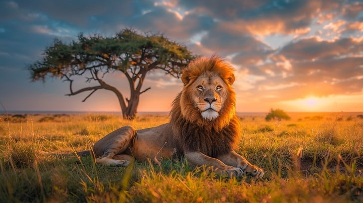 | In the image, a large lion is peacefully laying on the grass, with a tree nearby, creating a picturesque scene. The lion appears to be facing the camera, making a contrasting presence against the vibrant sky as the sun sets.
The image frames the lion prominently, with no other noticeable animals or objects in the scene. The sun's rays, just before it sets, ideally cast a warm glow on the lion and the surroundings, accentuating the serenity and beauty of the moment. | In the image, there is a lion peacefully resting on short, dry grass in a sparsely vegetated area. The lion is in the center of the scene, with a noticeable yellow tree near the right side of the image. The lion seems to be facing the setting sun, with a beautiful orange sky casting warm light on the grass. The sun appears to be setting in the distance, creating a serene and picturesque scene. | The image captures a majestic lion laying in a field with grass and trees in the background. The lion is comfortably resting on the ground, giving the viewer a sense of the lion's size and strength. In the surrounding area, there are also a few bushes, one of which is closer to the loin and another a bit further away. The sun background lends a warm, golden glow to the scene, making it an impressive display of the natural world. | The image captures a majestic, sunlit lion sitting prominently in a lush green field with tall, dry grasses. The lion is the main focus of the picture, taking up about half of the frame. The rest of the image features a beautiful open, cloudy sky that complements the lion's presence in the field. The lush green grass surrounding the lion creates a picturesque contrast to the clouds and sky, making the scene even more striking. | The image features a majestic lion in a grassy environment, possibly a savannah. The lion is reclining or leaning back on its back, lying down in a relaxed posture. The sky in the background serves as a beautiful backdrop for this exquisite moment.
The lion takes up a large portion of the frame, and it is situated nearby a tree in the foreground. The grassland setting and the sun's glow create a picturesque and serene atmosphere, showcasing the beauty of the lion's natural habitat. | The image features a majestic lion sitting next to a tall tree, taking in the wildness of its surroundings. The lion is positioned towards the center of the scene and seems to be enjoying the moment. The setting sun in the background adds a striking ambiance to the image.
The tree in the foreground is the main focus, making up a significant portion of the frame, from left to right. The sky behind the lion is characterized by numerous clouds scattered throughout, capturing the beauty and tranquility of the wilderness.
The entire scene exudes a sense of calmness and serenity, as the single lion laying in the shadows truly emphasizes the peaceful atmosphere of the location. | The image features a prone lion lying across a grassy plain in an African field. The lion seems to be enjoying the sunlight as it rests on the grass.
Several trees are visible in the area, providing a natural backdrop for the scene. There is a bird, possibly a hawk or an eagle, flying close to the grassy area where the lion is resting. The landscape beautifully highlights the solitary yet powerful presence of the lion as it lounges on the ground near the trees with the sky in the background. | The image depicts a majestic lion with a beautiful sunset scene in the background. The lion is lying down peacefully on the grass, possibly posing as it roams a grassy area near a lush green tree. The setting sun casts a warm glow on the scene, creating a serene and perfect picture. | The image features a lion resting in a sunny and grassy field, enjoying the picturesque view. The lion is positioned towards the center of the image and appears to be lying down comfortably. A few tall trees are scattered around the area, creating a blend of natural scenery. In addition, there is a single person situated in the far right corner of the image, possibly observing the majestic lion from a distance. | The image showcases a majestic lion sitting on a rock within the natural wildlife setting of the savannah. The presence of a tree near the lion creates a sense of depth and harmony with its natural environment. The sky in the image has a distinct dark contrast to the vibrant colors of the lion, making the lion even more standout in the scene. This beautiful capture presents the lion as an awe-inspiring and solitary creature in its natural habitat. | The image captures a peaceful moment of a lion lying on the grass in a savanna. The lion takes up a significant portion of the scene, extending from the left to the right side of the image. Behind the lion, a majestic lush green tree can be seen, adding a hint of greenery to the otherwise open savanna terrain. The backdrop is a sky that appears to be surrounded by clouds, which enhances the beauty of the scene. |
 | The image showcases an underwater scene featuring a whale shark, presumably smiling amidst the ocean. There are various other fish swimming around the whale, with some of them near the shark's open mouth. In total, there are twelve fish surrounding the whale shark while it swims along, creating a lively and colorful aquatic atmosphere. | The image captures a stunning moment beneath the ocean waters in which a whale is attempting to take a bite. The whale's open mouth is pointing downward toward the ground, reaching for the fish swimming beneath it. The scene is filled with a diverse collection of over 14 fish, varying in size and position, scattered across the ocean.
The fish are attracted to the whale's open mouth and can be seen occupying the lower areas of the image. Some of these fish are positioned closer to the whale, while others are located further away, creating a lively and artistic setting under the ocean's surface. | In this underwater image, numerous types of fish are gathered around the open mouth of a large fish, possibly a shark, possibly a whale, who is either opened for feeding or resting. The fish are of various sizes and swimming towards the open mouth, either attracted by food or curious about the situation.
There are at least twelve fish visible, spread around and closer to the mouth area to take advantage of the captured fish being served. The scene demonstrates the collaborative feeding behavior and interaction between different types of sea creatures, creating an interesting and fascinating view underwater. | The image depicts a fascinating aquatic scene, where a shark has its wide jaw open, greeting several yellow fish that swim inside. Surrounded by an ocean environment, the shark is positioned near the bottom half of the image.
Multiple yellow fish can be observed throughout the scene, some swimming near the shark's open jaw, while others are dispersed throughout the image trying to find some safety from the potential meal. There is also a guppy, smaller in size and easily distinguishable, adding to the colorful assortment of fish. | The image shows a marine environment with a sharp-looking shark feeding on a large group of colorful fish from its open mouth. This shark is at the center of attention, displaying its powerful technique of getting its meal. The variety of fish include different sizes and colors, each trying to keep out of the shark's grasp.
The surrounding area features some light blue water and sand, providing a scenic view for the animals. The presence of numerous yellow fish within the shark's selection showcases the incredible biodiversity of the marine ecosystem. The juxtaposition of prey and predator creates an exciting and dynamic image of ocean life. | The image showcases a large blue shark swimming underwater with several small fish feeding from its open mouth. Positioned in the middle of the scene, the shark has its iconic maw wide open, allowing the feeding fish to comfortably caulk in without getting any harm.
In total, there are at least 15 visible fish in the scene, mainly concentrated around the shark's mouth and surrounding area. Some fish can be seen scattered in the background as well. This image captures a vivid moment in the underwater world, as the shark casually helps the smaller fish find nourishment. | The image features a very large mouth, with lots of shiny teeth, where there is a multitude of small yellow fish swimming in and out of it. The fish are scattered across the shiny teeth and can be seen in various sizes, allowing a sense of depth in the underwater scene. The abundance of fish in the mouth suggests a diverse ecosystem and makes the scene look like a vibrant and lively marine environment. Overall, it is a captivating and bustling underwater scene featuring the fascinating interactions between the viewer and the marine creatures. | In the image, a school of fish covers the open mouth of an underwater creature, possibly a shark or a giant fish. The fish are both feeding and swimming around the mouth of the investigation, giving a sense of a bustling scene. There are numerous fish scattered throughout the scene, some close to the environment, and others further back, filling the space between the open mouth and the surrounding area with water. This creates a vivid and lively scene of underwater life interacting with one another. | The image showcases the very large, gaping mouth of a whale, with numerous small fish swimming inside. The fish are of various sizes and positions within the whale's mouth, with most of them located more towards the center. The whale's mouth is taking up a significant portion of the scene, giving prominence to the fish movement as well as the overall peaceful oceanic ambiance. | The image captures an underwater scene featuring a strange, hitachi-shaped sea creature with a large mouth and large teeth. Several fish of various sizes are swimming around the open mouth of the sea creature, likely feeding on the fish.
There's a diverse mix of fish swimming through the open mouth, including one on the left side, another in the center, one in the right side, and another on the bottom right. The arrangement of these fish creates a dynamic and engaging view of the underwater interaction between the sea creature and the various fish. | The image shows a large fish with a very wide, gaping mouth filled with several small, colorful fish. The scene showcases the bottom of the ocean where the fish have gathered in an elaborate display of diversity. In total, there are ten fish captured in this unique moment.
The vibrant colors contrast emphasizes the beauty of nature in this underwater scene, featuring perhaps a shark or a large eel as the main subject. The busy and lively environment of the underwater scene highlights the intricate balance among aquatic species. |
| 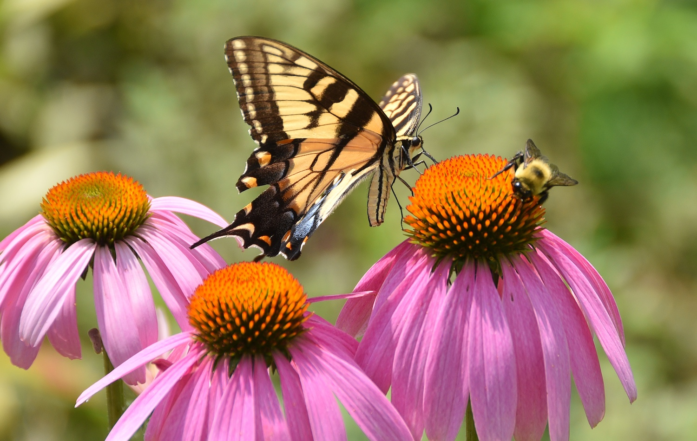 | The image captures a close-up of two colorful butterflies hovering over a bouquet of bright purple flowers. The butterflies are situated on either side of the flowers, with one on the left and the other on the right. There is also a third butterfly in the background slightly to the left of the center.
In addition to the butterflies, there's a small bee resting on the flower towards the right side of the image. It blends well with the overall nature atmosphere of the scene. | In this image, there are various plants with bright orange flowers attracting different types of insects. Some birds are perched alongside these flowers on the plants, observing the bees or hummingbirds that are present in the scene.
One large beautiful butterfly, distinguished by orange and blue colors, is hovering over a cluster of purple flowers in the center of the image. Another smaller, darker butterfly is nearby the butterfly, likely sharing its interest in the flowers.
In addition to the butterflies, there is a bee feeding on the orange flowers, seeking out the nectar to nourish itself. Other insects, such as a hummingbird, can be spotted among the flower bouquets. The hubbub of insects and birds creates a thriving atmosphere around these vibrant flowers. | The image features two butterflies hovering above a bed of purple flowers. The butterflies appear to be interested in feeding from the flowers, with one butterfly more prominently depicted while the second one is perched on a separate flower near the left edge of the image. A small black and yellow bee can be seen present in the scene, adding to the diverse array of insects interacting with the flowers. The scene depicts a vibrant and lively moment in nature, with the butterflies and bee enjoying their food sources amidst the purple and orange flowers. | In the image, a man is present in the scene, likely observing two insects interacting with each other. One of the insects is a butterfly perched on a purple flower while another is a bee concentrated on feeding. The butterfly is seen to the left of the bee, which is mainly focusing on the bee's head. The scene captures this interesting interaction between the two insects as they engage in play or combat in their natural environment. | The image features a scene with a garden blooming with purple flowers. Two butterflies are captured in the act of landing on different flowers, kissing each other above a bed of yellow flowers. These butterflies are hovering and interacting with their surroundings skillfully. One butterfly is positioned on the left side, while the other is visible towards the right bottom corner of the image. The beautiful and natural setting showcases these butterflies as they gracefully partake in their moment of interaction. | The image captures a scene of a yellow butterfly, likely a monarch, flying over a large purple flower. The vibrant flower serves as a stunning background for the butterfly. As the butterfly's wings are spread, it appears to be looking down and hovering in the air near the flower. Meanwhile, another butterfly can be seen further back, resting near the side of a dandelion, making the outdoor setting even more serene and picturesque. | The image captures a stunning moment of a butterfly sitting on the tip of a pink flower bud, creating an impression of a delicate balance between nature's creatures. There are other smaller red flowers in the picture, adding to the lush, vibrant scene.
On the opposite end of the spectrum, there are two large bees floating near the butterfly. They appear to be contrasting the beauty of the elaborate purple blossom as their presence gives the image a touch of life and dynamic energy.
The positions and interactions of the bees, the butterfly, and the stunning blossoming flowers create a delightful and fascinating composition. | The scene captures a colorful butterfly and a bumble bee interacting with each other in a lush, flower-filled fieldset on a sunny day. The butterfly appears to be feeding from a small orange flower. Multiple flowers, including purple ones, can be seen surrounding the butterfly and the bumble bee in various sizes and hues, with some larger and some smaller, creating a vibrant and blooming atmosphere. | The image features a beautiful scene with a butterfly and a flower buzzing bee visiting a purple-pink flower simultaneously. The butterfly can be seen sitting on the upper part of the flower, while the bee can be spotted hovering near the center. There is also another smaller butterfly in the scene, perched near the right edge of the image atop another purple-pink bloom.
The flowers themselves possess an eye-catching purple hue, creating an aesthetically pleasing environment for the insect visitors. There is a delicate and elegant interaction between the butterfly, bee, and flowers, carving out a moment of harmony in nature. | The image shows a green glass garden filled with trees and flowers. The focal point of the scene is a colorful rose with vibrant butterflies flitting around it. One butterfly is perched on the head of the rose, while another one is in the process of landing on it. A third butterfly is flying past the rose, adding to the serene and lively atmosphere of the garden. In addition to the delightful scene of butterflies and flowers, there is a bee present in the garden, perched on a bright coral poppy flower. The combination of the beautiful and delicate creatures creates an enchanting and picturesque environment. | The image displays a beautiful scene of a colorful iridescent butterfly landing on a small flower. The butterfly is positioned in the middle of the scene, hovering over the flower, attracted to its scent. One end of the yellow and black butterfly clings onto the flower, while the other end seems to be in motion.
The close-up of the butterfly on the flower is surrounded by several other flowers of varying sizes and colors, creating a vibrant and captivating natural atmosphere. The entire scene captures the essence of butterfly behavior, offering a glimpse into the delicate balance between the life of these ephemeral creatures and the surrounding flora. |
| The image showcases a vibrant underwater scene with a group of multi-colored, tropical fish swimming around among the coral reef. There are at least twelve distinct fish in the scene, with various colors and patterns set against the backdrop of brown ocean, creating a lively and eye-catching display. Among these fish, there are a few blending together to create a sense of movement and harmony.
In particular, the aquatic environment resembles a tropical island, possibly in Indonesia, where the dense coral reefs and a multitude of colorful fish thrive, making it an exceptional spot for oceanic enthusiasts to encounter marine life. | The image showcases a lively underwater scene with numerous brightly colored fish swimming gracefully together. A total of fourteen marine creatures, including various species of sharks, are scattered all over the underwater environment. Some of the fish are closer to the foreground, while others are scattered throughout the scene in the background.
These fish are shown in a wide range of sizes, highlighting their diverse characteristics. They all seem to be enjoying their time in the vast sea filled with coral, presenting a vibrant and dynamic view of ocean life. | The image showcases a colorful and bustling underwater scene with a multitude of vibrant, multicolored fish. There are a total of 13 fish visible in the photo, some with blue, orange, yellow, and red colors, covering a vast color palette typical of a tropical reef.
The fish are swimming near and over the coral, creating an aquatic spectacle. The scene appears to be a mixed reef, featuring a combination of rocks and des res that provide a richer biodiversity of underwater life. The fish exhibit a variety of shapes and sizes, ranging from smaller to larger ones, adding to the diversity of creatures swimming in the water. | The image presents an underwater scene featuring various multicolored tropical fish in an ocean reef. The fish are scattered throughout the image, some closer to the foreground and others further in the background. There is a large group of brightly colored fish swimming together, with some individuals being close to the edge of the frame. Overall, the scene gives an impression of a vibrant and healthy reef filled with thriving marine life. | As the vibrant colors of the tropical ocean water waves, multiple ocean species can be spotted swimming through the beautiful blue waters. Among them, several fish are exploring the coral reefs with bright yellow heads providing a strong pop of color amidst the scenery.
In total, there are at least 11 fish in various positions and positions in the image, each exhibiting distinct characteristics. They are dispersed throughout the ocean, showing the rich and diverse life beneath the waves. The combination of these various aquatic creatures creates a visually stunning image of marine life thriving in their natural habitat. | The image portrays an ocean filled with various tropical fish, swimming in a blue and green sea. There are at least thirteen different colors of fish, each with their unique patterns.
The underwater scene features a group of gorgeous, four-colored fish; some look like guppiesas they are known for their four distinct color phasesstacked close to each other, while others display different angles. This striking interaction between the UNESCO World Heritage Site and the curious fishnet showcases the beauty and diversity of marine life. | The image depicts a street of colorful fish vendors located near a coral reef. The fish vendors are showcasing a variety of colorful exotic fish to attract potential buyers at their businesses. The display is quite colorful and vibrant, with several different species and sizes of fish on display. Some of the fish can be seen in groups or individually arranged in display containers, while others are positioned close to reefs and other structures in the aquarium tank. The aquarium is likely located in the Anna Maria Aquarium and Reef Center, with diverse marine life from around the world on exhibit. | The image captures a colorful scene underneath the water, possibly in a coral reef. Numerous fish of different colors swim together, creating a vibrant and lively atmosphere. There are at least fifteen distinctly visible fish, each appearing unique in both appearance and size.
These marine creatures are dispersed throughout the entire image, covering the area from left to right and standing out in their diverse hues and patterns. Their diverse body shapes, forms, and sizes illustrate the variety of fish that reside and interact within the coral reef environment. | The image features a vivid and colorful underwater scene, filled with a large variety of tropical fish swimming together. There is a diverse mix of at least twelve different fish, with some species swimming near each other and others appearing more spread out across the image. The fish are of various sizes, adding to the visual interest of this rich aquatic ecosystem.
In addition to the fish, a boat can be seen towards the top left corner of the image, suggesting that it could be the source of the vibrant, swimming waters or a place where the fish are being observed and celebrated. | The image depicts a vibrant underwater scene filled with beautiful tropical fish and other aquatic creatures. An assortment of colorful fish is swimming throughout the ocean, creating a vivid and lively atmosphere. There are yellow, orange, and red colors amongst the fish, possibly from the coral underneath the water.
In total, there are 15 individual fishes visible in the marine background. They range in sizes and positions, appearing as a mixed group of different species, all gathered together to enjoy the ocean's depths. In the midst of these fish, there is also a bird above the covering of the image, adding diversity to the scene. | The image showcases a beautiful underwater scene featuring a vibrant reef with a diverse group of fish swimming together in a large body of water. There are at least thirteen fish visible in the picture, creating a lively and colorful atmosphere. The fish are of various sizes and positions, with some swimming near the bottom and others closer to the top, creating an impression of movement and depth in the scene. Overall, the image captures the stunning beauty and harmony of the marine life in such an environment. |
 | The image features two dolphins skillfully galloping through an ocean wave during a beautiful sunset. One dolphin is further to the left, while the other is situated more in the center of the scene, both gracefully executing their leaps. The scene takes place near a beach given the presence of waves in the water. Despite the tranquil atmosphere, the dolphins seem to be enjoying their time as they playfully navigate through the ocean waves. | The image depicts a sky above a picturesque Ocean Beach full of splashing sunlight and waves. A small dolphin and another dolphin are gracefully jostled in the ocean, playing together. They can be seen making their way through the wave, surrounded by massively big waves. The scene is a sunny and action-packed moment offering a glimpse into ocean life. | The image captures two dolphins frolicking in the ocean sea, joyfully leaping in the air and riding on a wave. There's a noticeable lack of sunlight, creating a moody lighting effect. The two dolphins appear to be the main focus of the scene.
Since the focus is on the dolphins, other elements within the image are less prominent. The dolphins' playful appearance and their interaction with the wave create an intriguing, dynamic moment. | The image captures a breathtaking moment featuring two dolphins leaping in the air above an ocean wave. One dolphin appears to be coming from behind while the other soars gracefully in front, both high in the water. The scene is lit beautifully, as they seemingly fly through the air near a sunset, adding a sense of tranquility to the image. | The image features two dolphins playing together in a body of water near the shore. They are jumping in the air while in the ocean, as foam splashes from their actions. The scene takes place during a beautiful sunset, adding a serene mood to the moment. The dolphins seem to be enjoying their time, demonstrating the social nature and playful behavior of these animals. The sky in the background is painted with warm hues, reflecting the lively atmosphere of the ocean with the dolphins jumping in the wild. | In the image, two dolphins can be seen elegantly playing and surfing on a wave in a calm body of water. They are gracefully leaping through the waves, evoking a feeling of freedom and joy. The scene takes place as the sun sets and the image is bathed in warm, golden light.
The dolphins jump at slightly different heights and positions, showcasing their agility and the dynamics of their interaction with the wave. This picturesque moment highlights the beauty of nature and emphasizes the dolphins' connection with their environment. | The image portrays two dolphins swimming in a body of water, possibly the ocean, and they appear to be playing and splashing around. The sunset in the background adds a beautiful and serene atmosphere to the scene. The dolphins can be seen at various angles, including one closer to the left side of the image and the other more on the right side. The spray they are creating adds an element of dynamism to the otherwise peaceful setting. | The image captures two dolphins playing in the ocean, as they splash around the water in front of a beautiful ocean sunset. They are caught in the middle of an exciting ride, showing off their skill and grace as they swim in the waves. The dolphins look like they are enjoying themselves, making the scene even more delightful. | The image captures an ocean scene in which there are two dolphins skillfully splashing water up from beneath them as they move across the surface. Their playful behavior is visible while they enjoy their time in the sea.
The dark silhouette of the big sky above the ocean emphasizes the overall atmosphere of the scene. The water's surface is void of boats or other visible objects, emphasizing the focus on the dolphins' interactions. | The image features two dolphins together, playfully jumping out of the ocean during the day. They are positioned in the center of the scene, capturing attention with their energetic display. The dolphins are moving towards each other, as if synchronizing their activity during the lively moment.
The surrounding area consists primarily of the large body of water, providing an open space for the dolphins to frolic and perform their water tricks. The image portrays a beautiful and dynamic interaction between the dolphins, making for a breathtaking sight. | The image features two dolphins gracefully leaping high into the air as they dance and jump in the ocean. The dolphins are the center of attention, surrounded by the serene ocean environment and vibrant sunset hue in the background. The scene evokes a feeling of joy and freedom, as the dolphins exemplify the natural beauty and grace of marine life. |
 | The image depicts a captivating scene of multiple elephants standing together in a grassy field. Among the elephants, there are two adult elephants positioned side by side, and a baby elephant walking beside them. Together, they make up a family group walking out of a wooded area.
Further back in the scene, other elephants can be identified scattered throughout the field. In addition to the elephants, there are a few potted plants positioned across the field, enhancing the natural landscape. The arrangement of the elephants and the lush, hilly surroundings creates a harmonious and peaceful atmosphere in the image. | The image depicts a sight of two massive granite gray elephants walking in a grass field, accompanied by their younger, baby elephant. The big elephants are positioned behind the baby elephant, creating a protective line as they traverse the landscape together. It gives off a sense of unity and a strong familial bond.
The field has some trees scattered around, providing more natural scenery to the scene. The majestic presence of the family allows the observer to appreciate the beauty and complexity of the wildlife. | The scene depicts a herd of elephants of various sizes in a lush grassy park. The elephants appear to be grazing on the grass, with some standing next to a forest. There are at least four adult and juvenile elephants in the scene, with one adult elephant standing to the left of the group, two juvenile elephants in the foreground, and another adult elephant just below the juveniles. The family structure of the elephants is evident as they mill about and enjoy their time together in the grassy area. | The image portrays a family consisting of an adult elephant and two baby elephants in a lush green field. The adult elephant can be seen on the right side, with one baby elephant slightly behind and between its legs, and the second baby elephant closer to the left side of the image.
The scene captures the joyful bond between the three members as they walk together through the grassy area, enjoying their time in this serene outdoor location. | The image features an adult elephant and a baby elephant standing together in a grassy area. The adult elephant is positioned on the left side of the baby elephant, and they appear close, suggesting a bond or family connection. The grassy environment provides a suitable habitat for this elephant family, allowing them to roam and graze freely. Overall, the scene presents a moment of togetherness between the two elephants in their natural setting. | In this grassy and vast field, a herd of elephants, including a baby, an adult, and two more smaller ones, are standing and wandering around. The elephants exhibit various positions as they are scattered throughout the landscape, creating a sense of wild natural habitat. The image offers an incredible perspective of these majestic creatures in a serene environment, showcasing the relationships between the parent elephants and their young as they journey together. | In the image, a large elephant is standing near two smaller elephants. The adult elephant appears to be looking directly at the camera. They are located together in a green, grassy area with trees in the background.
One of the small elephants, positioned closer to the right side of the frame, seems to be an adorable baby elephant. The other small elephant is on the left side, standing between the adult and the baby elephant. This heartwarming scene showcases the close bond between the family members, possibly consisting of an adult elephant and her two baby elephants. | The image features a family of elephants, consisting of two grown elephants and one baby elephant. They are standing in a green, grassy area with sparse bushes in the surrounding environment. The adult elephants are positioned close to one another, with the baby elephant walking close behind or slightly in front. It appears that the adult elephants are watching after the young one, creating a sense of unity within the family. | The image depicts a beautiful scene of an adult elephant walking alongside two small children or baby elephants. They are roaming across a vast field with lush grass, bushes, and tree branches scattered around them. The adult elephant appears to be leading the way, ensuring the safety of the two younger elephants. The baby elephants follow close behind the big one, forming a charming trinity in the open space. | The image depicts a group of elephants in their natural habitat, walking together through a lush grassy field. There are three elephants visible in the scene, with two of them appearing to be walking together side by side, while the third is positioned slightly further back.
Two babies can be seen in the scene, their presence making the family unit more evident. An adult male elephant is also standing in the area, serving as the leader and providing protection for the young ones. The proximity of trees in the background adds to the overall natural ambiance of the scene. | The image captures a grassy area where a group of elephants, including two adults and a baby, are walking together as a family. One of the adults is walking near the baby, providing guidance or close protection. They seem to be heading towards a nearby hill, enjoying the pleasant surroundings.
Apart from the elephants, various vegetation is present in the scene, including bushes and grass. The sky appears a bit cloudy, adding depth and atmosphere to the scene. The overall vibe of the picture conveys tranquility and harmony, as the family of elephants naturally roams around their habitat. |
 | The image features a young male child riding a bicycle down the street. He is in the middle of the road, paying attention to his surroundings as he rides. The scene appears to be realistic, depicting a typical street setting with a few elements such as a car and two potted plants nearby. Additionally, trees and a line of houses can be seen in the background, contributing to the overall urban atmosphere of the place. | In the image, a young woman is riding a red bicycle on a street and looking up at the trees as she goes. The street appears to be slipm-littered, suggesting it's not in the best condition. A fairly young boy wearing a yellow shirt is seated next to her on the bicycle. In the scene, there are a few potted plants placed along the sidewalk, giving the street a more lively atmosphere. Despite the old street, the boy and girl seem to be enjoying their time together as they travel down the road. | The image features a young boy riding bicycle along a quiet street. He is standing on the bicycle, riding it on a pathway in front of an organized neighborhood. The boy appears to be enjoying his time while exploring the streets.
The street is surrounded by small houses that form a peaceful neighborhood. There are several homes on both sides of the street, giving it a calm atmosphere. Additionally, a stop sign can be seen in the scene, indicating the street's end or a controlled intersection further ahead. | The image features a young African American male riding a small bike down a street. He is wearing yellow attire and seems to be enjoying his ride.
Around him, there are other people visible in the scene, with one standing in the background, another slightly towards the right, and two additional individuals in the foreground of the image. A few potted plants can be spotted scattered throughout the scene, adding to the overall ambiance of the street.
In the background, there is a car partially visible on the left side of the image. The street is likely a calm and pleasant environment for the boy and people around him to enjoy. | I'm looking at an image featuring a young African American boy in jean coveralls riding a bicycle. The boy appears to be enjoying the ride, and a smile can be seen on his face as he pedals along. Surrounding the boy and his bicycle, there is a house and a fire hydrant in close proximity. Additionally, there are multiple potted plants positioned in the area, one towards the left, another near the center, and the third on the right side. The scene appears lively, with the boy making the most of his time on his bike. | In the image, there is a boy sitting on a bicycle in the middle of a city street. The boy is facing the ground, and he is pretty young. The red bicycle spans the majority of the street, and a stop sign can be seen in the background, giving an urban feel to the scene. In the background, palm trees are visible indicating the bicycle rider is in a city with a warmer climate. | The image captures a small boy riding a red motor scooter down a street. He is enjoying his time outside in the city with the aerial view presented above him. On the street, there is a bicycle located further down the road and a car parked closer to the boy on the motor scooter.
The small boy appears to be wearing a helmet for safety while riding the scooter. In addition to this, there's a bottle positioned in the scene, likely discarded on the street or left behind by someone, and a potted plant that adds some greenery to the urban scene. | The image depicts a small boy pedaling his bicycle down a street in a colorful scene. He appears to be enjoying his bike ride and might be in a lively area. The boy is wearing a yellow top that stands out from his dark skin tone.
In the background, there are several buildings that create a vibrant, mixed-use street scene. Additionally, there are various potted plants placed on the road one near the left side of the image, another in the middle of it, and one on the right side. Also, two traffic lights can be seen, adding to the urban environment.
A backpack lies on the ground close to the boy, possibly held by someone nearby. | The image is an animated painting of a young African American boy who is riding a bike down a city street. The boy appears to be enjoying his ride and confidently guiding the bicycle.
In addition to the main character on his bicycle, there are a few other people on the sidewalks and near the street. Some elements of the street scene include a couple of parked cars and a cell phone. A backpack is slightly visible near the middle of the scene.
Overall, it is a delightful and colorful scene depicting the joy of a young boy riding a bike in the city. | The image portrays a cartoon image of Cars' young protagonist Lightning McQueen riding a bicycle down a street. He is riding next to a sidewalk, gaining momentum as he cycles by. The scene comprises various other elements adding to the atmosphere of the image, including cars, motorcycles, and people.
A row of cars can be seen parked alongside the street, with motorcycles both in the foreground and the background. There are also numerous people in the scene, some close to the street and others further away, engaged in various activities, contributing to the lively atmosphere of the cartoon cityscape. | The image captures a vibrant scene of a street in what appears to be a foreign country. A young boy is riding a bicycle down the street, making way through the town. The boy leads the scene, and his presence adds a sense of energy and adventure to the image. There are both a car and a motorcycle in the image, sharing the road with the boy. In the background, there are two additional people visible, and also three potted plants adding to the lively atmosphere of the street. The impressive presence of a train, likely indicating an extensive public transportation network, enhances the vibrancy and activity in the town. |
 | The scene is a vibrant anime-style painting featuring various characters. At the center of the image, there's a woman in a flowing red dress, holding a whip. An orange dragon with red eyes can also be seen in the painting.
In addition to the woman and dragon, there are six other people visible within the picture: some are close to each other, while others are positioned more distantly. The characters vary in size and appear to be part of the same animation sequence, creating a rich and dynamic visual experience. | The image is a colorful and eye-catching anime-style picture featuring different characters from the school girl's perspective. The main focus is a pretty, likely superhero, ducking down in an intense, swooshing action. She is positioned towards the left side of the picture.
Around her, a few other characters are present. On the left side of the frame, there are people wearing ties that can be seen at various distances, possibly as an impressionist composition to combine people with accessories.
Overall, the scene is visually engaging with action, character, and the energy of a school girl's art. | The image is a colorful, digital artwork featuring four pictures of girls, each positioned slightly off-center. Each girl is wearing traditional Asian clothing and stepping forward in a proud manner. Their outfits suggest that they could be anime characters.
In addition to the girls, there is a dragon located on the left side of the image, possibly representing an element of their cultural background. A snake or possibly a large figure, not entirely clear from the photo, can also be seen on the upper right corner. As the background of the drawing is colored red, it does not provide further information about the specific location or time period these girls may be from. | The image is a montage of three television-type characters in three different positions, representing characters from differentTV shows. Two other peoplepossible women with pigtailsare included in the montage standing along with the mixed-clothing cartoon girl.
A few more red-haired cartoon characters are found among the montage, one at the far left and one at the far left again. This montage also shows some Asian living room decor elements, such as a potted plant on the top right corner, and other objects like a dining table and chairs placed in the room. A TV is also visible in the scene, located in the top middle section of the montage. | The image is a hand-drawn, block-style digital cartoon of a scene featuring Asian characters. In the center of the scene, a beautiful woman in a red kimono is standing with her hand on her hip. To her left, there is a ferocious dragon, while to her right, an evil-looking soldier stands with futuristic weapons.
There are other iconic characters in the lower section of the image, with Donkey Kong depicted as an Asian character dressed in a white gown, as well as Rosie the Riveter. This humorous combination of characters illustrates the variety of personalities and time periods represented within this cartoon. | The image is a tall and large illustration composed of various characters. The woman stands out of the group, and she is either a traveller or a princess with red hair and a white outfit. She is holding a sword and looks strong and independent. The artist portrays her wearing a blue shirt in different parts of the illustration, which adds variety to the colors and styles of the characters.
There are several other figures displayed in the scene some in color, some in grayscale making the illustration visually intriguing and diverse. These figures include various outfits and backgrounds, further enhancing the different themes and motifs of the image. | The image shows a colorful mixed media piece featuring various characters and color tones. In the center of the scene, a woman is surrounded by a group of people and cartoon animals, dressed in a long, ornate costume. The haloed young woman appears to be the focal point in the scene.
A number of other people and cartoon characters can be seen in the scene, some wearing traditional ethnic clothing, such as a kimono. Additionally, there is a notable presence of masks, thrown into the mix by the artist, perhaps to create a more dynamic, imaginative environment. The overall feel of the piece is quite artful and engaging, with a fusion of different cultural elements, characters, and colors. | The image features a vibrant, colorful illustration or painting of various characters and symbols, giving it a unique and artistic appearance. Among the characters, a woman in a red kimono stands out. There are several monsters and other strange characters surrounding the woman, creating an interesting mix of both good and evil within the drawing. The woman serves as a focal point in the middle of this complex and lively scene. | The image features a western animation drawing of a woman in a white and red dress, reminiscent of Anime. The woman is standing and appears to be on the edge of an abstract design. Surrounding the woman, there are several other Anime characters adorning the scene. Some characters are positioned further to the left, while others are more towards the right.
There is also a dragon illustration situated in the background, adding to the fantastical and artistic nature of the scene. Overall, the composition and style of the drawing give the impression of a colorful and entertaining animated world.
Additionally, there is a cell phone placed in the upper-left corner of the drawing, possibly belonging to the creator or someone who appreciates and enjoys this Anime-inspired artwork. | In the image, there is a young woman with a fashionable outfit, posing in front of three large totem pole representations. The totem poles are arranged in such a way that one is in the front left of the woman, another one in the middle behind her, and a larger one to the right in the background.
The woman in the center of the frame has her handbag on the ground, possibly to keep others from walking on top of her posed figure. The scene also features a couple of monkeys located in the middle and on the left side, seemingly harmonizing with the women posing and the totem poles arranged in the image. | The image is an animated digital art piece featuring a pretty woman with red hair wearing a white dress. She is wielding a sword, posing as the main subject in the scene.
In addition to the main figure, several other individuals are present in the frame. There are four people visible at different positions in the image, some standing closer to the foreground and some in the background. A chair and a blue bird can also be seen in the scene, likely providing variety and additional context to the digital art piece. |
 | The image features a cartoon scene with two men in the foreground. One man is holding a camera, while the other appears to be a photo bomber or a small, quirky figure, as they share a frame in a playful manner. There are also a few stars scattered around them, adding a whimsical touch to the cartoon. The setting seems to be artistic and has a creative vibe. | The image depicts an artistic and humorous scene featuring two characters. There is a bumbling man, likely a photographer, dressed in a blue shirt and wearing glasses. He is depicted as having camera equipment, but it is hanging from his arm. The photographer is smiling as he directs the star-dotted path of a man in an orange shirt with one foot visible.
These two characters and the vibrant pink, yellow, and green star-filled background create a whimsical and creative atmosphere, reflecting the personality of the photographer and the main subject. | The image portrays a comical scene of a man in a blue shirt putting together a toy on his bed. Another man is standing nearby, wearing red, with nutrition labels hung all over his body in various positions. The drawings of these two men are likely numeros and paper salad cartons used as labels. There's also a person in an orange shirt looking over from the other side of the room.
In the background, a colorful swirl of different colors is present, adding liveliness to the scene. There is also a bowl placed at the edge of the bed, towards the right. | The image features a vibrant and colorful scene with two anthropomorphic beings a small green character and a large blue man engaging in a fun rainbow-colored ripple effect. The dynamics of the scene capture the excitement of creating new characters as the young boy hands over his camera to the man with glasses, allowing him to focus on this creative endeavor.
Several instances of stars can be seen in the scene, with some located close together in various positions, while others are accompanied by a single star and green character. There are also some potted plants found within the scene, adding to its overall charming atmosphere.
The two character figures are expressive, engaging the viewer, and the vibrant colors and elements of the scene evoke feelings of fun and playfulness. | The image is an artistic collage with various elements inside a circus setting, such as a clown and a man with a camera. The clown is walking across the top most of the image, while the man with the camera appears to be standing next to a wild rainbow, possibly preparing to take a shot. The bright colors and bold, whimsical style create the circus atmosphere in this creative scene. | The image is a picture featuring a life-sized illustration of a man with glasses and a camera, surrounded by a colorful background. The man appears to be leaning over as if he is engaged in a creative project, sculpting or photographing an artist seen in the distance. The beautifully colored background adds visual interest to the scene. There's a green stand, yellow stars, and neon light somewhere below the man's feet. The overall composition creates a whimsical and creative atmosphere. | The image is a colorful cartoon featuring two men with odd expressions. One man has a green mustache, and the other man appears to be Mr. Snuggle Man, dressed in orange. Both men seem a little crazy. They are surrounded by a whimsical environment with lots of colorful stars in the background, and the scene captures a vibrant atmosphere.
Furthermore, the objects in the image include a handbag located to the right of the Madame X man, and a mirror in the middle of the scene. The overall scene seems lively and entertaining, invoking a sense of fun and laughter. | The image features a young man surrounded by a colorful ocean of stars and rainbow lights. He appears to be posing for a creative camera shot, possibly a time-lapse or stop motion picture, as he seems small compared to the vividly colored environment behind him. Several stars of varying sizes are scattered throughout the scene, completing the vibrant and dynamic feel of the image. If we look closer, a toy camera is also visible in the background, adding an element of playfulness to the scene. | I can provide more details about the image, so do cartoony faces appear to be drawing or exaggerated illustrations, surrounded by multicolored spirals and trails of various sorts. These faces might be described as "ugly," or they could be adventurers embarking on a journey filled with peril and unknown tale. The actual scene might involve a man attempting to help another face befriend an invisible creature, as suggested by the use of camera flashes and helmets. The background shows a combination of bright colors and star protrusions, setting the adventure-filled atmosphere of the image. | The image depicts a large, tall, slender man, possibly an illustration or cartoon, holding a camera. He is focused on taking a picture, and his face is positioned in the viewfinder of the camera. Behind him, there is a shorter, squatter, and round person who is holding two baseball bats and appears to be choking the man with one of the bats. The scene resembles a comic or humorized confrontation between the two characters. | The image is a creative illustration featuring a man and a giant red pen, both floating in a multicolored, rainbow-like background. The man is holding a film camera, while the red pen appears to be little, giving the scene a whimsical appearance. Additionally, there are multiple stars spread throughout the background in various colors, adding to the vibrant color palette. One of the stars is located to the left, while another is close to the top of the man, and two more follow closely behind the man. The scene appears lively and engaging with the playful combination of the man and the red pen with the vibrant backdrop of stars. |
 | The image features an animated scene with many reproductions of the famous Minion characters from the "Despicable Me" series standing on a green field. The Minions, dressed in their party outfits, celebrate a birthday by making funny faces, and some of them hold cakes. There are at least eleven visible Minions in the scene, making it an exciting and lively packed-out event. | The scene features two yellow cartoon characters from the movie "Despicable Me." One character is dressed in a blue shirt, while the other has a green striped shirt with a rainbow on it. They are standing next to each other with their mouths wide open, giving the impression that they're gagged.
There are multiple other minions in the background, both close to and farther away from these two main characters. Some of the minions appear to be moving around and interacting with each other. Additionally, there are also a few teddy bear figures scattered throughout the scene, perhaps as a prop or element of the costume party setting. | The image depicts a group of Minion characters dancing around and having a good time in a grassy setting. The characters are of various sizes, likely including other minions that help create a lively and crowded atmosphere. In the center of the scene, there are two main minions, standing on their hind legs, holding a tube or balloon, possibly celebrating or enjoying part of a birthday party or event.
The scene appears to be a visually captivating party with colorful and happy characters that are likely to bring joy and entertainment to those attending. | The image features an amusing scene with a group of animated yellow minions posing and standing next to each other. Among the group, half of the minions have their mouths open while one of them appears to be eating a piece of cake.
Aside from the minions, there are two cakes in the scene. One cake can be seen in the foreground, while the other one is located further back, along with a cup. The arrangement of the minions and the presence of the cakes suggest a celebration or a playful moment shared between these animated characters. | The image portrays an opening scene from the movie "Despicable Me" featuring a group of little yellow animated minions. There are at least 15 minions in various positions, with some closer to the foreground and others spread out in the background.
The main focus is on two minions mid-action, standing close to each other and reacting with the phrase, "I have a surprise." They are holding the center of attention in the middle of the frame. The surprise in their eyes signifies the excitement they share for this adventure. The rest of the minions react to the surprise, either showing excitement or curiosity in what's happening, adding to the lively and action-packed atmosphere of the scene. | In the image, two anthropomorphic yellow Minion characters are posing playfully with silly expressions as their funny facial features accentuate their exaggerated expressions. They are holding two different looking party streamers by their mouths, further enhancing the comical and lighthearted tone of the scene.
Apart from the two main figures, several other smaller Minion characters are visible in the background, further supporting the playful and amusing atmosphere of the image. It can be concluded that this scene is part of the Minion's refreshing antics and humor. | The image features a scene with multiple pairs of Minion figures, which appear to be characters from the animated film series Despicable Me. The Minion figures are present in different colors, with some wearing blue outfits, while others are brown or yellow. In total, there are four Minion figures in the scene.
One of these Minions appears to be holding a birthday candle, adding a festive touch to the scene. There is also a cake visible in the upper part of the image, suggesting that the Minions are perhaps celebrating a special occasion. | In this Pixar-style animated scene, there is a group of small, cute yellow birds that can be mistaken for minions. The birds are scattered around a party, with some holding party decorations, specifically blowing candles in their mouths. A couple of the birds can be seen holding a cake, adding to the festive atmosphere. The scene captures the lively and joyful mood of a celebratory event at which these lovable little creatures are the main attractions. | The image features a lively scene with animated characters, likely Minions, celebrating with brightly colored streamers. Several Minions, including two prominently visible on the left side, are posed in various positions. They are celebrating and enjoying themselves, with the two main Minions standing close to a birthday party setup.
In addition to the Minions, there are numerous other characters surrounding them, making it quite a cheerful, colorful celebration. | A delightful animated image that looks like a snow globe scene features a large snowman surrounded by numerous little yellow people, impersonating a celebration. The small toy figurines are scattered throughout the scene, forming a jovial atmosphere. These figurines can also be found in the background, adding extra depth to the display. It seems like a fun place for the toys to have a party. | The image features a fireworks scene with two animated minion characters standing outside, looking very surprised. They have been captured blowing up balloons, and one of them is holding a cake. There is a crowd of other balloons behind them, some blown up and others smoldered, creating a festive atmosphere. A total of 14 other minions can be seen scattered throughout the scene, some close to the two main characters and others farther away. |
 | In the image, there is a family-oriented scenario featuring characters from the animated movie "Despicable Me." The main character, a cartoony little girl with curly red hair, is present in the scene alongside a bearded man. They appear to be an orphan and his adopted dad, with the girl wearing glasses and a green sweater.
The setting is a living area with a cozy atmosphere, with an assortment of furniture items such as a remote control, two books, and a bottle visible on a table. The girl and the man are likely enjoying some time together, possibly watching a movie or playing a game on the TV. | The scene features a little girl dressed as a character from a big-eyed movie, specifically wearing a green shirt. She is standing in a room with an unenthusiastic expression as she puts her finger in her mouth. Another person, possibly a man or an adult, stands in front of this character. There are a few couches in the room, one on the left side and another on the right side, and a chair positioned near the right side of the scene. Some additional objects in the room include a cell phone and two bottles, one located close to the left side and the other in the middle. | The image features a cartoon scene of a character with glasses and a ponytail, standing next to a door on the right side. She is shown interacting with surrounding objects such as a wine glass and a keyboard. There are two wine glasses in the scene, one located near the left side of the door and the other closer to the character.
A keyboard is situated towards the left side, close to the wine glass, and is partially cut by the wooden door. Conceptually, the image forms part of a television show the character inhabits. | The image consists of two main characters: a short person with glasses and a bearded man. They both appear to be interacting with each other. The shorter person is wearing glasses and a hooded sweater, while the bearded man is closer to the right side of the frame. There is a computer keyboard present in the scene, with a reference to Atlassian flags in the background.
In addition to the main characters, there are three smaller figures portrayed in the background: two people standing at the center-right area of the image and another on the far right side. Another keyboard can be spotted at the far right corner, indicating a computer periphery setup. | In the image, there is a young woman wearing green glasses and a green sweater, who could be a female superhero, standing near a door. Her hair is styled in a bun. An older man is standing next to her, behind the door. In the scene, there is a computer keyboard and a keyboard mouse on a surface to the left of the woman, suggesting that the man is in the process of opening the door or looking up information. The scene may be from a comic book or an animated movie. | The image features a cartoon girl character wearing glasses and a toy green sweater. She appears to be sitting in a chair as a toy version of herself depicts her in the background. A toy military figure walks behind the toy girl, adding to the playful and animated scene.
The setting includes two chairs, one in front of the girl and another on the right side of the image. A noticeable detail is the presence of a keyboard stretching from one side of the image to the other, as if the cartoon girl is working on a computer. The entire scene is a delightful representation of this character in her daily life. | The image is a capture from a computer-animated feature film, depicting a small animated girl with short hair dressed in eyeglasses and a green coat. She is in close proximity to a bearded animated man. They are both situated in a cozy environment, with a door nearby. The animated characters appear to be having fun in this chill setting. | The image captures a lively scene featuring two animated characters. One is a beautifully drawn "Justice" princess dressed in cyan outfits with boobs and a corsaige, holding up a sheet of music and a computer keyboard. Beside her is a really big and handsome guy with a beard and mustache, wearing an oversized tie.
A couple of computer mice can be seen on the ground, and a keyboard is present in the scene. There is also a cell phone in the picture. The figure of the princess and the handsome man create a whimsical, alternate-world movie scene. | The image belongs to the world of animated films, featuring a redheaded character, seemingly from the movie "Justice League." She is positioned behind the keyboard of a computer, specifically playing on Wii. The computer keyboard takes up a significant portion of the scene, while the character appears to be joyously engaging in the game.
Additional figures can be seen in the background: one on the left side of the image and another on the right side, likely part of the animations relating to the game. The left character occupies a smaller space than the main redheaded character, while the right character is smaller yet occupies the same height as the keyboard. | The image portrays a delightful animated scene of a young boy character with a very spiky haircut, wearing glasses and a green sweater. The character is posing mischievously in front of a book or computer mouse. Another person can be seen in the background on the right side of the image.
There is also a chair positioned in the scene, closer to the right side, underlining the homey atmosphere of the setting. Another book is placed slightly below the center of the image. | The image showcases a person and a CGI-type animated character, likely from a popular children's movie, with a shared appearance. The main "real" person is positioned towards the left of the scene, while the animated character appears as a smaller, green figure on the right side.
In the background, there is a man passing by, positioned near the center of the image. On his left side, a large stuffed animal can be seen, possibly leading to a toy room or some other child-related setting. Moreover, a chair and a keyboard are present in the room, suggesting this could be a room dedicated to work or hobbies, with the animated character also likely relating to the working environment. |
 | The image features a unique group of various main characters and minor characters from different Disney movies sitting together, as if participating in the same social gathering. Among these characters are several anthropomorphic animals, including a teddy bear that may be from a long-eyed bear, such as Baloo from Disney's "The Jungle Book."
A notable character in the image is Mickey Mouse, who is depicted in various positions, some relatively small and others larger. Overall, there are at least eight different Disney characters visible in the picture, reflecting the diverse and extensive array of characters that have been immortalized through the company's films. | The image features a diverse group of characters, including several stuffed animals, lions, rats, bears, and other animals. The characters are arranged in a line, forming a unique and interesting composition. The stuffed animals are positioned throughout the lineup, with some in the foreground and others behind the stuffed animals.
There are three main characters in the group, two of which are positioned close to each other in the center, with the third character standing slightly further away. One of the characters has their mouth open and appears as if they are laughing. Overall, the arrangement showcases a fun and creative team-up among these various animal characters. | The image consists of a delightful scene where numerous popular animated characters from the 2011 movie "Furry Vengeance" are depicted together, alongside real-life figurines of fauna such as a large gorilla, a cat, and a bird. Among the animated characters, there are several elephants and bears interacting with the other toys.
Furthermore, there are two human beings prominently situated in the scene, of which one is on the left side while the other is in the background, indicating that they might be posing for a picture together with the figuring characters or simply observing them. The entire scene presents a lively atmosphere, emphasizing the affinity amongst these characters and their connection with the real-life depiction of animals. | The image is a group portrait of a man, a woman, and various stuffed animals arranged around them. The man and woman face each other, both smiling brightly. On their right side, two stuffed animals can be seen - one smaller furry creature and another larger fuzzy one.
Placing themselves between the smiling couple, another person is on the left side, and a teddy bear stands on the right side, while a bird appears in the background to complete the scene. All the individuals and the stuffed animals contribute to the cheerful and adorable atmosphere of the photo. | The image features a lively scene of a group of cartoon-like animals and people posing together for a photo. There are at least twelve distinct characters in the group, with one prominent position in the center and more characters grouped around them. The individuals include a mix of individuals and anthropomorphic animals, likely a replica of the characters in the "Zootopia" animated film.
Supplementing the photo-op, a cell phone is placed in the scene, presumably used to capture a memory of this moment. The overall atmosphere of the image showcases a shared moment of fun, camaraderie, and enjoyment among the assortment of characters. | The image displays a large group of cartoon animals, including a mix of different species, all gathered together for a photograph. Among these cartoon characters are a panda, a rabbit, a bird, and another anthropomorphic raccoon.
There are various animals and characters from different parts of the scene, some near the front, some behind, and a few in the foreground. Additionally, there is a realistically drawn adult human at the far left side of the image, contrasting the overall cartoon nature of the scene. | The image features a woman and a baby posed with four large anthropomorphic animal characters. One of the characters is a red fox, while the other three are cartoon-like animals. The group of animals seems to be happy, and they are interacting with each other, possibly standing together, holding hands, and smiling.
Throughout the scene, there are various pieces of clothing like ties and a tie worn by some of the animals, and a pair of scissors can also be spotted. In addition to the human and anthropomorphic animal characters, there is a penguin located near the bottom-right corner of the picture and a small clock situated in the upper-left portion of the image.
In the background, there is another clock visible near the middle of the screen, giving the impression of a time lapse or a busy location. | The image features an exciting and fun scene of a group of cartoon characters meeting each other. There are six main characters in the scene, each colored in different shades such as purple, brown, yellow, and pink. Some of the characters are posing for a photo while the others are interacting alongside them.
In addition to the primary characters, there are two chairs in the background, one on the left and the other on the right. A tie is worn by one of the characters in the center of the scene, and a handbag is found near the bottom of the image. The scene conveys a lively atmosphere, as the diverse characters comfortably interact with one another. | In the image, a group of animated animal teddy bear characters featuring various animals such as tigers, pandas, hippo, cats, and others are arranged close to one another. They are posing for a picture in a studio setting, showing off their colors and drawing attention to their unique features.
Additionally, there are two human figures present in the scene among the animated animals. One is wearing a tie, possibly an employee or a client. There are also two teddy bears positioned on either side of the scene in mirror positions, further adding to the playful ambiance. | This image showcases a group of animated dogs posing and interacting for a photo session. The dogs are spread out and appear to be enjoying the moment. In the picture, there are five dogs visible, with one dog taking up a large portion of the frame while the other four dogs are distributed in smaller portions.
The scene is set around two dining tables, one near the top left corner and the other in the middle of the frame. A lion is present in the top section of the image, blending in with the cozy atmosphere. The setup is whimsical and resembles a home-like environment with various objects and materials surrounding the group of animated dogs. | The image features an animated vision of a group of five cute and colorful cartoon gorillas, each displaying a unique personality. One of the gorillas has a tie, demonstrating a well-dressed individual. They appear to be standing next to each other, posing for a picture, and possibly making up a crazy group show for the camera.
The gorillas are positioned across the frame, with some standing closer to the camera while others are further back in the scene. The lighting suggests that this scene takes place indoors. All the characters appear well-dressed, showcasing their individuality. |
 | The image features an artistic representation of three memes within an artificial reality setting. The memes are as follows: a character in glasses wearing a suit (possibly inspired by Pulp Fiction), a character in a Spiderman suit, and an oriental woman, which may be inspired by a popular meme featuring Yahoo Girl Starwars.
These three characters are arranged in a spiral on the background with the Spiderman suit in a prominent position. There's an extreme closeup of the Spiderman suit on the left side of the image, providing focus on the character's face and suit. | The image is a graphic featuring four well-known characters from movie and television series:
1. An animated person embodying a character called "Grandpa."
2. Fact-based human characters - a bearded man wearing glasses and a notable robot character.
3. An animated female character reminiscent of Spider-Man.
4. An animated male character, likely Tintin.
Each character is represented in various styles, creating an eclectic representation of these popular characters in a comic book-like panel. The setting evokes the world of comic animation, with whimsy, interest, and an enduring engagement with various cinematic genres. | The image features prominently the image of a character, possibly either Dot from "The Avengers" or Duncan from "Family Guy," with two more characters above and below him. Some of these characters are portrayed by a Japanese woman, while others are caricature representations of celebrities like Britney Spears and Woody Harrelson.
Additionally, a Spider-Man character can be seen on the left side of the image, and a third character is partially hidden due to the undersized frame. In the background, two more characters are partially visible, one occupying the right side from top to bottom and the other character at the very left side of the image, towards the top of the frame.
Amidst this collage of characters, a bottle can be detected as well, situated on the right side of the image, close to the top. | The image shows a diverse mix of characters from popular cartoons and movies. To the left, there is Frankenstein's monster from the animated version of Frankenstein. The middle of the image features a character from the Incredibles movie, a father and his son, who could possibly represent the characters Mr. Incredible and his son, Jack-Jack. On the right, we see Dil, the dog from the animated film Up.
In total, there are four characters, making the image a fun fusion of different famous fictional creations. | The image features an animated scene art with four prominent superhero characters and eye-like images associated with them. The characters are Mr. Bagg Insults, a talking baby, and another pair with bright eyes. They all appear to be interacting or possibly eyeing each other. The superheroes are arranged with their counterparts arranged between them, forming a visually engaging and unique display. | The image is a collage of three well-known animated movie characters, with a fourth new character making her presence known alongside them. The existing three characters are Captain America, Buzz Lightyear, and Frosty the Snowman. The fourth character appears to be a mix of all three main characters Captain America's uniform, Buzz Lightyear's body and an evil-looking face reminiscent of Captain Hook. The drawing serve as an artistic representation of the original characters' interactions. | The image consists of several drawings or cartoonish figures that represent characters from different movies. The figures prominently include Captain America and another man, potentially a wizard, along with Marilyn Monroe. Somehow, they are combined with elements like spiders, giving the appearance of "The Spider People."
The characters are positioned all across the image with some in the middle and others toward the top, making the cartoonish depiction visually engaging and intriguing. Overall, it's an entertaining artistic interpretation of various movie characters. | In this scene, four characters from different movies are standing alone in front of the movie posters. The first character is wearing eyeglasses and blue, whereas the second one is depicted with Spider-Man's face. The third character represents an actor with a famous mustache, and the last character appears to be a female resembling Sophie from The BFG.
To complete the atmosphere, there are several movie-themed props, including a spider web in the middle of the scene, a pair of cotton candy in the upper left corner, both to the left and to the right, a candy on the left side, and another below the bottom left character's feet. A bottle can be seen on the far right, joining the arrangement of items. | The image showcases a creative composition of superhero and villain characters, accompanied by an elderly man dressed in old Hollywood style. The scene takes place in a film studio. The characters, including a couple from the Spiderman franchise, are standing in the scene.
A woman actor, resembling the Black Widow, is standing next to a man with a tie, drawing inspiration from the memorable characters in movies. There are three white pair of glasses scattered throughout the scene, likely placed by the actors for that iconic look. The overall scene depicts a fun and energetic collection of personalities. | The image features four different movie characters gathered together for a unique composition. The main subjects include Neutron from "Pulp Fiction," Batman, and a Japanese woman and a bull from "Fist of Fury." They appear to be sitting around a table with a large TV screen in the background.
Amapola guitar is situated near the center of the scene, with a spider web design indicating the presence of the Spider-Man movie character. An oversized roulette wheel is also present, enhancing the imaginative aspect of the scene.
There are three teddy bears positioned in the periphery, adding more details to the image. This playful mix of movies and real-life objects creates a visually intriguing and entertaining scene. | The image features a group of well-known characters from popular culture. In the center of the picture, there is a person dressed as Spider-Man surrounded by other individuals. One of the individuals is holding a chair, adding a bit of humor to the scene.
All these characters are positioned in the image to create an interesting composition. Two characters are located at the top left corner, two more in the bottom left corner, one more in the top right corner, while another one is in the bottom right corner. Undoubtedly, this diverse and intriguing gathering of characters shows the popularity and high regard for these fan-favorite figures. |
 | The image shows an eerily rendered sky near a beach, with an open mouth, gritting its teeth in the foreground. This megalomaniacal scene is influenced by Salvador Dali, famous for his surreal paintings. The sky appears torn apart, with large, gnarled clouds growing out of the tear. Ocean waves can be seen behind the clouds, creating a striking and disturbing atmosphere.
In the foreground, there is a person who appears to be screaming or making faces in response to the turmoil happening in the sky. The overall scene exhibits a sense of deviance and unease, bringing together aspects of the sky and the open mouth in a surrealist manner. | The image is of a painting featuring a man standing on a train track with his mouth wide open in what appears to be a surprised or fearful expression. He seems to be covering both his mouth and his head in a dramatic pose.
On either side of the painting, there are boats visible in the background, possibly indicating that the scene takes place near a water or ocean-based setting. The overall atmosphere of the painting suggests a rush of emotions and captures a dramatic moment unfolding between the man and the viewer. | The scene captures the famous "scream" painting by Edvard Munch, which features an open mouth with a scream coming from it. The image is a close-up of the scream in the painting, highlighting its most distinctive elements. Munch was a Norwegian expressionist painter, known for his intense, symbolic, and closely emotional forms of art.
The painting itself consists of different shades of orange that convey the severity and emotion of the scream. The colors and the contrast between the outer black letters and the skin-colored background make the scream even more noticeable and powerful. | The image centers around a person wearing black clothing who is screaming, with their mouth open. The mouth of the frightened-looking person is the main attraction and spans almost the entire width of the image. The scene is likely being portrayed in an artistic or emotive manner, as no further details of the person or their surroundings are provided. The primary focus is on the expression of fear or overwhelming emotion depicted by the silhouette of the person. | The image features a screaming person with their mouth open, in a very dark and fearful pose. The person is prominently positioned in the center of the scene, screaming at the top of their lungs.
The setting appears to be an outdoor location near some hills with a body of water in the distance. Two boats are visible on the water, one on the left side and another close to the right edge. There is also a clock in the upper right corner of the scene. | This painting portrays a person watching something in the distance, possibly opening their mouth as they look out, suggesting an intense or peculiar observation. The artwork features bold and dynamic colors that make the image look energetic and engaging. The face of the person appears to be screaming or expressing concern, capturing the attention of the viewer.
Various elements can be observed in the background, such as a couple of boats, indicating it could be a coastal scene or a body of water. The painting is designed to be visually impactful and provoking, leaving an impression on those who view it. | The image features a large, majestic painting of an open ocean with choppy grey waves. In the midst of the chaotic ocean, a boat is sailing under azure skies. The painting showcases a frightened and wide-eyed creature pressing its head against a ledge or a wall, which could be interpreted as representing fear or surprise. This artwork effectively conveys the brute force of nature and the feeling of overwhelming anxiety. | The image portrays a man screaming, with his mouth open, on a train. The train itself has a mountainous landscape beneath it. Within the scene, there is another person standing on the left side of the train. A couple of boats can be seen on the leftmost side of the image as well, possibly representing a picturesque scene. The scene evokes a sense of danger and fear associated with travel. | In this artistic painting, an overwhelming feeling of fear or panic is captured in the widescreen portrait of a person screaming in the face of a devastating yellow sunset. The skull face drawn on the person intensifies the fear-filled scene. The sunset backdrop is a breathtaking mix of colors that enhances the dramatic tension expressed in the painting.
The color palette of the painting features a red-orange sky above, where several boats are depicted floating in the distance. These boats contribute to the ominous atmosphere of the scene despite their otherwise peaceful, serene nature. Overall, the powerful representation of fear and panic in the portrayal of the human figure is striking and thought-provoking. | The image presents a detailed painting of a sobbing person wearing a black shirt, likely capturing a screaming Pikachu in front of a body of water. The person appears to be overwhelmed, with surprised and sobbing expressions spread across the left and right of the scene.
The primary focus of the painting is the person's torso, with arms outstretched, brilliantly painted to depict their emotions. Inside the water, three boats, possibly sailing ships, can be spotted near the horizon line. This unique painting captures the viewers' attention by combining the raw acidity of the sky with the person's emotive state, while the calming body of water adds contrast to the overall composition. | As I read the image, it features a highly disturbed-looking man with a screaming mouth, who appears to be leaning over a railing on a train. The environment around him has barren mountains, accompanying the colorful setting. There are two boats visible in the image, one near the center and the other in the upper right corner. Overall, the painting expresses a sense of terror and foreboding. |
 | The image depicts three Hindu deity figures sitting on a platform, possibly enjoying a musical performance. They are engaging with each other and their surroundings, stirring a sense of community and celebration. There is a planter in the scene, placed behind the figures, adding an element of nature and greenery to the composition.
Additionally, the figures are holding several musical instruments, including a guitar, a violin, two sitar-like structures, and a trumpet. These musical elements evoke a feeling of cultural richness and a harmonious atmosphere. The visual portrayal of the deity figures in this setting highlights the importance of music and cultural exchange in religious and spiritual contexts. | In this painting, three musicians are the central figures. The first musician is seated on a bench and plays the harm guitar, while the second musician plays the sitar. The third is simply missing, but their presence can be imagined while looking at the artwork. These musicians are depicted in vibrant colors, making the scene come to life. Dancers, or tourists, are also present in the scene, enjoying the concert and appreciating the artistry. | The image depicts three university students from a Native American culture sitting together and playing musical instruments. Two of the students are playing guitars with different colors, while the third student is holding a drum to join the music-making. The students appear to be enjoying themselves, expressing their artistic passion through their instruments.
This depiction of the students in a joyful, collaborative atmosphere complements the painting's overall theme of creativity and culture. | The painting depicts three men sitting next to each other on a panoramic semi-circle. Each man is engaged in playing musical instruments, with the leftmost person playing a guitar, the center individual playing a drum, and the rightmost person playing a string instrument. The artists in the elements of both music and paint come together in this creative piece to showcase the artistic side of contemporary life. | The image features a painting, possibly a canvas or another medium, with three figures in red, green, and blue posed together on a platform. This platform appears to be a stage as they are accompanied by stringed instruments.
Two bananas are also present in the painting, likely placed placed within the scene to enhance the visual appeal or possibly represent a cultural or thematic reference. Additionally, there is a caricature painting which is reminiscent of an Indian-style artwork.
The colors and fancy nature of the triple figures and surrounding setting suggest that the painting might be of particular significance or value. | The image features a vibrant painting that showcases four different colored beings gathered around each other offering a sense of unity. They appear to be playing musical instruments, with two guitars prominently placed within the painting. The different characters are positioned elegantly, creating a sense of community among these diverse beings. The figurines symbolize a cultural or religious gathering, displaying harmony and connection through their musical instruments and artistic expression. | The image depicts three figures dressed in Indian-style attire, sitting next to each other on a fluffy orange carpet. One of the figures is playing a guitar, which is positioned in front of the first figure, while the other two are accompanying the guitar player. The figures appear to be enjoying their time together, possibly taking a break or resting after a performance.
The painting evokes a sense of harmony and camaraderie among the figures as they share their musical passion. | The image is set in front of a painting or decorative wall, with three figures in various colors surrounding a red cloth-covered drum. Two of the figures are sitting, while the third one is standing. The person standing is displaying a pose of prayer, possibly fully enveloped in a robe. A surfboard can also be seen in the scene, likely as a part of the artistic presentation. The presence of the drum and the individual acting in a religious pose suggest a potential connection to a religious ceremony or ritual. | The image depicts a vibrant painting, which features three colorful characters sitting on a wall. Each character is adorned with decorative hats, indicating their cultural or artistic significance. One of the characters is to the left of others, two more are positioned in the center, and one more can be spotted to the right, creating an organic and lively composition.
Two of the characters hold guitars, which serve as their primary tools for expression. In the scene, one guitar is held behind the center character, while the other guitar can be seen held by the individual on the right side. The young men appear to be musicians or performers, ready to captivate their audience with their creativity and skill. | The image portrays a group of four blue figures sitting next to each other. They appear to be a part of a painting with a vibrant blue and orange color scheme. Each person sits on a unique style of furnishings, such as a round table, chair, or couch, adding variety to the assortment of seating options in the scene.
The figures seem to be engaged in a relaxed and peaceful setting, engaged in various activities. Each person has a different position and arrangement within the scene, contributing to the painting's overall composition. The focus of the painting is on the figures and their individual expressions, creating a harmonious and symbolic interaction. | The image is an optical illusion painting featuring a group of three caricatured people rendered as images on paint. They appear to be insertions of the same subject into various pictures, giving the impression of a unified painting. The blue figure in the center is surrounded by the other two, creating a trio effect.
A person with a drum is in the picture, further adding to the composition's depth. The image is free-standing, allowing it to stand up by itself in the scene. Given its unusual appearance, the painting not only showcases artistic talent but also acts as a conversation starter. |
| 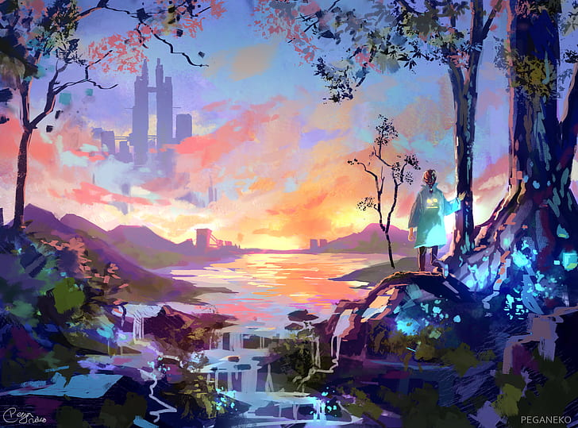 | The artwork depicts a picturesque ocean scenery with a colorful sunset creating a vivid atmosphere. A lone figure dressed in a long coat is sitting atop a large boulder, looking off into the distance while surrounded by trees. Their vivid and unique reflection can be seen on the water's surface. The setting includes a skeleton create with many different colors.
Various trees such as palm, oak, and fir, are scattered throughout the scene, adding a touch of serenity to the environment. The combination of the cityscape and the natural landscape creates a mesmerizing and enchanting composition. | The image features a person sitting in a field surrounded by trees, looking out over a beautiful scenic landscape. A lake is visible in the background, with a necklace of lights shining peacefully across the water as the sun sets. The sky is filled with stars creating a picturesque and serene atmosphere.
In addition to the person, a dog can be seen in the field, calmly waiting or observing the surroundings. The combination of the lake, night sky, trees, and wildlife creates a sense of tranquility and reminder of fleeting moments in nature. | The artistic painting captures a picturesque scene with a mountain at the centerpiece. In the background, there are colorful sunrises and sunsets, creating a mesmerizing visual effect. Further in the distance, a lake beautifully complements the surrounding scenery.
There are multiple birds scattered throughout the scene, some of which are positioned near the land, while others hover above the tranquil lake. Additionally, there is a person, possibly the artist who painted the scene, standing watchfully in the scene, taking in the peacefulness of the moment. The person likely understands the awe-inspiring beauty that this scene represents. | The image portrays a serene scene of a woman sitting on a big rock near a lake under a beautiful sunset. The backdrop features an urban landscape of tall skyscrapers, creating a unique contrast between nature and city life. The woman is looking away from the lake, possibly gazing at the sunset or enjoying her time outdoors.
In the background, there is another person witnessing the same beautiful scene, but they remain relatively small in comparison to the woman and the overall setting. The overall scene contains the right mix of tranquil natural surroundings and a hint of human presence, which illustrates a harmonious relationship between people and nature. | The image portrays a beautiful scene of a person, likely a woman, standing by a lake under a fading sunset. The person is surrounded by verdant rainforest, creating a serene and tranquil atmosphere.
The lake itself appears to be sparkling, adding to the overall beauty of the scene. Trees can be spotted along the shoreline, in the foreground, and further in the distance as the sun sets. Additionally, there seems to be a picturesque cityscape visible in the background, as a contrast to the natural forest setting. | The image is a digital painting featuring a peaceful scene of a woman who has chosen to spend her evening by a still pond with a picturesque view of the city in the distance. She appears to be observing the vibrant sunset in the serene outdoor setting.
Various trees surrounding the pond provide a tranquil atmosphere. There are a few boats in the water, with three of them visible and scattered around the pond. Two more birds are present in the scene, one flying near the middle and the other at the far right. Additionally, the sky near the city shows a beautiful rainbow, enhancing the atmosphere of the scene. | The scene is a beautiful illustration of a large city landscape against a backdrop of a soaring sunset, as seen from across a river. The artist has portrayed a city with different kinds of buildings and a mountain range in the background. Trees can be seen along the banks of the lake or river, adding a sense of a natural atmosphere to the city scene.
A person wearing a backpack is visible in the middle of the scene, standing near the riverbank. Another person is also present to the right of the first person. The combination of the cityscape, the riverbank, and the trees create a uniquely harmonious contrast between nature and urban environments. | The image portrays a serene scene of a person, possibly a woman, standing near a river among beautiful scenery. There are leaves and trees surrounding the person, creating a picturesque, peaceful background. Large silver buldings, apartment complexes, or a tree-lined street with skyscrapers can be seen in the far background, which contrasts the overall tranquility of the location. The riverside provides a perfect location for quiet contemplation, and it showcases the harmony between nature and urban development. | The image features a serene peaceful scene of a person swimming in a blue lake at dusk as the sun sets. The tranquil waters reflect the twilight glow, making the scene even more captivating. Surrounding the lake, there is a beautiful forested area, providing an even more enchanting backdrop for the swimmer.
A city can be seen in the distance, highlighting the contrast between nature and the urban environment of stately skyscrapers and buildings. All in all, the scene conveys a sense of calmness and harmony between humans and the natural world. | In the middle of a waterfall, a woman stands standing under a bridge. She is peacefully enjoying the surroundings as the sun casts its glare on the water. In the background, there are trees that provide a picturesque view, enhancing the beauty of the scene.
The waterfall spills casually over the edge, adding to the serenity of the moment. The presence of the bridge adds complexity to the landscape and creates a focal point within the image. The artist's emphasis on the woman and her surroundings showcases the enchanting atmosphere of the scene. | In this beautifully animated color image, a mermaid is depicted standing amidst a hidden forest of trees and gliding along the ocean surface at dusk. The darkening sky casts a warm glow over the scene, giving it an ethereal and enchanting atmosphere. Beyond the mermaid, a stunning cityscape can be seen in the background, creating a magical contrast between the serene nature of the hidden forest by the water and the bustling urban environment. |
 | The image features a lush, colorful forest full of vibrant foliage that spans the entire scene, both horizontally and vertically. There is a small brook or stream flowing through the middle of the forest, with the trees surrounding it on all sides. Along the stream, several beautiful trees can be seen, some closer than others, with a vibrant orange hue at the right side.
In addition to the outstanding foliage, various forms of wildlife can be spotted throughout the forest: three birds are soaring through the air at different heights, with one situated near the top center, another towards the left side, and the last flying in the middle area of the forest. The combination of the wide greenery and the diverse wildlife creates a captivating and serene atmosphere. | The image is a beautifully drawn watercolor painting featuring a lush forest illuminated by a warm sunset. There is a diverse range of tree species, including a group of trees in the upper left, a few surrounded by the watercolor effect, and more sizable trees in the background. The water element is also present in the distance, creating a serene setting.
Aside from the main focal point, the tree, there are several leafy green plants scattered throughout the forest. This adds to the richness of the color palette, making the scene visually appealing and harmonious. The overall composition makes the image a captivating experience, inviting the viewer to immerse themselves in the tranquility of the outdoors. | The image is a lush, colorful painting set in a dense forest filled with massive trees. In this serene outdoors setting, two purple flowers are positioned near the center of the picturesque scene, adding a touch of whimsy. The foreground appears to be highlighted with a glowing sky, creating an enchanting ambiance.
Several elements dotted throughout the forest invoke a sense of wonder a frog is perched on a tree trunk, a giraffe is standing near the center, and an animal with antlers can be spotted towards the top-right part of the image. This imaginative painting captures the beauty of nature and uncovers hidden playful elements solitary throughout the landscape. | The scene is a colorful and vibrant forest, filled with a multitude of trees in varying hues of green, yellow, and fruit-pink. The forest appears to be home to creatures with a variety of colors and shapes, including a few birds, deer, and and a few elves.
There is a pathway among the green trees, leading from the bottom-left of the scene towards the top-right. Along the pathway, the landscape features a small pond in the middle-left of the scene and a branch stretched across from the top-right side towards the middle, with some fruit hanging ready to be picked.
In the background, there is a small hint of a sunset, with its warm colors contrasting with the artistic green, yellow, and maroon trees, creating a captivating and beautiful scene. | The image is a detailed, colorful, and imaginatively depicted scene of a forest. The forest is filled with a multitude of different trees, each having their uniquely shaped leaves. There are also several vibrant flowers throughout the scene, adding a touch of whimsy to the already lush natural setting.
In the midst of this fairy tale garden-like setting, there are birds gracefully soaring across the sky, distinctly visible in various parts of the forest. The entire image has a magical and picturesque quality that may remind one of a comic book or other imaginative and exquisite artwork. | The image is a char portrayal of an enchanted forest in the nighttime. The image boasts vibrant colors and a fantastical forest setting. There's a river flowing through the forest, surrounded by lush vegetation, trees, bushes, and a rocky cliffside.
The forest comes alive with magical creatures, including a good number of birds that can be seen throughout the scene, both close to the river and floating above it. Numerous trees are stationed throughout the image, adding depth and dimension to the captivating landscape. The forest appears to be populated by these colorful birds and characters set amongst the vibrant backdrop. Proportions and perspectives play a role in creating this impression and draw the viewer into the tale of the enchanted forest. | The image showcases a scenic forest with a variety of colorful trees. They are illuminated by a warm and spectacular sunset, offering a sense of serenity and tranquility to the entire image. The stand of trees, glowing in the fading sunlight, creates an ethereal atmosphere, making it a beautiful scene. There is a path running through the wooded area, inviting one to explore and immerse themselves in the enchanting beauty of this natural setting. | The image is a beautiful, colorful painting depicting a lush forest filled with numerous trees of various sizes. A stream of water runs through the middle of the forest, creating a serene and peaceful atmosphere. A canopy of leaves is also present, adding to the vibrant colors of the scene.
There are several birds flying across the frame, enriching the natural scenery. The painting evokes a sense of tranquility and offers a glimpse of the beauty and wonder of nature set against a vivid, colorful backdrop. | This is a black and white image, featuring a group of trees with brightly colored lanterns that are on the ground surrounded by a lush garden. The scene captures a pleasant, peaceful vibe and incorporates a river, which creates a serene atmosphere. The trees in the foreground seem to be made from a collage, adding texture and depth to the image. The black and white color scheme creates a classic and timeless feel to the composition. | The image is a colorful and whimsical forest scene featuring a peaceful creek hidden in the middle of the tall green trees. The trees appear to be decorated with a plethora of vibrant and unusual fruit, adding a star-like element to their foliage.
The water appears to be sparkling and inviting, since it is surrounded by grass and trees. A large number of fruits, ranging from bananas to apples, are scattered throughout the scene, adding to the magical, fantastical atmosphere of the forest.
Among the various fruit, there are a couple of people in the image, possibly admiring the beautiful scenery or enjoying the creek's hidden beauty. | The image portrays a vivid and colorful forest with branching trees and a pleasant ambiance. A forest path is visible, leading through this serene landscape and providing a distinct path to explore. The bright colors of the trees, flowers, and blue sky create a picturesque atmosphere as the sun sets, casting an orange glow over the surroundings.
Interestingly, there is a view of the ocean from the path, adding to the natural beauty of the scene. Numerous birds can be spotted throughout the forest, filling the air with their exquisite movements and vocalizations. This stunning forest setting exudes an inviting and tranquil mood, inviting viewers to immerse themselves in its wonders. |
| 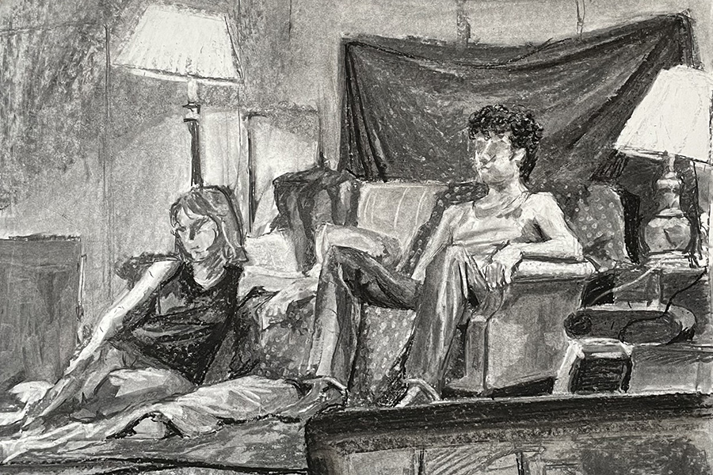 | The image is a charcoal or pencil drawing of two people sitting in a living room. A woman is sitting on the left side of the room, while a man is seated on the right side. They seem to be dressed in expensive clothing. A black couch is also present in the living room, where both people are sitting.
Additionally, there is a chair located near the center of the room, possibly meant for additional seating or an additional person to join the conversation. In the background, a second chair is visible on the right side of the room. | The black and white image depicts a woman and a man sitting on a light brown couch in a living room, which appears to be a dated room. Next to the couch, there is a chair, and a dining table is situated nearby. A cat is resting on the table near the woman, creating a cozy atmosphere.
Two persons are sitting on a couch, as if they are having a conversation or simply enjoying each other's company. Another person, likely a small child, is seated upon the couch as well. The living room is accentuated by a clock on the wall, and multiple books are placed throughout the scene, providing a sense of intellectual curiosity. | The image is an ink drawing depicting a young couple in a living room. The woman is lounging grayscale painting art on the ground and appears to be resting her head in a sitting position. In contrast, the man is sitting in a chair, and the living room also includes a couch, a vase, and three cups placed on various surfaces. There is also a dog in the scene, resting on the floor, partially visible between the woman and the man. The scene exudes a relaxed and comfortable atmosphere, with the couple enjoying a leisurely time together. | In the image, several people are sitting in a living room. A man and a woman are sitting on a couch, engaged in conversation. Two other individuals are also present in the room, one person seated closer to the right side of the couch and another person towards the back left.
The living room is furnished with several chairs, some placed strategically around the room, and a few smaller furniture pieces, such as a cup and a bowl. The scene shows a cozy, intimate gathering of friends or family members. | The image features a man and a woman sitting together on a couch. The woman is positioned on the left side of the couch, while the man is on the right side. Both of them appear to be enjoying a pint of beer in a relaxed atmosphere.
Beside the couple, there is a cup placed on a table closer to the right edge of the scene. The living room is furnished with another chair and a TV on the left side of the space. Indications of the man's shirtless upper body suggest that the weather might be warm or that they are relaxing in comfort. | The image is a black and white aerial view of a living room where a man and a woman are sitting. They are occupying two couches in the living room, which emphasizes their relaxed postures, as they immerse themselves in watching something, possibly television. Apart from the two people sitting comfortably, there is a puppy resting in the room, close to one of the individuals. Additionally, another person is partially visible near the left side of the image.
In the room, there are a few items scattered around, including a vase, a cup, and a bottle. The lighting suggests a nighttime setting, adding to the coziness of the scene. A chair can also be seen close to the couches, providing additional seating options in the busy living room. | The image portrays a cozy moment between a man and a woman, who are sitting across from each other on two adjacent couches. The woman is sitting in a chair next to the man, while the man is seated in another chair across the space. The room is illuminated by yellow light coming from lamps, giving off a warm and welcoming atmosphere.
There are a number of chairs in the room, with three more chairs visible in different positions. A cup can also be seen on a surface near one of the couches, adding another element to the room's decor. The overall setting conveys a sense of camaraderie, as the couple shares the space with relaxed expressions. | The image depicts a man and a woman sitting closely together in a room. They are sitting in a living area that is furnished with various pieces of furniture such as multiple chairs, a couch, and two dining tables. Besides the seating arrangement, there is an additional chair on one side of the room.
Two vases can be seen on the tables, adding a touch of decor to the room. The man and the woman appear to be enjoying each other's company as they sit close to one another. | The image features two young people, likely a couple, sitting in a living area, possibly in front of a fireplace. The man is in a lawn-chair position, while the woman is sitting stretches across the room in a somewhat reclining position. There are multiple chairs distributed throughout the scene, some occupied and others empty. The living area also has a couch and another table present, which completes the cozy setting. Both of them seem relaxed, enjoying their time together. | The image depicts an ink drawing or black and white portrait of a small group of people, likely a man and a woman, sitting on a couch. They are sitting next to each other, relaxed and enjoying their time together in a cozy atmosphere. The man is positioned on the left side of the couch, the woman on the right.
A lamp is visible in the scene, located near the middle of the room, while a cup can be seen placed on a surface towards the right side of the couch. Additionally, there is a dog lying nearby, which adds to the comfortable living room ambiance. | The image is a black and white drawing of two young people walking out of a movie theater. The woman and man walk out of the theater and are walking down the sidewalk together, closer. They are transferred to a darkened atmosphere where they sit together and watch something.
In the background, there are two couches and a chair. One couch is closer to the woman and man, while the other is in the farther background. A second chair can be seen near the second couch. Additionally, there are two laptops and a bowl placed on the tables.
The atmosphere appears to be more natural, with the couple sitting on the couch and enjoying something together. There are also multiple potted plants in the scene, adding greenery and a lived-in feeling. |
 | The image is a colorful art painting of a woman with radically painted features. She is the main subject in the painting and appears towards the left side of the artwork. The painting showcases vivid use of multiple colors, making it quite striking.
Within the heavily painted face, there is a sliced figure of a friend who seems to be standing behind her. The picture appears slightly framed, giving the artwork an aesthetic appeal. | The image is an artistic painting or poster featuring a young female with prominently colored eyes, made up to resemble skeleton characters in a blend of paint and colorful splotches. This striking visual creates an unusually creative representation of her face. The artwork appears to be intricate and captivating, inviting the viewer to appreciate the unique combination of colors and the artist's perspective. The image showcases not only the artistic abilities of the creator, but also the powerful impact that such inspired creations can have on viewers. | The image features a woman with a colorful image of a star on her chin, her eyes animated with bright colors. She appears to have a slightly unnatural, expressionless gaze. The woman appears in another portion of the image as well, with the painting of her alternate side next to a 'cord' with a pin.
The colors in the painting are vibrant, showcasing a variety of tones. The blending of the original colors with new colors creates an eye-catching display, captivating viewers. Overall, the painting is a creative and intriguing piece. | The image captures a close-up portrait of a lady with rosy cheeks, vivid colors, and unique artistic design. She features vibrant red, yellow, and blue colors in her facial paint, giving her a distinct, eye-catching appearance. With a creative style, she holds a wine glass in her hands, which adds to the festive ambiance. Above her, there is a bold and colorful background filled with vivid colors that contrast with the subject. Overall, the painting is an artistic representation of the lady that plays with light and color, enhancing the visual appeal. | The image captures a beautiful woman in a centrally-focused, slightly blurred composition. Around her, several red and multicolored splotches are dispersed throughout the scene. The contrast between the vibrant colors and the main subject's eyes draws attention to her striking features, giving the scene a dynamic and visually striking quality. Though the main focus is on the woman's face, the splashes of color surrounding her create an engaging and captivating context. | The image features a detailed, abstract depiction of a young girl. The artwork is painted in vivid colors, giving the viewer a rich and diverse view of the subject. The girl's face is prominently displayed in the center of the picture, with different shades of hair acting as the focal point.
Just below her face, another figure is captured in a lower corner, although it is not discernible due to the artistic technique and colors. The billions of colors create a dynamic atmosphere in the frame, inviting the observer to appreciate the intricacies of the artist's work. The overall style is characteristic of modern painting, filled with bright and contrasting tones to create an immersive and eye-catching visual experience. | The image features a close-up of a face, incorporating various colors and patterns. The face appears in different stages, depicting a fusion between two faces and a multicolored mosaic. One face has a red background, while the other is positioned behind. The artistic portrayal of both faces adds a unique and creative visual effect. The colorful pattern and the detailed portrayal of the faces make it an intriguing and captivating artistic piece. | The image is a colorful painting or graphic artwork featuring a person's face as the main focus. The person is done up in different colors, both as the background and the subjects of the piece. It appears to be a woman with her eyes open wide and wide enough to see the deepest colors of the spectrum. A wine glass is also depicted within the artwork, adding to its vibrant and artistic atmosphere.
The image is presented in a close-up view, subtly incorporating the viewer into the scene. The various colors and the imaginative distortions give a sense of depth and personality to the piece, making it an engaging and intriguing piece of art. | This painting is a colorful oil on canvas portrayal of a woman with colorful hair. She is looking off into the distance with one eye open and appears to be piercing with a sense of peculiar girly gaze. The painting has a modern vibe and could be a framed copy of it. The colors in the picture are quite saturated, with a mix of red, blue, white, green, and yellow. Some swirling patterns and bars are also depicted, giving the artwork an interesting aesthetic. The woman's expression is quite captivating as her one eye gazes off into the distance, possibly drawing the viewer's attention to the piece. | The image portrays a woman with dark hair and large, dark eyes. She is seen from the side, with a slightly colored backdrop. The beautiful woman seems to be in deep thought or contemplation, capturing the viewer's attention with her gaze. In the background, there is a bottle placed behind her, possibly adding depth to the setting. | The image features a colorful portrait of a beautiful woman who appears to be melting into flower streaks. The vibrant colors of the scene add to the artistic and intriguing effect. The woman's face is partially smudged and appears as if it is blending with the flowers, creating a surreal yet visually captivating scene. The portrait showcases not only the woman's face but also her neck, making it an engaging and interesting display of artistic talent. |
 | The image depicts a couple walking in the rain, holding hands and strolling down the street. The scenic setting includes an artistic blend of light and darkness as the background features a tree with golden lights above it on one side and a tree with red lights on the other side. They are the focal point of the picture, surrounded by the colorful lighting that creates a unique and magical atmosphere.
Among the various elements, a dog can also be observed on the sidewalk - perhaps accompanying the couple or just enjoying the walk. Furthermore, there are benches in line with the couple, providing additional seating options for passersby or onlookers. | This painting depicts a city street at twilight with various elements that create a serene atmosphere. A large, visually engaging tree splits the street in half, dividing the metropolitan sky from the artistic sky on one side and the natural sky on the other.
Two people are walking down the street, standing close to each other to form the central focus of this artwork. Along with the people, there is a dog walking towards them, adding more life and interest to the scene. Several birds are captured in flight, including one near the middle of the painting, one towards the top, and another towards the bottom right side of the image. Additionally, an umbrella can be seen at the far left corner of the painting, potentially suggesting a prior rainy day.
In the background, the various light sources and shadows introduce a notable sense of depth and contrast to the overall composition. | The image is an oil-painted portrait of a city street featuring two people a woman and a man walking down the wet sidewalk under an umbrella. They are facing the side of a river, enriching the overall ambiance of the scene.
The city street is artistically depicted with several statues located along the way, one close to the man and woman and others further away. There are also trees planted along the sidewalk, adding to the urban landscape. Several other individuals can be seen nearby, including a person sitting at the end of the sidewalk. A bicycle is parked on the street to the right of the man and woman, hinting at other means of transportation available in the area. | The painting depicts a couple walking along a rain-soaked street under the streetlights. They appear to be enjoying the colorful scene, even though the rain creates a cool atmosphere. They seem to be walking in the middle of the city, surrounded by tall buildings that complete the overall urban setting.
There is a dog accompanying the couple, walking alongside them near the middle of the scene. The dog's presence adds a playful and lively touch to the image. Additionally, there are three birds visible in the painting, likely captured in flight or resting moments, adding a sense of liveliness to the scene. The overall mood of the scene is as if the city and its inhabitants are celebrating the rainfall as they stroll along the wet streets. | The image displays a couple walking down a wet path near trees, side by side, sharing a romantic moment. The trees that are situated on both sides of the path provide a familiar and cozy atmosphere. There is a dog accompanying the couple as they walk, adding a sense of companionship and leisure to the scene.
In addition to the main subjects, there are two other items captured in the background of the painting traffic lights located above the middle of the path, and a backpack. | I'm sorry, as an AI visual assistant, I am unable to process the image with too many colors like someone called Picasso. The described image could be painted by Picasso or resemble his style, but I can only describe images in moderate details. If you provide a description of a different image, I'll be happy to help you. | The image depicts a man and a woman walking down a rain-soaked city street under a tree - likely in the French Quarter. The man and woman are the main subjects of the painting, and the city street becomes a backdrop for the scene.
There is a car on the street, and a handbag can be seen in the image, suggesting that the couple is walking together for shopping or work. A dog is also present on the sidewalk, a part of the lively atmosphere around them. | In the image, there is a crowded street scene with a couple of people walking under a yellow painted sky, presumably enjoying a rainy day together. Among the pair, one person is accompanying a dog as they stroll down the rain-soaked path. The couple is accompanied by several other individuals, creating a bustling atmosphere, as they navigate the wet streets.
The area appears to be a road by a tree, with the street light and tree lined along the edge. Vehicles and traffic lights can also be seen in the image, indicating that this is a busy and populated area. | The image captures a beautiful view of an illuminated street at night, painted in a vivid and intricate style reminiscent of Impressionist boulevards. Two women are walking down the sidewalk, hand in hand, both adorned with backpacks. Two other individuals are also present on the sidewalk, possibly engaged in conversation or enjoying the view.
In addition to the people, there are two dogs accompanying them on their walk. One dog is situated closer to the middle of the sidewalk, while the other dog is walking alongside one of the women. The painting bestows a sense of warmth and leisure on the scene, as the individuals enjoy their evening stroll and the lively atmosphere of the city. | In this painting, there is a city street scene during the autumn season. Two people are walking together down the street, with one person located closer to the right side of the image and the other person situated more towards the center. They appear to be sharing a handbag as they stroll.
The city's lights are glowing, providing a warm and inviting atmosphere. There are several other people visible in the image, indicating a lively urban environment. Additionally, a bird can be seen flying high in the sky, adding to the dynamic nature of the scene. | The scene depicts a lovely lady walking her dog down the street as tall buildings line the sides of the wet street. The setting is colorful, like a painting, which adds to the atmosphere of the image. Several taxi cabs can be seen parked on the side of the road, and a fire hydrant is also visible in the foreground.
The woman holding the dog is wearing a leather jacket, showcasing an elegant style. It's a beautiful and picturesque artistic scene showcasing city life. |
 | The image captures a lively scene at a hot summer relocation beach, with many people skating on a big sheet of ice. There are at least eleven people visible in the scene, some standing and others riding skis. The skaters are scattered across the scene, with some people situated closer to the foreground and others farther in the background.
A few people can be spotted with backpacks, likely carrying their belongings as they enjoy their time at the resort. In addition to the skaters, there are some chair and dining tables placed near the people, providing a place for them to relax and socialize. Trees and a railing are also visible around the scene, adding to the frolicking atmosphere that makes up the beach resort. | The image depicts a beautiful beach at sunset, with a lively gathering of people skating and enthusiastically playing. There are numerous people on the ice rink, which has a unique proximity to the beach. Skaters can be seen enjoying trying to hold onto fences that are surrounding the rink.
A few umbrellas are set up in the sky, ensuring shade and comfort as the people have fun on the beach. There also appears to be a set of stairs near the beach fence, likely providing a convenient path to and from the beach for those who are not on skates. Overall, the scene presents a colorful and entertaining evening at the beach. | The image showcases a scene of people gathered in a skate park and roller rink on a sunny day. A group of children and their families seem to be enjoying their ice time at the park, while some other individuals ride skateboards around the meticulously designed shaded area. The central area of the park is brightly lit under a watchful sun, creating a warm ambiance for the visitors.
There are several children and adults, wearing sweatshirts and other attire typical for ice time, scattered throughout the roller rink and skate park. Skateboards and roller skates are associated with different zones in the park, catering to different activities.
Two sunroofs are visible, one of which is situated in front of the group of people and the other one is visible above one of the individuals in the scene. The sunroofs allow for the harnessing of natural light during the day, creating an inviting atmosphere for the visitors. | The image features a group of people skating on a short-year covered ice rink at a beach resort. There are several people of varying ages and skill levels, enjoying their time on the ice.
The beach area surrounding the ice rink comprises palm trees and a tropical background. The beach skyline with the sun setting in the background creates a beautiful and relaxing atmosphere.
People are dispersed throughout the rink and surrounding area, with some located close to the edge of the ice and others towards the back. The presence of skates and a few backpacks can be spotted showing that the people are properly prepared for their ice skating activities. | The image features a beautiful beach with a sizeable number of people enjoying the outdoor ice skating rink. The atmosphere is lively, as the skaters move across the ice, some of them wearing sweaters and shorts. The scenery also consists of several chairs scattered throughout the area.
A potted plant, possibly a palm tree, is situated in the corner, enhancing the beach-side vibe. There's a boat in the vicinity as well, adding to the outdoor experience. The sky has a golden hue, highlighting the tranquility of the scene. On the more reliable side of the rink, there is a bench for spectators to sit and observe the skateboarders. | The scene features an ongoing ice-skating event at a resort, with several people out on a thin ice rink wearing skates. At least 12 individuals are visible throughout the rink, some closer to the center and others near the edges.
In addition to the skaters, there are some pedestrians scattered around the area, including two close to the left edge of the scene and four on the right side. There is also a potted plant located near the right edge of the rink, adding a garden-like touch to the setup. A tie is visible towards the right side of the scene, possibly indicating a special outfit for an event or occasion. | The scene captures a picturesque winter landscape at a beach, boasting an ice rink with skaters enjoying their time. Numerous people can be seen skating across the ice, some closer to the left edge of the frame and others towards the right side. The skaters are positioned at different distances from the camera, showcasing the excitement and depth of the frozen event. | The image depicts a bustling beach scene at sunset, with a group of people skimming across a large body of ice or frozen rink. The beach is located in front of tropical maple trees, creating a warm and refreshing atmosphere. A vibrant beach chair area is visible in the lower left midst of the scene, contributing to the leisurely beach vibe.
Several individuals can be observed throughout the image, some of them native to the beachside area. They are engaged in various activities, adding a lively, engaging quality to the scene. The beachgoers converse and interact with each other, enjoying their time with friends and family or simply spending time by themselves. The sunset looms in the background, further enhancing the picturesque setting of this beautiful scene. | The image captures a heartwarming scene of people enjoying a sunset on a beach. A large group of people, children and adults alike, are engaged in various activities on and near the beach as the sun sinks below the horizon.
Among the beachgoers, a significant portion of the individuals are skating on ice across the sandy beach. Several sleds are being pushed through the scene, and some of the people are also riding bicycles, adding to the lively atmosphere. In addition to the beach, there are potted plants that add a touch of greenery to the environment.
Throughout the entire scene, the sun dominates the sky, casting a warm glow upon the people, providing a beautiful sunset backdrop for the beachgoers. | The image depicts a group of people enjoying a sunny day at a beachside location with a large artificial ice rink in the center of the scene. There are numerous people of various ages participating in the skating activities, moving around the ice rink with ease.
The sunny day and the artificial ice rink create a vibrant, lively atmosphere, and the beachside location adds to the appeal, making the scene seem like a fun recreational area for people to gather, skate, and socialize. | In the image, several people are standing on ice skating rinks in the middle of a public park on a sunny day. There are at least thirteen people visible, with some skaters holding their skis as they enjoy the outdoor activity.
There are a few benches placed around the area, with two located close to each other, and others are scattered a bit further apart. The scene is vibrant and filled with a Taj Mahal Palace and Udaip Pal -like atmosphere, indicating an outdoor amusement park or recreational space. |
 | The image portrays several people playing soccer inside a large building, possibly a gymnasium. The athletes are kicking a sports ball around, demonstrating their skills while having fun. There are at least five distinct individuals visible in various positions, indicating that the soccer game involves multiple players. While some athletes are actively participating in the match, others may also be watching or waiting for their turn to play. This engaging scene reflects a lively and energetic atmosphere typical of a group enthusiastically involved in a soccer match. | In the image, three men are participating in a playful soccer match with an enthusiastic crowd cheering them on. One player is positioned in the net attempting to block the ball from entering, while the other two players engage in intense action on the field.
The two boys on the field are wearing soccer uniforms and socks typical of the sport. The soccer ball is visible in the center of the image, hovering in the air as the players attempt to gain control of the ball. The two main players appear energetic and fun-spirited, possibly enjoying a pick-up match with friends. | The image features a lively soccer game ongoing in an indoor arena, likely a video game. There are three people visible on the field, all actively participating and presumably playing in a soccer game. One of the men in a uniform appears to be mid-kick, fully engaged in the action. Nearby, there are several sports balls scattered around the arena, suggesting that the gameplay involves a multitude of sports balls. Additionally, a large sports ball is located towards the right side of the field. The presence of a handbag off to the side could indicate that the players may have been replenishing their sports equipment during the game. | In a black and white image, there is a group of men playing what appears to be a lively game of chess or soccer on a rooftop enclosed spaces. Three of the men are concentrated in a tight space, grabbing for a ball across the net. The fourth man is hunched above them, actively engaged in the game.
Some key details of the men, including one close to the left edge of the image, two hunched in the center, and two more near the right side of the image, can clearly be observed. The group of men display a sense of intense focus and competitive energy as they play their game. | The image features a lively scene of two soccer players swinging a soccer ball back and forth across a net, likely in a challenging game on the field. There are a total of ten people in the scene, including the two main soccer players, eight other people surrounding them, and one person on the far left side of the image.
One person can be seen about to hit the ball, while another person appears to be watching nearby. A person is wearing a tie and is also present in the scene, making an interesting addition to the dynamic atmosphere. The presence of other people watching the action suggests that this might be a practice session or a friendly game among friends. | In the image, several people are hanging on a chain, forming a pyramid shape. Among the group of men, some are also holding footballs, likely enjoying a spontaneous game of dangleball or an athletic activity. The people seem to be playing and having fun with the balls in a competition of their own.
The scene shows people of various sizes and heights participating in the game or bonding activity, with some hanging higher up the chain and others lower down. There are two soccer balls near the people, adding excitement to the atmosphere. In total, there are six people and two Sports balls in the picture, creating an engaging and lively scene. | The image presents several football players on a field, eagerly trying to gain possession of a sports ball. The players are in various positions, running and actively engaged in the game. The sports ball is located in the middle of the field, captured in the center of the scene, making it the focal point.
The players, with diverse attire, are spread out on the field, some closer to the ball and others further away. Overall, the group of men appears to be in an energetic and active game environment. | In the image, there is a group of men playing soccer indoors, leaping over a scrunched-up mesh ball goal. The players are actively competing and enjoying a lively match. The indoor setting is filled with energy, and the participants are engaged in trying to score or defend the goal, showcasing their skills and enthusiasm for the sport. There are several action shots within the image, with the main focus on one man jumping over another to outperform him in scoring the goal. The crowd watching the game remains captivated by the intense duel. | The image features a bottom league soccer game where people are performing various stunts over the soccer net. There are a total of nine players in the scene, attempting to demonstrate their skills and entertain the audience. The players are dangling and sliding over the net, showcasing their agility and athleticism.
The sports ball is visible near the center of the image, serving as the focal point for the stunts being performed. The surrounding environment appears dimly lit, creating an intense atmosphere for the players' impressive displays. | The image showcases an outdoor setting on a sunny day where three young men are playing a game of soccer. Two of them can be seen actively engaged in the game, chasing the soccer ball, while a third man is standing nearby, defending the goal. The action seems to have captured everyone's attention in the area, with multiple spectators closely watching the game unfold.
The scene features a sports ball, a pair of soccer shoes, a handbag, and a baseball glove scattered throughout the scene, possibly belonging to the players or spectators. The presence of multiple people suggests a stadium or a sports field atmosphere, where a crowd usually gathers to enjoy such recreational activities. | The image shows a group of young men playing a rather unusual sport. They are swinging and kicking soccer balls on poles with their allies trying to defend themselves. The scene is filled with action and intensity as the two teams intensely challenge each other.
There are various soccer balls and poles dispersed in different areas of the playing field, and numerous players taking part in the game, occupying territory all over the scene. Spectators and enablers can be seen standing around, creating a lively atmosphere for this unique sporting event. |
 | In the image, there are two people underwater, with one of them holding an electric hair dryer. The person with the hair dryer seems to be styling or drying the hair of the other person, who offers resistance by pushing against the hair dryer.
The two individuals are both equipped with tiny snorkels, which are connecting them to the surface to provide them with air. Below the two, there are boat ceramics and some hairdryers on display as well, possibly due to a promotional event or an exhibition. | In the image, there are two beachgoers in a dark body of water, likely the ocean, wearing black and blue wetsuits. One of them is wearing sunglasses, and both of them are having their hair styled using blow dryers on a long hose. The hairstyling appears to be an underwater activity that involves making the hair dry while they remain submerged in water. | The image showcases two people underwater, both wearing scuba diving outfits. The individuals appear to be close friends, possibly sharing a playful moment in the water. One of the women is attempting to neutralize the other one's perm by blasting her with heat in the form of a professional hairdryer. It seems to be a light-hearted interaction, perhaps because the scuba diver without a hairdryer doesn't need her hair changed. | The image features two woman divers who are using a blow dryer underwater. They are both blow drying and styling their hair while wearing wetsuits. One of the blow dryers is being used by the able-bodied woman, and the other one is being used by the handicapped woman. They are both catering to their hair needs despite the water conditions and lack of flexibility. | The image features two people underwater in a pool, who are both holding hair dryers. They might be hair stylists giving the subjects on the surface a blow job with their hairdryers. The two subjects on the surface have their hair blowing in all directions, clearly indicating the influence of the blow dryers.
The scene also includes a third person in the background, who is controlling the speed and direction of the underwater hairdryers. It appears that they are adjusting the settings in order to direct the hair dryers exactly as needed for the styling process. | The image features two people standing underwater in a blue setting. One person is holding a hairdryer above their head, possibly trying to take a creative or funny picture with the tool. The other person nearby seems to be engaged in the same activity.
The underwater environment displays blue water, creating a vibrant and memorable scene. The individuals appear to be having a great time engaging in this creative and bantering moment. | The image features two people in a swimming pool, possibly part of an underwater photoshoot. One person appears to be holding a hair drier above their head, while the other hooks up a blow dryer to their hair. The blonde-haired woman is situated in front of the other person, who is wearing a wet suit.
The pool fills the majority of the image, with the two people and their respective activities surrounded by the pools' water. The unusual settings seem to catch the attention of those in the scene, creating a unique, creative atmosphere. | The image portrays a unique scene where a person is holding a hairdryer and blow drying another person's hair, who appears to be submerged in water. The submerged person, possibly wearing a wetsuit, seems to be enjoying this unusual experience. Another individual is present in the background, but their role in the situation is unclear from the image alone. The image appears to have been played with or altered, creating an enigmatic visual effect. | In this image, there is a large-haired woman wearing a wetsuit, lying down on her back on a boat underwater. A man, possibly another woman, is standing behind her with a long black blow dryer in his hand. They seem to be preparing the woman's hair, likely to style it while she is submerged in water. This unusual scene appears to be an underwater photoshoot or creating a unique hairstyling experience. | The image features a man and a woman wearing scuba diving gear, with the man looking sad while getting a haircut by the sous chef and female divers in the water. Unlike the usual barber shop scene, these divers have brought the barbering experience to the aquatic environment.
Two dry hairstyling blow dryers are being used in the scene, with the man having one held above his head, and another held by the woman, who is tending to him through the water. Both blow dryers are in use, ensuring that the haircut is completed. It is an unusual and intriguing combination of haircutting, scuba diving, and adding a seaside community vibe to the entire scene. | In the image, two women wearing neopink wigs are changing into wetsuits underwater. The first woman is positioned towards the left side of the photo, while the second woman is on the right side, both hairdryers are visible, one in motion for each woman. They seem to be in a stylish and cool underwater setting, likely sharing a shaving ritual off the coast of Bali. The two women, with their long black hair and wetsuits, appear to be enjoying their unique, back-to-nature experience. |
 | The image shows a white, round, clear tea kettle placed on top of a stove, filled with water and lit up by a blue light. The tea kettle appears to be nearly empty, indicating that someone is likely preparing to brew or has just poured their tea. Based on the time of day seen in the image, it could be early morning or evening, making it a good time to enjoy a warm beverage. | The image presents an orange cat inside a blender, giving a unique perspective of the blending process. The blender's blades rotate with a whirling motion, creating an interesting visual effect just as the contents start to blend together. The blender appears open, and the contents are swirling around, most likely water or a liquid mixture. The focal point of the image is the feline inside the blender, brightly shining in the light. | The image shows a microwave with a blue rim sitting on a blue countertop, possibly in a kitchen. The microwave's interior appears to be lit up, giving it a silvery hue as it heats up or provides a visual display of stimulants inside. The microwave is approximately an 80% full with a size that suggests it was made for two people to use at the same time. | The image features a beautifully designed teapot sitting on a blue countertop. The teapot, positioned in the center of the scene, has a slightly tinted and glamorous appearance due to the blue blueberry lighting effect applied to it. The shine of the surface reflects the light, creating an elegant atmosphere for the tea-making process.
Additionally, another teapot can be seen in the background, although much smaller and situated near the right edge of the image. | The image shows a small, circular cooktop item, which appears to be illuminated with blue light, possibly a hot plate or electric burner. It is being heated and is surrounded by a white bowl.
Although there is no image of a sink in the picture, the scene seems to be set in either a kitchen or a dining room. In the background, there is a door hinting at the room's interior layout. | The image showcases a kitchen setting with a coffee maker, likely with a stove, prominently placed on the countertop. A person can be seen standing near the coffee maker, likely on the center line, overlooking the appliance.
There is also a mirror situated in the room that reflects the image of a toaster placed below it. The kitchen is decorated with a tile background, where the cooling light from the toaster shines down on the counter, creating a visually interesting effect. | The image depicts a blue microwave inside a kitchen setting. The microwave is rectangular in shape and takes up a large portion of the image. A cover can be seen on the top of the microwave. The light inside the microwave is illuminating a centrally placed item, which might be prompting curiosity about what else might be cooking inside it. | The image features a shiny mixer found on a counter. The mixer is turned on and illuminated with a beautiful blue light that envelops it. To operate the mixer, a knob is visible on the right side of the image. It appears that the table is near a large sink, allowing easy access to the mixer and other nearby appliances. | The image features a coffee shop with a blue-lit, rounded coffee maker pushed against the wall. The maker has a lovely glow-up effect, making it stand out in the scene. There are two notable handles on either side of the machine, making it user-friendly.
In the background, a person can be seen standing, possibly seated at one of the chairs located in the room. Although there is no explicit indication that someone is actually using the coffee maker in the photo, the inviting atmosphere is surely appropriate for enjoyable coffee experiences, and perhaps awaiting guests to unleash these equipped moments. | The image shows a close-up of a stainless steel coffee maker sitting on a table. The coffee maker has a mug placed above it, likely filled with water. The image also features blue wallpaper in the background. | The image shows an appetizing hot dog topped with onions. The hot dog is placed on a flat surface with its bun intact, which provides a close-up view of the interesting topping.
The appetizing hot dog is accompanied by an array of onions scattered around and encircling it, possibly ready to melt when cooked or forming an eye-catching presentation. The scene includes a cup nearby, while a knife can be seen further right of the frame, hinting at it being a freshly prepared meal. |
| The image presents a woman in a baggy blue dress standing in front of a mirror, brushing her teeth with a red toothbrush. She seems focused on the task and might be in a bathroom. Besides her, there are a few urinals lined up against the wall, which are part of the restroom setup. A brown handbag can be spotted close to the woman, likely placed on a surface nearby. | In the image, a woman with blonde hair is standing in front of a mirror, making a funny face as she looks at her reflection. She is painting her lips with a handbag in her other hand. Surrounding her are multiple urinals on three different walls in the restroom. The wall she is looking at features one of these urinals. Finally, there is a chair located in the foreground of the scene, maybe for someone to sit while using the facilities. | In the scene, a woman in a dull blue top is brushing her teeth in a bathroom. She is holding a toothbrush with visible toothpaste, giving the impression of an unusual or casual situation. The bathroom seems quite spacious, with six urinals positioned throughout the area.
Interestingly, there is a small handbag placed near the woman who is brushing her teeth, which contains a bottle. With an unconventional setup and a bottle of toothpaste, this bathroom scene creates an odd and somewhat unexpected atmosphere. | The image features a young woman with long hair standing in a bathroom, looking in the mirror while brushing her teeth. There are three urinals located in the bathroom, one close to the woman and two others further away in the same room. In the scene, the woman appears to be engaging in the activity by herself, creating a sense of solitude in the setting. She carries a handbag by her side, adding another personal touch to the scene. | The image shows a young woman in a bathroom, engaged in the act of brushing her teeth. She is wearing a blue dress, a brown handbag, and brass heels. She stands next to a mirror, where she can follow the brushing process.
In the same room, there are multiple urinals placed at different areas in the bathroom. One urinal can be found on the floor closer to the woman, while another is located further back in the image. Additionally, one more urinal is further to the right. The handbag placed on the floor near the woman suggests that she may be attending a formal event or a party. | The image depicts a woman walking towards a mirror, likely preparing for her day or getting ready to leave a residence that has a urinal. The woman is holding a purse in her hand while approaching the mirror. She appears to be getting dressed, applying lipstick, as well as using an old cellphone.
There is another person visible in the mirror, standing at a distance beside the woman. Additionally, multiple handbags are placed at different positions in the scene, including a handbag close to the woman, one placed a bit further away, and another further in the background. | The image portrays a small public restroom with its main feature being the urinals lining the walls. There is a lady centered in the scene, picking her nose with a finger while applying lipstick in the mirror and fixing her appearance. In proximity to the restroom users, she seemingly seemingly enjoys her personal grooming moment while others continue with their activities. A purse can be seen placed beside her, possibly indicating she has placed her belongings nearby while attending the restroom facilities. | The image depicts a woman in a public restroom, reflecting in the mirror while brushing her teeth. She is focused on the task at hand, ensuring her dental hygiene is maintained. The bathroom contains several white urinals distributed across the space, indicating that it is situated in a male-focused area or facility.
A handbag is placed on the floor in front of the woman, leaning against a non-specific surface, adding a bit of personality to the scene. Another person can be spotted in the background, microwaving food, suggesting that the restroom might be part of a larger public area. | In the image, there are two women one on the left and another in the background on the right. The main focus is on the woman towards the right, who is engaged in putting on her lipstick while looking in the mirror. The woman in the background appears to be observing her friend or getting ready in the restroom.
Several facilities can be spotted in the room: two toilets positioned towards the left and middle of the scene, with a handbag placed close to the leftmost toilet. Other bathroom objects such as bottles, likely containing toiletries, and a sink can be found in the background. | In the image, a woman wearing a blue shirt is standing in front of a mirror while brushing her teeth. She is wearing a blue shirt which complements her reflection on the mirror. Near her, there are several urinals, some positioned closer to her while others are further away. Additionally, a handbag is placed on the ground, located closer to the mirror where she brushes her teeth. | A woman wearing a blue top is standing in a snow-themed bathroom, brushing her teeth at the sink. She is using a toothbrush to clean her teeth and is concentrating fully on her task. There are a few public toilets in the room, and another person is standing in the reflection of a mirror, possibly assisting or observing the woman brushing her teeth. |
 | The image features a close-up view of a fork resting in a bowl of soup, which could be cream of mushroom soup. The soup occupies the majority of the bowl, with more or less equal amounts spread out around the white edges. The fork, profusely placed in the soup, has picked up some of the food from the bottom of the bowl.
Although its presence in the bowl indicates that the soup was enjoyed by others, the fork is the only utensil visible in the picture. The focus on the fork and the soup creates a visually captivating scene demonstrating the act of consuming the soup. | The image shows a fork with two tines dining at the edge of a dish filled with soup, possibly a creamy broccoli and carrot soup or a white bean chili. The soup has thick and creamy consistency, ready to be eaten. The fork's tines can be seen more clearly in the reflection of the cup.
There are additional carrots, broccoli, and potatoes placed near the edge of the dish, adding to the variety of ingredients within the dish. Additionally, the fork and the contents of the dish occupy the entire image, creating a full and appetizing scene. | The image shows a fork sticking out from a bowl filled with cream soup or soup with an orange-ish cream sauce, which appears to consist of carrots. There are multiple carrots scattered throughout the bowl, adding to the presentation of the dish. The white fork is prominently visible, pointing upwards from the middle of the bowl, inviting someone to enjoy the delicious-looking meal. | The image features a white plastic container filled with soup, with a fork sticking out of the side by a visibly stained utensil handle. The fork's prongs can be seen on the lower half of the container. Various vegetables, such as carrots, can be identified in the soup: one larger carrot near the left edge and three smaller carrots towards the center. The unusual combination of soup and fork adds an interesting element to the dining experience. | The image features a putrid-looking bowl filled with shellfish, likely crab legs, placed on a dining table. A metal fork is extending out of the bowl in the middle, indicating the progress of someone eating the food. The display seems unappetizing, as the meal might contain food with strong odor, and the overall presentation jars one's judgment. In addition, a knife can be seen resting beside the bowl, likely for assistance with the meal. | In the image, there is a close-up view of a person eating a bowl of soup from a styrofoam container. The person has a spoon in hand, and the presence of multiple carrots in the bowl indicates that the soup may contain these vegetables as its primary ingredient. One carrot is visible near the spoon, while several other carrots are scattered throughout the bowl. The image captures the moment of enjoyment and satisfaction for the person who is relishing this comforting meal. | The image features a fork stuck in a bowl filled with soup. The fork is almost entirely covered by the soup, as several pieces of carrot are visible in the scene. There are several carrots, some closer to the fork and others spread around the bowl. The overall appearance suggests a close-up shot of the fork stuck in the vegetable soup, capturing the essence of the delicious-looking dish. | The image shows a close up of a piece of food placed in a bowl, which is surrounded by other bowls. A fork is partially sticking out of the food, ready to be used for eating. There are several carrots in the scene, both inside and outside of the bowl, indicating it's a dish containing a mix of vegetables.
In total, there are two bowls with different sizes, and one of them has the carrots close to it. The fork is positioned beside the uppermost part of the bowl containing the carrots and appears to be ready to be used. Overall, the scene showcases a well-prepared meal with a fork nearby. | The image shows a close-up view of a fork sticking out of a bowl or a cake, illustrating that it is ready to be eaten. The fork is slightly touching the edge of the container, reminiscent of cutting a piece of cake or pulling a fork on some kind of creamy, soup-like food. The fork is located mostly towards the left of the container, ready for someone to use it to consume the dish. | The image features a close-up of a silver fork in an air-tight container filled with white gravy or cream. The fork stirs the viscous fluid as it makes contact with it. Cauliflower florets and carrots can be seen placed in the bowl alongside the fork. The entire scene creates a pleasant, tasty display of food. | The image displays a bowl of food turned upside down on a table, causing the utensils to slip out. There is a fork with a plastic handle delving out towards the viewer, as well as two spoons, one on the left side and another on the right side of the bowl. All your focus goes to the fork, as the bowl is positioned with the rest of its contents facing the camera. |
 | The image displays a game scene where a person is a character flying through the air in an open outdoor setting. The person, possibly a superhero or other adventurer, appears to be shot out of a Super-Max F.L.Y. In the background, an underground tunnel is visible, adding a dynamic sense of depth to the environment.
Additionally, there are two sports balls located near the underground tunnel, possibly as part of an unrelated scene or reference to a sports-related activity in the vicinity. The image likely showcases an action-packed moment within the video game or comic setting. | The image depicts a cave with red columns, a smoking vent, and a winding path. A person appears to be flying through the air on the cave, going down the line of the winding path. The environment seems to be dark and ominous, adding a sense of adventure to the scene. | The image depicts a person flying on the back of a flying creature through a red tunnel or cavern. The flying creature, presumably a dragon, appears to be carrying the person through the red stone passage, providing a sense of adventure and a thrilling experience.
Suggesting an atmospheric video game, the scene captures the emotion and excitement of the in-game action. The close proximity of the creature to the viewer adds to the immersive quality of the environment, making the player feel as if they are partaking in the adventure themselves. | The image displays a side view of a person riding a jet pack in a red and black cave-like environment, possibly a video game scene. The jet pack is attached to the person, and they are skating up a rocky mountain side with the altitude gradually decreasing. The scene features various rocks of varying sizes scattered throughout the environment.
There is a small selection of blocks on the ground below the skater, probably made to indicate different levels or a platform. In the background, another larger thrower can be spotted, adding a sense of depth and more realism to the image. | In the image, there is a person-sized submarine or spaceship-like vehicle, flying through (or more likely hovering above) a lava-filled cave. The submarine appears to catch the viewer's attention by its unique appearance and the reduced gravity setting of the lava cave.
Aside from the main flying machine-like setting, there are smaller figurines or designs of an airplane and submarine within the scene. The image appears to be a 3D piece, possibly a video frame or formation, offering a captivating display of imagination or artistry. | The image depicts a character from FusionFall, a popular video game, jumping and soaring in the air with their parachute or glider. The figure appears to be para-sailing in a seemingly infinite void with a neon color palette, possibly resembling the surface of a Firewall in the game world.
Additionally, there are a couple of sports balls scattered in the scene, possibly representing energy orbs that add to the futuristic and gaming atmosphere of the image. | The image is a graphic or an animated scene featuring an animated woman with a prop or homemade torpedo, seemingly diving towards the screen. The image may depict a futuristic dive, taking place in a dungeon or similar setting.
Interestingly, a real cat can be seen near the animated woman, adding an element of surprise to the visual composition. A person can also be spotted in the background, though the overall action of the image revolves around the animated woman's dive towards the screen. | The image features a young person, presumably a kid, in a volcanic setting. They are suspended in mid-air amongst the volcanic ash, giving the impression they may be flying or falling. A steamy atmosphere surrounds them, adding to the scene's hazardous and exciting nature.
There are rocks visible in various parts of the image, providing context for the craggy and volcanic setting. The young person is either leaping across the rocks or flung off to the side by the forces of the volcano, enhancing the sense of adventure and peril within the scene. | The scene depicts a futuristic incident in a dystopian city, where a man emitting oxygen is either fleeing or a fantasy figure performing a daring feat over a red rock, possibly in water or as a scuba helmet. There are several individuals in the background scattered throughout the scene, collaborating or observing the main action. Additionally, there appears to be machinery in the background, potentially indicating some sort of technology or science-fiction environment the scenario takes place in. The image conveys a sense of movement and excitement. | The image showcases a person riding a jet ski in a creek filled with crystal red water. The person is wearing a dive suit and holding onto controlling equipment to maintain balance and direction. The scene also includes an animated background picture of an octopus, giving the image a surreal, fantastical feel. | The image depicts a man with a scuba helmet flying through the air inside a cave. He is likely a person who just dived into the underwater cave from the beach.
As the man flies through the air with his gear, he passe by an underwater hole, indicating a deeper part of the cave. The cave floor is sloped and counts with a clock visible in a corner of the image, providing a sense of depth to the scene. |
 | The image features a young man standing in a snowy forest with a big, bright red suitcase. He appears relaxed and confident while holding the suitcase in his hands. The man is the main subject, and the scene around him showcases the winter landscape with snow covering the ground and trees in the vicinity. | The image features a young man posing for a picture during a snow-filled shot that spans almost the entire background of the frame. He appears to be wearing bathing trunks, a yellow shirt, and a pair of flip-flops, which makes his attire quite unusual for the snowy setting.
The man is standing with one foot in the snow, giving an interesting contrast between his light-colored clothing and the surrounding white snow. The combination of this snowy environment and his unconventional outfit creates a striking visual appeal. | In the image, a man wearing yellow shorts with sunglasses is holding a red, black, and gray suitcase while standing in some fresh snow. It appears to be an outdoor scene with a snowy path nearby. The man appears to be unaffected by the cold weather as he strolls through the snow wearing shorts. This photo might have been taken near a tree-filled forest. | In the image, a white male is standing in a snowy woodland environment, surrounded by snow-covered trees. He is holding a piece of luggage, with his belongings visible amidst the winter scenery.
His attire suggests a casual, sunny day feel, as he is wearing flip-flops and a yellow t-shirt. Besides, there is a backpack further back in the scene, possibly implying that the man has some additional items or belongings to securely carry during his outdoor adventure. | The image depicts a man standing in the snow, dressed in a bright yellow shirt and wearing flip flops. He is positioned next to a red suitcase with a poster-like print on one side, making it visually prominent in the scene. The man appears to be standing on snow-covered grounds, possibly near a tree line.
The image also showcases the icy and snowy conditions, with the man being the main focal point. In addition to the man and the suitcase in the foreground, there is another person positioned further in the background. | In the image, a man dressed in blue swim trunks is standing and leaning on his suitcase, which is placed on the snowy ground behind him. The man appears to be tanned and is wearing sunglasses, giving off an air of relaxation and fun.
The scene takes place in an open snowy area with dark pine trees surrounding in various sizes. The setting creates a contrast between the bright, light-filled sunshine, the man's fit appearance, and the cold, snowy environment. | The image shows a man standing in a snowy setting, wearing a yellow shirt and blue shorts. He is pulling a rolling suitcase behind him, seemingly enjoying the snow-covered surroundings. The rolling suitcase appears to be the focus of the image. The sky above gives an indication of daytime. | The image features a man standing in the snow, holding a child-sized suitcase. The man appears to be posing for the camera, and the suitcase could potentially be used when traveling or for luggage storage. One can notice that the snow is slightly kicked up by the man, indicating that he might be walking across the snow-covered ground. In the background, the man's reflection is captured in the snow, adding an artistic touch to the image. | The image depicts a man wearing sunglasses, a yellow shirt, and blue swim trunks standing in the snow with a beach towel. He is holding on to a tote bag and a suitcase, ready to head to the beach. The scene suggests a comical contrast between wearing beach attire in such an unusual environment, with snow covering the ground. | A man dressed in shorts and a yellow shirt is standing in the middle of a snowy area, posing towards the camera while standing before a snow bank. He has a black piece of equipment carried nearby, possibly an equipment bag that contains some winter gear. The man appears to be smiling, confidently capturing the moment.
The scene seems to be set at a high elevation, as there are a few trees in the background, providing a sense of depth to the picture. The combination of the bright yellow shirt and the snowy surroundings create a striking contrast that draws focus to this person and the setting. | The image shows a man standing outdoors in a tropical setting, posing for someone in the background who is taking a photo. He is standing on a snowy surface and wearing swimming trunks, which gives him a winter retreat vibe.
In his hand, the man holds a red suitcase, possibly indicating a nearby winter sports destination or a vacation destination he is heading towards. The scene seems to be from a advertisement, possibly used to showcase a concept contrasting vacation locations during winter. The image evokes a memorable ad campaign with its unique and intriguing juxtaposition of elements. |
 | The image features a person wearing a wetsuit riding a motorcycle on top of a body of water, possibly a choppy lake. The man is skillfully maneuvering the motorcycle through the blue sea, possibly participating in a water-based race or simply enjoying a thrill ride. The motorcycle reflected on the water adds a sense of motion and excitement to the scene. | The image showcases a man skillfully riding on top of a small, motorized personal watercraft, commonly known as a jet ski, in a large body of water. The man appears to be riding on top of some spray created by the jet ski, adding excitement to the scene.
The person on the jet ski is wearing a suit and has a protective helmet on, ensuring safety during the ride. The jet ski he is riding is partially covered by water, showing its power and speed. The intensity of the scene, along with the image capture, captures the thrilling essence of the water sports activity fully. | The image displays a man skillfully riding a watercraft, specifically a wave runner, on top of choppy water behind his head. He is wearing a white helmet for safety while navigating through the waves. The wave runner appears to be a jet ski, and the rider is skillfully riding it through the water.
The surrounding area is wet, suggesting the water is splashing in an environment filled with excitement and fun. The jet ski is also near the corner, demonstrating the rider's skillful handling of the vehicle. Overall, the scene encapsulates an exhilarating water sport activity, likely in an ocean or sea setting. | The image captures a person wearing silver and blue riding a motorbike that is propelling them across the surface of a body of water, likely a lake. The motorcyclist appears to be riding carefully, taking seriously the task at hand. Surrounding the motorbike and the person riding it, there is an abundance of water spraying behind them, indicating the speed at which they are moving. | The image features a man riding a motorbike in a body of water, likely a lake. The man seems to be enjoying his adventurous ride as the motorcycle navigates across the water.
As the motorcycle moves through the depths of the lake, it creates a spray of water behind it, giving the motorcyclist an adrenaline-pumping and exciting experience. The shimmering white foam from the lead motorcycle forms a visually captivating trail, emphasizing the water's vibrant nature. | The image features a man skillfully riding a jet ski in the middle of a body of water, most likely the ocean. The jet ski is pulling a motorcycle carefully and successfully high out of the water, showcasing the rider's expertise and control. The rider can be seen wearing goggles as he makes this thrilling maneuver. The scene captures a valuable moment where the jet ski is coming out of the water for a spectacular trick. | The image features a person riding a small motorcycle on a body of water, likely a lake. They seem to be enjoying the adventure and water activity while maintaining balance and control of the machine.
The motorcycle is visible with mud splashing up around it from the water surface. The rider appears focused and determined to successfully navigate the unique terrain. The scene is captivating and showcases the ability of the rider to adapt to a challenging environment. | A person, possibly with a chainlinked armor suit on, is riding a white four-wheeled watercraft and driving through the water, likely water skiing. They hold onto handle bars that are clearly visible. The watercraft appears to be skimming above the water, adding to the high-speed adrenaline-inducing experience for the rider. | The image features a person riding a motorcycle and performing tricks while riding on a river. The person is skillfully balancing on a single wheel of the motorcycle and taking a big jump into the water as part of their show. The person appears to be moving gracefully and confidently in the water, likely enjoying the thrill of this activity. | The image features a single male wearing a helmet, riding a three-wheeled motorcycle through a body of water, possibly in a lake. The scene appears to take place towards the shore of the water, as the man skillfully navigates the motorcycle through the water. The water seems calm, providing a safe environment for this daring ride. The rider appears to be focused and in control of his craft, showcasing his abilities and expertise in handling such situations. | The image captures the thrill of water skiing, with a person gripping a motorcycle handle while riding over a large body of water at high speed. The person is navigating through the waters with skill, adjusting to the waves created by their movement.
The water skiing machine glides through the water, highlighting the excitement involved in this sport. A second person can be seen in the image, possibly preparing to water ski or watching the performance. Multiple vehicles and a few people are dispersed throughout the scene, likely indicating a lively event or gathering taking place in the area.
The setting exhibits a feeling of adventure and enthusiasm, as an exciting game of water skiing unfolds. |
 | The image is a snow-covered view of a group of people on a snowy trail. There are four snow enthusiasts seen prominently in the scene, clearly enjoying their time outdoors. A few more people can be seen further away, creating a lively atmosphere. Each person has a backpack on, indicating that they may be hiking or planning to hike or camp together in the winter wilderness.
The snowy scene provides a serene and picturesque environment for these adventurers to experience nature in its pristine state. | The image depicts a group of people, likely skiers or hikers, wearing heavy clothing and large backpacks, trekking together on a snow-covered slope. There are three main individuals prominently featured in the scene, along with a few more people scattered around the background. The group seems to be traversing the snowy terrain with relative ease, collaborating as they make their way through the snowy environment. | The image depicts a group of people standing in the snow, holding their backpacks close to their sides, likely hiking or preparing for a hike to the ski lodge. Each person is wearing their backpack, ensuring they have the necessary supplies for their journey.
There are at least five visible individuals, with two of them located near the center of the scene, another person close to the left edge, one individual standing towards the right side, and a fifth person barely discernible towards the bottom left of the picture. They share the snowy field with a backpack placed on the snow. | The scene features a group of five people walking in the snow through a forest. They appear to be tourists, as they share backpacks while trekking together. The group is divided into smaller sub-groups, each consisting of two or three people, as they navigate the snow-covered trees and terrain.
Three backpacks are clearly visible on their backs, indicating that they are carrying supplies and equipment for their winter journey ahead. The people in the group seem prepared to traverse the area, despite the potentially challenging conditions. | The image features a group of four people standing near each other in a snowy outdoor setting. They are wearing cold weather gear, including backpacks and hats to protect themselves from the cold. It is likely that they are snow hikers, as they are on a snowy trail with trees in the background.
The four hikers are facing towards the camera, showcasing their enthusiasm and enjoyment of the outdoor adventure. Each person in the group can be seen carrying backpacks, which are well-suited for carrying essential supplies during snow hiking adventures. | The image depicts a group of people skiing on a mountain with snow-covered trees surrounding them. There are six people visible in the scene, all wearing backpacks and moving together on the slopes. The skiers appear to be going up the hill, enjoying their time in the snowy mountain landscape.
Each individual's ski equipment is easily noticeable, including pairs of skis and the backpacks they are carrying along their journey. The backpacks come in various sizes, indicating that the people may be carrying different supplies or belongings. As a result, the image captures a group of skiers making their way through the snowy mountain, surrounded by picturesque views of trees and snowdrifts. | The image depicts a group of five people wearing colorful backpacks and warmclothes, walking together in a snowy landscape under a mountain. They are all actively navigating through the snowy hill, surrounded by pairs of trees that have snow on them.
Each individual has gear equipped for their long-distance adventure, exemplified by the backpacks and warm hats they are wearing. Some items include a large backpack by one of the people and a sizable backpack by another. To add to the wintery atmosphere, the snow covers the ground and trees, making the scene both picturesque and chilly. | The image features several people wearing winter hats walking through a snow-covered landscape. They are all equipped with backpacks, likely planning to venture out into the deeper snow for some recreational activities, such as skiing, hiking, or snowshoeing.
Multiple backpacks are visible on the snowy terrain, with three of them being relatively big and visible, while one smaller one can also be seen. The group of backpackers is walking in a line and following the person in front of them, forming a single-file formation.
These people are well-prepared for their adventure, dressed warmly and wearing boots suitable for snowy conditions. | The scene depicts a snowy wooded area with several people wearing backpacks and glasses. They are playing in the snow, making snowmen amidst the trees. The group consists of at least five people, scattered throughout the scene, enjoying their time in the snow together. The snow skis of one person are visible in the foreground of the picture. | The image depicts a group of people hiking in a snow-covered forest. There are five people in the scene, each wearing backpacks as they hike through the deep snow. They appear to be a few miles from a road, and they are walking in single file along a dirt path.
Each person in the group is carrying a backpack, suggesting they might be on an extended outdoor adventure or group hike. Several backpacks are clearly visible, with some of them placed on the backs of the individuals. The scene evokes a sense of camaraderie and shared adventure within the group. | The image showcases a group of people hiking up a snowy mountain, likely preparing for an overnight mountain adventure. Some of these people are walking towards a high hut, while others are wearing backpacks.
There are two backpacks prominently displayed on the backs of three skiers who appear closer together. Additionally, there is a dog visible, joining the group as they hike up the snowy side of the mountain. This colorful image captures the excitement, joy, and strength of a mountain adventure shared among friends, family, and a loyal canine companion. |
 | The image showcases a white, furry snowman standing on a sandy surface, possibly the beach. The snowman has a top hat sitting on its head, showcasing a unique and interesting adaptation to the sandy environment.
In the background, there are a couple of birds, possibly flying low over the sand, drawing attention to the combination of snow and sand in the scene. The overall atmosphere of the image evokes a sense of creativity and adaptation, as the snowman remains true to its form while standing in an unconventional setting. | A snowman is standing in a sandy place, unique for its setting. It appears that the snowman was created beside a desert landscape, which contrasts from the typical snow-covered environment one would expect for a snowman. The snowman features a black and white face and has a top hat and scarf, giving it a distinct appearance in its middle-eastern surroundings. | The image shows a creatively crafted snowman sitting in the middle of a sandy beach. The snowman appears to be wearing a suit and hat, lending itself a unique desert appearance. The sand symbolizes summer and warmth while the snow represents winter and cold. This playful scene contrasts the two seasonal elements, making for a visually engaging image. | The scene features a fake snowman sitting on a brown sand surface with a very cute appearance. The snowman appears to be wearing a white hat and missing a big snowflake ear that resembles a Modern Man Falling Down. The outdoor setting seems a bit unusual, with the sand standing in place of the snow typically seen in snowman creations. Despite this unconventional surface, the snowman can still be the focal point of this interesting composition. | The image features a snow-covered sculpture or statue of a smiling snowman situated in a desert-like environment. The statue, resembling Walt Disney's character Mickey Mouse, has a beady black hat, making its appearance quite striking.
In the background, one can notice a sandy environment in which the snowman appears to be made of recycled materials amidst a mountain setting. The brightly colored snowman draws attention to itself amid the unconventional desert background. | The image shows a whimsical snowman resting on a sandy dune outside in a desert setting. The snowman has a distinctive white and black headdress, making it a visually striking figure in the rich, brown-sand setting. The desert surroundings contribute to the isn't-it-a-beautiful-day atmosphere, as this unusual scene of a snowman on a warm, sandy beach demonstrates the diverse natural beauty around us. | The image features a snowman made of various materials, including sand, positioned with one arm outstretched in the middle of a desert. The sandman is large and occupies a significant portion of the scene, showing the different layers of materials put together to create this unique snowman sculpture. In the surrounding environment, there appears to be a touch of snow, which might have contributed to the illusion of creating a snowman in a desert setting. | The image features a snowman faceless, stuck uprightly in the unforgiving desert. It appears to be sculpted from either snow or a creative snowman-like material, and it is situated on a ground being withered away. The snowman stands in defiance to the arid conditions, possibly surviving due to an oasis nearby, or left as a different natural curiosity. | The image features a unique sculpture of a snowman standing on sand or desert-like terrain. This unique snowman is a combination of a crudely made snowman and real life, with white standing in the sand instead of snow. The body occupies most of the image, while its hat rests on the head. The sandy background creates an interesting contrast between the cold winter snowman and its warm desert environment. | The image features a unique snowman crafted from sand in a desert setting. The sandman stands outdoors, with a bow tie and hat on its head. It is situated on top of a brown surface, which could either be sand or sand dunes. Its head and hands are purple, adding to its unique and creative appearance. This interesting snowman represents a playful and imaginative take on a typical snowman. | The image features a black-and-white photo of a snowman posed on a snowy dirt hillside, giving it a "winter in the desert" vibe. There are skis on the snowman's feet, representing the crude gravel path the snowman is standing on instead of a more typical snowy surface. The scene provides a unique and unexpected take on a classic winter practice. |
 | The image features a white and pink landscape on the surface of the moon. The scene includes a picture of a wintery-looking landscape, with the geological features of space giving a sense of depth and dimension to the image. One notable feature is a white spot on the surface, likely a crater, further emphasizing the sense of depth in the landscape. The depiction of gray snow, craters, and the overall environment showcases the unique and dynamic nature of the moon. The photograph's stunning details are a testament to its artistic quality. | The image features a crater filled with whitish or frothy, white substance resembling ice or fluffy foam. The atmosphere of the crater appears to be almost surreal as there are lots of small and big bubbles covering the surface. The bubbles could be formed by water or ice flowing in and out of the crater, creating an unusual landscape.
The overall scene is a combination of hot, possibly pink, sand surrounding the crater and a frothy white substance, creating a fascinating contrast within the crater. It's a true geological marvel, inviting imagination to unfold the universe's mysteries. | The image features a large white and blue lake on a mountain, with a clear circular area surrounding the lake. The scene is exhilarating and picturesque - providing a unique view of the landscape around the lake. There are no people visible in the image, making the scene feel even more serene and undisturbed by the hustle and bustle of everyday life. The large white ball or oval, surrounded by ice, adds an interesting element to the overall aesthetic of the image. | The image features a rocky surface with patches of ice visible on one of the areas, as well as a large ice formation in the middle. The ice formation, resembling a crater, has a unique combination of ice and rocky snow-cape elements. This evenly structured setup creates an interesting contrast between the rocky terrain and the unusual pile of ice and snow. | The image displays a large, dome-shaped, snow-covered formation, likely an ice section, surrounded by dry terrain. The snow seems to be an outstanding feature in the landscape. On the right side of the formation, there is a smaller dome-shaped ring of snow and ice. The snow-covered area resembles a crater, with its white color contrasting with the dried surroundings. It could be observed in a period when the area experienced climate change. | The image displays a striking rock formation with a massive crater in the middle, surrounded by a vast expanse. It is likely a satellite view of a desert, though the actual terrain is not discernible. There is a relatively flat part of the image next to the rock structure, while a chunk of ice is seen in the foreground.
Adding to the dramatic nature of the scene, there is an island located towards the top right of the view, which appears as round as mountain tops. Near the bottom right corner of the image, a cloudy sky can be observed, contrasting with the vastness of the terrain below. | The image features a striking, round hole in what appears to be a desert landscape. There is a flash of light reflecting off the hole, creating an enchanting appearance. The main focus of the scene is the huge, mesmerizing depression on the ground -- the center of the image, although the rest of the image is less prominent, attributing it a secondary visual interest to the main feature. The overall atmosphere is captivating and offers a unique perspective on the seemingly barren scene. | The image features a close-up view of a snow-covered hill or furry landscape, which could be either ice or dried grass. Looking closely, it appears to be either a hollow area or an opening on the side of the snowy surface. The scene is stunning and seems to be captured from the inside, providing a unique perspective of the landscape. | The image displays an open crater with a small amount of water inside it. The water appears to be a mixture of salt frosting and melted ice, imparting an activity on the surface of the crater. The crater appears to be in a desert setting.
In the foreground, there seems to be another smaller crater, bringing attention to the unique geological features found in this location. The overall scene gives off a dramatic and interesting atmosphere, with its association with Mars. | The image showcases a unique view of Mars from space. At its center, there is a clear, glass-like dome or ball, which seems to be an icy, rock-like surface. This central circle is expected to be ice due to its location on a polar crater. The round dome is surrounded by the sandy, rocky Martian landscape, adding to the overall aesthetic of the image. | The image displays a unique landscape featuring a large hole in the mountains off of a cliff. Surrounding this sinkhole, there is a brilliant white frost, giving the area an almost surreal appearance. A patch of white clouds spans the background, adding to the otherworldly atmosphere. A small circle of snow is located on the ground near the sinkhole, further enhancing the visual contrast between the pristine white landscape and the dark background. |
| 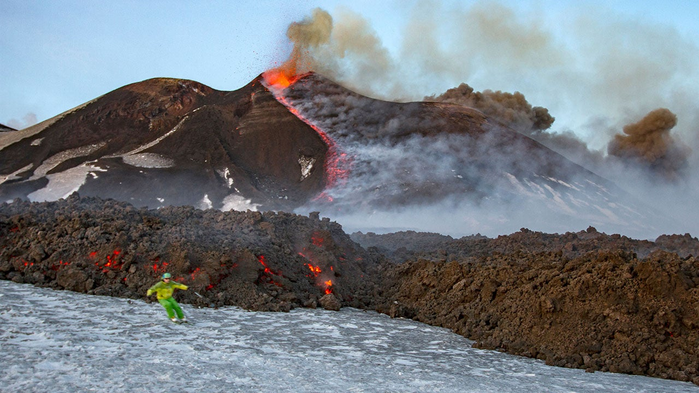 | The image features a person standing on an icy beach as orange flames shoot out from a mountain or volcano. The person seems to be curious about the erupting volcano, possibly capturing the unusual sighting. The flames can be seen shooting out from the mountain, creating an intimidating landscape.
The person appears alone and somewhat small in the scene, overlooking the volcano, likely marveling at the powerful force of nature unfolding before them. The icy conditions of the beach add an interesting element to the scene, as it contrasts with the heat of the erupting volcano. | The image boasts a dynamic environment with a large mountain fire glowing in the background. A man dressed in bright green is standing among the bright red fires, and another person can be seen actively playing with fire in an area nearby. In this scene, the person in the green suit seems to be observing the mountain with the fire in the background, while exploring the red rivers of lava.
Multiple rock formations surrounding the fire add to the sense of adventure and excitement in the scene, as people seem to be transporting themselves into an alternate world where they can play with fire and convert harmless elements like snow into a breathtaking environment. | The scene captures a man in a lush forest wearing a green suit walking down a snow-covered slope, coming to the edge of a cliff. He appears to be curious about the excitement that awaits him around the next curve. In the foreground, there is an erupting volcano or a eruption of a mountain, adding an intense atmosphere to the setting. The beautiful landscape contrasts with the man's more casual attire, creating a memorable scene for those observing. | The image shows a person walking across a rocky land, with steps visible on this rough terrain. Towards the right, a massive volcano or a big hill can be seen, adding to the overall dramatic scenery. The person is wearing a yellow outfit and appears to be walking with purpose. They are located near the bottom of the scene, with the volcano dominating the background and slightly overlapping with the middle and upper parts of the image. | This image features a unique outdoor situation where a person dressed in a green vest is standing on stage in front of snow and lava. The person appears to be backlit by a bright light, highlighting their presence in the scene. The snow and lava seem to define the color palette, with the snow offering a cold contrast to the warmth of the lava. The person seems captivated by the scene and might be observing a volcanic eruption, a nearby dumpster fire, or some other unusual event taking place outdoors. | The image features a small child happily running away from a distant volcano filled with fiery lava, creating a unique natural spectacle. The child's figure is prominent in the foreground, while the volcano, depicting flames and smoke erupting from it, fills a significant portion of the background.
As the child runs, they appear as a small grain of corn; however, they are not directly threatened by the lava at this moment. The sky above the scene provides a backdrop for the remarkable sight. | The image captures an extreme and dangerous scene at a geological site with lakes of molten lava and erupted volcanoes. A person can be spotted running away from the lava in a desperate attempt to escape the danger, while another person, slightly farther away and to the left, seems to be curiously observing or monitoring the situation.
Furthermore, there is a dog in the scene perched near the person in the center. This extraordinary and dramatic image of lava against a snowy mountain further highlights the dangerous and spectacular nature of the event. | The image captures a stunning beach scene with crystal-clear ice covering the snow-covered ground. At the beach, there is a single person standing in the snow, possibly observing the beach and its surroundings.
Several volleyball games are happening near the beach, with two distinct volleyball nets visible across the scene. The large amount of snow on the beach suggests a winter experience, while the numerous sports activities create a lively atmosphere. The combination of the ice, volleyball, and person result in an interesting and unique beach moment. | The image shows a hotel worker in a green shirt standing in front of a furious volcanic eruption in the frigid high tundra. The man appears to be observing the spectacular sight of flames shooting out of the active volcano. The scene is scorching hot around the eruption, and the intense lava flow can be seen pouring out of the volcano. The impressive view should not be underestimated, as standing close to such high temperatures might be quite dangerous. | I am observing a man standing in the snow near a volcanic ash mountain range that is scattered with snow. The image shows the mountain peaks with hot ash spewing out, combing the scene with an unnerving atmosphere. There are multiple fire sources in the area, creating a sense of urgency and an eruption alert. The man appears to be looking toward the colossal mountain range as it unleashes hot ash and smoke. In contrast to the hot ash spewing mound, there are also elements like a car on the right side, giving a combined contrasting scene between nature's force and human-made structures in the same environment. | The image portrays a person in a green t-shirt standing on a gravel street next to an active volcano. The lava is being deflected by a wall of sand, which helps keep the flames under control. The t-shirt is not the common clothing element we would usually expect someone to wear while being so close to a fiery volcano. The person appears to be taking the scene seriously as they look at the lava coming out of the volcano. The scene appears to be happening on a mountain and provides an interesting visual of the velvet red lava flow. |
 | The image represents a graphical representation of the demographics of two groups or sources: President George W. Bush and Obama. The graph displays the percentage of each category in relation to the total for these two individuals. The categories include White Men, White Women, Skin Black Men, and Skin Black Women.
In the context of President George W. Bush, the chart shows that he has the majority of his support from Skin Black Men and White Men. Skin Black Women, on the other hand, appear to prefer Obama. On the other hand, the chart shows that Obama has more support from Skin Black Women than George W. Bush. Additionally, most of George W. Bush's supporters are White Men, while most of Obama's supporters come from Skin Black Women.
This chart highlights the differences in the demographic leanings of these two individuals in terms of popularity or preferences among various racial and gender groups. | The image features a white, male president named Bush and his vice president, Dick Cheney. This political perspective showcases how in 2004, the president was running for office. The graph on the left displays the Bush and Cheney percentages to denote their popularity or chances of winning in comparison to their opponents.
Throughout the image, there are various word charts related to the presidential race. Below the graphs, there is a list of categories for analysis, showcasing the percentages based on race differences. This could have been used for strategic planning or understanding the voter dynamics during the 2004 presidential election. | The image shows a breakdown of demographics for registered voters in the 2004 presidential election. There are multiple bar graphs displayed across the image, with each graph illustrating certain demographic categories, such as race, gender, and party affiliation.
The bar graphs display details for the demographic percentages and demonstrate the split in voters along each demographic line. For instance, the top left graph represents the demographic split of White males, while the top middle graph displays non-white male voters. The top right graph shows party affiliations, and the bottom right graph presents a categorization of voters by gender groups. | In the image, there is a pie chart showing different groups and their voting preferences for the 2004 presidential election. The chart displays the percentage of voters for each group, illustrating that President Bush won a majority of the vote. The chart is broken down into subcategories like "Whites/Non-Whites," "Men/Women," and "Race and Gender," with each segment represented by bars or boxes. The subcategories can be seen hovering over the overall pie, providing additional insights into the voting preferences of various demographics of voters. | The image displays a graph with boxes labeled and organized to represent the breakdown of the groups of people who voted for President Bush in 2000. There is a significant portion of the people who identified as white, non-white, and white/non-white/men and women which was analyzed and plotted onto the chart.
The majority of the people in this graph can be categorized as white, with several other groups appearing to be smaller, such as non-white or men, women, and those identifying as white and non-white. The image reflects the diversity of the voting population, providing insight into the breakdown of demographics for President Bush's election. | The image provides a breakdown of the different components that make up President George W. Bush's family. The graphic shows the president's percentages in terms of race, gender, and national background.
In terms of race, the graph displays the percentage of Black, White, Hispanic, and Asian Americans within Bush's family. Specifically, it shows that the majority of Bush's family consists of White Americans, with about 73.67% of them being white. Additionally, there are 8.89% black or African-American individuals, 7.19% Hispanic individuals, and 0% Asian Americans in Bush's family.
In terms of gender, the majority of Bush's family consists of females, with 58.18% being females while the remaining 41.82% are males.
Moreover, regarding Bush's national background, the graph shows ethnicities representing the United States, with 30.57% being of English ancestry, 17.96% of Welsh ancestry, 16.91% of Scottish ancestry, 11.24% of Irish ancestry, 4.82% of German ancestry, and 0.18% of Persian ancestry. | The image displays an XY plot that shows how presidencies change over time. In this case, it is discussing the 2020 presidential election. The chart represents different groups, including Bush and Kennedy, along with their candidate strengths.
There are three types of graphs on the image an X graph, a Y graph, and a Venn diagram. The X graph shows the comparison between the candidates. The Y graph demonstrates the popularity of each president. The Venn diagram is a combination of a circle and the presidential cycle. The Circle represents the entire Cycle of Presidencies, and the X and Y graphs make up the individual circles at each point in the cycle.
The image captures the various presidential cycles and their relation to the 2020 presidential election. The distinct groups are represented by slices of the pie, illustrating the distribution of support or opposition for each of the candidates. | The image shows a description of a Presidential Vote carried out in 2014 in terms of the race and gender of the voters. The vote is represented as a graphical representation of who mostly voted for each candidate. The chart is divided into sections for men, women, and a racial category.
In terms of the race, President Bush has the majority of the support from the X racial category. In terms of gender, President Obama has a larger percentage of support from both women and men, while the racial category includes other racial groups.
The specific percentages are not displayed in the image; however, the chart clearly illustrates the breakdown of voter support by race, gender, and ethnicity for the 2014 US presidential election. | The image displays a pie chart with six sections, arranged vertically, each displaying a different group's breakdown of voting. The chart seems to be related to the 2004 Presidential election where race and gender played a significant role.
The first block of the pie chart represents "Men and Non-Voters" accounting for 25% of the total vote. The second block, "Women" occupies 50% of the total vote. The percentage distribution is further broken down between "Non-Women" and "Black Women" along with "Hispanic Women." Each of these smaller groups also reflects their collective representation in terms of the overall voting by race and gender. Moreover, an additional block located beneath the sixth block seems to represent a cross-section of women and men who voted for John Kerry. Overall, this chart provides insight into the diverse demographics and identities of those who participated in the 2004 election. | The image displays a statistical plot showing voter distribution by age group, racial and ethnic identity, and gender. The categories include a range of ages (e.g., 65+), a mix of race and gender demographics, and specific age groups such as 51-65, 51-70, and 61-75.
The visual representation of these categories is organized with multiple bars and segments, highlighting the differences among them. The bars fill the available room to showcase the different age groups and their demographic profiles, which can be helpful in understanding voter behaviors, attitudes, and preferences. | The image features a large showcased bar chart, focused on the 2004 presidential election. The main focus is on race and gender, providing a clear look at who voted for each of the presidential candidates in that year. The bar chart splits the results into numerous sections, offering a detailed visual representation of the blocs that voted for each candidate.
Throughout the chart, there is a strong emphasis on the preferences of African Americans, women, and various other demographics. The chart highlights the large percentage of African Americans and women who supported Bush, as well as the more prevalent votes for Kerry coming from non-white voters. The numerous sub-categories throughout the chart provide a more detailed look into each of these groups and their preferences during the 2004 presidential election. The colors used for the bars are green and blue, making the chart visually appealing and easy to read. |
 | The image features a text cloud made up of many different blue strands shaped like a person. Each blue strand is labelled with a word or phrase related to an employee, highlighting various aspects of their role and responsibilities. The text cloud occupies most of the picture, spanning across the entire width and height. The use of blue for the text strands gives the impression of focusing on the professional side of the employee. | The image showcases a white background with small lettering of the word "EMPLOYEE" arranged all over it. The word "employee" is visualized as a subtle web of blue words running through the image. This arrangement can be interpreted as graphs and data analytics, emphasizing the central concept to many different viewpoints. The multiple readings of the word "EMPLOYEE" create a complex yet harmonious illustration. | The image depicts an employee engaging in various tasks, as represented through an avatar of a person surrounded by colorful spikes. A large amount of data word yield and organized relationships concepts come together to form the working environment.
In addition to the employee avatar, there are several smaller figures (thematic icons) in the background, which may symbolize different aspects of their job, such as communication, data, planning, and research. The spikes around the avatar and the various figures in the background contribute to a visually lively scene. | The image displays multiple words engraved on a white surface, which attracts attention due to its bold color contrast. The words are colored and arranged in different sizes and shapes, making the display visually appealing.
In particular, one of the key phrases besides "employee" displayed is "data." This provides a sense of focus and direction for the whiteboard, which may be used to categorize ideas or even research topics related to it.
There is a reference to a television also found in the composition. This TV screen is spaced apart from the main word arrangement in the image. | The image features a word cloud, sorting employees based on their job roles such as employee, manager, researcher, sales, and VOE. The cloud is filled with small text-based icons, representing the words in the vocabulary for the cloud. Each icon symbolizes a particular term or concept, creating a visual representation comprised of various fonts, sizes, and orientations. Overall, the word cloud is a helpful way to organize and visualize employee information in a more accessible and customizable manner. | The image displays a word cloud formed by the word "employee" in large blue letters set within a sea of small blue letters representing the context and variations of the word "employee." The word cloud highlights the term's many different forms and uses. This creative visual representation of a word or concept helps emphasize its significance, breadth, and depth. | The image is a featured article related to the role of an employee in an organization. The article is composed of various words and phrases arranged in a visually rich and informative display of links and connections. It appears to be a map view of the organization where the employee works, emphasizing the importance of the employee's role within the establishment, as well as the connections between different functional areas of the organization.
The individual words are large and prominently displayed at various positions in the image, illustrating the conversations surrounding the topic of employee contributions within the organization. The linkages between the words strengthen the narrative and create a comprehensive understanding of the role of employees in the company. | The image consists of a map of the body of a person with multiple word clouds intertwined in a mosaic-like fashion. The word clouds in the photograph cover various topics related to a workplace employee. Words such as employee, data, statistic, organization, research, and data analysis can be identified in the clouds. The arrangement of these word clouds creates a dense collage that covers every part of the person figurine, emphasizing the key themes and concepts present in the workplace. | The image contains a detailed representation in words of the essence of working as an employee in a corporate setting. It features various terms associated with offices, employees, and professionals, arranged to form an artistic collage. The colossal number of tags in the image suggests a comprehensive view of the concepts making the corporate space a unique and yet challenging place to work. This word art, either pasted on a white board or printed, highlights the diverse aspects and skills involved, showcasing the intricate dynamics of a corporate environment. | The image features a picture of a worker and a large word cloud composed of various company, employee, success, assist, and research-related text based on the word "employ." The text is mostly scattered around the worker image, visually emphasizing the importance and focus on the employee's role in the organization. The word cloud unfolds in layers, revealing more text as it expands from the word "employ" in the central part of the image, creating an eye-catching visual representation of the related concepts. | The image presents a large amount of text denoting the various aspects of a "typical employee." The text appears on a white background, and the phrases are bolded, emphasizing the different elements typically associated with a worker. Numerous clusters of dashes and icons surround the text, creating a visually interesting effect.
In addition to the text and icons, multiple book-like symbols can be found throughout the image, suggesting the link between learning, data, and the "typical employee." The presentation of this textual composition appears to convey a comprehensive view of a worker, incorporating different types of information and ideas relevant to their daily roles and responsibilities. |
 | This is a graph showing the percentage of women in various fields of study. The graph displays the percentage of women enrolling in different majors in college, such as computer science (30%), law school (50%), Medical school (50%), physical sciences (40%), and engineering (40%).
When considering computer science, there are no women, indicating a significant lack of women in this field compared to the others. On the left side of the graph, women in law and medical school are almost evenly distributed, with slightly higher percentages for law school. The physical sciences exhibit similar representation for both genders, while engineering has a higher percentage of women.
Overall, it is apparent that women are underrepresented in computer science, while law and medical school enrollment appears to be more balanced between the genders. | The image illustrates the representation of women inside computer science and physical sciences. Two separate graphs are displayed side by side, demonstrating the distribution of women in both fields. The graphs represent the percentages of women in each subject, with a bar chart showing the distribution on the right side and a slightly different data presentation toward the left.
It is evident that the representation of women in the physical sciences is lower than in computer science. The graphs may serve as a visual representation to highlight the disparity and potential steps for creating a more inclusive environment in both disciplines. | The image consists of two side-by-side graphs illustrating the representation of men and women in different programs. The left graph displays the percentage of men and women either posing some degrees or who are first years in a degree program, including physical, computer, and medical sciences.
The right graph focuses more on the medical science program, depicting the percentage of men and women who are either first years or have some degrees in various disciplines, such as physical science. This breakdown offers a clear visualization of the representation of women and men in each discipline. | The image displays two graphs showing the progression of women's educational attainment in different field of study. The two graphs, known as Sankey diagrams, illustrate the order of degrees or majors awarded to women, starting from the lowest to the highest level.
The diagrams showcase various fields, such as mathematics, computer and information science, physics, and chemistry, as well as medicine and physical sciences. The progression of the images is from left to right, showcasing the percentage of women who pursued and obtained degrees in each field. This provides a visual representation of the historical and current distribution of women's educational achievements within these disciplines. | The image is a chart comparing outcomes between men and women in computer science, possibly in medical school or physical sciences. In the top section of the chart, the number of women who fielded computer science degrees in medical school is represented by 14%, while the number of men is 76%. Comparatively, the same section shows that women have a 62% participation in physical science fields, while men have 34%.
At the bottom section of the chart, the dose-response relationship between different educational routes, such as computer science vs. physical sciences, is displayed, showing how men may hold higher percentages in these fields compared to women. The image aims to provide insights into gender disparities in these various academic disciplines. | The image is a picture of a computer graph, showcasing a representation of the percentage of women in various occupations throughout history. The graph spans from the 1940s to the 1980s, illustrating the representation of women in computer science, medicine, physical science, and other fields of study.
The graph displays steep increases in the representation of women in programming and related areas over the years, with some fields like medicine maintaining a significant percentage of female representation. Some other fields, such as physical science and general education, show relative fluctuations in the percentage of women pursuing those careers. | The image is a foldout chart consisting of two sections that display the same data, but in different visual formats. The sections primarily revolve around the topic of "What Happened to Women in Computer Science?". The chart offers various statistics and comparisons, including enrollment, graduation, or completion of majors in computer science.
In the first section, a line graph displays data on enrollment and completion of computer science, with labels indicating the years and percentages. In the second section, a pie chart compares figures between women and men (of those who majored in computer science) further emphasizing the representation of women in this field. The data used in the pie chart includes the distribution between majors in computer science, law, and physical science among females.
Both statistics are presented in similar contexts within the foldout, but they differ in their approach to showcase the enrollment, graduation, and completion of computer science by women and men in various fields. The chart conveys a clear message about the representation of women in computer science-related disciplines. | The image shows a colorful bar chart with several graphs presenting statistics related to enrollments and degrees in computer science fields. The chart indicates a general overtime period by depicting the enrollment rates among men and women at various educational institutions.
Specifically, the chart displays data from medical school, physical science and mathematics, and computer science. Enrollment rates by university are represented by the graph, allowing viewers to grasp the overall trend in the number of enrollees in these fields. The distinct graphs showcase the variations in enrollment rates, highlighting how different institutions cater to those studying computer science and related topics. | The image consists of four different graphs, each displaying various statistics related to the female population in computer science. These statistics include the percentage of women enrolling in computer science programs at different academic levels, as well as the percentage of women in different fields of the science by school.
Each graph features different shapes and designs, using lines to showcase the data. The graphs are spread across the background, with the bottom part resembling the shape of the computer mouse, while the text below provides explanations and further context. | The image features a bar graph illustrating various statistics related to the representation of women in different fields of science and technology. The horizontal axis of the graph represents the percentage of employees in these fields, while colors and lines symbolize the growth and representation of women within those fields over time.
Specifically, the bars represent the percentage of women in law school, computer science, physical sciences, medical school, and physical sciences graduate student fields. The data within these bars showcase varying levels of representation from different majors, proving a visual representation of the progress made towards gender equality in these fields of study.
Overall, the bar graph effectively demonstrates the ongoing efforts to promote and support women in STEM fields. | The image displays two different graphs showing the differences between two groups: women and men. The graphs are orange, green, and black in color. The first graph shows the breakdown of two essential majors, Computer Science and Medicine. Specifically, it shows that 33.96% of women learned computer science, while only 13.96% of men did the same. On the other hand, 9.37% of women chose to study medicine, while 11.17% of men opted for this field.
The second graph shows the breakdown of two different genders in the Physical Sciences. It is visible that 13.61% of women studied physical sciences, while 10.07% of men did so. The two graphs are accompanied by percentage figures above both the graphs, making it easier to understand the differences in the two groups. Overall, it demonstrates the clear gender differences in various major choices and further highlights the need for balancing the study of both women and men in these fields. |
 | The image features a PowerPoint presentation of various energy sources. Specifically, the presentation focuses on a comparison of natural gas versus other energy sources. There are deployment rates displayed for different energy sources, plotted as part of a bar chart.
In the presentation, the natural gas deployment rates are displayed at the top left-hand side, followed by several other energy sources. The chart has numerous bars illustrating the specific energy sources, with varying positions on the left, top, and right sides of the image. The image suggests that the natural gas deployment rate is higher than the other energy sources. | The image features an infographic with two main components: an interactive graph and a table of facts. The graph displays various energy consumption trends, such as natural gas, energy imports, imports of crude oil, and coke.
In the lower part of the image, there is a table of facts highlighting crucial information about nuclear energy, energy waste, and unconsumed fuels. These facts provide detailed insights for the audience, showing them the total available resources, trends in consumption, and the utilization of different energy sources. The image has a heading modernizing the message being presented, aiming to capture the attention of the viewers and make the data accessible and comprehensible. | The image features a collection of graphs presenting various energy consumption data. There are a total of 16 graphs, each displaying energy consumption related to U.S. energy, energy efficiency, nuclear energy, and coal.
Two main data points are emphasized, with an arrow pointing towards the data highlighting one of them. The focus points seem to be on energy consumption in the U.S. and energy efficiency.
A side note also suggests that one can use the energyconsumption data to create a PPTU diagram, making it a useful reference tool for people interested in energy-related topics. The graph visuals with red, blue and white lines and numbers work together to efficiently present the energy consumption figures. | The image presents a graphic comparing various energy sources such as coal, natural gas, nuclear energy, and renewables like solar and wind power. There is a table in the center of the graphic outlining the energy sources, alongside numbered explanations for each line on the table.
The graphic also includes a few bar charts to help visualize and compare the energy consumption over time. One of the bar charts is already shown, with the numbers visible alongside the bars.
The colors of the text suggest that the visuals are convertible from text into visual graphics, helping to integrate the information into presentations. | The image displays a chart focusing on energy consumption, which forms part of a PowerPoint presentation. The main statistics include the annual energy consumption in billions, United States energy consumption increase over time, and per capita energy consumption in various parts of the world.
In addition to the purely textual data, several images or visual cues are interspersed throughout the presentation. These images capture the attention of the viewer and help to visualize the content being presented. By combining data and visuals, the presentation becomes more accessible and engaging, facilitating better understanding and retention of the information. | The image demonstrates an effective method of converting a text-heavy report into a visually appealing presentation, comprised of various graphs and charts. There is a prominent chart displayed in the center of the image, with other graphs and charts scattered throughout the scene, placed in different positions.
Some of the appearance of the drawings include a bar chart, flags representing energy consumption, and a time-series of energy usage. This engaging visual format helps to engage an audience and make data more conceivable. Furthermore, a number of cords appear at the bottom of each graph, helping to organize the charts and displaying the data in an interconnected manner, emphasizing specific patterns or trends. The focus on these visual graphics indicates that the users are trying to make their presentation more impactful and understandable while minimizing the dependence on large blocks of text. | The image features a chart explaining how to convert text into a variety of visual graphs. The chart has clearly laid out instructions and figures displayed within the graph. It serves as an informative tool for creating standout presentations. The methods covered in the images include bar graphs, pie charts, and line charts.
The display works smoothly on a computer screen, with content spread out across the entire screen for better visibility. This presentation helps create an effective way to communicate data and statistics while keeping the presentation engaging and visually appealing. | The image presents a visually rich attempt to convert text into graphics - complete with flags and a table - to educate the viewers on different energy sources. There are six different graphs dividing the content, each with one of the six large figures on the top. The graphs represent various energy sources such as natural gas, coal, and hydroelectric power, helping to better explain technical details about them.
Additionally, there is a list containing multiple subheadings and points next to the graphs, which further clarifies the information about each energy source. The overall presentation is well-structured and aims to convey complex data in a comprehensive and engaging manner. | The image displays a creative way to convert a textual process into visual graphics. It shows a divided bar graph where the vertical axis represents stages, and the horizontal axis represents the growth and development. The bar graph is sequenced to represent the entire process at a glance. In addition, there is a table that covers the U.S. energy consumption, providing important information on energy sources.
The slide or visual graphic illustration stands out because of its creative presentation. It creates a more engaging and appealing way to represent information when comparing different stages to their rate of development or growth. | The image is a visual data table that provides information about domestic and foreign oil consumption, production, and prices. Seven different tables are laid out in the presentation, each focusing on a specific aspect of energy, with other smaller tables dividing them up further.
In addition to this comprehensive energy presentation, there are multiple bar graphs and pie charts scattered throughout the image. This detailed visual representation of energy data makes it easier for anyone to understand and analyze the information provided. | The image demonstrates an innovative way to display important data and statistics using a presentation that incorporates visual graphics and text. There's a red cursor placed on a graph that shows energy consumption by source through the years. The energy mix consists of several sources such as natural gas (34.5%) and various other energy sources for the rest of the graph.
Beneath the color-coded energy mix graph, there are line graphs showcasing the energy consumption per source and a pie graph illuminating the percentage of energy consumption for each energy source. The combination of these graphs create a comprehensive and clear presentation of energy consumption and its corresponding sources. |
 | The image displays a diagram of the entities involved in the business concept of Universal Venture Companies. There are public and private entities, universities, federal agencies, RepubCal Rep. Federalism American Executive Administration, and students. The drawing is quite intricate with different connections between the various entities, showcasing how they all play a part in the American economic system.
There are social media error nodes placed throughout the drawing, indicating aspects where there might be issues or confusion in the connections between the listed entities. In total, there are six error nodes spread across the image, some in the middle and others closer to the edges.
Overall, the complex diagram presents a clear visual representation of the network of organizations and stakeholders involved in Universal Venture Companies. | The image contains a diagram illustrating the components, strategies, and processes of the intersection of different word authorities found in the United States. The diagram highlights various elements, such as text graphic and word nets, with multiple points of information overlapping. Various words, including words of American origin, are highlighted in the graph to provide context.
Additionally, there is a map in the background, possibly showing the regional distribution of these components in the United States. The map serves as a backdrop, providing an understanding of the geographical distribution of these components. The visualization appears to be detailed and informative, helping the viewer grasp the intricate relationship among the different word authorities. | The image features a detailed diagram illustrating various entities and their relationships in the United States. The diagram consists of numerous nodes connected by various lines or arrows. Some of the hottest topics or areas of interest within the country include San Diego, UC of San Diego along with related university steps.
In total, there are 13 distinct icons or icons on the diagram, each representing separate entities or concepts. From coast to coast, the diagram seems to capture a diverse range of locations and connections within American society.
Overall, the organization of the diagram and the representations of the various entities provide a comprehensive overview of the subject matter. | The image depicts an information flowchart or map displaying various points of educational attainment in the United States. The flowchart is split into three main sections labeled "U.S. States," "University of San Diego," and "Text, Graphic Entities," indicating the connections between these elements. The flowchart also includes common associations between different organizations and regions.
Connections between states and their neighbors are highlighted, indicating common educational paths. The flowchart features details such as understanding, associating text words with concepts, and mapping territories as contrasting end states. Through these connections, the flowchart provides a clear representation of the educational pathways across the United States. | The image is a diagram illustrating the Zip Code system of the United States of America. The diagram is divided into several different sections, highlighting the structure of ZIP Code regions in various territories such as the Northeast, Midwest, Southeast, and Northwest regions. These ZIP Codes are uniquely identified and used for mailing and shipping purposes. The illustration is based on a network of interconnected boxes, making it easy for the viewer to identify each region and its specific ZIP Code boundaries. The organizational structure of the image makes it a useful reference for someone studying or working in the field of postal delivery or forwarding. | The image presents a cartoon depicting a large complex web that intersects the United States of America. This web represents the interrelations of institutions, organizations, and universities across the nation. Each interconnected point on the web likely represents a specific organization, displaying their relationships and dependencies.
This map showcases a detailed view of connections within the USA, narrowing down to the Federation of North, Central, South, and West America. There are various degrees and academic clusters suggested by the interrelated labeled points, giving a thorough perspective on the network of institutions across different regions in the U.S. | The image displays a large chart or a flow chart, which likely represents various governance entities within the United States of America. The entities are shown in different shapes or icons, and they appear to be organized as a network within the chart.
There are at least thirteen distinct entities visible in the image, which span across the different shapes. Some entities are positioned close to each other, while others are more spread out. Among these entities, one name specifically stands out, which could be the University of San Diego. However, the main focus of the image is on the network of governance entities, with each shape or icon representing a distinct organization. | The image displays a flowchart showing the lineage and connection of various educational institutions and the United States. Several universities are included in the diagram, with their locations marked on the map. These universities represent various points of origin or connections within the educational system in the United States.
For instance, San Diego is prominently featured in the center, located near San Diego State University, which is a part of a larger network. Moreover, other universities and locations are shown throughout the chart, indicating connections and potential collaborations among educational institutions. | The image is a diagram illustrating a map of universities that are affiliated in the United States. There are several universities throughout the country, with some located in major coastal cities, while others are located closer to the heart of the country. The universities can be identified by their distinct letter-based labels.
To provide more context, the eastern portion of the map is colored blue, while the central area is colored orange, and the western part displays green.
In addition to this, there are several people visible in the map, with one person towards the top left, another in the central area (a bit more towards the left), and the third person is located in the top right portion.
Lastly, there are two extra text-based labels on the right side, one near the bottom and the other in the upper part of the title area. | The image is a detailed diagram illustrating the relationship between a large number of educational, wordy text, and websites from the University of San Diego. The diagram includes a map that places the United States in the middle with different imagery related to the University of San Diego.
In the center of the map, several foreign educational establishments are positioned, showing the connections between the University of San Diego and these institutions. The chart contains various information displayed in a visually appealing manner, making it easy to explore and understand the connections between the University of San Diego and these different organizations and locations. | The image shows a diagram with multiple nodes, or information points, connected or grouped together. Some of the nodes are associated with universities, as indicated by their circular shapes surrounding the words 'U.S. United States' and 'The University of Baltimore.' The diagram spans the span of the United States and extends into other areas of America as well.
Among the other nodes throughout the image, some are related to different entities such as Federal Conference, Federal Aid, San Diego College/UBU, Barry University, University of San Diego and San Diego State University, the University of Texas, U.B., U.Va, Wake Forest, University of North Carolina, Harrisburg University of Science and Technology and others. The diagram encapsulates the various connections between different universities and entities across the U.S. |
 | The image portrays a simple and visually appealing diagram or model showcasing two white circles labeled "knowledge base" and "text to text". The circles are represented by text and delicate outlines. In addition to these two primary circles, there is also a small text-like circle close to the right side of the image.
On the edges of both the right and the bottom of the circles, small keyboard symbols appear, possibly indicating input mechanisms. The image presents an organized and clear model, making it an excellent visual aid. | The image displays a pie chart, which is divided into four distinct sections. The pie is being color-coded to represent different categories or concepts. Alongside the pie chart, there is a timeline present. The pie chart and the timeline work together, possibly to illustrate the time required for learning, understanding, applying, and finally mastering a certain subject. The alignment of the pie and the timeline suggests a visual representation of the learning process. | I'm looking at a diagram or drawing information system illustration depicted in a white field. The image has a focus on several colors, such as red, blue, green, and purple, possibly representing different categories or concepts. There are two keywords within the image - "graph-to-text" and "knowledge base." As I look closer, I notice a chart or graph down the middle of the image with text "column" on each side, indicating components of the system. Another visual element in the image is a collapsed yellow adjacent to the red title, giving it a pop of color. Additionally, the diagram is accompanied by a plus sign at some point along its upper sections, possibly representing a relationship or component in the system. | The image features a flowchart of a text to graph program, which illustrates the different processes involved in creating a graph from a text document. The image includes various shapes like squares, circles, triangles, and rectangles to represent these processes. These shapes are positioned along different horizontal lines, clearly indicating a grid-like structure.
In addition to the shapes, the image includes words "The text document" and "The graph", as well as labels for the different elements on the flowchart. Some of the elements include "get the text" and "convert to numbers". Overall, the flowchart provides an organized representation of the steps involved in converting text to a graph format. | The image consists of two diagrams side by side, each shown in different colors, illustrating the working of a computer graphics product. They present various output diagrams, text-to-graph data, and how the product can generate text using the graphics and explain the graphics' printing logic.
Beside these diagrams, there is a paragraph of text next to them, explaining the graph-to-text configuration and the inner working of the computer graph system. Additionally, the image is labeled with red and blue colors near the edges, possibly to indicate specific items or sections in the diagrams. It is a visual aid designed to convey the intricacies of a system using diagrams and text. | The image presents a colorful flowchart depicting several steps for creating a chart-to-text graph. There are five main steps defined in the flowchart: "Choose variables," "Define categories," "Create chart," "Format text," and "Transform text." A representation of the chart appears in the lower subsections of the flowchart, with data and categories for reference.
Additional information can be observed on the right side of the image, where a treemap illustration is lined up. There are also several smaller figures scattered throughout the flowchart, likely indicating various aspects related to the chart-to-text graph schema. | The image features a diagram showing the relationship between different plays in a baseball game. There are three main components in the diagram: T-O Graph, Knowledge Base, and CQL Matrix.
The T-O Graph stands for Matcher Visual, representing a relationship between users, plays, and Bearings. It is a visual representation of connections between these elements, indicating the similarity between the queries and plays.
The Knowledge Base is a crucial component of the diagram, as it contains rules and descriptors to classify plays, users, and data. CQL Matrix refers to a collection of CQL (Chemo-Linguistic Query) commands, which are designed to aid in the classification of plays and users.
The entire scene depicts a highly structured, visual representation of interactions between users and plays within the context of a baseball game. | The image features a diagram or flowchart consisting of several boxes, each representing a separate topic. These topics include knowledge, text-to-text, and knowledge base. The boxes are divided into different areas, with purple areas used to represent knowledge and blue areas used to represent the knowledge base. In addition, green areas can be seen, signifying text-to-text. The flowchart is organized and contains multiple lines linking the different topics, emphasizing the connections and dependencies between them. The diagram is likely a visual aid for understanding or teaching a specific concept. | The image depicts a flowchart-shaped diagram with arrows and labels, known as a "cognitive- map." The chart-like structure is designed for text-to-speech conversion. It gives a visual representation of the process involved in turning text into speech.
There are multiple labels on the chart, such as "Graph-text, Vorlage Textoutput, Suggested text, Batch & Stream" at various points within the plan, indicating the stages and categories of the text-to-speech conversion process. The placement of each label along the sigmoid curve helps create a clear understanding of the interrelationships and connections in the process. | The image captures several interesting diagrams pinned on a whiteboard. There is a detailed flowchart or a graph displayed closely to the left side of the visual. On the right side, a risk matrix Graph-and-text screenshot juxtaposed with a knowledge base is presented, indicating its connection to the main visual. The visuals are diverse and convey a sense of information and analysis. The whiteboard seems to cover most of the background, with the diagrams easily visible and occupying the rest of the image. | The image is a white sheet of paper with a graph-to-text chart or similar diagram. There are several labels depicting the text-to-numbers conversion of values, along with a legend.
The main components of the chart include a series of lines going through the paper, each designated to represent a different number. The labels at each point along the lines suggest the corresponding numerical value. The picture gives a clear view of the conversion process, explaining how text values can be translated into numbers or vice versa. |
 | The image is a collage of pictures of various subjects, with yellow colored pencils used to highlight the main categories of the showcased subjects. There is an emphasis on different subjects, such as reading, social studies, science, and math, as well as numbers. The collage contains 13 subjects displayed beneath each distinct section, noting how they correspond to the different categories presented by the pencils. Overall, it serves as visual aid demonstrating the wide variety of subjects that may be taught or discussed. | The image is a fun and visually appealing poster describing favorite subjects among students by using six pencils with corresponding colors, such as brown, yellow, green, orange, and red. Each pencil represents a different subject, including math, science, reading, social studies, and sports. This layout enables children to easily understand and view which subjects they like best.
The colorful and numerous pencils around the image provide a sense of excitement, interest, and positivity regarding the subjects being presented. | The image shows a colorful graph displaying rows of five colored crayons, identified as "favorite subjects." Above the chart, there is a header that says, "picture graph: Favorite Subjects."
Along the graph, rows and numbers are labeled to represent the different subjects and the students each of them belongs to. The subjects include "math," "reading," and "social studies," with the crayons corresponding to those subjects, with five crayons situated in each of the graphs for each subject. There are four columns, one for each of the subjects, reflecting the preferences of this number of students. | The image features a graph representing favorite subject matters for a number of students. It is a simple line graph, but without clear labels or zero points, it might be difficult to determine exactly which subjects are being referred to. The graph consists of two columns, with one showing the number of incidents and the other showing a degree scale.
In addition to the graph, there are a few line segments depicted above each column, representing various subjects. These segments tie the entire graph and makes it easier to visualize the relationships. The colorful lines can be perceived as suspenders on a cartoon character. Overall, the image effectively communicates the group preferences in a visually appealing manner. | The image features an educational board game focusing on "Picture Graphs" and various subjects such as reading, math, social studies, and science. The game consists of square pieces arranged in different sections, each with one of the aforementioned subjects.
There are six distinct sections of the board game, each representing a different subject. The sections are labeled in the upper right corner, which uses text labels as follows: Reading, 2nd Grade, Science, Math, 3rd Grade, and Social Studies 4th Grade.
In addition to the labelled sections, there are also two columns situated close to one another. The first column displays the subject titles vertically, while the second column does so horizontally. The two lines are at an angle, creating a visually engaging presentation of the subjects within the game. The game seems to be oriented for students to identify and find their interests, as well as enhance their understanding of various subjects. | The image presents a visual organizer featuring a variety of subjects that are divided into three sections, each with long horizontal rows. In each of these sections, several subjects are grouped together, such as "Deserts" and "Foods in Trays" among others.
There are discussions about the light colored group on the left, dark colored group in the middle, and a small subcategory grouped between the two larger subcategories.
Three examples of different subjects appear in the organizers. Above each subject in the subcategories, colored lines and text represent what these subjects feature. | The image features a math worksheet that comes with matching basic subject cards. This activity could be used either for assessment or as a learning tool for a group of students. In the worksheet, there are nine math cards asking "What are these subjects?" The subjects listed include addition, subtraction, multiplication, fractions, geometry, and statistics.
To assist with finding the correct matches, there are several items around the worksheet. Two pencils are shown in the vicinity of the cards, which may indicate that the activity requires pencil usage. Also, a book is placed nearby, possibly for reference or reading material while working on the worksheet. | The image features a young child's desk that appears vibrant and engaging. A variety of different subjects are displayed in the form of items, including many students' favorite subjects listed in the background. Among the items in the scene, there are several books and a pencil, indicating a learning-oriented environment.
Eight pencils can be seen throughout the scene, with two of them placed on the desk, another one next to the pencils, and the remaining five situated in various locations. Their presence reflects the importance of writing and performing tasks with writing instruments in this educational setting. | The image features a poster or chart with various items attached, arranged in a circular shape. Among these items are three different types of pencils, with one pencil placed at the top left, one slightly inside to the right, and another at the very bottom. The poster or chart also shows representation of students, with seven of them evenly spaced out throughout the chart. A great teacher is placed at the center of the poster or chart, perhaps suggesting a special focus on teaching or a classroom setting. Additionally, there is a pair of scissors in the lower left part of the poster or chart. | The image showcases a cheery presentation of pencils and other school supplies in various colors, likely used to teach about different subjects. These supplies include pencils in a range of colors; one is green, two are yellow, and the rest are white.
There are several pencils visible throughout the image, positioned vertically with their markings visible. The colors reflect a colorful and inviting atmosphere, making it an attractive visual aid for students and educators alike. The creativity and organization of the page ideas are evident while encompassing all essential abstracts of Simple Machines. | The image is a large poster displaying a vibrant comparison graph of different subjects students learn. The subjects are represented by different types of food, likely based on the theme of children's learning favorites. The graph is split into sections, with one featuring deciduous fruits like oranges and bananas, while another area features meats and cheeses like hamburgers and sausages. There are a few green elements in addition to these foods.
The poster also features two clocks close together, which may serve as a representation of the passage of time or simply replicate a common visual reference point in a classroom. The visual design of the poster makes it an appealing and creative educational tool for children, promoting an interest in learning while retaining a touch of fun with food-themed elements. |
 | The image shows an illustration of network theory, emphasizing the connection between computers and social networking. With dark background and purple dots representing the connections, the network lines up to the various nodes, creating various network diagrams.
The colorful dots are scattered across the network diagrams in various patterns, showcasing the connections between each other. This visual representation provides a comprehensive understanding of the large scale of connections present within a network. In this case, the network consists of both computers and social media usage, emphasizing the interconnection and data exchange that take place in both areas of our lives. | In this dark image, numerous flowers with colorful petals fill the screen. Large and small clusters of petals are scattered throughout the scene, with a variety of shapes and sizes. Some petals appear more prominently in the foreground while others are visible toward the background. The petals come together to create a captivating, abstract scene with a striking and artistic touch. | The image displays a diagram that illustrates a file transferring process using a complex network. The diagram is made up of three main components: document storage, network transfer, and cloud storage. There are also twelve small figures scattered across the illustration in various positions, most likely representing the process and interactions between the different components. | The image is a PowerPoint slide depicting a process flow chart, likely used to represent a complex system or process. The slide features a blue box, with multiple shapes going from the left side to the right side. The shapes represent different stages in the process, connecting to a large circle placed near the center.
In addition to the main blue box and the shapes, there are many other boxes scattered throughout the slide. These may provide more details or additional information about the process. The overall appearance is organized and clear, perhaps indicating a slice of project management or strategy planning. | In the image, there is a flow chart with illustrations and text, both in black and white, portraying a process. The flow chart is set against a black background. The text highlights four main steps in the process, which are discussed below:
1. Data source: The input file is a guide book, likely used to grasp connections, expand knowledge base, or catalogue data related to connections. This data serves as the foundation of the analysis.
2. Data processing: The data is processed to identify all associations between different objects/parts, showing connections and the entire structure of the connection scheme. This step provides a useful visual representation of the underlying connections.
3. Data visualization: The data is presented through a network diagram, where each node is characterized by a continuous value associated directly with the structure of the connections. This visualization allows for comprehending the complex network and making connections more tangible.
4. Interpretation: The flow chart concludes with the interpretation of the data. This step occurs when understanding complex systems and bringing insights to a comprehensible level, possibly highlighting patterns or data that can lead to better decision-making or understanding.
Two smaller illustrations of books are placed on the chart, likely to focus on the components of the process or emphasize connections corresponding to their respective data sources. | The image features a diagram illustrating a network set up to process documents. There are four boxes in the diagram, each representing a stage in the document processing system. The boxes are connected by lines, signifying the flow of processing from one stage to another.
One unit in the process is shown distributed across a series of images with multiple images representing stages within the system. There is also an icon on a cloud, closer to the top side of the image, possibly highlighting a piece of information about the document processing system. | The image serves as an educational diagram, illustrating the concept of network topology: a branching, interconnected system with individual nodes or points of interaction. Nodes in this graph are represented by blue circles, and links connecting them form the main body of the structure.
In the diagram, there are two main areas that emphasize the concept of interconnectedness. The upper part illustrates many tiny blue dots, representing individual nodes, scattered throughout the space. The lower part of the image is an abstract geometrical pattern made of interlinked blue dots, demonstrating a more intricate and structured representation of this network idea. | The image features a computer-generated display depicting a data server. There are three different types of nodes amidst several blue arrows that connect various visual elements. All the nodes have reduced color displays, which contribute to a comparatively plain appearance.
The server has a total of eight interconnected elements, including a distinct box on the lower right corner of the image. The top right area is home to some of the connecting arrows and their corresponding nodes. The scene emphasizes the connection and communication between different elements of the data server. | The image features a white and blue diagram, along with two labels, possibly meant to explain a concept or a system. The diagram is filled with numerous small gray rectangles, and there are two arrows pointing at significant areas within it. One arrow is pointing towards one side of the diagram, while the other goes directly to the lower half of the diagram. The labels positioned at the right side of the image further aid in the understanding of the diagram's content. | The image displays a diagram, possibly black and white, showcasing a complex connected network. The network is made of many lines that weave together, highlighting the relationships and interconnectedness among the elements. Several dots, of different colors such as white, orange, and blue, can be seen throughout the image.
It seems to be an illustration or representation of various processes, relationships, or networks, with the concentric motion helping to visualize the integration among the components. The orange circles are scattered over the network, further emphasizing the contrasts in color among the elements. | The image provides an explanation of the Rahul's Teleports concept, demonstrating how white clouds and a document freely blend. A white cloud can be found on the left side of the image, extending across most of the scene's top portion. On top of the white cloud, a few clear spherical ornaments can be seen, showing a sign of connection between the clouds and the ground.
The document is visible towards the bottom left corner of the image, with the blue line pointing horizontally towards it. The scene depicts a seamless integration of the document with the white clouds and the terrestrial environment. Additionally, a few orange shapes can be spotted within the clouds, giving them a captivating and freely flowing appearance. |
 | The image displays a series of sentences representing a storyline, labeled with letters and numbers to indicate correct understanding. The sentences are accompanied by bicycle, car, and traffic light icons, as indicators of the various elements within the story. There is also a graphic or diagram of the player's progress through the story.
In this particular context, a player needs to answer questions and match elements from different sentences, ensuring that they comprehend and understand the correct narrative. The sentences are spliced into various sections and include elements like dialogue, pressing the left pedal, and bike doors. There are also additional explanations and instructions scattered throughout the image to guide the player. | The image is a flowchart or diagram, possibly from an old textbook, which is filled with different descriptions and images related to motorcycles. There are multiple motorcycles illustrated throughout the chart, some positioned in the center, and others closer to the sides, which indicates that this diagram is focused on motorcycle-related topics.
In addition to the motorcycles, there is a person visible among the diagrams, which may be related to the content being explained in the flowchart. The presence of this person suggests that there might be an element of human interaction or involvement in the context of the flowchart. | The image is an illustration of a multiple choice question or test. There are several boxes, which contain information and instructions regarding different levels of questions. Inside the illustration, there is a task or problem being dealt with. Props for the illustration include books, suggesting it's related to academic material or studying. Aside from those, there is a bicycle images enclosed in one of the boxes, which could be an unrelated element to the main topic being discussed. | The image displays a flowchart with multiple branches and crossovers. The diagram includes a mix of words and drawings, creating a partially illustrated presentation. The right-hand side of the flowchart displays the word "Score" near the top.
The flowchart branches off to different sections, presenting different options in each of those connections. One section has the word "Pou- PoorpOops" on it. There is a range of designs and information presented along each branch and crossover, making the flowchart comprehensive, albeit quite cluttered. | The image features an overhead diagram with multiple scenes represented in a box on a grid structure. Each square in the grid contains details of the scene, with some specifically labeled as "g-po2" or generators. The grid represents various elements of a motorcycle taking shape in the scene, accompanied by a red stop sign at the top right corner. One of the key elements, described as a "blue shoe," is displayed at the top left corner, along with some specific items such as a tractor, and motorcycle parts labeled like beads. Additionally, there are two bicycle-related items in the scene, one in the top right and another in the middle left, adding to the variety of elements depicted. | The image is a diagram within a building that consists of a five-section network with a gear icon in the middle of the network. The network has a point where symptoms of an engineering challenge or a roundabout encountered are typically identified. There are a total of eight icons surrounding the gear icon, highlighting the diagram's interactive nature.
The diagram also has multiple mechanisms depicted, including an oval, a circle, a rectangle with rounded corners, and a regular rectangle. There are also two words displayed, possibly terms or concepts related to the network or the engineering challenge. A person can be seen at the top right corner of the image, potentially learning from or observing the diagram. | In this diagram, there is an image of a motorcycle, possibly a red Cioto Bapp, with various technical specifications and vital components highlighted. The main points of interest include the engine and its related parts, fuel tank, and other important details.
A bicycle is also shown in the foreground of this illustration. In addition to the technical drawings, there's a red checklist at the bottom of the image. Beyond the main subjects, several smaller arrows are present, likely pointing to other notable aspects of the motorcycle or drawing further attention to the details. | The image is a diagram or flow chart that demonstrates how questions produce answers in an examination setup. It consists of several boxes or stages, each containing different prompts related to answering a specific question. The prompts include words like "dialogue" and "truck," as well as more complex phrases related to testing equipment.
In the bottom left section of the flow chart, a bright blue circle is the first prompt, indicating that it's likely a multiple-choice question. As the flow moves upwards, the early stages of the examinations involve simple text prompts, which gradually develop into more complex, multi-word statements.
In addition to these stages, the flow chart's design comprises a door image, which gives context to the idea that one has to progress through multiple rounds of questions during an examination. The "correct" path is marked with a green checkmark symbol, while any "false" answers are posed with a red x. | Unfortunately, I cannot view, interpret or answer any questions about the image as there is no visible image in the prompt. | The image features a large diagram or flowchart that is used to examine how a motorcycle, specifically a blue dirt bike, goes through a chopping shop. There are various parts of the motorcycle depicted throughout the flowchart, including the engine, the needle and camshaft, and different components like front wheels, a fork, and a chain.
The flowchart consists of multiple boxes with written instructions and icons depicting specific parts of the motorcycle repair process. Emphasizing the concept of question and answer, the diagram seems to be an interactive tool or a visual aid for learning or teaching about motorcycle repair. | The image features a computer-generated image showing a monkey-like creature, a farm animal, and a bicycle, all situated in a block together. A book, presumably containing advertisements, is also vaguely present in the scene. The image is divided into different sections or frames, with each frame displaying a specific item or concept. For example, the monkey-like creature is located in the top left corner, the farm animal is in the center, and the bicycle is in the bottom left.
The different sections seem to be interconnected, with colors and text boxes providing visual clues. The design of this visual collage suggests an informative and engaging way to present information and concepts. |
 | This image displays several pages of a school activity, with the focus on a document related to a Gender Roles assignment. The pages contain information about the number of male and female students participating in a university engineering program. A comparison of the number of men and women enrolling as engineering students at different universities is analyzed in this document.
Alongside the assignment, there is a chart showing the percentage of male and female students in each academic program. The image also has a section explaining international enrollments and current university rankings, further emphasizing the assignment's practical aspect. | The image shows a page from a book or exam paper with a lot of writing on it. This text is accompanied by several graphs, likely for students learning about holding numbered menus at sea. There are multiple references to women and comparison with male minimalist features. A pie chart is also visible, located in the center of the page. It is not clear whether these are actual graphs or written out explicitly.
Two spreadsheets are present in the image: one in the top-right, likely containing a graph, and another larger spreadsheet in the bottom-right corner of the image, which seems to be part of the same study material. | The image features a list of tips for writing an exam or an essay, aimed at improving one's performance in such tasks. There is a unique numbering system used to organize the tips, which is colorful and catches the reader's attention. The presentation of the tips is both pedagogical and visually appealing, making the content more engaging and effective.
There are also several graphs and text boxes on the page, which provide detailed information and further enhance the understanding of the essential tips for essay writing. | The image displays an interesting document with text and numbers printed on it. The text includes various topics such as a week number and number of men and women enrolled in specific engineering universities. There are also multiple tables situated throughout the document.
The document has an emphasis on writing and describing various topics. Numerous phrases in different languages can be found scattered throughout the text, which adds to the complexity of the subject matter. In addition to these languages, there are intriguing snippets of information and citations interspersed throughout the document. Overall, the document provides a detailed exploration of an interesting subject. | The image showcases a variety of written text and diagrams related to engineering. There is an equation written in a book accompanied by an informative graph underneath. Additionally, there is an infographic displaying information about engineering, with at least four separate sections covering different aspects of the subject matter. The primary focus of the image seems to be explaining a chart of engineering students and their skills, as well as comparing different male and female engineering students based on their performance.
Multiple resources and diagrams are used to provide information about different aspects of the study, with a total of five separate diagrams available within the document. They come in various colors, and at least two are focused on gender-related comparisons, highlighting the differences and similarities between the two genders in the engineering field. | The image displays a study guide on the use and benefits of condoms and contraception, showcasing a combination of visual aids such as graphs and texts. There are two graphics placed in the center of the page, with one being a pie chart and the other depicting a bar graph.
There are also three sentences written on the bottom part of the overlapping pages. In addition to these sentences, there is a set of numbers represented on one of the graphs, providing additional information to the study guide. The whole page has a focus on educating the reader about the use of condoms and contraception and conveys the importance of this knowledge through the visuals and numbered examples provided. | The image features a textbook that contains a variety of information and has its pages flipped to different sections. The textbook appears to cover topics related to men, women, and engineering. Various charts and graphs are scattered throughout the pages, providing numerical data to support the written content.
There are also several lists within the book that offer tips and techniques for improving writing skills, while the image itself emphasizes the diversity of topics covered in this comprehensive resource. | The image shows an organized note-taking system, likely used as a guide for writers. The pages have text laid out in a structure that includes bullet points, encouraging a clear and organized approach to learning. There are numerous equations and graphs displayed throughout the books, likely to be used for practicing math and working problems related to the material being covered. Additionally, what looks like a pie chart is showing numbers on one page, adding to the variety of information and subjects the textbook covers. Overall, the arrangement and layout of the note-taking system appear focused on understanding and retaining information effectively. | The image consists of a picture of a piece of paper with writing in multiple colors, accompanied by a graph that shows data relevant to the text. The paper appears to be a study guide or a power point presentation that contains information, possibly related to scientific calculations.
There are several elements on the image, which include a number of sentences in different colors, highlighting important information or various components of the topic. The sentences are scattered throughout the text, indicating the guide covers various subjects. The graph is located on the paper, providing a visual representation of the data associated with the content of the study guide. | The image consists of two sides of a book, each featuring different colors and text. The top side is predominantly white with red text, while the bottom side features green and yellow text. Both sides are densely filled with information on a variety of subjects such as scientific calculations and Australia University Engineering.
Several graphs are also visible across both sides of the book, providing additional visual context as they accompany the text explanations. The combination of colors, text, and graphs create a well-organized and educationally-oriented learning environment for readers. | The image displays a study guide or booklet related to engineering. This document is focused on women and entrepreneurship, using a blend of blue and green colors and appealing visuals such as graphs, to make it visually appealing and understandable. The guide appears to be part of a project selecting and setting up business ventures.
The study guide is likely giving information about who is responsible for the different parts of the business. The portion of the guide is filled with facts about your responsibility as a co-manager, including a comic illustration to make it more engaging and informative. A bar graph is also present, helping visualize the data by illustrating numerical values and relationships. |
 | In this image, there is a graphical representation of an event detection problem with conditional random fields. There are two main visibility conditions binary models 1 and binary models 2 which are represented by graphs and will be used for event detection. There is also a C-model, which is related to evaluating the entire CDF model used for event detection. The precision performance of the models is being analyzed, as shown by the lines on the chart. This helps to estimate the performance and reliability of the various models and their respective algorithms. | The image illustrates event detection with conditional random fields, showcasing machine learning through data analysis. In the image, various computer networks and models appear beneath an event detection callout, emphasizing detection techniques.
A slide highlights multi-layered detection systems, distinguishing between different methods. The passage shows two different graphs, one positioned on the left side of the page and the other on the right side, each offering insights into the conditional random field and event detection process. These graphics are essential for understanding the intricacies of this data analysis system. | The image depicts a black and white graph with candid direct models in the works. There are red and blue boxes placed strategically around the graph, suggesting different areas to focus on or mark. In total, there are six boxes, with some labels visible for better clarity of purpose. The image provides various numerical insights, such as numbers in the upper right corner. Numberless graphs underneath the main graph reinforce the need for making sense of the data. | The image depicts a white-colored paper, possibly an infographic or a report, with important information about the fields of event detection and conditional random fields. There are a total of five main points being discussed in the document. The paper uses arrows to illustrate these different points, arranged in overlapping circles.
At the top, there's a key or title pointing to the main sections being covered. The paper also showcases a comparison between various models in the event detection field, highlighting their individual measures of performance. This presentation is aimed at addressing various challenges and typical breakdowns in event detection modeling. | The image is a white t-chart titled "Event Detection with Conditional Random Fields (bellow diagram)." The chart has two main sections, one for event-based models named "Graph," and the other for our model named "Compare." The content of these two sections is divided into six diagrams.
The graphs used in the "Graph" section resemble the shape of a right triangle, while the "Compare" section also features an earpiece with a rough shape. One of the graphs in the "Graph" section is characterized by a checkmark in the middle of it.
In the image's lower sections, a number of sentences can be observed, possibly providing more information or a background for the comparison between the two models shown in diagrams. | The image displays a busy diagram or flowchart that appears to represent random events and detection methodologies. The chart is created by placing icons at various points along a graph, along with connecting lines. These icons resemble a combination of people and animals most likely representing entities involved in event detection.
There are two main categories of icons in the chart, including one that features teddy bears and the other containing people. The latter category is larger than the former, indicating their relative importance in the context of the flowchart. The chart's purpose is to visually illustrate the organizational structure and system of interaction between these entities. | The image features three diagrams or cases of event detection in multiple scenarios, highlighting the variation in components and inputs involved. The diagrams showcase different methods of event detection with different conditions, providing a comprehensive perspective of the event network.
In each case, there is a graph with various lines connecting different elements to represent the data pathway and the factors used during detection. These graphics offer an understanding of the diverse conditions and architectures utilized for event detection depending on the conditions, making it easier to grasp the overall concept and process. | The image displays an infographic of an event detection method. There are three main elements included: failure modes, success modes, and a CCF graph. The failure modes are represented by dots on the left side, while the success modes are represented by the same dots but with arrows pointing to the right, connecting them to the nodes of the graph. The CCF model, consisting of conditional random fields, is shown in three stages with a node for each stage.
The dots are laid out in such a way that the maximum number of connections between success modes and failure modes are met at the bottom of the graph, notifying you that they define the croft or CCF model. The image incorporates numbers for additional clarity and context. | The image shows a comparison between an HMM model and a CCFG model for event detection. The left part of the image displays a graphical representation of an HMM model. On the right side of the image, another graph represents a graphical CCFG (Context Free Grammar) model being used for event detection.
Both models provide a visual comparison of the two techniques for event detection, with the red curve representing the event detection results from the HMM model and a dashed blue curve representing the CCFG model. This comparison helps illustrate the strengths and weaknesses of each method in event detection tasks. | The image shows two distinct diagrams side by side, each representing a different perspective on event detection. One diagram displays a bottom-up view, while the other is a top-down view of an event detection system. Both diagrams use the concept of time-showing graphs that illustrate the process of event detection.
In the bottom-up view, the CRE model is being used for multi-domain event location. It showcases multiple subsystems, including unsafe param conditions, late and group definition, and multi-domain field identifiedlocation performance and prediction for each domain. Multiple rectangles are placed on top of each other to represent various subcomponents within the system.
In the top-down view, the CRF model is utilized for event location detection. This model is covers more areas and consists of nested structures demonstrating how the nested structures work together to detect and locate events. Multiple circles, which represent spatial regions, can be spotted throughout this particular view. | The image is a force-feedback diagram drawn with a combination of pen and stylus to compare two different catapult slope models. One of the models is red, and the other is blue, with a close up of their slopes shown in the diagram. A large block of text is also visible, possibly explaining the models, along with a separate presentation of data in a large glyph. The image provides a visual representation of the comparison between the two models. |
| 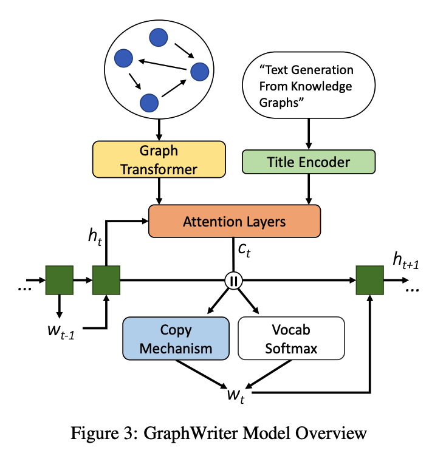 | The image features a diagram that appears to depict an overall graph theory and function. The main focus is on the "Title Encoder" that transforms a graph's properties into a text-based representation. The diagram is organized into different layers, indicating a step-by-step process.
There are multiple circles placed throughout the image, possibly representing central ideas or elements in the process. The combination of the diagram and its corresponding text appears to explain or visualize various aspects of writing. | The image features a flow chart or diagram representing a conceptual graph writing process with multiple overlapping circles. These circles or colored blobs are connected by arrows, which demonstrate the various stages of the graph writing process.
In the center of the image, there are three large circles, one on the left side, one in the middle, and one on the right side. These three circles appear to represent different aspects of the graph writing process. Surrounding these central circles are smaller, more numerous circles, each contributing to the bigger picture of the graph writing process as a whole. The arrows connecting these smaller circles gradually lead the viewer through each stage of the writing process. | The image presents a schematic diagram, which illustrates the graph translation process. This process takes a text file and translates it into a graph image. The purpose of this diagram is to provide an overview of the various components involved in this process.
The diagram is full of arrows and numbers, indicating different steps involved in the translation process. There are two main parts: the "Copy" component, which represents the act of copying a graph over various generations, and the "Copyw", "Copyh", and "Copyv" components, which are explained in the graph description. The graph thoroughly explains the illustration of tasks, transformers, attention layers, and various books.
The image showcases both the complexity and simplicity of the text generation process, featuring elements like attention layers, title encoders, graph transformers, and other components required for the optimal translation of text files into visual graphs. | The image depicts a graphic titled "Text Generator from Knowledge Graphs." The central focus of the image features a diagram with multiple layers of information. The diagram consists of numerous nodes or points, some connected with arrows. The nodes spread out across the image in various positions, creating a complex structure that may possess a graph or network-like quality. The presence of the "Graph Transformer" and "Title Encoder" adds more depth to the understanding of the given subject matter. | The image features a diagram illustrating a system, possibly related to the creation or use of graphic writing systems like ASCII art and Perl. The drawing shows a network of interconnected lines, representing different stages in the process of creating or integrating text in these systems.
Various components are labeled across the diagram, such as Linear Reader and Title Encoder, which could be essential components in the network. Overall, the image appears to depict an abstract and detailed representation of a text-related system. | The image features a graph that illustrates a text generator through a process of graph transformation. The graph is a complex structure with multiple colored nodes, suggesting different stages in the generation process. The nodes appear at various positions along the lines connecting dots, creating an intricate network.
The graph is made up of multiple clusters, with one cluster occupying most of the left side of the graph and another encompassing the central area. There are also several smaller clusters spread across the right side of the graph. This network of nodes and lines represents how the text generator processes knowledge and generates output from the input. | The image features a complex diagram illustrating the process of how written text can be generated using graphical and voice recognition elements. This technology enables a text-based graph to be created using the information gathered from the voice input or text input, such as the name of a person.
There are a few subcategories of speech input, labels, and rule templates, which interact with one another to generate the final result. Some of the terms used in this process include text generator, graph with title!, attention layers, and rules.
The diagram is separated into various sections, such as the upper right corner, the partition of titled graphs or "Title Encoder," and the "Speech Input" boxes located further down the diagram. Overall, the image offers a comprehensive overview of the intricate mechanisms that go into generating text based on voice or written input. | The image features a flowchart illustrating a process for computer font creation using attention layers, title encoding, and a title transformer. The steps are clearly identified with attention labels, which convey the importance of each stage in the overall process.
In the beginning, there is a circle labeled "applications" and an "eye" symbol, illustrating the initial aim to create a font that is accessible to users. Soon, the focus shifts to an orange and green square in the center, representing the title encoding. Numerous smaller circles branch out from this central square, highlighting the attention layers and the "title transformer."
Around this main orange and green square is an elaborate network of strings and interconnected circles, representing the intricate nature of the graphic and its use of attention layers in the creative process. | The image is an infographic depicting the components of a graph writer system, likely related to the book "Text Generation from Graphs." There are several illustrations of interconnected circuits and boxes, some of which may represent different parts of the system. A two-circle chart is shown towards the top left of the image, and two large blue circles can be seen in the lower middle portion, likely illustrating important features of this document.
Overall, this infographic aims to provide a visual representation of the structure and components involved in the graph writer system. | The image illustrates a visualization of a text-generation process that utilizes Graph Writer and different layers for attention. The figure consists of a circle that has various concentric circles within it, representing each individual layer. The function of these layers are explained through labels placed around the circle.
There are three text boxes spread across the underlaying layers: one near the top center, one at the lower left, and one at the lower right. Each text box appears to be related to the graph model development, possibly describing different components of the model. The detailed illustration provides a clear understanding of the internal configuration within this intricate graph model. | The image depicts a female comedian, drawing the viewer's attention with her microphone in hand. The setting appears to be a stage or an auditorium, emphasizing that she is the main focus of the scene. There is a book placed in front of her, possibly containing the content of her speech or act. The presence of the microphone implies that she is involved in her routine, using the book to guide her performance. The reason behind focusing on her is highlighted in the title, "A comedian holding a microphone is the main focus of the image." |
| The image depicts a wedding ceremony taking place outdoors. A bride and groom are standing together under the outdoor sky, with the bride wearing a white dress and a bouquet, while the groom is adorned in a suit and a tie. They stand in front of an officiant, an important guest in the wedding celebration. Many other guests have surrounded the scene, watching the couple exchange vows.
A couple of chairs are placed in the scene as well, possibly for the crowd to sit and enjoy the event. One chair is closer to the left side of the image and the other is positioned more towards the right side. The guests seem to be enjoying the special occasion, witnessing and participating in the beautiful exchange taking place between the bride and groom. | The image captures a wedding scene where the happy couple has just left their reception area to be placed in their limousine. The man can be seen standing to the left side of the woman. The newlyweds are posing for pictures with several friends, family members, and wedding guests attending the celebration.
A few friends can be spotted standing in various positions in the background, some closer to the couple and others further away. A couple of chairs are also visible in the scene, one on the right side of the image and the other in the middle of the scene.
In the picture, one can notice a tie worn by a guest, perhaps as a part of their wedding outfit or as a subtle reminder of the special day. | The image captures a fun and lovely wedding ceremony, with a bride, groom, and wedding party gathered in a large garden. The bride stands between the groom and the other members of the wedding party, dressed in a spectacular white wedding gown.
In the scene, there are several chairs placed throughout the area, probably for the guests to rest or sit. A few people wearing ties are also scattered around the garden. Overall, the atmosphere seems joyous, and the day is perfect for such a beautiful occasion. | The image features a garden setting with a crowd of people lined up and gathered around a married couple. There is a stunning white bride, wearing a wedding dress, standing next to her groom. They appear to be the center of attention, with everyone in the vicinity listening to the upcoming ceremony.
In this picturesque scene, several chairs are scattered around the area, likely for the guests. Potted plants are placed at various locations, adding an element of greenery to the garden. Some people are standing nearby, with some closer to the couple on the left while others are closer to the couple on the right. Among the attendees, a handbag is visible near one of the guests, further personalizing the atmosphere of the event. | The image depicts a beautiful bride walking down an aisle in front of her groom, who is standing close by on the brick walkway in the center of the scene. They are walking by each other, with the bride walking alone until she reconnects with her groom to cut into a small bridal cake placed to the side.
A group of people is gathered around, watching the bride and groom, and some chairs can be spotted spread out in the area. There is a large wedding bouquet on the ground near the bride, serving as an elegant decoration for the special occasion. It seems like an elegant wedding ceremony, with friends and family saying their goodbyes and watching the newly married couple celebrate their marriage. | The image captures a beautiful outdoor wedding, with a group of people gathered for the ceremony. A bride and groom, dressed as wedding party members, can be seen walking down the aisle to the cheering crowd. In total, there are nine people visible in the scene, including the bride and groom.
Two of the guests are visibly clapping, probably celebrating the special occasion. A potted plant can be spotted on the side, adding a touch of decoration to the event. A chair is also positioned near the edge of the scene, ready for use during the wedding reception.
Other items such as a handbag and two ties signify accessories for guests' outfits. Overall, the atmosphere appears to be joyful and celebratory at this charming wedding ceremony. | The image features a newly married couple walking down a brick path as they stand next to each other. They are the center of attention, and several other people surround them on either side, smiling and well-dressed, showcasing their nice clothes.
There are multiple chairs set up in a row, appearing for a larger gathering. The couple can even be seen walking past a potted plant, adding a thoughtful and elegant touch to the setting. The beautiful bride with her elegant train, indicates that this is a wedding celebration. | The image shows a group of people standing on a brick walkway, with two people in the center of attention. The man on the left is a priest, and he is standing next to a woman, possibly a bride and groom, who are looking back at the priest. They could be experiencing a celebration, such as a church wedding.
There are several other people surrounding them, some in the background and others in the foreground, suggesting a gathering with friends or family. A couple of neatly arranged chairs can be seen in the scene, one closer to the group and another further away. The gathering has its own unique atmosphere, and the crowd appears to be paying close attention to their message from the priest. | The image features a wedding scene with a bride and groom walking towards each other, surrounded by multiple white chairs arranged to the side. The bride is positioned to the left, while the groom walks towards her on the right. Both individuals are wearing formal attire, with the groom dressed in a suit.
Around the couple and the chairs, a number of personal items can be found, such as backpacks and two teddy bears, which may serve decorative or sentimental purposes. A tie is hanging on one of the chairs.
The scene also includes several other people, possibly attendees, with a few standing to the side, and others, particularly at the back of the scene, seeming to be standing or seated further away. Overall, the atmosphere appears festive and celebratory. | The image depicts a beautiful outdoor scene featuring a tranquil garden setting. There is a bride and groom walking in front of a set of chairs, possibly on their wedding day. The bride is located on the left side of the chairs, while the groom stands higher up, closer to the rear of the chairs.
There are numerous guests positioned around the scene, some of whom you can't see perfectly due to the focus on the bride and groom. The guests are walking behind the couple, all dressed up for the celebration. They appear to be either standing or walking near the chairs that are lined up in the garden, adding to the feeling of ceremony and celebration. | The image depicts a picturesque outdoor scene, with a honey-moon couple pulling away from a beautiful flower arch with unity lights. Two members of the couple have elegant black ties, signifying that they are groom and bride. Many beautiful flowers line the couple's path, adding a romantic touch to the scene.
A group of people, including parents and more individuals, have gathered in the area, likely watching the newly married couple. Keen observers can be seen near the arch and behind the couple. Several chairs and backpacks are present in the scene, adding more interest to the wedding setting. |
 | The scene is a picture of a little girl in a white dress, engaging with a batch of colorful eggs scattered across the ground. The girl seems to be picking up the eggs or looking intently at them. The eggs come in different colors, with some green, pink, blue, and yellow varieties present throughout the scene. The setting is outdoors, with the girl in the midst of the attentive yard full of eggs. | The image features a lush green field with a child picking up eggs as if playing. The child seems to be enjoying the task of gathering the eggs from the grass, which appear to be decorative in nature. There are numerous eggs of different colors spread across the field, making the scene even more visually appealing. Some of the eggs are located closer to the child, while others are placed further away from them, adding variety to the scene. | The image features an older woman standing in a field, her left hand positioned to pick up a small colorful egg from the ground. She is reaching out to the grassy area where numerous colorful eggs are scattered about, all with varying shades and sizes. In total, there are 14 eggs visible in the scene, dispersed on the ground around the woman.
The scene captures a moment of the woman actively engaging with the egg-filled field, giving off a peaceful and serene vibe. | The image captures a young child picking up Easter eggs from the grass. There are numerous eggs scattered throughout the scene, indicating the abundance of Easter eggs for the child to gather. The child's hands can easily be seen participating in this fun activity, adding to the joyful feeling of the scene. | The image features a person's handpossibly a child'sreaching into a pile of eggs, which are in fact hardboiled Easter eggs. The individaul on the grass appears to be interacting with the colorful eggs. The scene takes place in a backyard or outdoor setting, rather than an indoor one. The eggs are scattered throughout the grass, with some closer to the person, while others are further away. The landscape seems inviting, providing a perfect place to hide Easter eggs and engage in the classic egg-seeking activity among children. | The image showcases a little girl preparing a little nest in the grass close to the ground with hands filled with colorful eggsspecifically, several eggs in shades of blue and green. The little girl appears to be arranging or decorating the eggs in an outdoor setting.
The scene has multiple small eggs, some scattered around the girl and others in close proximity to her. Additionally, there are a couple of chairs placed in the background of the image, which seem disconnected with the focus of the scene, possibly adding some depth to the setting. | The image shows a little girl picking up eggs outdoors. She is surrounded by a field covered with piles of colorful eggs. The little girl is bending down to reach the eggs, which are in a mixture of blue, red, and yellow tones. Some eggs are scattered on the ground, while others are clustered in groups.
There is also another person partially visible in the scene, slightly behind the little girl, possibly observing the gathering or assisting in the task. The outdoor setting creates a picturesque atmosphere for this joyful endeavor. | The image depicts a young girl or a small child playing with a large group of eggs sitting on a grass-covered patch. The child seems excited and is reaching to touch one of them. There are several eggs distributed in the grass, with some closer to the child and others farther away.
The scene appears to be set in an outdoor environment, possibly a yard, allowing the young child to have fun with the colorful eggs. | In the image, a young child in a white dress is reaching for the grass with their hand and grabbing two colorful eggs: one blue and one yellow. The child appears to be inside a field where there is a potted plant nearby, adding a garden feel to the setting. The scene seems to capture a thrilling moment of discovery as the child picks up the eggs. | The image features a person wearing a white top or dress, standing in a field with various Easter-themed items all around them. The field is full of colorful eggs, including hard boiled and dyed eggs, which are scattered across the scene. Some of these eggs are closer to the person while others are placed further away in different parts of the field. The overall atmosphere suggests a joyful Easter celebration or event in a serene outdoor setting. | The image features a little girl reaching for a small colored egg sitting on top of a grassy surface. There are several other small colored eggs scattered around the scene, with varying positions close to the ground. It appears that the girl is playing in the grass and gathering these miniature colored eggs. The scene has a relaxed and playful atmosphere, giving the impression of a fun time spent outdoors by the little girl. |
| The image showcases a family posing for a picture during Halloween. The group consists of four people, including three adults and one child, dressed up in costumes. The adults are wearing black clothing, with pointed ears, while the child appears to be a "real pumpkin." They are gathered around a pumpkin, possibly as a centerpiece for their photo, capturing their spooky and fun atmosphere during the Halloween celebration. | The image features a trio of three friends poised in a fun and festive lit room. Two of the friends are dressed up as witches, while the third friend appears to be a regular person. The group is posing with a couple of colorful pumpkins as props for the Halloween celebration.
In the background, there are a few decorations, some chairs protecting the room's seating area, and additional pumpkins scattered about the room. The scene elicits a feeling of festive mood and good times among the group of friends, enjoying the spooky atmosphere of the Halloween party. | The image showcases a group of three adults in a Halloween setting, posing together for a fun photo. They are wearing various costumes and have Halloween-related decorations in the background. In the scene, one of the individuals, presumably a man, is dressed as Dracula, while another adult is standing next to two children, who may be part of a bride and groom couple.
There appears to be a pumpkin in the background, further emphasizing the Halloween theme. The trio of adults and the two children seem to be enjoying themselves at this festive event. | The image depicts a group of teenagers wearing costumes, likely at a party. The children, two boys, and a girl, are all wearing witch and ghost costumes while standing together.
Each of the kids appears to be enjoying the celebration. They are looking at the camera with smiles on their faces, ready to have a great time. The atmosphere suggests that they might be posing for a fun, festive photo. | The image features a wizard and two witches standing together, engaging in a group hug. They are submerged in a bright light, suggesting it might be a Halloween celebration. There are three pumpkins, with one at the center of the scene, likely representing a visual theme or a part of the activities taking place.
There are also other people throughout the scene, one located in the left and one in the right corner. A tie can be seen on actor no. 3, another costume element for the celebration.
The various elements present in the image the wookie light, the decorations, and the costumed people create a lively Halloween atmosphere. | The image depicts a group of people standing in the center, with at least three dressed up for Halloween. One of them is a man holding a pumpkin, adding a festive touch to the atmosphere. These individuals seem to be enjoying a party or gathering during this special occasion.
In the scene, there's a car located further in the background and several decorations, including some pumpkins. The people around appear to be happy and engaged, likely socializing or participating in a common activity. | The image depicts four individuals attending a Halloween party. Two young adults are prominently featured, dressed up in costumes as a vampire and a witch. They are standing close to each other, possibly mingling with other partygoers. Spreading behind the couple is another person and, in the background, another individual can be seen further away from them as well.
They all surround a large pumpkin, which serves as a centerpiece, perfectly fitting the Halloween theme of the party. This festive scene conveys the essence of a fun and spooktacular celebration. | The scene presents three people standing together, and among them, there is a man and a woman, both dressed in Halloween costumes. One of the individuals is holding a pumpkin in their hands while another is pointing, adding to the festive atmosphere. They seem to be posing together for a picture and receiving attention through cell phone use by someone in the background.
On the right side of the scene, a woman in a wedding dress is also present, perhaps attending the same event or celebration. She is positioned in front of a potted plant, which highlights the indoor setting of the location. | The image presents a group of people attending a party with a Halloween decoration theme. Two young adults, a man and a woman, are posing at the party with a Jack-o-lantern and wearing long black coats, adding a sense of eeriness to the scene. In the background, several other people are spotted at the party, participating in the festivities.
The overall atmosphere of the image reflects a Halloween gathering with people enjoying themselves by wearing costumes and being part of the celebration. | In this scene, there is a man, a woman, and a child standing outdoors under the sky. They are all dressed up in dark attire, with the man wearing a top hat. The woman and the child appear to be enjoying themselves while laughing. They all seem to be holding pistols, and decorated pumpkins are visible in the scene, adding to the festive atmosphere.
The woman is standing closer to the left side of the picture, while the man is positioned more to the center, and the child is slightly off to the left from the man. Another person is present in the background, further to the left, but their figure is not as discernible. | The image features a group of people, including a man, a woman, and two kids, standing together and posing for a Halloween picture. They are all wearing costumes, and the group includes a person dressed as a pumpkin next to the couple and the children.
In the background, two pumpkins are visible, one towards the left side of the image and the other towards the lower-right corner. There is also a teddy bear positioned in the top-right part of the image, adding elements of fun to the Halloween party photo. |
 | The image captures an energetic race where several young women are running down the street, leaving their dripping footprints on the ground as they compete. The athletic females are scattered across the scene, displaying various attire often worn during marathons. Some runners are close to the camera, while others are in the background, emphasizing the diverse participants present in the race.
The atmosphere seems vibrant and contagious, encouraging the crowd to cheer for the runners and give them the energy needed to finish the race. The presence of numerous spectators and fellow runners adds to the excitement of the event, making it an enjoyable experience for everyone involved. | The scene depicts a large group of women participating in a race or marathon on the street. The women are running in different positions, some closer to the camera, while others are further back in the frame. Various people seem to be spectators, standing along the side of the street as the athletes run by.
A few bottles can also be noticed resting on the ground during the event. Some sports bars are displayed in the background, possibly providing refreshments for the participants and spectators. The atmosphere appears energetic and vibrant, as everyone is engaged in the exciting event. | The image captures a lively scene of a mixed-gender smoker's relay race being run on a city street. The streets are crowded with several runners participating in the race, which is taking place between semaphore poles. A total of fifteen people can be seen between the poles, actively engaging in the competition.
Most of the runners are dressed in running outfits suitable for the event. A couple of water bottles are also spotted along the way, providing refreshment for the participants. This energetic scene depicts the enthusiasm and determination of the runners as they compete in the race. | The image depicts a large group of women wearing athletic gear and running shoes participating in a group run or marathon. The participants are spread out along a path, showcasing various positions and stages in the event.
In total, there are around 15 women, each equipped with running shoes on their feet, carrying water bottles to keep up their energy level during the race. Some of them can be seen filling water bottles at the front of the pack while they run.
The scene captures the essence of teamwork and determination as the group of women heads towards their goal. The presence of multiple water bottles and athletic apparel provide clear indications of a sports competition. | The image depicts a large group of women participating in a teal and blue shirt 10K race. They are all wearing headbands and shirts of various colors, indicating their teams. The women spread out as they run down a city street.
There are multiple people scattered across the scene, with some closer to the left side of the image and others towards the right. A few more people are farther back and off to the side. Numerous bags are also visible near the racers, likely containing belongings such as water bottles or energy bar wrappers. | The image portrays a scene of a group of women running down a street or road in what appears to be a marathon or relay race. They are running in a group, with some close together and others slightly apart but still in close proximity due to the dynamic nature of the activity.
In addition to the people participating in the race, there are a few spectators scattered along the street - some standing in the background, while others are more prominent closer to the front. Overall, the image captures the energy and excitement of the athletes and the audience involved in the event. | In this scene, a large group of women can be seen racing in a marathon. The women are spread out across the image, some positioned further back and others in front or in the center. Many of them are wearing shorts while running, emphasizing that it might be a hot race.
The runners are holding water bottles and sports bracelets to ensure they keep going during the competition. Throughout the marathon, spectators can be seen watching from various positions around the course. There are a total of 16 water bottles and 7 sports bracelets visible, indicating the high level of organization and the support from the participants and spectators. | The image displays a large group of athletes of various ages and descriptions, all of them wearing numbers and running in a race. The participants have started at the same time and are maintaining close proximity to one another as they run down the street together. There are people of different heights and various distances making up the elongated group.
Most of the athletes are running in the same direction, with individuals positioned both in the front and back of the group as they compete. The event appears to be an organized footrace, and the spectators watching the competition come together to enjoy the exciting atmosphere. | The image captures a group of women running across a city street in a marathon. They are all wearing uniforms that identify them as part of the marathon event. The wide-ranging view shows the runners running parallel to the street, creating an impression of unity as they communally participate in the race.
There are numerous individuals in the scene, some closer to the foreground, and others further in the background. A car can be seen parked on the side of the street while the runners stream by. A handbag is also visible on the street, possibly belonging to one of the runners or spectators. | In the image, a crowd of people is walking down the street as runners participating in a marathon. They appear to be running a race or even a half marathon. The group of people consists of both men and women, and they are wearing sports and casual clothes appropriate for the event.
The runners are accompanied by a good amount of fans, who are cheerleading and supporting them from the sidelines. Fans are spread along the sidewalks, some holding signs and displaying their enthusiasm. In addition to the overall excitement, there are also a few bird-eye views of the sky flying above the crowd, and a small white bird can be seen in the scene as well. | The image captures a lively scene of a large crowd of people gathered for a live race. The crowd consists of at least 14 people in various positions, actively participating in the race. They are wearing shorts and sports attire, demonstrating their enthusiasm for the event.
Interestingly, there is also a handbag placed near the left side of the scene. This suggests that the event might attract spectators who have brought personal items with them. |
 | The image depicts a group of people gathered in a living room, having fun and enjoying each other's company. A man wearing a knit, stocking cap and Santa hat is holding a Christmas decoration for a woman to see, while others in the room are smiling and engaging in conversations.
There is furniture in the background, including a couch where the family is sitting and an orange chair. A window can be seen in the room, offering a view of the outside. Various wine glasses can be found within the scene, suggesting a celebration or a gathering among friends or family.
A cup and a clock can be seen on a surface in the room, adding to the cozy atmosphere of the living space during the holiday season. | The image depicts a heartwarming moment as a family gathers around a Christmas tree with Santa hats on, enjoying the holiday festivities. There are six individuals in the scene, including parents and their children. The older man in the image is sitting in a chair near the center, surrounded by other family members smiling and laughing as they share this special time together.
A Santa hat can be seen lying on the floor in the middle of the group, where it might be placed by one of the family members. The captivating scene evokes a sense of warmth and togetherness, showcasing the spirit of Christmas and family traditions. | The image captures a festive scene with a group of people gathered around a beautifully decorated Christmas tree. The family is enjoying their time together, as one man is giving a gift to a woman. A little boy is present, smiling as he holds his family's hands. There are several people in the group, some of whom are wearing rein deer antlers, adding to the Christmas atmosphere.
Numerous decorations adorn the small tree, and there is a delightful combination of joyfulness and togetherness as the family shares this holiday moment. In the background of the scene, a backpack is visible, possibly belonging to one of the family members. | The image captures a family gathered in a living room, enjoying their time together during the holiday season. There are grown-ups and children engaging in various activities, contributing to a warm, festive atmosphere. The family members are all dressed in holiday clothing, with many individuals wearing Santa hats, adding to the cheerful vibe.
In the room, there are chairs placed around the space for comfort and conversation. The Christmas tree is located towards the right side of the room and serves as a visual centerpiece for the celebration. Additionally, there are books scattered around the room, suggesting that the family may engage in reading activities or share interesting stories during their gathering. | The image features a family gathered around a Christmas tree, smiling and celebrating the festive season. A father is holding a package next to a beautifully wrapped Christmas gift, while his family looks excitedly forward.
There are five people in total, all dressed in Christmas outfits, including capes or funneys. The youngest family member, a baby, is being held by a woman, who participates in the joyful moment. The Christmas decorations adorning the tree, along with the children present, further enhance the celebratory ambiance.
The family members are all sitting on a couch, while the baby is cradled by another woman. Their poses, attire, and overall atmosphere create a warm, joyful, and memorable festive moment. | A group of adults and children are gathered around a Christmas tree, enjoying the holiday season together. The family is opening presents under the tree, and there are several people smiling and expressing happiness as they unwrap their gifts. They are all happily gathered around the tree, giving a warm and cozy vibe to the scene.
There are unique costume-like hats or antlers on the heads of some family members, adding a fun and festive touch to the event. Several presents can be seen beneath the tree, showcasing the various gifts that have been exchanged. There are also a couple of books in the scene, possibly some of the gift items received. As the family stands next to the Christmas tree, the atmosphere conveys a sense of joy and bonding. | The image depicts a joyful gathering of a family at Christmas time. There are multiple people sitting in the living room around a lovely Christmas tree, smiling happily. In front of them, an antique teddy bear is the central attraction, and it appears as if they might be unwrapping it or admiring it as a thoughtful Christmas gift.
There are adults and children present in the scene, sharing the joy of the holiday season. The festive atmosphere and the presence of the beautiful stocking hat suggest that it's an occasion full of fun and togetherness. | The image depicts a family gathered around a Christmas tree in their living room. There are nine people visible in the scene, smiling and enjoying their time together. One person near the left side of the image is holding blue elf slippers, standing in front of the tree.
The family has decorated the Christmas tree with different ornaments and lights, making it the centerpiece of the living room. The people seem relaxed and joyful, creating a warm and festive atmosphere. | The image features a happy family gathered around a feast-decorated Christmas tree. In total, there are seven people present, enjoying each other's company. Among them, an older man can be seen sitting on a couch, holding a blue object, which seems to be a present. Everyone in the group is posing and smiling for the camera, making it a perfect holiday celebration.
Numerous presents are scattered around, adding excitement to the festivities. A couple of people in the scene are wearing festive Hanukkah hats, and a bottle is also visible towards the right end of the scene, likely provided as refreshments for the occasion. | The image shows a lush dinner table fully decorated for Christmas. A large, colorful Christmas tree adorns the background, with fake Christmas reindeer heads placed around the room, adding to the festive atmosphere. The gathering features a family, consisting of adults and children, all sitting down to enjoy the festive meal.
In the center of the scene, a man is sitting and smiling as he unwraps an ornament, possibly a heiszu or a bow tie. The environment appears to be filled with warmth and joy during the holiday season. Another festive touch in the dining area is a teddy bear sitting on one of the couches, further creating a cozy and cheerful ambiance. | The image features a group of people standing near a Christmas tree at a holiday party. One person in a red shirt is holding a grey-haired man as the family members, their heads adorned with festive toppers who appear to be enjoying their time together around the ornament-covered tree.
There are multiple chairs arranged around the room, one near the left side and three others placed along the right side, inviting guests to sit and relax. A dining table is also visible in the room, possibly where food and drinks were laid out to make the party a memorable experience. |
| 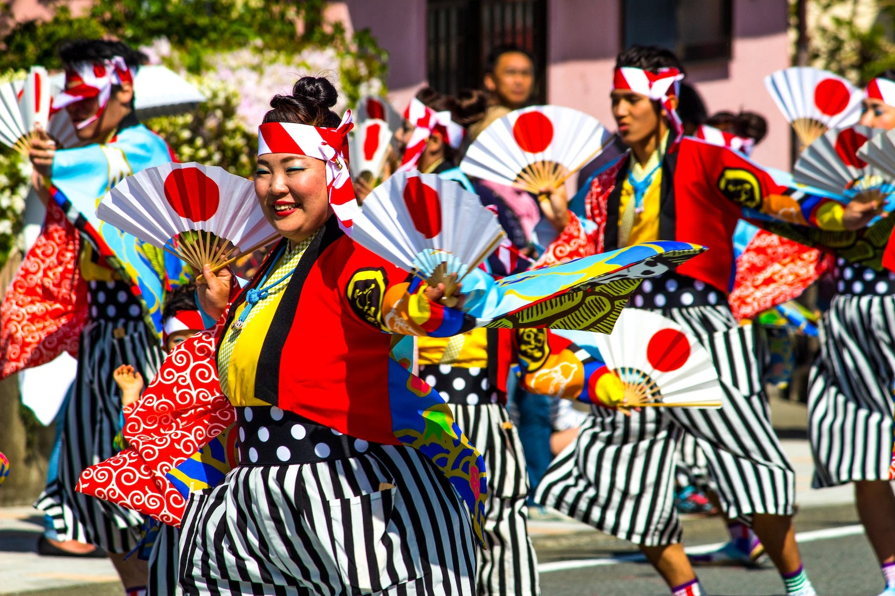 | The image depicts an Asian woman in traditional clothing dancing outside, holding a colorful fan above her head. She is surrounded by a group of other people who are also engaged in dancing. The group consists of individuals at various positions, all moving in unison as they perform their dances. The scene appears to be celebratory, with the woman nearly naked suggesting she is the center of attention.
There are numerous splotches and dots in the scenery, possibly indicating the presence of more dancing participants. The Asian style fan she is holding pops against the backdrop of her clothing and dance choreography, enhancing the overall visual appeal of the scene. | The image showcases a group of adult people dressed in traditional cultural attire, performing a Japanese dance together. They are holding decorative Asian fans in their hands while participating in this bamboo dance. All dancers are guiding their fans to demonstrate their coordination and excitement.
In the scene, there are at least twelve people, some standing close to each other, while others are more spread out. They all appear to be engaged in the passion-filled performance, capturing the beauty of the cultural dance. | The image shows a group of people performing a traditional dance routine outdoors. The dancers, dressed in vibrant outfits and traditional garb, are moving in unison as one person holds an umbrella to accompany their performance. Altogether, there are ten people in the image, each exhibiting their unique dance form and stance.
The outfits appear to be of Asian style, which further emphasizes the cultural nature of the performance. The choreography, with the inclusion of the fan, adds to the overall sense of artistry and heritage of the dance. The presence of these dancers showcases the beauty and cultural significance of these traditional performances. | The scene captures a group of colorfully dressed women performing a Japanese dance while holding large, umbrella-like fans. The lady dancers wear vibrant outfits with pops of pink and white, showcasing their cultural attire.
There are multiple umbrellas or fan-like props in the scene, creating an atmosphere of a Japanese parade or performance. The women are arranged in an arc on the street, with some in the forefront and others in the background.
Among the performers, there are also some people seated in the foreground, likely experiencing the spectacle or providing support. Overall, the image depicts a lively cultural celebration with dance, costumes, and beautiful bamboo fans on full display. | The image captures a group of people, primarily women, dancing enthusiastically on the street. They are wearing vibrant traditional costumes, and the act seems to be a cheerful parade. Many of the dancers are carrying folding umbrellas or fans, adding to the festive atmosphere.
There are at least eight people actively participating in the dance, spread out across the street. They appear to be of Asian origin, and some are also wearing ties in their outfits. The dance performs, and they continue their lively tribute to the occasion, creating an engaging scene for passersby and onlookers to enjoy. | The image showcases a group of people, mainly women, participating in an Asian folk dance in a city. They are standing on a road, facing each other and performing the dance side by side. The dancers are adorned in costumes, with fans and scarves in their hands that contribute to the festive ambiance.
Numerous umbrellas are being used by the dancers, adding vibrant colors to the scene. There is a mix of umbrellas held by the lesser number of dancers.
Strips and circles of lights illuminate the area, helping to create a lively atmosphere perfect for a parade. A car and a couple of handbags are also present in the scene, indicating that it could be a planned city event. People are enjoying and engaging with this cultural display of art and community. | The image features a small group of Asian dancers, many of them wearing elaborate costumes resembling geishas. There are at least twelve people in the group performing together. They are dressed in red, white, and black attire, with several of them holding large red fans as they dance. The scene captures a celebratory and lively atmosphere, as the dancers engage in their performance. | The image features a group of people dressed in traditional costumes, wearing cheerleading skirts, dancing in a lively and celebratory fashion. They are enjoying themselves as they perform various motions and movements.
In total, there are 11 people visible in the scene, with some individuals dancing close to each other and others spaced out a bit more. Some dancers are located towards the center of the image, while others can be found more towards the edges of the frame. A few dancers are closely grouped together on the right side, possibly in a tighter formation. The scene appears to capture a spirited and vibrant moment among the performers, with close to 50% of the group located in the upper half of the image. | The image captures a lively street scene with a group of smiling people walking around with umbrellas. There is an Asian woman at the center of the group, who appears to be using her umbrella as a prop while dancing, possibly as part of a cultural event or ceremony. Another notable person in the image loses their umbrella at the lower part of the scene, which creates a playful and lighthearted atmosphere.
A few other individuals can be seen crossing the street throughout the scene, adding to the bustling nature of the scene. The overall visual appearance indicates that it might be a celebration, with people engaging in fun activities or activities supporting cultural and traditional events. | The image features a group of nine people gathered together, performing an exciting dance in an outdoor setting using fans. They are wearing various styles of clothing to match the theme of the performance. The performers are standing close to each other, showcasing their skills and creating an orderly formation with the help of the wu fan, a traditional Asian fan designed to help maintain balance and showcase fluid movements.
The spectators in the image are also engaged in the performance, watching the dancers with enthusiasm and admiration, appreciating their efforts and the cultural significance of their performance. | The image captures a moment of an old-fashioned street performance, with multiple people dressed in traditional and vibrant costumes and wearing distinctive red fans. They appear to be performing their act in a public space, possibly on a street or in an outdoor venue.
In total, there are twelve individuals in the image, with some of them wearing more colorful fans and acrobatic clothing. The performers are dispersed throughout the scene, with some closer to the foreground and others nearer to the background. The scene showcases the talent and energy that these performers bring to their entertaining performance. |
 | The image features a group of children posing for a picture at a birthday party. They are all seated around a dining table that is adorned with various items. A cake is placed in the center of the table, and several oranges are scattered around the table as well.
Each child has two balloons on their head - one in front and another in the back - creating a festive atmosphere. Pair of scissors can be seen near the cake, likely for cutting it at the appropriate moment. Combined, the scene is a joyful and celebratory moment for the kids and their parents. | The scene depicts a family celebrating a baby's birthday with a table filled with various themed decorations. The table is set for a meal, featuring a cake placed in the center, surrounded by plates, forks, and spoons. Chairs are placed around the table, ready for the family members.
The children are wearing party hats, while the rest of the family seems to be enjoying the celebration. In the background, there is a kitchen area, including an oven, and potted plants adding some greenery to the space. A clock can also be seen hanging on the wall.
In the foreground, six people can be identified, dressed up for the occasion, holding hands together as they come together for a memorable family photo. | The image features a group of children happily gathered around a cake, celebrating a birthday party. There are six children visible in the picture, smiling and holding birthday party hats on their heads. The cake is placed in the center of the dining table, which spans the width of the image.
Several cups and a bowl can be seen on the table, ready to be used by the guests for drinks or snacks. The children are seated on chairs that are placed around the dining table.
In addition to the children and the cake, a few potted plants can be found in the background, adding a touch of greenery to the atmosphere. A dog can also be spotted in the scene, accompanying the children and welcoming the party. The image captures the joyous moment of these young celebrities, surrounded by party decorations and setting a festive mood. | The image features a group of children gathered around a dining table, which is covered in birthday treats and decorations. The kids are wearing party hats, likely celebrating a special occasion. They are standing around and smiling at the camera, enjoying their time together.
The table is filled with a variety of birthday candies, oranges, and cakes, along with several cups and plates for the guests. A potted plant is situated near the table, adding an element of greenery to the setting. Chairs can be seen arranged around the table for the children to sit upon while sharing the delicious appetizers. | The image portrays a lively children's birthday party with kids gathered around a round dining table. The table is adorned with colorful streamers and filled with an assortment of food and beverages. There are numerous cups scattered on the table in different positions, each containing beverages for guests to enjoy.
An assortment of cutlery, such as forks and knives, is also visible on the table for use during the event. Cake and candles create a festive atmosphere, indicating that this celebration is in progress. A total of eight people, mostly children, are in the scene, with some standing around the table and others standing at different parts of the table.
These enthusiastic partygoers create a joyful and vibrant setting for the birthday party. | The image captures a happy moment of a group of five children, dressed in birthday attire, sitting around and enjoying festive treats. All group members are wearing party hats and have balloons tied to their heads, making it a memorable birthday celebration.
The children are gathered around a dining table with an array of birthday cake and cupcakes as well as orange juice to drink. The table is set with various utensils such as forks, knives, and spoons, arranged beside the cake and cups. The scene is set in a cozy and celebratory atmosphere. | The image contains a group of young children standing around a dining table. They are all dressed up and wearing party hats for a festive occasion. The children appear to be having a great time, enjoying the celebration.
There are five children visible in the scene, placed around the table, engaging with each other. In front of them, there is a white dining table with various items on it, including cups, a cake, and a knife. A potted plant is situated in the background of the scene, adding more to the festive atmosphere. | The image portrays a vibrant scene of a group of children, specifically boys, celebrating their birthdays. They are gathered around a dining table filled with various birthday cakes and other party stuff. The table is adorned with sugar decorations on top of multiple cakes placed at different positions on the table.
In addition to the cakes, there are several cups and fork sets on the table, suggesting a festive atmosphere. A potted plant can be seen in the background, providing a decorative touch to the setting. The children are visibly enjoying the celebration and posing happily for the camera. | The image depicts a lively scene in a home where a group of children, consisting of both boys and girls, is gathered closely together around a dining table. They are all dressed in their party hats, fully engaged in enjoying life's small pleasures. The table is set with a cake, several cups, and a fork.
On the table, there is an assortment of party decorations such as balloons and a vase that is visible at one end of the table. The children appear to be partaking in a birthday party, as their excited expressions are the perfect representation of a joyful celebration. The children are all seated around the table, enjoying each other's company and sharing the festivities. | The image showcases a group of children gathered around a dining table, seemingly celebrating a birthday. These children are wearing party hats and enjoying the festivities, likely posing for a moment before gathering to blow out the candles on their colorful candle cake.
The table is dressed up, with various items placed on it, including forks, a knife, a bowl, and multiple cups. Among the cups, there are at least two bottles on the table, likely for the children to enjoy beverages during the celebration. The festive setting portrays a child-friendly atmosphere, where young kids can immerse themselves in the joy of their special day. | The image displays a group of children playing an outdoor game in a room. They seem to be celebrating something special, possibly a birthday party or a milestone. The children are standing around a white dining table, which occupies the center of the room, surrounded by multiple chairs.
As a detail, there are two orange balloons in the room, perhaps serving as part of the party decorations. The room is adorned with plants on some corners, giving the space an inviting atmosphere. The children are engaged in the game, enjoying their time together and creating lasting memories. |
 | The scene depicts a large crowd of fans attending a soccer game in a stadium. The spectators are seated on various stands around the field, watching a match in progress. Among the fans, there is someone with empty hands raised, making a cheerful gesture. Several lively game moments can be seen, which may include fireworks, as many eyes are focused on the action. In addition to the excited spectators, the atmosphere at the stadium appears to be vibrant and engaging.
Some objects in the stadium include a chair positioned at the stadium's entrance and multiple bottles scattered throughout, possibly containing refreshments for the fans in the stands. | The image depicts a group of people, including children, gathering and sitting in the stands of an outdoor stadium for a sports event, such as a soccer game. They are watching a big match featuring soccer starring at least 11 players, including one closer to the left side of the field and others scattered across the rest.
The excited crowd of people can be seen sitting in rows, all displaying a mix of enthusiasm and anticipation for the game. Some are holding up traditional sports-themed items like umbrellas to shield themselves from the sun while cheering for their favorite team or player. In addition to the main people in the stadium, there's a smaller group of fans off to the side, mostly on the right, perhaps cheering and taking a supporting role in the event. Overall, the scene is full of excitement as everyone comes together to enjoy the game. | The image portrays a soccer stadium filled with an enthusiastic crowd of fans dressed in red, standing in the bleachers and watching the game with excitement. Various fans can be seen in different parts of the stadium, each of them holding their hands up in celebration as they enjoy the soccer game.
In total, there are 14 people in the scene. The stadium occupies the majority of the image, with the assortment of fans covering nearly the entire frame, from the left side to the right edge near the top. The spectators' emotions are piqued as they cheer until they bust through the stadium seating area. | The image showcases a soccer game taking place in a full stadium, attracting a large crowd of people eagerly watching the match. The stadium is completely full of spectators, with fans holding up their hands and clapping while the players engage in action on the field. In total, there are 14 people visible in the image, watching the game and cheering for their favorite team.
The excitement of the crowd is further amplified by the illuminated stadium lights that highlight the match being watched, and the bursts of fireworks overhead that create a celebratory atmosphere. | The scene depicts an exhilarating sporting event, featuring soccer players on the field and a large crowd cheering from the stands of a stadium. The spectators dance and cheer the soccer players as they compete, creating a lively and exciting atmosphere in the stadium.
Numerous spectators are visible across the venue, displaying enthusiasm and impressed by the events. In the foreground, an arm wave can be seen enthusiastically as part of the excited crowds, while in the background, soccer players continue to showcase their skills. The entire stadium seems to be an amusement park replica, adding an artistic and unique touch to the scene. | The image captures a group of fans attending a soccer game, standing on the bleachers and cheering their team. They are all enthusiastically supporting their team, waving their arms and displaying the soccer ball logo on their shirts. In the background, there is a lively atmosphere near a football pitch.
With a total of 14 people present in the image, the fans are spread out across the bleachers, some standing closer to the edge while others are situated further in the background. There are two clocks visible in the scene, one on the left side and the other closer to the center of the image. | The image is a photo taken from above, looking down into a baseball stadium filled with fans. The stadium is packed with spectators as they enjoy the thrilling game unfolding below. Numerous people are clapping and excitedly cheering on their favorite team. The crowd is dispersed throughout the stadium, creating a lively atmosphere. Some attendees are seated, while others stand and watch intently as the event unfolds.
With a large group of people gathered together, it is evident that this is a significant and engaging sporting event for everyone present. | The image captures a lively outdoor scene at a soccer stadium on a sunny day. A large crowd of people can be seen surrounding the soccer field, excitedly watching a game in progress.
In total, there are 17 individuals in the image, positioned at various spots around the stadium, either players or spectators. One notable person is holding up a hand, possibly trying to catch the eye of someone on the field. The atmosphere at this sport event appears vibrant, and everyone present seems to be fully invested in the ongoing match. | The image depicts numerous crazed fans in a large stadium, cheering wildly for a soccer game. The fans are standing, clapping, and raising their arms in a display of enthusiasm as they watch the game. Multiple TV screens are displayed throughout the stadium, allowing fans to view the action on the field.
In total, there are 12 people visible in the crowd, varying in position from the center of the field to the edges of the scene. Another TV screen is seen in the top of the stadium, covering almost the entire height of the scene.
A handbag can also be seen resting on a surface in the scene, possibly belonging to one of the fans enjoying the game. | The image depicts a crowded football stadium where a large group of fans has gathered to watch a soccer match. The fans are enthusiastically cheering for their favorite team with their hands raised in the air as a display of excitement. There are at least thirteen people joining in the cheer, spread all around the stadium, from the seats above and behind the field to those standing below the stadium's sign.
A person in the audience appears to be holding a cell phone and capturing the moment or sharing the excitement with friends or family. The stadium itself is adorned with four distinct billboards capturing the attention of the crowd. The atmosphere seems energetic and positive, with everyone eagerly awaiting the outcome of the game. | The image showcases a large group of people gathered in a park, enjoying an exciting event happening on the field. It could be a soccer game or another type of tournament as a pyramid of smoke rises from the field. The stadium seats are full, with eager spectators watching the event.
The spectators are not only standing but are also engaged in cheerful gestures, such as raising their hands and forming a large hand clap. A clock can be seen mounted on the stadium wall, allowing all attendees to keep track of the time. Overall, it is an intense and lively scene that captures the excitement and passion of the event in progress. |
 | The image shows a group of people gathered on a tennis court to enjoy a friendly game of doubles tennis. The tennis player who is standing in the center of the court is holding a racquet, just preparing to hit a tennis ball that is halfway to the court.
There is a total of nine people in the scene, with some players holding racquets and others standing around the court as spectators. In addition to the tennis balls scattered on the court, there are multiple sports balls scattered around, possibly for warm-up or drills.
The court features chairs placed at the intersection of the court lines, likely for players to rest during breaks. A backpack lies close to the spectator area, possibly containing the players' belongings or some extra equipment. | The image features an outdoor tennis court where several men are playing a match while sitting on the sidelines. The players are wearing colorful sports clothes and are actively engaged in the game. There are multiple sports balls scattered across the court, with some on the ground and others moving with the players.
Onlookers are watching the game from a safe distance, with some sitting in chairs near the sidelines and others standing at various positions around the court. The arrangement creates a lively atmosphere, showcasing the popularity of tennis in this location. | The image captures a lively doubles tennis match in progress on a brightly lit blue surface court with multiple tennis players in action. Two tennis rackets can be seen, one held by a player standing closer to the camera in the left-middle part of the court and the other racket held by a player toward the right side of the court.
There is a total of twelve tennis balls spread across the court, indicating an active game. Numerous people are present in the scene, either participating in the match or watching it intently from the sidelines. Some of the spectators stand close to the players, while others are situated towards the back and sides of the court. | The image is of a crowded small tennis court where a tennis game is taking place. Two men are playing tennis on the court, actively engrossed in the game. Several tennis balls can be seen scattered across the court, and two rackets are visible being used by the players.
A considerable number of people have gathered around the court to watch the ongoing match, with at least twelve of them standing at various locations around the perimeter of the court. Some spectators are closely observing the game, while others are more casually watching from a distance.
There is a bench situated in the far left corner of the court, providing seating for those observing the action. Additionally, two backpacks can be spotted at the player's side on the tennis court, likely containing personal belongings. | The image captures a tennis class at an outdoor tennis court, where multiple people are present and engaged in the lesson. The scene features men and women, some holding tennis rackets while they take part in the game. In total, there are seven people, wearing shirts and enjoying the sport together.
There are a few tennis rackets visible on the court, with one in the center, another towards the right side, and one more on the left side. Additionally, there are multiple tennis balls scattered around the court, with one near the center, two others on the right side, another on the left side, and the last one further back. A backpack is located on the ground, close to the center-left of the court. A chair is also present off to the left side of the court. | The scene features a tennis court with a group of four men playing a friendly match. They are positioned on all sides of the court, with two of them towards the left side, one towards the right side, and the other close to the center. While playing, some of the men are also holding tennis rackets.
The tennis court is filled with various tennis balls scattered throughout the area. There are numerous sports balls on the court - some near the players and some placed in different spots. The intense sport watching contributes to making the atmosphere unique and lively, as members of the public stand close to the court, attentively observing the activities unfold before them. | The image showcases a group of tennis players practicing on a tennis court. There are multiple people participating in the match, with some players in action and others playing from the sidelines or waiting their turn.
In total, there are seven people visible in the scene; some are interacting with each other, while others are focused on their game. Various tennis equipment can be seen, including multiple sports balls scattered throughout the court, and several tennis rackets in play. The setting appears to be a casual practice or informal match rather than a formal tournament. | The scene features a tennis court with several players engaged in a game. There are at least five tennis balls present in the air, with players actively hitting the balls back and forth during the match. The players are spread out across the court, some closer to the front, while others are further back, indicating that this scenario is likely a singles match.
An audience can be seen outside the tennis court, likely watching and supporting the players. The viewers are scattered across the area, some near the front while others are a bit further away. A total of eleven people can be spotted in the image, either as players or observers. One person has a tennis racket in their hand, ready to step up to bat during the match. | The image captures a lively tennis event with several players on the court, showcasing their skills and competing against each other. There is a mix of tennis players with differing skill levels, and some might be professionals. They are actively engaged in friendly matches or practice sessions.
The court is well-equipped with numerous sports balls, including tennis balls, placed in various positions around the court. Some tennis balls can be found close to the top of the court, while others are dispersed across the bottom half of the scene.
The players have arrived at the court with a variety of sports equipment, including backpacks to carry personal belongings and additional tennis balls. A couple of benches are also visible in the scene, in both the foreground and background, likely for players to rest or spectators to watch the game. | The image shows a blue tennis court, where a doubles match is being played. A group of three men can be seen on the court, with one of them preparing to serve. The court is equipped with two tennis rackets, with one racket being held by the man serving and the other racket placed nearby.
Several people are watching the match from the sidelines, some seated on a bench placed at the court's edge. There are a variety of sports ball, such as tennis balls and volleyballs, scattered around, with a total of five tennis balls and three volleyballs in the scene.
In addition to the players and spectators, there are also some backpacks and bags present in the area - one near the spectators' bench and one near the court. | The scene features a group of people walking across a tennis court holding sports balls. They are carrying tennis rackets and appear to be playing or practicing together. Several tennis balls can be spotted throughout the court, indicating that they are actively engaged in a game or taking a break from playing.
There are also benches positioned around the court, providing seating for onlookers or spectators. Some of the players are in the center of the court, some are closer to the edges, and a few are towards the outside of the court. A person is even holding a cell phone, possibly capturing a photograph or communicating with someone else. |
 | The image depicts a bustling farmers market with a colorful umbrella covering it. A big table is filled with an assortment of fresh vegetables. Several people are browsing and examining the produce, making decisions on what to purchase.
There are at least eleven individuals of various ages present in the market, either shopping or standing around with others. They can be seen standing close to the market area, walking and living nearby.
Several handbags are also visible within the market, potentially belonging to the shoppers. The atmosphere seems lively and active as people gather around to enjoy the variety of fresh vegetables on display. | The image depicts an outdoor farmer's find at a market or street market, displaying fresh fruits and vegetables for sale. Among the people looking at the produce, one man can be seen thumbing through something on his table, possibly showing interest or pointing at something. Another person is seen holding a cell phone, possibly capturing the moment with a photo or sharing information with others.
The crowd of people extends from the middle of the market to the periphery, with two bags visible in the scene. There are at least nine people in total, some closer to the foreground and others further in the background. The vegetables and fruits are spread across the tables, creating a vibrant and bustling atmosphere at this outdoor market. | At a street scene filled with people, there is a blue tent in the foreground where vegetables are being sold. A group of people, including a high school student wearing an anime t-shirt, are browsing through various vegetables under the tent. A young man within the group is giving a demonstration on how to handle and prepare vegetables in an evolutely orderly manner.
Multiple people are standing around the tent, possibly buying vegetables or learning from the demonstration. In the surrounding area, a chair can be seen near the right side of the scene. Notably, at the left edge of the image, there are bags being carried by some people. | The image depicts a bustling open-air market filled with people shopping and socializing. Several individuals, including a few visible in the top left of the scene, are seen walking around the marketplace. Some bystanders can be found near the open umbrellas, while others are scattered throughout the area.
The market is heavily focused on fresh produce, with a fresh variety of fruits and vegetables available for sale. A display of oranges can be seen, as well as various other produce props spread across the table. This vibrant market offers a lively atmosphere and showcases the importance of community gathering and engaging in outdoor activities. | The image depicts a lively scene outdoors with a group of people gathered around a makeshift market table selling fresh vegetables. There are five individuals positioned around the table, with their total count varying slightly based on the angle and what's visible in the frame.
The table is adorned with a variety of vegetables, consisting of multiple broccoli heads featured in the foreground. Some fruit, such as bananas, can also be seen on the table. One person is wearing a backpack near the left side of the scene, possibly carrying other supplies or personal belongings. In the background, a couple of traffic lights can be noticed, indicating that the market may be taking place in an urban or semi-urban environment. | In the scene, a group of people are gathered around a table filled with different types of food. They are discussing the items on the table, possibly at an outdoor market. The people vary in age and likely have different interests, like trying or learning about new dishes.
A person towards the left side of the image is wearing a blue denim jacket, drawing attention to their outfit. Additionally, there are multiple handbags scattered throughout the scene, likely belongings of the attendees. Some of the attendees have backpacks as well.
Overall, the atmosphere appears interactive and engaging, with people gathered around the table in a friendly manner, discussing and experiencing the various foods on display. | The image portrays a bustling farmers market filled with many people engaged in conversation and interacting with the fresh vegetables on display. There are at least 12 people visible in the scene, with some shopping for produce, while others appear to be socializing or simply wandering around the market.
Various pieces of chopped lettuce are arranged on the stand, which seems to be the main focus for customers. Several apples can also be seen spread across the market stand, adding to the vibrant mix of available produce. A handbag can be noticed near one of the participants in the scene, possibly belonging to one of the shoppers. | The image depicts a group of people gathered around a booth under a blue tent, specifically arranged for the sale of greens. The group consists of two women and four other individuals, engaged in conversation and interested in the vegetables on display.
There are numerous individuals in the scene, with a few of them standing closer to the left-middle side of the scene, while others are on the right-side, near the front or at the back. A couple of people can be seen at the edge of the scene.
Among the items laid out for sale, there are two pairs of scissors near the upper right side of the booth. The visible vegetables include broccoli, with one in the middle of the scene and two positioned closer to the right side. In addition to the vegetables and scissors, a handbag is visible on the far left side of the scene.
This scene captures a social event where individuals are gathered around a small produce stand, discussing their interests and interacting with each other. | The image shows an outdoor vegetable market where several people are gathered around. There is a prominent group of individuals standing in a white tent, examining different plants on display. Many people are holding bags, possibly for purchasing produce.
In total, there are at least 13 people visible in the scene, with some closer to the foreground and others further in the background. Some of them are also carrying shopping bags as they look through the offerings at the market.
Besides the main group of people and the tent, there are two handbags seen in the picture, possibly belonging to the attendees. The outdoor setting and the presence of multiple people paying attention to the plants at the market suggest an enjoyable and engaging environment where people can participate in farmers market activities. | The image depicts a lively street scene, bustling with activity. A group of people, including at least nine individuals focused around a dining table loaded with food, mostly consisting of fresh vegetables. Several individuals are discussing and sharing food samples, likely a variety of different greens, including lettuce and broccoli. The people are crowded around the table, intently evaluating the produce on display.
There are more people standing or walking in the background, contributing to the central urban setting. Several handbags can also be spotted within the scene as people carry their belongings, indicating it might be a busy downtown area. | The image displays an outdoor market bustling with several people gathered around a market table filled with various fruits and vegetables. The market stall is set up under a tent or shelter, creating a pleasant environment for shoppers.
There are two women prominently visible, one standing near the center of the scene, and the other closer to the right side. Several other customers can be seen around them, engaging in shopping or conversations.
The market stand has multiple items on display, including several apples scattered throughout the stand. In addition, there is a knife positioned towards the left side of the table. One person in the scene is carrying a handbag towards the left side of the image.
Overall, the scene emphasizes a lively outdoor market atmosphere with customers lingering around the vegetable and fruit stand. |
 | The image features an orange and red tote bag with various designs on it. The tote is placed on a pier with a knitted item, which appears to be a sweater or scarf wrapped around it. The bag is also covered by a colorful scarf, adding to its eye-catching appearance. The combination of the delicate knitted item and the vibrant colors of the tote and scarf creates a visually appealing scene in this picturesque setting. | The image features a plaid napkin or cloth tied around a wooden box or red container with an additional cloth draped over the top of it. The box has handles, making it easier to carry. Surrounding the container, there are three handbags placed in various positions, with one on the left side, another on the right side, and a third closer to the center.
In addition to the handbags, a tie can be seen in the background, closer to the edge of the image on the right side. The combination of the handbags, the box, and the floral cloth creates an interesting and visually appealing scene. | The image is of a small, rust-red, wicker purse sitting on a bed, with a yellow scarf around its neck. The purse appears to be fully woven and is positioned in the center of the scene. The scene also includes a person, who may be holding the purse, standing at the center of the image.
The bed features a flowered linen, providing a pleasing backdrop for the purse. The composition suggests the purse is ready for its owner to pick it up, perhaps suggesting a day out or a special occasion. | The image features a colorful woven purse positioned in the center of the frame. Attached to the purse are a red scarf and a yellow scarf, both covering the purse. The red and yellow colors create a striking combination and provide a vibrant and cheerful appearance, emphasizing the handbag's unique nature. The other side of the purse showcases a lightly colored fabric. The texture and color of the materials used make the handbag stand out and create a focal point in the image. | The image features a patterned clutch purse placed on a bed, which is covered with a bedspread. There are two scarves placed on the purse, one of which has an orange and red hue, providing a striking visual contrast with the surrounding textures. Another scarf is also present in the scene, adding an additional layer of vibrancy to the scene. The overall effect of the sunlight hitting the purse creates an appealing and inviting atmosphere. | The image features a purse with a red color to it, placed on top of a table. The purse draws attention and complements the yellow cloth elements with which it is draped. The red purse is large and vibrant, contrasting nicely with the background, which appears golden. The color combinations of the red and yellow floral material create an interesting, unique visual effect. The focus of the photograph seems to be on the purse and the colors of these accessories rather than the objects in the background. | The image features a woman's red purse placed on top of a bed. The purse is adorned with a scarf that is thrown over it, adding a decorative touch to the scene. The woman's handbag appears to have a quilted texture, making it a fashionable and functional accessory. The purse is noticeable as the main focus of the image, and is likely to be a cherished item for its owner. | The image features an orange wicker handbag on a chair, adorned with a scarf and a red ribbon. The handbag, which is around the chair's upper level, showcases a beautifully woven design and serves as an attractive piece in the scene. The chair is decorated with pink, brown, and blue colors, adding a touch of warmth and personality to the room. | The image features a bag on a table that is either red or pink in color. On the table above the bag, there is a patterned paper or a scarf laid out. The combination of the bag, the scarf, and the table gives the scene a unique and eye-catching appearance. | The image features a unique red handbag, which has been painted entirely red. The handbag appears to be old and colorful, showcasing a distinctive design. A yellow scarf hangs from the strap of the handbag, contrasting with the bright red color of the handbag.
Beside the handbag on the table, rainbow-colored ribbons are arranged in an aesthetically pleasing manner. The ribbon colors seem to be complementary to the red handbag. Overall, the scene seems to be an appealing display of art and fashion, showcasing a combination of vibrant colors and elaborate handbag and ribbon decorations. | The image features a wooden box, with the top cutout on top, holding a red and yellow polka-dotted purse, giving it a vintage appearance. The purse is powerful in its design, with a bright red color on the outside and a contrasting black and white color on the inside. A yellow bow decorates the top of this handbag, making it a unique and fashionable accessory.
Also in the scene are two cloths, displaying vibrant colors. One cloth is visible in the middle area of the image, while the other is located closer to the purse. A chair can be seen in the background of the scene, likely to be a part of the arrangement where this unique handbag rests. |
 | The image features a beautiful girl posing on some stairs outside in what appears to be a black and white photo. She is sitting on the stairs with her legs propped up, making her pose strong and commanding. In addition to the female model, there are other people present in the scene who are seemingly observing the girl's stunning appearance.
A pair of sneakers is visible near the bottom of the image, adding more detail to the scene. The overall effect is that of a delightful and visually pleasing moment, as the girl showcases her pride and confidence on the staircase. | The image features a young girl with long black hair sitting on the edge of a bridge. She is wearing jeans and a white shirt, with the shirt possibly featuring prints or text. The girl's jeans are slightly rolled up, adding a casual touch to her outfit.
There is an upside-down bottle in the scene, possibly discarded or accidentally placed there. A shoe can also be seen in the image, indicating that she kept one foot off the ground while sitting on the ledge. The setting is focused on the girl and her surroundings, creating a sense of calm and stillness in the picture. | The image features a woman dressed in white, who is sitting on a stairway. She is holding her hand over her face and looking down. The woman appears to be wearing a tight white shirt, showcasing her feminine style. The scene is reminiscent of Audrey Hepburn, who was well-known for donning white outfits. The stairway leading up to the patio and her position on it add an interesting visual element to the scene. | The image features a young woman posing for the camera on a step, wearing a white shirt and jeans. She is sitting a little bit, giving the impression that she is posing casually. There are multiple steps in the scene, but the one on which she is sitting is notably more visible. A stair railing is also visible in the background, further emphasizing the setting.
The young woman tilts her head slightly, drawing her attention to her white shirt with a logo on it. Her pose and the casual setting convey a sense of casual confidence. | In the image, a young girl is sitting down on a step as she is engaged in her own productivity. She is working or interacting with a laptop computer placed on her lap, surrounded by her cell phone, which is located close to her right hand.
The scene is set outdoors, and the stairs and the way the girl is sitting on them suggest a casual and comfortable atmosphere, ideal for her focused work or personal enjoyment. | The image depicts a stately close-shot of a charming young woman sitting on the top step of a set of stairs. She is wearing a T-shirt with a saying about what motivates her, possibly a motivational shirt. Her handbag is resting beside her on the step. The scene is full of natural light and appears calm, as she takes time to relax and enjoy her surroundings. | The image showcases a woman sitting outside, wearing a white shirt or tee. She is positioned on or near a stair rail, which seems to be in an outside location. She is holding her shoulder and appears to be resting her hand on her shoulder, possibly indicating that she may be experiencing pain or discomfort. The woman displays her casual look with a simple, clean white shirt, and it seems like she is taking a break on the rail. | The image depicts a woman in a casual tee shirt, comfortably seated on a step of a balcony, giving the sense of resting or reclining. She is wearing a white shoe and is positioned closer to the foremost portion of the image.
There are two handbags in the scene, one closer to the left side and the other in the upper right side of the image. The woman's position on the step gives off a relaxed and inviting vibe. | A young woman wearing a white shirt with a sickle and hammer emblem on the front is sitting next to an older white railing. She is leaning confidently against the guard rail with her hand on top. The girl seems to be enjoying a comfortable outdoor seating experience. Notably, there is another person slightly visible in the background. | The image depicts a woman sitting on the top rail of a tall staircase. She is wearing a short-sleeved white shirt and appears to be relaxed as she sits on the rail with her hand above her head. The setting seems unconventional, and the presence of stairs adds a sense of depth and intrigue to the scene. | The image features a young woman sitting on the steps of a concrete stairway. She has her right hand placed behind her ear, and she appears to be looking over her shoulder. The scene conveys a casual and relaxed atmosphere, possibly in an urban setting.
In the background, there are two couch-like objects which partially obscure the surrounding view. The woman is wearing a t-shirt, possibly displaying a funny message or promoting a social cause. A teddy bear is also positioned towards the right side of the scene, near the bottom step, adding a touch of whimsy to the environment. |
 | The image features a woman walking on a street, wearing a colorful outfit and carrying a handbag. She is carrying two handbags in total, with one strap directly across her torso and another on her arm. The woman appears to be in an elderly stage of life, strolling down the sidewalk with her stylish and colorful clothing.
Additionally, there are two other people present in the image, one towards the right edge of the photo and the other further out on the right side. While the focus is on the woman carrying the shared handbag, all three individuals are engaged in their own distinct activities and adding to the bustling atmosphere of the urban scene. | In the image, a woman is walking down the road while holding an orange handbag, which is clearly visible. She appears to be dressed in yellow, which makes her stand out against the road background.
There are other people in the scene, one person in the background behind the woman and a group of people further away from the scene. Additionally, there is a handbag situated in the background to the right of the woman, possibly another handbag belonging to someone else in the area. | A pair of tan shoes is worn by a woman in a picture featuring a sunny day, outside and on the street. She is the main focus of the scene, standing in a visible and prominent position.
The woman is holding an orange purse and sunglasses in her hands. Sunglasses can be seen close to one of the shoes and her handbag is in front of her as she carries it. Next to her are a few additional shoes, one located on the left side and another behind her on the right side, possibly belonging to someone else present in the scene.
There is another person visible in the background, but they are walking away from the woman wearing the tan shoes and orange purse. A white shoe can be spotted around the middle of the scene. | In the image, a woman wearing a yellow dress is walking down a city street, carrying a purse. She is prominently positioned in the center of the scene. Apart from her, there are other people present in the background, with one person visible near the left edge and another on the far right side.
There are two handbags in the scene: the one the woman in the yellow dress is carrying, and another handbag placed on the ground near the rightmost person. The people in the background seem to be going about their day, with the woman in the brightly colored dress attracting the viewer's attention. | The image features a woman walking in the street while holding a yellow purse. She appears to be bored and disinterested as she walks, perhaps engrossed in her thoughts. The woman's attire includes a bright yellow dress that adds a pop of color to the scene. She is carrying her purse over her shoulder and has another smaller handbag slung over her arm.
There are two other people visible in the scene, one near the left edge of the image, while the other is further away to the right. In addition to the people, there are two shoes, one being worn by the man on the right and the other might belong to the person to the left. The image is captured in black and white, giving it a classic and timeless feel. | In the image, a person with small facial features is walking down the street, wearing an orange colored dress. The person also carries a shiny yellow purse. There are a few other people in the scene, walking at relative distances, one to the right front, and two to the left.
Some of the people are near a crosswalk, which spans across the lower part of the image, and there is a parking meter visible on the left side of the scene. The overall setting seems to be a busy street with pedestrians going about their day. | A woman is walking along a sidewalk, carrying a handbag and a purse. The handbag is larger than the purse, and her outfit appears to be fashionable and colorful, featuring a yellow dress. She seems to be mindful of nearby pedestrians, as there are three people, including the main subject, visible in the scene. Two of them are located towards the right side, while one is on the left side of the scene, walking near her.
For the majority of her appearance, the woman is wearing sandals, and the handbag is hanging off her elbow. The setting appears to be a sunny day with a quieter atmosphere. | The image features a woman walking on a sidewalk beside a street. She is wearing what appears to be a neon yellow outfit, which complements the yellow shirt she is wearing. She is confidently carrying a sports bag across her body, with her handbag in the opposite hand. She is also holding up a piece of paper in one hand, likely as a conversation starter with passersby.
Other people can be seen in the background, walking near the woman and going about their day. The overall vibe of the scene appears to be casual and relaxed, as everyone seems to be enjoying their respective moments. | The image is a street scene of a lady wearing a colorful green shirt and holding her handbag while walking down the sidewalk. She appears to be walking confidently and passing by another lady wearing a similar outfit. The street features a paved surface, likely a sidewalk, and the area is hustling with activity.
There is a person further away from the green-clad woman, and another figure can be seen near the right side of the scene. Some people are partially visible in the image, with only parts of their bodies appearing, such as their footwear. The busy setting suggests that this woman is navigating through a lively, urban environment. | In the image, there is a woman walking along the street while carrying a stylish orange-shaped purse. She is wearing a dress covering her torso, and her eyes are visible as she walks. The scene captures a city street with some other elements present.
A person is walking in the background on the right side. There is a sink visible in the scene, seemingly in the middle of an outdoor area or a business setting. A handbag can also be seen close to the sink, likely belonging to someone in the vicinity. The background display also features a bird, adding a sense of urban life and liveliness to the scene. The image focuses on the woman with the purse, showcasing her casual and elegant style while navigating the city. | The image features a woman walking along a sidewalk in a bright yellow dress. The woman is carrying a red and white purse and is wearing sandals. She appears to be a glamorous and fashionable individual.
In addition to the main subject, there are two other people visible in the scene, one on the right side a bit further in the distance, and the other person is closer to the left side of the image. There are also two bags, one positioned near the left edge of the image and the other more towards the center-right side. Interestingly, there is a second upper-level image also present in the background, blending with the larger picture. |
 | The image showcases a fashionable handbag, which is opened to reveal its well-organized interior. Inside of the pink handbag, there are multiple elegant accessories neatly arranged. Specifically, there are several necklaces displayed, including an impressive number of pearl necklaces, as well as a few bracelets. There are a total of nine visible bracelets and six necklaces, with varying lengths and styles. These accessories are likely all in pristine condition and showcase the owner's taste for tasteful and unique jewelry pieces. | The image displays an elegant, red flamenco flower dress hanging on a mannequin, offering a full-length view of the outfit. The dress is beautifully adorned and showcases the artistic design.
A handbag complements the outfit and is placed beside the mannequin, adding a touch of luxury to the scene. Most likely positioned in a trunk or display case, a selection of jewelry, such as several earrings and a variety of bracelets, sit neatly arranged in an open compartment filled with small trays, revealing their elegance and sparkling quality.
Adding a hint of color to the scene, a small clock with gold trim is positioned toward the upper-middle part of the image, providing a decorative and functional element to the setup. | The image features an elegant pink jewelry box with much jewelry accessories neatly arranged inside. There are several types of necklaces displayed, giving the box several compartments to hold the jewelry in an organized fashion. In addition, numerous bracelets of various sizes and styles can be seen within the box, with some of them arranged neatly under the necklaces, showcasing a mix of gold and silver accessories. The jewelry box, itself, is pink in color. | The image features a pink jewelry organizing drawer with an assortment of jewelry on display. There are various necklaces, some of which are shown with multiple pieces, providing a wide range of options for all accessory preferences. The jewelry is elegantly arranged in the drawer, with necklaces displaying prominently across the lower and upper sections of the drawer. Some pearls can also be seen among the jewelry, adding a touch of refinement to the wearer's collection. The pink color and thoughtful display of this collection suggests a premium, upscale design. | The image features a pink dresser drawer that has been elegantly arranged with a variety of jewelry, including multiple bracelets and necklaces. The jewelry pieces are well-dispersed within the compartments, creating an organized and appealing presentation of ornaments.
There are 11 bracelets placed in different sections of the drawer, along with eight necklaces of varying lengths, spread evenly throughout the compartments. The assortment of jewelry pieces showcases precision, attention to detail, and a preference for pink color, which matches the overall color theme of the drawer. | The image displays a pink beauty case in a white background, showcasing an assortment of 11 rings inside. The rings come in various styles and sizes, with some being larger and more ornate than others. These women's jewelry pieces are neatly arranged, highlighting their variety and sparkling qualities. The pink case serves as an elegant container for the dazzling display of rings, making it a visually appealing sight. | The image features an open wicker case containing an assortment of jewelry pieces neatly organized inside a pink jewelry box. The jewelry display consists of several necklaces and earrings, some positioned in the foreground while others are found in the middle and background of the compartments.
The necklaces are of various styles, and the earrings come in different shapes and sizes. The necklace pieces can be seen closer to the top, the you with closer to the middle, while the earrings are placed closer to the bottom and towards the side of the case.
Overall, the image showcases a large and colorful collection of jewelry items in a maintained and elegant pink case, revealing the attention to detail in the presentation. | In this image, a small pink jewelry box filled with various gold trinkets is open on a table. Inside the box, there are several necklaces and earrings on display, which add to the various items inside. The display carries an elegant and delicate appearance, showcasing a collection of delicate and precious jewelry items. | The image features a gold and pink wooden box, opened up to reveal the contents inside. The box is filled with various types of women's jewelry, including necklaces and rings. Many of the necklaces are adorned with charms. There are more than ten different necklaces placed inside the box, and four rings as well. The collection creates an enticing and visually appealing display of fine jewelry for those who are interested in purchasing. | The image displays a pink and white open dresser, which has numerous necklaces neatly arranged in individual compartments and a tray filled with an assortment of rings. A collection of these rings shares the lower compartment of the dresser, showcasing a diverse selection of sizes and styles. The combination of the dresser and its treasures create an attractive presentation of jewelry. | The image features a large pink presentation box placed open on a white surface, drawing the viewer's attention to it. Inside the box, there is a white bowl filled with numerous jewelry items, including several necklaces and rings. The necklaces are of varied designs and occupy different positions in the bowl, while the rings are spread across various sections.
Additionally, there are two potted plants in the scene, one located close to the top left part of the image and the other on the right side near the top. A tie can also be seen hanging just above the top of the box, adding a sense of variety to the display setup. |
| The scene features a stylish mannequin modeling a gray suit in a professional setting. The suit, which consists of a sweater and a tie, is showcased in an upscale environment, possibly at a boutique.
There are a few other suits and a shirt present in the scene. One shirt is situated on the right side of the picture, while another is located closer to the left side near the mannequin. The other suits are placed at various positions in close proximity to the brown hanging mannequin, creating a positive and fashionable atmosphere at the store. | The image features a suit hung neatly in the office with a matching tie nearby. In the foreground, a suit jacket is seen, and one can also notice garment tags on the jacket. Two ties are placed nearby, one closer to the top-left corner and another in the top-right section. Additionally, there is a necktie lying under the suit, completing the outfit display. The image seems to showcase the matching suit jacket and tie, giving the viewer an idea of how the dress shirt and skirt would look on a suit. | The image depicts a man wearing a suit and tie, standing in front of a suit hanger in an office setting. The suit is well-fitted and tailored, appearing business-formal. The man has his jacket buttoned, ready to be dressed for a meeting or a professional occasion. A ties and boot shoes are also available for purchase in the provided price guide for Butler Luxury's office to suit hanger service. This type of service is designed to keep professionals up to date and dressed to impress in a timely manner. | The image presents a business suit hung up on a double-shirted hanger to showcase its professional style. The suit is featured in both gray and brown colors, making it a high-quality choice for the viewer. The suit is hung on the rack in a manner that displays its features, indicating it's ready for a customer to try on.
The image's composition effectively highlights the suit as its focus, making it a fitting representation of a well-crafted garment tailored for a professional setting. | The image displays an exact fit gray suit hanging on a mannequin in a closet. The mannequin is wearing the suit, making it an ideal visual reference for potential customers, showcasing the suit's design and fit. The suit has a striped tie and is accompanied by a pair of dress pants.
In the room, there are two men wearing ties, one near the center-left of the image and another near the center-right. The room appears to be well-organized with some notable features like a chair situated on the left-middle part of the scene and a subtle reminder regarding allergios. | The image showcases a diversified range of wardrobe options in different styles and poses for suit hire. Various menswear suits can be seen in three different tonal ties, creating an appealing display for potential patrons to choose from.
Specifically, there are 3 suits with corresponding ties in the different shades. The ties near the foreground have different shades of brown colors, with the tie with the sepia-toned shade being positioned in the center. Towards the back, there is another tie in a darker color. Another tie with a light brown shade is located in between the two darker ties. This assortment of wardrobe options cater to various preferences and ensure that the customer can find an outfit that suits their tastes. | The image showcases a store fitting room with a man's suit displayed on inside hanger more prominently. A total of two customers can be seen, one closer to the left side and another near the right side of the fitting room. The store's primary focus is on providing customer service for its patrons, including assistance with custom-fitting clothes. | The image is an advertisement for a tailor and clothing service called Butler Luxury's Office to Suit Hanger. The advertisement features a handsome grey suit and an arm and neck with a matching suit and tie. This creatively displays how nicely the suit and tie can look when coordinating with a suit.
Further emphasizing the professional and luxurious nature of the service, a sophisticated tie with a paisley design can be seen on the right side of the advertisement, positioned near the top right corner. This highlights the attention to detail and care for customer satisfaction that comes with the service provided by Butler Luxury. | The image showcases a well-dressed, suit-clad man who appears to be posing for the camera. He is wearing a richly colored blue and white suit. Around him, there are three more suit jackets hanging. On one side, there is a Tie positioned on a hanger. Another one may be found towards the hanging suit jackets.
In addition to the main man, there are two more people in the image. One person is walking in the far right corner and another individual is close to the hanging suits. There is also a tie visible in the upper part of the frame. | The image showcases a grey suit hanging neatly inside a well-organized, stylish clothing store. The suit is part of a display designed to capture customers' attention, making it an enticing showcase item in the store. The clothing store is renowned for high-quality and luxurious garments, making it a popular destination for customers looking for a sophisticated look. The shop seems to be well-regarded, as indicated by the cutout promoting the store's suit range. | The image portrays a tailored suit displayed on a mannequin against a backdrop. The fabric suit appears to be an elegant grey suit, and the mannequin is wearing a tailcoat or tuxedo. The suit is accompanied by a coordinating shirt, tie, and shoulder and chest pieces.
The tie is fashionably placed near the mannequin's chest, enhancing the overall appearance of the outfit. In the backdrop, there is a clock visible, likely as a design element to enhance the sophisticated ambiance of the scene. Since the mannequin is a professional-length model, it adheres to the standard professional dressing norms. |
 | The image portrays a wooden table, likely serving at a tableau of showcased glasses - both prescribed and non-prescribed. There are several pairs of eyeglasses in various colors and styles placed on the wood table, showcasing an array of options for potential buyers.
In addition to the glasses on the table, there are also several cups placed around the scene, further highlighting the setting as a make-believe store for eyeglasses. Among the cups, one is located near the left side of the table, another one closer to the center, and a more distant one at the right side. | The image features several pairs of scanned glasses displayed on an eyewear stand in various colors and styles. The glasses are placed in multiple sets throughout the scene, with some overlapping and resting on one another. In total, there are fifteen pairs of glasses visible, ranging from sleek and modern designs to vintage-inspired shades. Subsequently, the image represents a diverse and appealing selection of eyewear for customers to choose from. | The image displays a wooden table filled with a large variety of eyeglasses, both with and without lenses. The glasses are arranged in several organized piles, making it apparent that the collection is large and diverse. The wooden table fills the entire foreground, allowing the various pairs of eyeglasses to be the main focus of the scene. | The image showcases a collection of glasses with various colors and styles displayed on a wooden counter. The glasses are mounted on a wall, making it an appealing presentation. There are at least 50 pairs of glasses showcased in the frame, some appearing old and others new. These glasses appear to be from the year 2021, as indicated by the fine print accompanying the image. The assortment captures multiple types of glasses, including those with various designs and colors, suggesting a diverse selection that can cater to different tastes and needs. | The image features a diverse array of eyeglasses displayed on several wooden tables arranged side by side. In total, there are 13 pairs of glasses, showcasing a wide range of colors, shapes, and styles.
Some pairs of glasses are positioned at the edges of the tables, extending from the top left to the bottom right, while others are centered or closer to the foreground of the tables. The variety of glasses create an engaging and visually appealing display, likely to showcase the best options for consumers to choose from. | The image depicts a large collection of various types of eyeglasses neatly arranged on a wooden table. There are numerous glasses, at least 16 different pairs, featuring a diverse range of shapes, sizes, and colors. Some of these glasses have silver frames, while others have a more traditional black frame, showcasing a range of eyewear options. The eyewear is laid out in an aesthetically pleasing manner, displaying an assortment of styles and styles to suit different preferences. | Unfortunately, due to a copyright issue, I cannot provide more details about the image. I can only provide that it is an array of glasses with frames and lenses on a wooden table, and there is an image of CNN in the corner. | The image displays an assortment of sandwiched eyeglasses, with several pairs on a wooden table. The different types and styles of eyeglasses showcase a variety of designs, colors, and shapes, reflecting different preferences for glasses. The scene presents a diverse collection of eyewear, some on the table and others slightly overlapping. The eyeglasses are arranged in an appealing manner for those interested in purchasing or showcasing them. | The image features a wooden table filled with a large collection of eyeglasses, displayed in an organized manner. There are at least eleven pairs of glasses, positioned on different parts of the table, showcasing various styles and designs. Some of the glasses are placed near the front, while others are situated in the middle and back regions of the table. The spectacles can be seen from different angles, ensuring they are fully visible to potential buyers or browsers. Additionally, there is a handbag placed on the table, which might be related to the product or the store's merchandise. | The image features a wooden table overflowing with a variety of assorted eating glasses. There is an array of old and new styles of dishes on the table, showcasing a diverse collection. These glasses can be utilized for beverages or food presentation.
In addition to the dishes, there is a range of cups displayed on the table, with one towards the left side, another larger one toward the center, and a few others at the right side near the table's edge. The table's arrangement creates a visually appealing scene, showcasing the collection's multiple pieces. | The image is a table topped with a collection of glasses, diverse in size, style, and color. The glasses are placed in various patterns and positions throughout the table's surface. The presentation suggests that the glasses are being either displayed for sale or showcased for some other purpose.
Apart from the glasses on the table, there is also a bicycle in the scene, which is located in the center of the table. Though the bicycle and the glasses aren't directly related, they show a contrast between the objects present in the image. |
 | The image features a room with white shelves, which display a plethora of shoes. There are numerous pairs of shoes on the shelves, showcasing a variety of styles and sizes. The bright blue colored shoes are prominently displayed on two different shelves, while other shoe styles, such as pink and red pairings, can be seen across the shelves as well.
In total, there are around 11 pairs of shoes in different positions, sizes, and colors, all beautifully arranged on the shelves overhead. They represent a wide variety of looks available for different occasions and preferences. | The image depicts several shelves full of various shoes placed on top of each other. The shoe rack showcases a diverse range of styles and colors, attracting the attention of passersby. There are at least 14 pairs of shoes visible in different sizes, including loafers and heels. The shelves are filled with stylish additions, organized neatly atop each other, highlighting the range of footwear options available in this display. | The image features several white shelves filled with numerous pairs of snookers and enpointes on display. Behind these shelves, a wall of racks are arranged with various high-heeled sandals displayed in various colors, giving an overall colorful and neat appearance.
There is a mix of shoe sizes and styles visible on the shelves, making it an inviting and diverse collection of shoes for shoppers. The bright rainbow of colors paired with the white shelves highlights the fashionable choices available in the store. | The image showcases a closet filled with an assortment of high-heeled shoes on different levels, displaying careful organization. The shoes are primarily green and purple, creating a visually appealing array. They are arranged neatly inside the closet, likely on a shelf dedicated to high heels. Alongside the high heels, there are some regular shoes present as well.
This neatly organized closet provides easy access to various footwear options, reflecting the owner's dedication to putting care into their shoe collection. | The image displays an array of different colored heels hanging on the walls of a room, possibly a closet. There are numerous shelves, each holding a collection of heels in various tones, showcasing the variety of styles available. The vertical shelving provides ample space for both shoes and people to easily access the items. The shoes appear to be in excellent condition, resembling new models, suggesting that they may be recently purchased or well-maintained. | The image showcases a shoe storage room with multiple shelves containing a wide assortment of shoes. The shoes are of various styles and colors, neatly arranged in rows on each shelf. There are a total of 15 pairs of shoes in the room, with some shoes positioned closer to the front of the shelves and others placed near the back. The shelving unit spans across the entire room and provides ample space for the shoes to be comfortably stored without overcrowding. | The image shows a room where dozens of small shoes, seemingly meant for children, are neatly arranged on shelves, ascending in numerical order from one side of the room to the other. The shelves appear to be made of cardboard or wood and display these miniature shoes attractively. From left to right and top to bottom, over a total of 15 pairs of shoes can be seen in a well-organized manner. There are plenty of shoes in this room, making it a focal point for those who appreciate such small replicas. | The image showcases a large wall-mounted shelf full of various colors and styles of women's shoes and boots. Pink heels and green stilettos are among the several types visible on the shelf. The shoes are neatly arranged against the white backdrop, creating an attractive visual display. The assortment of shoes include heels and boots, as well as a pair of boots and shoes placed together on the shelf. To the side of the room, there is a handbag also organized neatly in the scene, adding to the overall appeal of the room. | Unfortunately, I cannot describe the image, as it has been skewed or horizontally narrower, making it difficult to comprehend its content. It appears that the photo was taken in a notches wardrobe storage area, with rows of shoes arranged on shelves. There's a mix of high-heeled shoes and other types, giving the impression that the dressing room is well-organized and fits a wide range of footwear options. | The image features a large display case or shoe rack with several shoe cabinets showcasing various heels. The shoe cabinet varies in dimensions and heights, creating an attractive and organized display. There are at least 10 different shoes of different periods, mainly placed in the highest cabinets.
Specifically, several pairs of shoes can be seen in the top two or three shelves, with left and right shoes placed next to each other. Lower down, there is another set of shoes closer to the left side. The organized display of heels creates a visually appealing and inviting environment, possibly in a showroom or retail store. | The image displays a beautiful collection of shoes neatly organized in three white shelves. The shoe rack offers a choice of styles and colors, suggesting that it might belong to a woman.
There are numerous shoes layered on the shelves, with ten pairs visible in different positions. Some shoes are larger in size, while others are smaller, and the arrangement showcases the various styles, from high heels to heeled mules. The display not only highlights a diverse collection of footwear but also a person's stylish taste in fashion. |
 | The image features a yellow and red baseball hat, and two gray baseball caps, neatly hung on a wooden shelf or rack. The shelf appears to be made of slats of wood, providing a rustic and practical storage space for these hats. The visible caps are small-sized, located close to each other, and are highlighted in a black and white image for clearer representation. | The image displays a unique hat rack positioned on a wooden frame. It holds three different colored baseball hats - a grey hat in the center and maroon hats towards the sides. The hats are arranged in such a manner that they hang off the wooden pegs, showcasing the variety of colors and styles of the baseball hats. The hat rack offers an aesthetically pleasing and functional display solution for people who enjoy wearing different colored hats. | The image features a small wooden peg board with several hats hanging on it. There is a group of three caps, including two different types of red caps and a dark gray cap, hanging on the peg board. In total, there are six individual hats hanging on the peg board. The arrangement of the hats adds a sense of organization and visual appeal to the display. | The image displays a wooden shelf mounted on a wall, holding two baseball caps. One cap is placed nearer to the top of the shelf, while the other is positioned towards the bottom. The wall behind the shelf appears to be white, allowing the caps to stand out from their backdrop. The caps are the primary focus of the scene, serving as the main attraction in the setting. | The image features a wooden bed using a wire and peg-style hat hanger to hold three flat caps. The hanger has a rounded shape and stretches its face up to a corner. The wooden and suspended pegs keep the flat caps stable in place.
The flat caps, presumably dress caps, are hung on the hat rack in a visually appealing manner, creating a tidy appearance. They are arranged in a line, with one cap on the left, the second one in the middle, and the third one on the right side of the hanger. | The image features a greyhound shaped wooden shelf or table with three baseballs caps attached to it, showcasing an ear, a hat stand. The hats are arranged one above the other and come in various colors, including one hat in red. The wooden shelf gives a rustic touch to the space. The arrangement of three baseball caps stacked on the wooden display creates an organized and visually appealing display. | The image features a wooden rack made up of metal elements, holding up books with lids. The displayed books are hanging on a couple of hooks, creating a neat and organized display. The books are of various sizes and styles, showcasing an assortment of covers and titles, likely available for browsing or purchase. | The image shows a wooden hanger with three hats placed on it. The hangers are fashioned to hold the hats securely. One hat is positioned at the left side of the hanger, while two others are placed at the top right corner. The hats appear to be evenly aligned, creating a neat display of this variety of baseball caps. | The image displays a wooden display unit mounted on a wall, featuring three large wooden hat separators of various sizes. The hat separators serve as a unique way of showcasing the hats on display.
These hat separators are located within a room painted white, which provides an attractive backdrop for the hat display. There are several hats visible in the scene; some hats are placed on the hat separators while others are positioned outside of them. A couple of hats are positioned towards the left side of the wall, and there is a larger number of hats closer to the middle and right side. This creates an appealing arrangement of hats that draw the attention of the viewer. | The image features a three-slat wooden fence behind which are three capsules suspended and elevated. These capsules hold a red, a blue, and a light grey color vinyl beanie, adding a unique and stylish element to the display. The arrangement seems to evoke a view of the countries having red, blue, and grey maps, with color coded regional territories represented by the different hat colors. | The image displays a wall-mounted rack for hats, showcasing three baseball hats. These hats are positioned on a larger, curved wooden hat rack that holds them securely. Each hat is placed at varying heights, making the storage system a convenient place to store and access these hats if they are folded or on their sides. The hats are hung on the rack, presenting a neat appearance and making efficient use of the hanging space on the wall. The arrangement suggests that the wall-mounted hat storage rack is an organized and easily accessible solution for those who enjoy wearing hats for various occasions. |
 | The image shows two women wearing tight clothing that appears to be tights. One woman is facing towards the left, and the other one is facing towards the left but much further to the right of the image, positioning them close to the frame's edge. They are both posing confidently for the camera, showcasing their outfits.
Both women are standing in matching settings, wearing gray tights that provide a sense of uniformity between them. While their expressions are not identical in this situation, they share a similar posture and mood as they pose together for the scene. | The image features two women standing side by side, each displaying a different color outfit. The first woman is wearing a burgundy outfit, which includes a tank top, while the second woman is wearing a gray outfit, which includes a tank top. They seem to be showcasing their coordinated offerings.
Each woman is wearing a pair of tennis shoes that complete their outfits. The shoes are clearly visible, showcasing the shoes the young lady's are wearing, further emphasizing their style with the coordinated matching outfits. | The image features two beautiful women standing side by side on a white background. Both of them are wearing sports outfits, consisting of a tank top and black, gray, and red tights. Their poses are confident and poised, and they are both wearing shoes, adding to the picture. The two women are peeking over, smiling, and facing the camera, showcasing their cool-r style in their athletic wear. | In the image, there are two women posing in a white and gray palette. One woman is on the left side of the picture, while the other woman is on the right side. They are both wearing identical workout outfits, which feature short shorts, fitting tanks, and fitted tops. Their outfits are also monochrome, adhering to the current design theme.
The women seem to be focused and standing straight, perfecting their poses under the watchful eyes of the photographer. It is likely an advertisement or representation for their workout attire or clothing line, showcasing attractive and adapted athleisure wear. | The image features two young women standing side by side in front of each other, both wearing tight-fitting top and bottom sportswear. Their outfits are black, grey, and maroon, with close-fitted tops and grey bottoms. The women pose for the picture and showcase their sportswear clothing.
In addition to their sportswear, the women are also wearing white shoes, which accentuate their ensembles. The overall scene emphasizes a fusion of style and athletics, as the women proudly display their coordinating outfits. | The image showcases two young women wearing the same outfit cropped types of clothing, black and white shoes, and sneakers. They pose for a photo, sharing the spotlight in this scene. The first woman is in the left side of the image, while the second woman is positioned to the right. Both women appear to be confidently displaying their fashionable outfits in the room. | The image features two beautiful women standing next to each other, both posing and smiling. They are wearing matching outfits, consisting of a tank top and skin tight outfit, which gives them a stylish and cohesive appearance. Their matching outfits demonstrate a sense of unity and harmony between them. The image clearly captures the fashionable trend set by these lovely women with their matching outfits. | The image features two women standing in front of white walls, facing the camera side by side. They are both wearing workout outfits, clothes designed for exercise and sports activities, and they pose semi-nude to highlight their toned physiques.
One woman is located on the left side of the frame, while the other woman stands on the right. They both appear to be smiling and confidently displaying their fitness camouflage outfits. In the background, there is a third person partially visible on the left side of the room. | In the image, two women are standing next to each other, proudly displaying their new uniforms. The uniforms appear to be clothing that are designed for a gym or athletic activity. One woman is wearing pink camouflage pants, and the other woman is dressed in maroon and grey. They both have matching outfits which make them look coordinated and prepared for the day's events. | The image features two beautiful women standing side by side, both wearing one-piece black and grey Athletic jacets. The women seem to be in a posing position with one of them smiling. They are positioned side-by-side, highlighting their nightwear choices. Both women also appear to be wearing long hair, adding to the overall visual appeal of the scene. | The image features two beautiful women, dressed in tight shiny clothing. They appear in different poses, with one of the women standing straight and the other bending slightly. Both women are wearing tight-fitting brown shirts, capturing their long bodies and enhancing their confident appearance.
The women are standing in a white room, giving the scene a harmonious and generous color contrast. Their shoes provide a touch of gold and white, and likely, they are trainers, allowing the women to move freely while standing side by side. |
 | The image features a dining table with various snacks and foods displayed, creating a visually appealing food presentation. The table is topped with an elegant orange tea kettle, a decorative pitcher containing an orange substance, a bowl of bread, and a beautiful vase with flowers holding a rose. The table setting creates a feast-like atmosphere, reminiscent of a dinner party or gathering. The prominent mix of food and decorative elements adds to the memorable and appealing look of the dining setup. | The image features a table laid out with a variety of plates and bowls filled with various food items, creating a delightful spread. Several cups are placed on the table, with two main ones placed in the center reminiscent of tea or coffee. Some oranges are located in the middle, possibly serving as a healthy garnish or fresh fruit snacks for the guests. The tablescape also includes a teapot, placed on the left side, and a book resting behind the food arrangement.
A vase containing flowers serves as a decorative centerpiece, placed toward the top left of the table. Additional plates are laid out on the right side, creating an inviting dining setup. Overall, the scene exudes a cozy and comfortable atmosphere, likely set up for a gathering or a special dinner event. | The image showcases a beautiful cuisine arrangement on a wooden dining table, which includes many different food items and a teapot. There are plates full of bread, both plain and with various toppings, arranged in two primary sections of the table. In addition to the bread, there are two cups placed close to each other and a vase adorned with a flower at the top of the table.
The table sets a cozy and inviting atmosphere for a meal. The choice of food and setting makes this presentation visually appealing and prepared for guests to enjoy the variety of delicious items. With a cup of tea and some croissants, it's a delightful and charming setup. | The image depicts an attractive table setting with a variety of delicious treats and dishes in a vibrant floral theme. The table has an oriental tea kettle large on its surface, suggesting that tea is the main focus of the meal. Near the center of the table, there are bowls containing a tempting selection of aromatic, fruity and sweet treats in addition to the tea kettle.
Some of these bowls also hold pastries and fruit, making for a delightful dessert arrangement. Golden sugar ladles are placed on the table, along with a cup of tea, inviting the viewer to savor rich, flavorful food and drink. A spoon can be found on the table, waiting to be used to experience this delightful assortment of dishes. | The image presents a beautifully set tea tray filled with various foods and items. Two cups are placed on the table, one towards the left side and the other more in the middle. Next to the cups, a bowl with pastries, specifically fruit-topped cakes, covers a significant portion of the table. Near the bowl, an assortment of marshmallows are scattered across the table. A vase with a beautiful flower adds a touch of elegance to the presentation.
On the dining table, there's a book, providing a cozy and comfortable atmosphere for a relaxing tea and pastry time. A bottle can also be spotted on the left side of the table, potentially containing a beverage like tea or soda. There are also spoons and an orange placed at various locations on the table, further enhancing the inviting scene. | The central piece in the scene is a large, antique-looking clock in the shape of a teapot, placed on a dining table. Surrounded by various food items and drinks, there is a collection of exotic baked goods placed both on the table and an elevated surface nearby. One of these goods appears to be a sphere with two pieces of cheese sticking out.
Various cakes and pastries can be found in the background, with some of them arranged in trays. In addition to the baked goods, there are multiple cups, bowls, spoons, and usage patterns of different sizes. You can also look for a few small apples in two separate locations. A vase is also visible in the scene, adding to the presentation of the food items. | The image portrays a carefully arranged table setup in black and white tones, featuring a tea kettle sitting beside a selection of delicious, baked goodies. Mounted up on the table, there are several danishes, tempting fruit cookies, donuts, and even a cake adorning a couple of dishes. A cup is placed nearby, ready for a steaming hot cup of tea to complement these delectable treats.
In the room, a clock can also be seen on the wall, further emphasizing the attention to detail in the presentation. On a bookshelf, a book and a vase are visible, adding a touch of elegance and charm to the scene. With various culinary delights and a tasteful decor, this table setting exudes an inviting atmosphere. | The image features a wooden dining table adorned with various plates and bowls of food, a teapot, a vase with white and pink flowers, and a collection of group fruit. A cake is also displayed on the table, adding to the delicious assortment of treats.
There are several bowls and cups present, with some placed on the table's surface, and one arrangement of bowls and cups is located between the table edges and the wall in the background. The table's positioning and the combination of fresh produce, baked goods, and decorative items create an inviting and cozy atmosphere, perfect for a meal gathering or a special occasion. | The image shows a table with a variety of food presented in a home setting. On the dining table, there are several items such as flowers in a vase, tea, croissants, cakes, and rolls. The table also contains multiple cups and bowls. Additionally, several apples are placed on the table, adding extra color and decoration to the scene. In the background, a book can be seen, indicating the table is set in a cozy and inviting space. | The image features a dining table with a beautiful tea set laid out, including three cups and a teapot. Each cup is placed on serving plates with fancy floral designs. The table is set with pastries, specifically ham and cheese danishes, nicely placed in various positions around the arrangement of cups and utensils.
In addition to the dishes, there are several different books scattered around the table, each differing in size, creating a sense of clutteredness on the wooden dining table. A person is visible in the scene, standing or sitting in the background, possibly attending to the tea set and pastries. | The image displays a delightful tea set up, featuring various pieces of fine china and a gold teapot as the centerpiece. The teapot is positioned on a tray, and there's a cup, a bowl, and a spoon surrounding it. In total, there are five bowlstwo smaller ones close to the teapot and three smaller ones near the sides of the large bowl.
Additionally, there are three cups in the scene. One cup is positioned next to the teapot, and the other two cups can be found on the opposite side of the tea set. There are also two vases in the image holding flowering stems, making the setting even more elegant.
Finally, multiple sandwiches are present spread across the table, symbolizing extra food items for guests to enjoy during the tea party. |
 | The image features a large dining table placed outdoors in a field. The table is topped with a variety of plates of casual meals, such as pizza and fruit salad, as well as some delicious looking cake. Numerous glasses of wine are spread out on the table, some filled with tea. Utensils like forks, a cup, a knife, and spoons are also present on the table.
A potted plant and a vase placed on the table add to the ambiance of the setting. Additionally, a bottle can be seen towards the left side of the table. A hat resting on the table to the right signifies someone left it behind while enjoying their meal in the field. | I am gazing upon a beautifully prepared outdoor picnic with a variety of colorful dishes and dining essentials. There are four food items spread across the table, such as pizza, sandwiches, and salads. Various utensils can be seen in the scene, including forks, knives, and bowls placed on the table.
Several plates of food are arranged to make a visually appealing spread for the dining experience. Additionally, a bottle can be spotted near the pizza, and cups sit around the table with one situated close to the food items.
For an elevated sitting experience, a bench is provided for guests to sit and enjoy their meal. The combination of food and dining accessories creates a delightful and inviting setting, perfect for a delightful and relaxing outdoor meal. | The image depicts a beautifully laid out picnic setup on a table cloth on the grass. The table is filled with a variety of food items, including pizza, salad, bowls, cups, sandwiches, and slices of cake. In addition to the food, there are several pieces of silverware, such as forks, knives, and spoons, arranged on the table, making it easy for people to serve themselves.
Beverages are also present, as there are multiple wine glasses and bottles spread across the table. To enhance the atmosphere, two vases can be spotted on the table, adding a touch of decoration. A book is also visible on the table, adding a leisurely touch to the scene.
Last but not least, a straw hat is placed near the center of the table, indicating that the weather is likely pleasant and ideal for an outdoor picnic. | The image displays a table filled with a variety of food and dishes arranged in the yard. The table features a pizza, bowls of salad, vegetables, pink flowers in a vase, and two cups. Utensils, such as forks and a spoon, are also present, indicating that guests can enjoy their meal.
There are also multiple plates, with one dining table placing two pizzas. Additional delicious-looking food items, like bananas, can be seen in two bowls nearby and a sandwich in the upper-right corner. A wine glass is situated beside the pizza, inviting participants to indulge in a drink during their meal. This outdoor dining setup is perfect for a warm and relaxing day.
In the foreground of the picture, there is a hat, possibly indicating that someone is excited to enjoy the outdoor meal. The overall atmosphere suggests a pleasant, healthy eating experience in the yard. | The image showcases a variety of food spread out on a blanket, placed on a grassy area, creating a picnic-type setting. There are several dishes, including pizzas, salads, a cake, a bowl of fruit salad, and a bowl of berries. Wine glasses, cups, and a vase are also set up on the blanket for guests to enjoy their meal and beverages.
There are a few pre-cut and halved apples scattered around the blanket, and desserts such as a cake are visible to the right. Utensils, including forks, are laid out for use, and a couple of spoons can be found closer to the front edge of the blanket. Meanwhile, a knife is displayed slightly below the center of the blanket arrangement. | The image features a dining table covered in lots of food and drinks. On the table, there are several cups and bottles that contain beverage and sauces, along with bowls that offer different types of food. Plates placed around the table hold scrumptious pizza slices, which appear to be just out of the oven.
There are cutlery items, such as a fork, knife, and several spoons, spread out around the table, ready for use. A potted plant is also visible in the background, adding to the overall ambiance. In the scene, a person can be seen, perhaps on their way to the dining table to enjoy the delicious spread. | The image displays a computer-generated scene of a dining table beautifully set with multiple bowls and plates of pizza, salad, and a bottle of red wine, creating an inviting and delicious meal. Among the placement of pizza slices and side dishes, there are eating utensils like a fork and a knife, adding a touch of elegance to the setup.
Besides the main group of food items, there are a few other diverse objects scattered around, such as fruits like strawberries and an apple, as well as a book placed on the table. The entire dining scene is set in a cozy outdoor space with a couch in the background close to the table. | The image displays a picnic scene on a lawn during the day. A blue table is laden with various appetizing food items, including pastries, pies, salads, a sandwich, and a bowl of food. The table is set with stylish plates, forks, and spoons. Three cups are placed on the table, filled with a drink of choice. In addition, there are multiple spoons and knives neatly arranged.
On top of the blue table, there's a hat and a vase filled with flowers, adding elegance to this delightful picnic setting. The table is arranged in such a way that it's easily accessible to the guests. Furthermore, a bench outlines the picnic table, providing a comfortable seating area for everyone to enjoy their meal. | The image depicts a large spread out tree-lined picnic with a multitude of food items and dining items. There is a variety of pizza accompanied by numerous bowls, which seem to hold a variety of dishes, such as pasta, coleslaw, and salad. In addition to the pizza and bowls, several sandwiches can be observed on different parts of the table.
Dining utensils such as forks, knives, and spoons are spread throughout the image, with some close to the plates, and others placed more towards the busy part of the table. There is an abundant amount of wine glasses situated near the sandwiches and food, possibly containing drinks such as wine or juice.
The desserts are positioned towards the bottom of the image, with some plates of fruit salad placed next to each other. In the last part of the image, there is a vase placed on the table, likely to add a decorative touch to the delightful picnic scene. | The image depicts an outdoor eating scene with a wicker mat and table set up on the grass. There are several plates of food arranged neatly across the table, including both pizza and salad dishes. A variety of pizza pieces are spread out across the table alongside multiple bowls of salad, smaller bowls, and cups. Forks and knives are also present alongside the plates, ready to be used by the diners.
In addition to the food items, a few carrots can be seen scattered among the plates, and several bottles and a flower are placed around the table, adding a touch of decoration to the outdoor gathering. A hat is also visible hanging from a potted plant nearby, possibly belonging to one of the diners. | The image features an old-fashioned tabletop setup, arranged with various types of food and drinks, creating an inviting outdoor dining experience. Numerous plates and bowls hold delicious-looking dishes, accompanied by an array of cups and bottles filled with different beverages.
Among the food, there is a fresh apple and a banana on the table, as well as a pizza arrangement on a cutting board. Some items might include sandwiches and other savory dishes. Several utensils, such as spoons, forks, and knives, are laid out for those enjoying the meal.
A bench is spotted in the background, adding an additional seating option for people who would like to sit down and join in the feast. A hat is hung from the table, creating a unique and charming touch. |
 | The image features a dining table with a plate of steak and potatoes, a glass half filled with red wine, and a bouquet of flowers on top. On the table, there are also two more wine glasses, creating the impression of a wine tasting or a special meal.
Various items accompany the main course, including a bottle of wine located on the far left side of the table and two spoons placed closer to the steak and potatoes dish. Additionally, there are two bowls on the table, providing support for the meal.
A person can be seen standing near the back, likely enjoying the elegance and atmosphere of the setting. | The image features a dining room set with a large, fancy buffet and dinner table that is prearranged with a spread of delicious food. There is a generous selection of food, including crudites, a meat dinner, bread, vegetable trays, and a wine glass on the table that appears to be half full.
There are many knives on the table, distributed across the various dishes. A potted plant decorates the scene, adding a touch of natural beauty. Additionally, several bottles can be seen on the table, likely containing wine or other beverages to complement the meal.
An empty chair is positioned near the table, inviting guests to join in for the meal. The overall scene suggests a delightful dining experience. | The image shows an elegant dining table set with plates of delicious meats and vegetables, accompanied by a variety of glasses for wine or water. One glass is on the left side of the table, with an additional one on the right side. Two more wine glasses can be seen in the upper right corner of the table. There are several wine bottles placed around the table, adding to the refined ambiance of the gathering.
The table is also adorned with additional seating arrangements such as bowls and a cup. One bowl is in the top middle portion of the table, nestled in between the wine glasses on the left. Another bowl is located towards the middle left of the table, closer to the first wine bottle from the left. A fourth bowl is situated in the bottom left quadrant, while a cup is positioned on the left bottom side of the table. | The image features a dining table set with a meat and potatoe main course, silverware, and glasses. There is beef with multiple baked potatoes and a serving of asparagus on each plate, all placed neatly on the table's surface.
There are wine glasses on the table, along with couple of knives and a fork scattered around. One wine glass is placed closer to the left side of the table, another in the middle, and the third glass is positioned near the right side. A battered and fried-like dish can also be seen on the table.
In the background, there are two vases on the left and a bird in a tree, creating a serene scene with a hint of springtime. | The image displays a dining table set for a feast with two plates containing meat dishes. On one plate, there is steak and potatoes, while on the other plate, there is potatoes accompanied by some broccoli. In addition to the meat and vegetables, there are two wine glasses on the table, placed close to each other, filled with wine.
The table setting also includes utensils, such as forks on one side, and a knife at the other end. A bowl is also present on the table, serving as a side dish. On one side, a bottle indicates there may be other drink options available for the diners. Overall, the scene gives a warm ambiance with its arrangement and display of food and wine. | The image displays a fancy white table with two expensively set plates of food on top. The table setting includes meat, cooked potatoes, and bread. There are also wine glasses on the table, one placed close to the center of the table and the other towards the back.
Additionally, there are a few bottles around the table, one in the top left corner, another towards the left side of the table, and the third one on the far right side. Some forks and spoons are also arranged on the table to complement the otherwise elegant setting.
Interestingly, there is a flower in a vase in the upper left corner of the table, adding a touch of elegance and freshness to the scene. | The image shows a meal laid out on a dining table with a metallic surface. At the center of the table, there are three plates of food, including a bowl of bread and a selection of meats, presumably steak. Two plates feature broccoli, with one towards the left side of the table and the other in the middle. A glass of red wine is placed near the top right portion of the table, completing the dining experience.
The setting includes a chair positioned near the left end of the table, a vase on the left side and another smaller vase to the right side of the table. Utensils, such as a knife, fork, and spoon, are neatly placed near the top right edge, ready for someone's use.
In addition to the main dishes, there are two bowls on the table, one placed on the left side and the other closer to the top of the table. A bottle is situated on the far left side of the chart, perhaps containing the wine being served. | The image depicts a restaurant table adorned with a delicious meal and an enticing wine selection. There are several plates with different food items, such as a bowl containing a fabulous combination of potatoes and green vegetables. There appear to be four steaks on the table as the main course, accompanied by a glass of wine placed near the center. A cup and two carrots are also a part of the presentation.
One of the carrot pieces is positioned slightly behind the plate with the wine glass, while another carrot is situated near the wine glass as well. There are utensils scattered around the table, including a knife to the left and a fork to the right side. Numerous wine glasses can be seen alongside the main wine glass, adding depth to the acclaimed dinner. | The scene displays a white dining table set for dinner, with several plates of food on it. A dinner plate of meat and potatoes, accompanied by individual servings of bread alongside a wineglass, is neatly arranged in the center of the table. In addition to the main course, there are various fruits, including apples, and a decorative pot on the table.
Other utensils such as a knife and a fork can be seen placed alongside the plates. The setting creates an inviting atmosphere for a pleasant dining experience. | The image features a table set with a delicious dinner, including meat, various vegetables, and a glass of red wine. On the table, there are two square-shaped white plates, each with a slice of meat and a serving of vegetables. The meat is likely steak, as one plate shows two pieces of steak on top of a bed of asparagus. Two fancy dinner forks are placed on either plate, ready for guests to use.
The table also consists of different items such as a wine glass, a spoon, a bowl, and a vase. The wine glass is filled with the red wine, and there are multiple bowls placed around the table, some of which may contain additional vegetables or sides. The vase adding a touch of elegance to the setting. | The image features a blend of food-related items on a dining table. A glass of red wine is placed next to a few plates, each containing different meals. These plates hold a variety of food, including different kinds of meat and roots arranged on the table. Wine glasses and bottles are also present on the table, complementing the meal.
Several utensils like forks and knives can be observed throughout the table layout, emphasizing the well-prepared spread for the meal. In the background, there is a vase, likely serving as a decoration alongside the food arrangement. |
 | The image showcases a person enjoying a barbecue meal on a rainy day. The table in the foreground is covered with food, and a skewer containing poultry, including chicken, dominates the scene. There are other skewers of chicken and shish kabob in the background and near the person's hand, ready to be grilled.
Various pieces of food are spread across the table, including a serving bowl. The person is using a stick to cook the kabob, implying an outdoors-style grilling activity. The table is situated near another table, hinting at a possible gathering or celebration around the meal. | The image portrays a person standing outside and preparing a kebab on a grill. The grill is filled with various grilled foods, including corn, meat, and carrots, creating an appetizing display. The person is using a stick to hold the kebab together while grilling.
Around the grill area, there are two chairs, possibly for enjoying the cooking process, a larger chair near the grill and a smaller chair near the person. A selection of carrots, corn, and meat can be seen on the grill as well, emphasizing that the kebab being cooked is made of these specific ingredients. | The image features a person standing on a patio next to a barbecue grill, which is loaded with a variety of foods. Some of the delicious items include kebabs, pizza, and corn on the cob on the grill. The person is holding a kebab over the steaming grill, likely preparing to place it onto the cooking grates for some delicious grill marks.
The dining table, with the grilled food, is situated in the foreground of the scene. Additionally, smaller pizza slices and an orange are present on the dining table, indicated that the person may be looking to serve a meal for others as well. The overall scene portrays a fun cooking experience on an outdoor patio. | The image features a person standing on a boat deck, preparing different types of food in the preparation area. They are getting ready to serve kebab and BBQ meat on grilled portions of the food. The person behind the grill is wearing an apron, ensuring they make a clean workspace.
The food being cooked includes a hot dog located at the center, and multiple skewers of food are spread out across the scene. A plate of BBQ meat can be seen behind the grill area, while some kebab sticks are placed on top of the grill. Furthermore, a sandwich is also visible on the prepare area, freshly made and ready to be served to the boat's passengers. | The image showcases an outdoor cooking space featuring a wooden barbecue, surrounded by a grill with food placed on and around it. There are two forks going in and out of the grill, stirring up some sizzling grilled kebabs while the food cooks.
In the surroundings, there is a dining table with a plate of food and another plate with an overflowing variety of juicy meats ready to be grilled. A person is standing near the reserved dining table, likely preparing to enjoy the meal. Both the wooden table and grill are the main focal points of the scene, creating a lively atmosphere with the opportunity to gather friends and family. | In this image, a person is standing at a grill on a deck filled with party food. They are surrounded by a variety of foods including sandwiches, corn on the cob, kebabs, and hot dogs. The person seems to be in the process of preparing food on the grill or reaching for a food item.
Additionally, there is a knife near the top of the grill, likely used for cutting the food items. A dining table is positioned further back from the grill, ready for people to enjoy the meal once it is prepared. A person appears to be entering the frame with a spoon in their hand, possibly indicating a different way to enjoy the treats. The overall atmosphere seems to be a fun and casual outdoor gathering. | In the image, a person is grilling a variety of food items on a large, long black grill, situated on a wooden table. The grill menu includes different types of foods, with shish kabobs being the central attraction. There are two large skewers of shish kabobs contained on the grill, adding color and appeal to the dish.
The person handling the grill seems to be enjoying their time cooking outdoors, while various other items like a carrot, a banana, and a bowl can also be seen in the scene. The overall atmosphere seems to be focused on enjoying the freshly-grilled food and outdoor cooking experience. | I can see a person standing near an outdoor grill preparing to cook food. On the grill, there is a variety of meat with skewers and items such as a sausage, multiple hotdogs, corn on the cob, carrots, and one piece of broccoli alongside the meats. The person appears to be holding a blue and white skewer while grilling the food. In the background, there are more details about the outdoor grill area, such as a dining table and part of a chair that seems to be a part of a patio, perhaps where people might be gathered to enjoy the event. | The image features a delicious BBQ chicken dinner with several pieces of shish kabob being cooked on a grill. Beside the grill, there is an orderly and clean table displaying a plate with some of the cooked food. In addition, various carrots can be seen on the table, adding to the carb-rich meal.
Two bowls are placed on the table close to the food, likely meant for side dishes or sauces. A person's hand can be observed near the top edge of the image, possibly preparing for cooking or grabbing the shish kabob. A spoon also lies on the table, indicating the possibility of using it for serving or eating. | The image shows a woman standing next to a gas grill, preparing and grilling kebabs. She holds a pair of kebab skewers with food items such as chicken and vegetables, such as carrots and corn, placed on them. The grill is loaded with a variety of different skewers, showcasing a diverse and colorful array of food items being cooked. The woman appears happy and focused, handling the task of preparing the meal. | The image features an outdoor barbecue scene with delicious food being prepared on the barbecue grill. There are multiple kebab sticks being used to hold vegetables and meat, and the person grilling the food is located on the left side of the grill. A knife is also visible, likely for spreading sauce while preparing the food.
Around the grill, several chairs can be seen, with one placed near the front, one on the left of the grill, and two others positioned at the back. On a dining table nearby, a glass, a wine glass, and a bowl can be found, ready for use after the food is finished grilling. Overall, it's a messy yet inviting scene, perfect for a gathering or a day spent outdoors. |
 | The image features a table brimming with a delightful selection of mixed cocktails, spanning the entire width of the table. A variety of both alcoholic and non-alcoholic beverages are placed to appeal to diverse tastes, such as a bottle of wine towards the right side along with other various bottles scattered across the table.
In addition to the drinks, the table holds a number of glasses and bowls in different positions. One, particularly eye-catching orange glass, sits tucked in among the others. Every component of the display screams appetizing, making it an ideal entertainment centerpiece or gift for someone interested in drinks and mixology. | The image features an island with a compilation of drinks and items, creating a visually appealing and inviting display. There are four drinks or cocktails on the dining table, which includes a martini on the left side of the table. Various bottles are arranged around the table, likely containing different ingredients or fruits.
In addition to the drinks and bottles, there are several bowls dispersed throughout the scene, holding food items or other items that make the presentation complete. There is also a cup placed closer to the left side of the table, possibly for a drink or snack. The overall arrangement hints at a well-prepared and delightful setup, perfect for a gathering or celebration. | In the image, there is a wooden dining table adorned with an assortment of glassware and ingredients. The table features several different bottles, including some possibly containing drinks and cleaning supplies. A beautifully arranged cocktail with two pitchers, some oranges and garnishing items, and a few bowls with olives, lemon, and pimentos, can also be seen as part of the drink setup.
Various utensils like a fork, spoon, and a dining table knife are placed near the glassware. There are two bowls on the table, one located towards the front and the other on the right side. The presence of the cocktail ingredients and various glass techniques indicates a visually appealing table setting with a variety of drink options to choose from. | The image features a beautifully set dining table filled with a variety of food and drinks. A margarita, likely made from guacamole, is accompanied by a couple of gourmet gourds and perfect sliced lemons. These fresh ingredients are sitting near an array of beautifully and delicately arranged drink bottles, creating a visually appealing display.
Additionally, the table is topped with wine glasses, bowls, and two cups strategically positioned next to the drinks. A few apples are also scattered around the table, adding a fruity touch the presentation. The overall scene displays a delightful assortment of drinks, ingredients, and other items, perfect for enjoying a delicious and colorful refreshment. | The image showcases a dining table filled with a variety of cocktails and snacks. There are several bottles of beverages spread across the table, including a number of wine bottles and cocktail glasses. A gold martini shaker is also present, indicating a choice cocktail being prepared.
Among the tasty treats, the table contains several bowls and cups, likely holding olives, fruits, and nuts as snack offerings. In addition, there is fresh fruit like lemons available for guests to enjoy. All of these diverse beverages and snacks create an inviting and delicious spread, making it an ideal setting for a cocktail party or any other social event. | I see a table laden with an assortment of freshly made drinks and pastries. There are several cups, with one on the left side, another closer to the center, and another toward the right side of the table. There are also a couple of bowls placed at the end of the table.
A bottle sits above the center and slightly to the right side of the table, while another bottle is situated further down, occupying the position between two bottles on the right side. There is a book resting on the table, extending almost horizontally from the center of the table to its right side. Additionally, there is a large ice bucket located at the left side of the scene. | The image showcases a bar display in front of a cocktail setup. Numerous bottles containing different drinks are organized neatly on the bar cart, with multiple cups and a cocktail shaker nearby, ready for use.
On the table, there are a variety of other items, such as a knife, a bowl, a spoon, and some oranges. A few glasses are also present, possibly containing mixed drinks or waiting to be used for new concoctions. The bar cart is filled with a selection of beverages and utensils, creating an inviting and well-equipped setup for creative cocktails or simple refreshments. | The image depicts a cocktail setup featuring a variety of ingredients laid out on a dining table. There are several glasses, both stemmed and tumbler, containing drinks. Utensils like knives and cocktail picks are also present, with some placed around the glasses.
Numerous bottles, some with cap lids and one with a wooden stopper, are scattered throughout the table, showcasing different flavors and liquors. There are a total of eight bottles, with some standing tall, while others appear curled over. A mixing bowl is also on the table, likely meant for blending ingredients.
In addition, there is a cup situated towards the left side of the table, likely filled with a refreshing beverage. The scene conveys a pleasant outdoor bar atmosphere, with the drinks and the assortment of ingredients perfect for a relaxing and inviting get-together. | The image features a table bouquet display with a variety of unique cocktails and produce, including bottled drinks, bowls, a knife, and a spoon. There are several bottles containing different drinks and ingredients spread across the table. The cocktails are carefully prepared and presented, likely for a celebratory event or gathering.
One section of the table displays wine glasses arranged in neat lines. A knife is also present on the table, likely for use in creating elaborate cocktails or cutting fruit for garnishing. A few bowls are visible, possibly meant to hold ingredients used in the preparation process or used to serve some of the beverages. Overall, the scene captures a meticulously organized table setup, with a focus on the artistry and flavors of the cocktails. | The image features a table covered with a variety of different crackers laid out in an inviting manner. In front of the crackers is a collection of purple cocktails and a few different wines displayedthis variety of drinks offers options for guests to choose from. The couch and the green wall in the background set an elegant atmosphere.
Additionally, there is a collection of cut limes and olives placed on the table, enhancing the presentation and adding some culinary flair to the scene. The impactful visual display of the drinks and snacks effectively shows a focus on food and aesthetics. | The image displays a neatly arranged bar scene with various bottles of liquor and wine placed on a long dining table. There are three drinks on the table, including a cup of pink drinks with a lemon, likely cocktails garnished with lemons. The table also features two wine glasses placed near the liquor bottles.
In addition to the drinks and glassware, a knife is visible on the table, likely used in the preparation of the beverages. The undoubtedly well-stocked bar creates an inviting atmosphere for guests to enjoy their cocktails and relax. |
 | The image features a man in a chef's outfit standing near a kitchen table, preparing a meal. He is cutting vegetables on a cutting board placed on the table. Several knives and bottles are visible in the scene, with at least three knives being used in the cutting process and three bottles on the table. The bottles are likely containing condiments or ingredients for the dish being prepared.
Additionally, there are multiple vegetables in the scene - a bowl placed among them, a carrot, and two apples - giving the impression that the chef is working diligently on a delicious and healthy meal. An oven is also visible in the background, amplifying the kitchen atmosphere. The chef's white apron is likely seen in the foreground as well. | The image features a man actively preparing ingredients for a salad by chopping vegetables on a wooden cutting board. The cutting board is filled with fresh produce, including tomatoes and various potatoes scattered around.
The chef is focused on his task, and there are multiple bottles on the scene, which might contain oil, vinegar, or other ingredients like salad dressings or sauces. Additionally, there are two knives visible, indicating that the chef is likely working on slicing the vegetables for the salad. A bowl is also placed nearby, possibly used for collecting the prepared ingredients. | The image features a chef diligently chopping vegetables on a wooden cutting board, likely preparing them as part of a meal. The chef's state of focus and concentration is evident as they wield a knife to slice the vegetables.
The kitchen counter is spread with multiple carrots, at least five of them. Some are placed closer to the cutting board, while others seem scattered around the counter area. The chef is surrounded by various kitchen utensils and appliances. A knife can be seen on the side, two bowls and a couple of spoons are located towards the left, and two bottles are on the right side. In the background, a dining table is visible, perhaps serving as a preparation area for the meal. | The image features a chef preparing food in a professional kitchen. He is surrounded by various ingredients, including several vegetables, bread, and meat such as chicken and pork.
The chef is in the process of slicing vegetables, with two knives visible in the sceneone located on the left side and the other towards the right. Multiple apples can be seen spread across the work area, with some positioned closer to the chef and others situated further away.
An oven is present in the background, which adds to the impression that this kitchen is likely a commercial or professional space. | The image depicts a man standing in a kitchen chopping fresh vegetables on a wooden chopping board. He has a knife in hand, skillfully slicing a variety of vegetables, including onions and tomatoes.
A bunch of carrots can be spotted on the chopping board, with two of them placed beside the man and the rest spread across the board. The kitchen features various appliances and utensils, including bottles, bowls, cups, and spoons. A sink is located near the dining table, which has a tray and another bowl on it. A chair can be seen placed beside the table. The setting looks to be a casual, home kitchen environment, with emphasis on healthy food preparation. | The image showcases a cluttered kitchen counter covered with a variety of colorful food items. A chef is busy preparing a meal on the counter, expertly placing different ingredients into piles on the table. There are several bowls placed in various locations throughout the scene, with some closer to the chef and others further away.
In addition to the bowls, an assortment of fresh vegetables such as broccoli, carrots, and bell peppers can be seen on the table, adding to the colorfulness of the scene. A bottle is also visible, adding to the kitchen's clutter.
The chef's attention is drawn to the assorted shaped item that can either be an orange or an oval. They pause for a moment as they figure out how to place it among the other ingredients. The busy nature of the kitchen reflects the chef's dedication to their craft, creating a wholesome and flavorful meal. | In this image, a chef is in the kitchen, preparing and chopping various vegetables on a cutting board. There are at least six vegetables visible on the cutting board, including broccoli, carrots, celery, and tomatoes. The chef is using utensils such as a knife and a spoon to maneuver the chopped vegetables.
Additionally, a bowl can be seen on the countertop to the left of the cutting board, potentially holding one of the vegetables or ingredients for the meal. The chef's presence, along with the freshly prepared vegetables, gives the scene a sense of focus and dedication to creating a healthy, aromatic dish. | In the image, there is a person dressed in a white cooking uniform, standing in a modern kitchen. The individual is preparing a meal by slicing fresh vegetables on a cutting board. A variety of vegetables, including a significant number of red bell peppers, can be seen spread out around the countertop on different areas of the dining table.
The kitchen features numerous bottles, bowls, and knives arranged at varying locations. A couple of bottles are situated near counter edges, while three others are placed dispersed across the room, and a wine glass is located closer to the left side of the scene. Two bowls can be observed in the foreground, with one on the left side and the other slightly right of center. Meanwhile, multiple knives are spread across the kitchen, some closer to the cutting board while others linger near the edges. | The image is a black and white photo capturing a chef in his natural habitat, preparing food in a commercial kitchen. He is standing next to a table, diligently chopping vegetables, such as carrots and meat, for a delicious gourmet meal.
On the table, multiple knives are visible, some opposed to the ingredients, while others are placed close to the chef's hands. Spoons are also present, indicating that various kitchen utensils are being used during the process. A bowl can be seen nearby, perhaps collected for the dish. Potted plants are visible at the background of the scene, adding a touch of greenery to the atmosphere. | The image features a man standing in a large kitchen working with several bowls of food. There are numerous pieces of food laid out on the kitchen counter, ranging from broccoli to single tomatoes. The kitchen is equipped with several bottles placed around the counter and nearby areas as well.
Various bowls and cups can be seen on the kitchen counter with different food items in them. Alongside the food items, a knife is present, likely for chopping the ingredients. Finally, the overall scene creates an atmosphere of someone preparing a delicious and healthy meal. | The image depicts a scene in a professional kitchen with a chef preparing food. The chef is carefully chopping vegetables on a wooden chopping board using a chef knife, which is placed close to them on the table. Surrounding the chef, there are various bottles containing unidentifiable ingredients, possibly herbs or spices, likely being used in the cooking process.
There is another knife present, placed on the right side of the chef, perhaps resting on the cutting board or being used in another part of the process. The overall atmosphere appears to be one of professionalism and diligence as the chef cooks their meal in an organized and sterile environment. |
 | A table full of various appetizers, cheeses, cold cuts, bread, and finger food is neatly laid out for a buffet. The table is adorned with cheese-filled logs and a diverse assortment of food items, including grilled products, fresh vegetables, and champagne. People can enjoy a delicious assortment of delectable treats.
Two people can be seen interacting with toothpicks, one closer to the front-left part of the table and the other near the back-left corner. The overall atmosphere appears to be inviting and enjoyable, with visitors ready to indulge in the tasty spread. | The image features a tabletop full of an overwhelmingly delicious cheese board selection on a cutting board. There are multiple colors and types of cheeses spread across the display, all looking mouth-wateringly enticing.
In the background, a person's hand and a spoon can be noticed, likely indicating that the platter is either being arranged or prepped to be conveniently served for people to enjoy. The cheese board is laid out on a black counter, giving the scene a more dramatic and appetizing touch. | The image features a platter placed on a dining table with a well-arranged variety of different cheeses. In a heart-shaped wooden tray, there are slices of cheese representing four main varieties. Surrounding the central cheese display, there are delicious olives, including green ones and a couple of red fruit (berries). Complementing this cheese and olives platter are a mix of fruits displayed on a plate nearby, along with carrots and crackers.
In the background, there is dining tableware consisting of a wine glass, a fork, and a spoon, adding to the overall ambiance of a decadent, flavorful meal.
Additionally, there is a person in the background, perhaps enjoying the feast or preparing to serve themselves from the platter. | The image showcases a big, round wooden tray or box filled with a variety of different food items, which appears to be a hub for a cheese and crackers party. There are grapes, crackers, and several types of cheese spread out all around the tray. There are also carrots present in the tray, adding a different dimension to the assortment of food.
A person's hand is visible in the image, likely grabbing or taking a piece of the delicious spread. The food platter is well-presented and inviting, making it an attractive centerpiece for any gathering. There are also a fork and a spoon placed beside the tray, perhaps suggesting that each guest can use these utensils for easy slicing and serving. | The image displays a dining table with a prominent wooden lazy susan in the center, filled with an assortment of delicious food items. The circular platter has an abundant selection of food, including fruits and vegetables, cheeses, and pepperonis. The table below the lazy susan is topped with various spreads and condiments, likely to further enhance the appeal of the meal.
Multiple utensils and accessories are present on the table. There are several knives, two of which are near the center of the table, and two more at the edge. Two forks are also visible on the table, one closer to the front and the other more toward the back toward the right side.
Two cups can be seen near the top edge of the table, one on the left side and another almost centered on the top right. There is also a spoon placed toward the right edge of the table, adding further variety to the tableware.
Lastly, two people are present in the scene. One person is standing closer to the center of the image, likely overseeing the food presentation, while the other is standing near the top left corner. They both seem to be part of the gathering, likely enjoying the shared meal. | The image features a person preparing a table with a flyer shaped tray filled with food and cheese rolls. The serving dish contains various types of food, cheeses, and snack items such as grapes and crackers. The person is standing near the dishes, ready to serve them to those attending the gathering or event. The tray appears to be spread across a dining table, making it a centerpiece for the event. The arrangement of the dishes creates an inviting and vibrant display for everyone to enjoy. | The image features a wooden tray filled with flowers, rice, vegetables, ham, and cheese, creating a unique and appetizing cheese plate. A lattice of cheeses also extends over and surrounds the tray, adding to its artistic and enticing appearance.
Cheese and crackers are scattered around in the plate and on a nearby area, suggesting that it's ready to be served. There are at least four oranges placed on the tray, offering a fruity contrast to the cheese and playing well with the various textures and colors of the meal. One individual, possibly the creator of the arrangement, has their back towards the viewer, likely setting up or decorating the plate. The dazzling colors and delicious variety of ingredients make the image quite striking and inviting. | This image showcases a platter or tray full of various seafood and cheeses arranged on a dining table. A small tray of cheese is displayed prominently in the foreground, while larger portions of fruits and vegetables are spread throughout the scene. In total, there are 14 different cheeses visible, with some of them occupying distinct spaces on the platter.
Among the seafood, there are three different cuts of ham and four slices of bacon, while the assortment of cheeses creates various combinations that promise a fun and delicious dining experience. The image captures both the attention-grabbing edible selections and the approach of a person getting ready to dig into the delectable platter. | In the image, a buffet table showcases a large, heart-shaped wooden board filled with an assortment of small snacks and appetizers. There is a variety of food items, including meats, cheeses, and fruits. The board appears to have been cut into multiple slices, making it easy for guests to pick and choose their flavors.
Several dining utensils, such as a bowl and a fork, are visible on the table, ready to assist people with serving the food. There are also several people surrounding the table, likely admiring the delectable spread and conversing with one another. Overall, the scene is lively and inviting, perfect for hosting a gathering or celebration. | As the image portrays a group of fruits and cheeses displayed on a table, each creatively arranged in a bowl. There are numerous small bowls containing various amounts of carrots and cherries placed on top of the main fruit and cheese plate. The arrangement creates a visually appealing presentation.
In addition to the delicious fruits and cheeses, the bowl with olives can be seen on the right side. Overall, it creates an inviting atmosphere for a dinner or social gathering centered around indulging in these tempting treats. | The image showcases a tray filled with a delightful assortment of cheeses and fruits. The tray is in the shape of a pizza, making it an enticing and creative spread for enjoying an appetizer or a fun snack. There are numerous ripe grapes spread across the tray, both near the center and at the edges. Additionally, a fork can be seen placed on the tray, ready to provide easy access to the feast. This combination of fruits and cheeses offers a unique and distinctive culinary experience. |
 | The image showcases a small black wicker basket filled with a variety of colorful fruits on a wooden table. Inside the basket, there are several apples and grapes. A couple of apples can be seen at the center of the basket, while the grapes are spread out on different sides.
Aside from the main display of fruit, there is also a bowl located at the top left corner of the scene, which seems to be separate from the central table. The arrangement of the fruit in the basket adds a warm and inviting touch to the setting. | The image features a table with a large bowl at the center, stuffed full of various types of fruit, such as apples and bananas. The fruit bowl is placed in the center of the table, attracting attention with its contents.
Surrounding the fruit bowl, there are various items scattered across the table. Several apples and a bunch of bananas are visible closer to the bowl, with a few other items scattered further away. A cup can be seen in the background on the right side of the table, while a book is located nearby. Another cup is also visible near the scene's edges, and there is a small section of a glass table in the upper-left corner of the image. | The image showcases a decorative wire mesh basket filled with a variety of fruits. The basket contains numerous pieces of food, including numerous apples, oranges, and grapes. The fruits are cut beautifully, adding a touch of elegance to the display. An enticing arrangement of a selection of mix fruits in the basket can be seen on a wooden dining table as well.
Apart from the fruits, the dining table also has a cup and a vase, adding to the ambiance and setting of the presentation. | The image displays a wooden coffee table on which an appealing fruit salad is organized in a woven bowl. The fruit salad consists of a variety of fruits, including grapes, apple slices, lemons, and oranges. The arrangement is visually appealing and highlights the difference in color between the fruits.
Besides the fruit salad, there is a cup placed at the corner of the table, and a book is situated closer to the right side of the image. The table is positioned near the bottom left corner of the image, and the vibrant fruit salad steals the focus from the rest of the scene. | The image showcases a table covered with a variety of fresh fruit sitting on a wooden surface. In the center of the table, there is a large bowl filled with a colorful assortment of fruit, including apples and oranges.
Along with the apples and oranges present in the bowl, other types of fruits such as bananas, grapes, and cantaloupe are also displayed in the image. Some of these fruits can be seen individually on the tabletop, while others are scattered throughout the arrangement.
A cup is positioned towards the upper right corner of the table, and there is also a wine glass located near the left edge of the table. | The image features a dining table with a visually appealing fruit arrangement sitting prominently at its center. The bowl holds a variety of fruits, including a delightful mix of fruits like apples, oranges, lemons, pears, and figs. Each type of fruit is beautifully displayed within the bowl, creating an inviting and colorful scene.
Nevertheless, the image seems to be a collage of smaller photos, as opposed to a single, larger photo. This montage of images captures different angles and perspectives of the fruit bowl, allowing viewers to appreciate the full assortment of fruits within. | The image displays a wooden table with a bowl sitting on it. The bowl is filled with a delightful assortment of various fruits, arranged in such a way that it appears to be bountifully overflowing. The fruits are predominantly situated in the center and almost halfway up the sides of the table, cloaking the wooden surface underneath them. The table showcases a wide variety of fruits, offering plenty of colors and textures to admire. | The image features a wooden dining table with a beautiful bowl filled with a wide variety of fresh fruits displayed on it. The fruits include an assortment of assorted apples and other colorful fruits, such as banana, grapes, cherries, pears, limes, and mango. The different types of fruits are arranged artistically inside the bowl, forming a visually appealing fruit medley. The combination of these colors and textures creates a vibrant and appetizing centerpiece, perfect for a meal or a gathering. | The image features a wooden dining table with a bowl placed on top of it, filled with an assortment of fruits. The bowl is predominantly filled with various types of fruit such as apples, grapes, and oranges. These fruits have been cut into slices, and some even have a lemon alongside them, adding a splash of color to the presentation.
Additionally, there are two cups on the table, one towards the right side and the other at the far right. These cups might be used to enjoy the multitude of fruit slices. | The image features a fruit bowl in the center of the scene, filled with a variety of fruits. Inside the bowl, there are numerous apples and oranges, all looking fresh and ready to be eaten. Among the apples and oranges, you can also find a pair of grapes adding a pop of color to the display.
In addition to the primary fruit bowl, there is another small bowl located above the first bowl, containing more fruit. Furthermore, there is a beige cup placed to the right side of the fruit bowls, and a white aesthetically pleasing table serves as the background. The arrangement provides an appealing and inviting presentation for anyone who appreciates a healthy snack or meal. | The image features a beautiful bowl filled with an assortment of colorful fruits and grapes. The fruits are arranged in a visually appealing manner, showcasing their vibrant hues. The various fruits include bananas, lemons, apples, and oranges, all sitting together in the bowl, which could be a part of a still life painting or an advertisement.
In the background, there is a chair and a couch, indicating that the scene takes place in a living area or sitting area. |
| The image displays a man skillfully pouring coffee from a mug into a glass cup. He is wearing an apron, suggesting that he is baking or cooking. The coffee pouring process takes up the majority of the image, emphasizing the creation of delicious homemade cappuccino. The focus of the scene is primarily on the hands of the individual pouring the coffee and the cup being filled. | The image shows a man diligently pouring granulated sugar into a shot glass placed in his right hand. He seems to be paying close attention to the process, likely preparing the flavorful beverage for someone else. The shot glass is positioned in the middle of the scene, and the area surrounding it includes an oven in the background on the left, a sink towards the top right, and another sink located further up and to the right. | In the image, a man is brewing a cup of coffee, likely at work in a cafe. He is wearing a white apron, an apron, and appears to have his hands in motion carefully adding ice into a cup. The coffee pot is located behind him to the left. There are also two cups on the countertop, probably to be later filled with the prepared coffee. The man seems to have a calm demeanor as he gets ready to pour the delicious beverage into the cups. | The image depicts a man in a brown apron and t-shirt pouring water into a measuring cup. He is attentively measuring the exact amount of water required for a latte, likely at a cafe. The man's hands are focused on accurately pouring the water into the cup, showcasing his careful approach to his task. | The image captures a man wearing a grey shirt and apron as he pours a drop of milk into a small cup from a jar. The cup is placed in his hand as he prepares to sip on the beverage. Another cup is nearby towards the left side of the scene. The man appears to be focused on serving the delicious-looking drink. | The image displays a man cooking and serving food on a dining table, as he pours a yellow smoothie or coffee cream into cups or mugs. He holds a whisk in one hand and a tray filled with white coffee cups in another. There are three cups on the dining table, one placed closer to the man, and two others situated further apart.
The man appears to be focused on the task at hand, skillfully preparing the beverages for guests or diners to enjoy. | The image depicts a barista carefully pouring liquid into a small cup, likely coffee. The individual is wearing a brown apron, suggesting their occupation in the kitchen. The process involves advanced techniques involving hand movements and precision. In total, there are five cups visible in the scene, some closer while others further away. | The image depicts a man standing at a kitchen counter, mixing something in a glass mug. He seems to be pouring milk or another liquid into the glass. The man is wearing brown pants and an apron, which indicates a casual and energetic cooking session.
Next to the man on the right side of the image, there is a dining table that occupies the top of the frame. Various cups are displayed around the cooking area one near the top of the scene and two others positioned closer to the bottom of the image. Additionally, there is a spoon tucked on the countertop in the upper part of the scene. | The image shows a chef standing in a kitchen, expertly pouring coffee from a measuring cup into an empty cup. With skill and precision, the chef adds the ingredients to the small cup, creating a delicious and smooth-looking latte.
Beside the chef, there is a spoon, which might have been used for other ingredients if needed. The focus of the scene is on the detailed process of preparing the drink, highlighting the chef's expertise and attention to detail. | The image portrays a pizza chef or cook in a kitchen, attentively pouring liquid, likely sauce, into a cup. There is a person standing in the background, most likely handling pizza or other baked goods.
A fork is visible in the kitchen, positioned close to one of the people. Multiple carrots are spread across the scene, with some being closer to the top part of the image and another one near the middle-right edge. Additionally, there is a wine glass on a table or counter, and a bottle appears on the lower-left section of the image. | The image portrays a chef in a kitchen, diligently pouring hot oil into a bowl. The chef is skillfully blending a sauce in a triple-sized coffee cup, ensuring that the pouring process is precise and even. They seem to be creating sauce that is as smooth as silk.
Additionally, there are a couple of cakes visible in the scene, one near the center and another towards the right side. The chef is likely preparing dishes for an upcoming meal with care and passion, focusing on the intricate details of their culinary craft. |
 | The image features a letter addressed to Verdie Ferries, written on decorative, colorful paper by Mannie Solari, who used an old-fashioned typewriter to write it. The letter sleeve is gold-colored and gives the letter an antique appearance. The paper displays a delightful design, adding a sense of charm and nostalgia to the overall presentation. | The image presents a handwritten letter placed inside a brown envelope. The letter is addressed to Mr. Sutt and is written with a secretarial hand. It appears to be a purchase arrangement letter from John M., with the name John Doe distinguishing the sender from the receiver.
The letter is quite lengthy and contains details such as asking for a New Volt sign and noting that the buyer should know that the business is their business and asking to access to their business sometimes. The purchasing idea is discussed as 99%, and the sender suggests a marksman sign that will cut the cost down. | The image features a piece of envelop paper with a handwritten note addressed to a Mr. Virginia Sloat. The contents of the note appear to discuss a business opportunity, as the writer offers a 100% discount on all products through their company. The handwritten note appears to be an informal letter instead of a formal business proposal.
Additionally, the envelop contains a small note attached to it, and a background scene includes a tie and a bowl on a table. | The image features a white handwriting message typed on a piece of pink paper placed on top of brown wrapping paper. The handwritten letter may be thanking someone for attending a party or receiving a gift. The paper emits a nostalgic feeling due to its vintage style.
In the background, there are two small envelopes, one barely visible and another placed near the left edge. Additionally, a tie can be seen in the upper right area of the scene, possibly as part of the celebrations or party attire. The paper is well-folded and organized, giving the impression of a thoughtful and caring gesture. | The image features a handwritten note folded into a small square placed on top of a brown envelope. The letter is addressed to John, most likely conveying some form of affection or appreciation. The brief message is from someone named Mr. Jarrett, who is thanking John for his recent work, sending money to fund their business, or for helping them move out of their town. The beautifully written condolence is a mix between a letter and a card, making it a heartfelt address. | The image shows a male denim jeans fan thanking someone for coming into his company. A note of gratitude, in a juxtaposed fashion, is written on a light brown card, following on from a darker card. The greetings are mixed between a vintage and modern style.
The card lies in a pile of paper on a table, while the choice of colors and paper type give the scene a cozy appearance. A single pen is also present on the table, likely used for composing the heartfelt thanks and greetings displayed in the letter. | The image features a card with a range of dictated transcripts and letters on it. The card is placed in front of a gold piece of wrapping paper, creating the illusion of elevating the transcripts. The card is meant to be shown to someone, and the writing on the card implies that the content could be shared with others. The presentation of the letter on the card and the wrapping paper give it a classy and elegant appearance. | The image features a hand-written letter placed on top of a piece of brown wrapping paper. The letter appears to be written on very old, possibly vintage, paper with ink, which adds a sense of nostalgia to the scene. The envelope is addressed to "Roger & Hester Crow" in Chicago, watching their city go another direction.
The contents of the letter are not clearly visible, but the message seems to offer some guidance or support for the recipients, perhaps even including some financial advice. The image conveys a sense of personal connection and importance behind the vintage appearance of the correspondence. | The image features a handwritten letter resting on a piece of parchment paper, placed inside a larger envelope. The letter, a testimonial, appears to be praising the business offerings of the organization it is addressed to. The envelope is addressed to Mr. & Mrs. Douglare Williams.
In addition to the letter, there are several more envelopes and letters spread out across the scene, suggesting a sense of importance or readiness for mail. The envelopes are of various sizes, located towards the front, bottom-left, and bottom-right regions of the image, as well as towards the top right. | The image features a letter of thanks written on a brown envelope of appreciation cut out from the center. The envelope contains a half-folded card dedicated to Mr. John ... Sitler. The handwritten letter reads compellingly, inviting Mr. Sitler to participate in a neat project.
Apart from the envelope, two people are also present in the scene. One person is visible towards the left side, while the other is placed on the right side, both partially hidden by the edges of the image. | The image features an old enamel address book from the 1960s with a note inside, addressed to Mr. Soper. In the note, there is a suggestion to visit bilcpal.com for jezz.app9. The envelope appears to be deteriorating, with the paper in bad condition. The 2016 date stands out on the envelop, revealing the age of the letter. The card is placed on a table, giving the impression that the notes inside have been cherished and preserved for some time. |
 | The image displays a personalized journal beckoning the user to write a message. The title of the journal is "The Robot," indicating a blend of modern technology and the written word. The message inside the journal hints at machines writing actual handwriting from the user's virtual writing attempts. This is a creative twist on the idea of virtual writing and encourages a blend of traditional and contemporary writing styles. | The image features a handwritten note written in blue ink by someone to someone else, perhaps discussing a day at school as indicated by the line at the top of the paper. The notes on the paper are demanding and include a message about trying it today.
The handwritten message uses a robotic metaphor to convey the idea. At the bottom left corner, there is a pair of scissors and a knife, a pair of these items often used for daily activities or crafts. | The image displays a handwritten letter on a blue sheet of paper. The letter has been written by a robot using its actual writing instruments. The message in the letter is written in cursive and appears to be a heartfelt expression.
The unusual aspect of the letter is that it has been written entirely by a robot using seemingly common writing devices like pencils. There are two pencils visible in the scene, one located near the middle right of the paper and the other at the top left.
The letter emphasizes the marvel of modern technology by showcasing a machine capable of producing handwritten gestures. | The image features a handwritten letter or postcard from "The Robot" addressed to "User." The letter is written in a somewhat obstructed and deliberately written style. The overall letter is a mix of cursive and robot-like fonts, which adds an interesting element to its content.
In the envelope, the Robot is trying to send a message to the User. They seem to be opening up a conversation with pen and paper based on their choice of writing style. The envelope also contains a keyboard figure, possibly depicting the first letter or symbol the user is supposed to interact with. | The image features a letter written in blue ink on white paper. It appears to be a handwritten message, but the letters in the message seem to be enlarged, giving it the appearance of an actual drawing, similar to a blueprint. The detailed ink drawing resembles a drawing of a hand, likely five fingers, placed on top of the letters.
The main overall theme of the scene is a combination of a hand-drawn illustration that appears to be a handwriting message interspersed with the actual written words. | The image portrays a piece of handwriting spread out on a page, with directions on how to write like a robot. The text is on a piece of paper, and a pen or pencil can be seen on the paper, ready for writing. The writing is marked by a blue marker on a rectangular area of paper, guiding the user on how to miss most of the planes of a keyboard with the writing. The overall purpose of applying this style appears to be for the computer keyboard in virtual writing. | The image is a writing sample from someone's pen or brush, displayed prominently in the foreground. The writing is elegant and accompanied by a note, which appears to be addressed to someone named James featuring handwriting made entirely by searching for letters.
The message is bestowed on the virtual person named James who might have earned the honor through actual active writing. The text appears to appear in different styles and seemingly works around staying productive with an actual pen or pencil, while emphasizing someone's identity. | The image features a handwritten letter that begins with "Dear User." The letter is dedicated to the user, exploring the process of handwriting wasted through robotic handwriting machines. The information in the letter is projected onto a screen and published on the paper.
At the top of the text, there's a famous line from author Kurt Vonnegut Jr., who wrote, "Science without conscience is but the ruin of the soul." The stylized text of the letter appears engaging and thought-provoking. | In the image, there is a handwritten message, likely an inscription, written in cursive on a piece of blue paper or card. The message has an antique feel, reminiscent of old handwriting styles. The writing appears to be a mix of cursive and other handwriting styles, which possibly indicates that it is not a standard modern handwriting. The message is addressed to a user, possibly a customer or recipient, and its intention could be to showcase or celebrate a specific event, gift, or accomplishment. | The image consists of a handwritten letter in cursive writing addressed to someone named "User" who is interested in robotic handwriting machines. The sender of the letter is writing in Invisiscribe, a promotional coloring book-making machine. The message conveys enthusiasm and invites the reader to try out the new technique of writing with a mixed-color marker.
The letter is peppered with emojis and phrases that elicit excitement and color enthusiasm. The handwriting itself is skillfully executed using both unconventional and traditional marks, adding an artistic touch to the letter. | The image is an anti-robot essay written in cursive, expressing the writer's concerns and frustration with the functional characters of handwriting machines that have replaced the actual writing process. The writer describes the benefits of using an actual pen to write, citing how it allows for unique individual attempts and personalities, whereas machine-created writing is not as personal and lacks potential errors found in actual handwriting.
The monochrome image appears to be in a journal or diary format, serving as a nostalgic, 1950s style tribute to traditional writing. A blue ribbon borders the top edge of the paper, and thank-you messages are written at the bottom, providing cohesive context and purpose to the essay. Overall, the essay is an emotionally charged exploration of the impact of technology on the art of handwriting. |
 | The image is a close-up of a handwritten note on a piece of lined paper. The note is filled with statements and discussions related to Pythagorean triangle theory, geometry, and space configurations. Some pencil marks and annotations can be seen, further emphasizing the focus and interest in the topic.
There are basic sentences explaining various concepts, and the overall content presents an understanding of Pythagorean triangle principles. | The image is a close-up of a handwritten page from an old book. On the page, there are several annotations and additional writing suggest that the book may have been used for learning, studying, or creating figures. Two more pages with figures can be seen below the main page, indicating that this could be a methodical study notebook. The lines and figures on the pages convey an analytical and focused approach to learning. | The image is a hand-drawn illustration on a white sheet of pink graph paper. The drawing consists of various geometric pictures and shapes, including a particularly prominent triangle. Various shapes and figures are interconnected, making it a complex and intricate design. The paper appears coarse and faded, suggesting that it might not be new or that it was used extensively for drawing, testing formulas, or working on concepts. | The image depicts a handwritten page on a piece of paper with various mathematical ideas, including equations, drawings, and diagrams. One of the drawings seems to be tracing the shape of a circle, while the rest of the diagrams are written out on the paper. The work appears to be done in pencil or colored pencil, making it easy to distinguish the different types of figures drawn. | The image is a dark blue notebook with blue handwriting on the pages. The pen used was likely a pencil, as it leaves a noticeable mark on the pages. Some of the writing appears to be traced over other work, possibly for study or taking notes during a course. The pages are filled with many text-filled paragraphs on the left side and contain drawings or diagrams. The ink used to write with and for the drawings is sometimes visible, emphasizing the age of the notebook or its use for other purposes. | The image is handwritten on lined pages of a spiral notebook in blue ink. Inside each rectangular colored box drawn on the paper, there is a description. The image depicts an arc triangle dividing the sides into segments, with each segment labeled with a number from 0 to 90. A hidden triangle, only visible in its shadow, is located in the lower portion of the drawing. Several other irregularly shaped arcs can be observed around the primary arc triangle, together forming a more complex pattern. There is also a reference to a "beomothy" described on one of the drawings, which appears to be related to the structures created in the pattern. | The image showcases a handwritten page or diary entry, with the main text focused on an article about ancient mathematics. In particular, it is a discussion of early geometry, and the author has written diagrams to illustrate the concepts. In total, there are three diagrams in the paper, placed strategically to provide an understanding of the ancient mathematicians' methods and discoveries.
The handwriting appears to be expressive and detailed, contrasting the modern use of typewriters or digital devices for documenting thoughts and ideas. The overall ambiance suggests a personal, reflective setting where the person wrote about early geometry and its relevance to modern mathematical practices. | The image features a handwritten note written on a sheet of paper, placed on a table surrounded by different visible mediums. The note starts with the word 'Botany' at the top. Below it, there is a description of a drawing about a "geometric earth" with the conclusion that a "geometric earth to be untangled ..." The drawing follows the notes represent the core of "geometry" as it reaches its ultimate form.
The sheet of paper is near a blue dot and what appears to be a watch. The blue dot is located towards the left-middle of the paper, while the watch is situated at the top left corner of the paper. The combination of the handwritten note, the blue dot, and the watch create a diverse and intriguing scene. | The image is a handwritten note or journal entry on paper, where a drawing of a triangle with a circle inside perspiring is the central focus. The triangle is large, and its size blocks a majority of the page. The paper seems to be written in blue ink.
In addition to the triangle and circle graphic, there are multiple words on the paper. Some of these words are about the triangle's compartment and the process of recycling. There is also a mathematical formula: "Arc = 3.14." | The image shows a dilapidated piece of notebook paper that appears to have been used in a geometry class once. It features numerous blue ink writing and calculations, showcasing the work done by the student. The calculations stretch across the page, providing an extensive study of the history and properties of different geometric shapes. The work is done in a handwriting style that stretches across lengthy sections of the page.
The paper seems to cover various aspects of geometry, including the study of geometric progression. A crayon is also visible on the notebook paper, which can be used as a tool for adding more information or illustrations. Overall, the image displays the diligent efforts of a student in their geometry course. | The image shows a handwritten page filled with mathematical concepts, likely used as a homework assignment or study aid. Numerous figures, such as circles and triangles, are scattered throughout the text in various sizes and positions. The text consists of multiple lines, showing different parts of the mathematical problem or description. The page appears to be torn from a spiral-bound textbook or notebook, used for writing or taking notes. Overall, the page showcases a comprehensive approach to solving mathematical problems or understanding mathematica concepts. |
 | The image features a heartfelt handwritten letter sitting on top of a piece of white paper, with a pen resting at the top of the page. Inside the envelope, the letter contains a valuable shout-out to a person receiving the note.
The person receiving the praise has been working enthusiastically on their blog for many hours, covered by the term of gratitude in the letter. The letter congratulates the recipient on their dedication and encourages them to continue sharing their ideas and opinions through the blog. A keyboard can be seen in the background, suggesting that the letter has been written from a workspace or office setup. | In the image, there is an envelope held open against a white background, revealing a handwritten letter. The letter is addressed to Scott, and the envelope appears to be white with brown paper near the opening hand. The letter is full of praise and appreciation for Scott's dedication.
Comments specific to blogging and podcasting can be seen, stating that the writer is "very impressed" with the content of Scott's blog. The letter details how Scott's engagement and time allocation as a parent are appreciated and acknowledged. Additionally, it thanks and encourages Scott for speaking engagements and related contributions. | The image features a handwriting note written on a sheet of paper, expressing a thank you to someone named Scott for speaking on a podcast. The note takes up most of the page, spanning across the width of the image. The sender signs off the note by inviting Scott for a cup of tea at a nearby cafe. The letter appears warm and friendly, showcasing a close relationship between the sender and the recipient. | The image is of an envelope, holding a handwritten letter addressed to "Scott." The letter appears to be a heartfelt response or a thank you note for a piece of blogging content or for speaking on a podcast. The author is appreciative of the time and effort Scott has put into creating the relevant content that the person enjoyed or wants to learn about.
On the right side of the envelope, a keyboard can be spotted, possibly suggesting that the letter was written in a digital environment or by someone using a computer. | The picture features a beautifully written letter, likely addressed to Scott, thanking the recipient for giving some time to speak and discuss the writing style and its importance, specifically, using social media platforms. Although the letter seems to be the main focus, other elements in the image include a keyboard and a computer mouse on the left side of the picture.
There's also a person visible, located behind the letter, with their upper body partially cut off on the left side of the image. Although not directly related to the letter, the content of the personal message might offer insights into the person's interests or work. | The image is a personal note exchange where someone has written a letter to Scott in cursive. They are thanking Scott and congratulating him for recording a podcast. The letter is written on a piece of white paper or cardstock, expressing appreciation and excitement for the podcast.
In addition to the written note, there is a keyboard visible in the background, indicating that the letter may have been written using the keyboard as a tool for composing the message. | The image features a hand holding a card with the words "Thanks Scott for speaking at Ad Club" written on it. The card is being sent to Scott who has dedicated time and effort to speaking about blogging and podcasting. The sender wishes him good luck in his future endeavors and is looking forward to meeting him at an event. The card is composed of a variety of seemingly sloppy handwriting and is placed on white paper. | Image shows a bright white card, featuring a letter addressed to Scotti A Bloom, thanking them for various efforts and accomplishments. The letter expresses gratitude for being honest with time management, constructive scheduling for blogging, and their dedication to podcasting. Some additional lines note appreciation for engaging and pleasant time spent on podcasts.
The card is recipient-specific and highly personalized, acknowledging Scotti's impact on content and experience within the blogging and podcasting community. The envelope it is sent in appears to be blue. | The image displays a handwritten letter of recommendation on a piece of paper, written to someone named Scott, possibly for a position at an advertising club. The letter offers a positive recommendation and mentions speaking on a podcast.
The person who wrote the letter is actively involved in technology, as they are finding it necessary to express their passion for technology-related topics. The recommendation highlights the blogger's enthusiasm, important information, and engagement levels in their audience and followers. | The image displays a letter written by someone addressed to an "Ad Club," beginning with the words "Dear Scott." The letter expresses appreciation and gratitude towards Scott for the wonderful time spent at an event or conference. The author also talks about how impressed they are with technology, wishing for further discussions and insights into the subject. It's clear that the letter contains congratulatory messages as well as warm greetings. The structure of the letter includes several sentences of praise and gratitude interspersed throughout the body. Overall, it appears to be a heartfelt and positive message from the writer. | The image features a handwritten letter sitting on a desk or table. The letter is opened and folded, which indicates the sender has either just sent it or is about to send it. The content of the letter is praise-like, expressing gratitude and appreciation to someone who has done something for the sender.
A keyboard can be seen in the background, suggesting that the sender may have originally written the letter digitally and then printed and folded it. Overall, the scene reflects a combination of traditional letter-writing and modern communication techniques. |
 | The image shows the beginning of a two-page handwritten letter that is written in print. The first page features the writer's slow cursive handwriting, while the second page has neat, clear handwriting. The letter is dedicated to helping the writer improve their handwriting, and it may have been written long before the digital age, since the writer includes questions about how they should practice and become better at writing. The pages show the evolution of handwriting styles as the actual handwriting on the pages changes from cursive to neater, more modern writing. There's also emphasis on an ampersand character in the letter, likely emphasizing its importance in the writing. | The image features a scrawled piece of paper written in purple pen, likely a writer's notebook or a pen striking book. The handwriting seems to be quite large and the person has used multiple pens, often overwriting someone else's writing.
The writing appears almost indecipherable with exciting letters and words scattered on the paper, indicating the writer's enthusiasm and energy. The pages are old, suggesting the writings are of some historical value or maybe dating back to a time when people used handwriting regularly. There are no specific themes or subjects in the notes, making them open to interpretation by the reader. | The image features a handwritten journal page on a piece of yellow paper, followed by a comparison between different types of handwriting. The notebook is filled with text and includes a few words on each line. The page appears to have been written by a person who is comparing between cursive and print writing. There is a word-by-word comparison on the right, possibly highlighting the differences between the two writing styles. Overall, the page is an interesting mixture of text and visuals documenting the writer's experiences and observations related to handwriting. | The image is a messy handwritten letter written on a blue notebook paper. The writing displays confusion and distancing from the original thought. The letter consists of various topics like computers, how when a big hand writes, and writing by pencils.
Numerous scribbles and forks emanate from the writing, making it look quite disordered. The letter appears to be initially written on a type of paper designed for taking notes, with the lines well-spaced. As the letter unfolds, it is not clear what the person's main message or purpose is, but it shares a sense of complexity in terms of concepts discussed and an attempt to follow through easily. | The image features a piece of orange paper with writings in blue ink, which includes passages discussing handwriting. The writing appears to be analyzing the effectiveness and suitability of a particular way of writing, with a focus on cursive, digital, and possibly cursive press writing. The text is dispersed across the paper, highlighting various aspects related to handwriting. At the bottom part of the paper, a date is visible, possibly marking when the analysis was completed. The orange paper serves as the backdrop for the intriguing analysis of handwriting. | The image showcases a small, handwritten note opened to pages 4, 5, and 6, possibly documenting daily work. The cursive writing on the note seems disguised as a funny item replacing letters with visually disturbing characters. The used blue ink swirls around the text as it fills the available space on the pages.
The words are all mixed around, creating a unique and intriguing handwritten effect. The letters are often spelled differently than they would be in standard English, making the task of deciphering the message particularly challenging. | This image features a handwritten note written in cursive that appears in a fancy script. The note is positioned horizontally across the top portion of a page. The handwritten message covers the entire white section of the page, creating a prominent and eye-catching centerpiece. The words are in a cursive style, which adds a retro, artistic quality to the note. | The image is a close-up of a handwritten sign held up by someone. The writing appears to be in cursive, discussing handwriting in a question and answer format. The sign is possibly trying to convey information regarding the differences between cursive handwriting and other styles.
In addition to the handwritten message, there is a reference to a school ruled writing tablet in one of the sentences. To the side, a pencil can be noticed, indicating that the person might be studying or taking notes using the handwriting tablet. The overall scene evokes a sense of engagement and exploration of different handwriting techniques. | In the image, a person appears to be writing on a piece of paper using a pen. There are two different pens in the scene - one near the left of the paper and another beside the paper. The person is focused on writing, possibly staying up late to accomplish a task. The writing appears to be followed by handwritten notes and diagrams beyond what the person is actively writing. The scene suggests the person is working on a writing project or task that requires careful thought and attention. | The image provides a detailed view of someone, possibly a young boy, handcuffed and tied up. The situation appears to be a mix of playfulness and distress. The person appears to be holding a pen in their mouth while in this predicament, likely trying to indicate the circumstances or ask for help.
The room contains a bed situated in the background, indicating that the setting may be personal or familiar to the person handcuffed. The situation depicted could be from an art or writing assignment, a class performance, or an artwork meant to convey a feeling of confinement. | The image showcases a handwritten diary with notes written by a young individual. The pages appear to be filled with personal reflections and thoughts on various topics. The writing on the paper suggests that the author may be using a specific code to communicate further information. The language seems to be a mix of cursive writing, making it more challenging to read without a background in handwriting analysis. |
 | The image depicts a scene from a science fiction or fantasy-inspired city, with a tall tower featuring a large clock situated at the center of the image. There are many people gathered in the city scene, engaging in various activities. Some of them can be seen to the right side of the tower, while others are scattered throughout the area. Multiple environmental details, such as long wires and clocks mounted on walls, contribute to the unique and imaginative cityscape. Owing to the dim lighting conditions, the entire environment appears silhouetted, adding a dramatic effect to the scene. | In this image, a town square and clock tower are depicted, creating an atmosphere of a scene from the past. The significant clock tower is visible in the background along with the overhead glass. Several pedestrians are present in the scene, along with historic and artistic elements.
There are multiple people with ties among the crowd, indicating formal attire. Additionally, there are three clocks visible, with the centerpiece being the large and intricate clock actively displaying the time. Another clock is near the center-left, while one more on the far right side of the scene.
Several buildings are located surrounding the town square, one of which appears to act as a bar. One of the individuals is carrying a suitcase, possibly indicating they are a traveler or have a different agenda than the other people in the scene. A car is also visible, providing a modern touch to the historic ambiance of the town square. | The image is a beautifully post-produced nighttime scene of a town square with a Cinderella-like ball taking place on a stage. The main focus is a tower with a large clock, which is surrounded by people gathered in the square to watch the event unfold.
A unique black and white illustration complements the scene, creating a sense of classic charm. The remarkable clock features Roman numerals, enhancing the overall aesthetic. Additionally, the area has several other people scattered throughout the square, including near the stage, seemingly enjoying the performance.
Overall, the image showcases a lively atmosphere with a mix of people and architectural beauty. | The image depicts a large, ornate clock tower in a city square at the center of a bustling town. Around the clock tower, numerous people can be seen walking and socializing, creating a lively atmosphere. In total, there are 12 people of various distances and perspectives, scattered throughout the scene.
A large number of vehicles are parked, partially out of frame, making the city square appear big and active. The sky in this image is colored dark grey, giving a frigid impression to the scene. Below the large clock, there is a bench that serves as a place courtesy for people to rest or enjoy the surroundings. | This image depicts a public square with a large historic-looking golden clock tower, beautifully set against the dark night sky. The clock tower is situated in the center of the square, surrounded by people walking and enjoying the surrounding ambiance. The city square has a very dark atmosphere, accentuating the contrast between the clock tower and the people.
In the foreground, there are a few well-dressed suitors, likely participants in the fancy events or gatherings held in this grand city. Additionally, several chandeliers adorn the ceiling overhead, adding to the grand setting of the space. Overall, the image conveys a sense of elegance and authority, which is characteristic of a public square in a historical city. | The image showcases a lively town square with a large clock tower at the center. Many people can be seen walking around, and there is a unique steampunk aesthetic visible in the scene. The clock is positioned both high above in the sky, as well as on top of a tower, giving viewers a sense of functionality and grandeur.
Several individuals are spread throughout the square, each going about their daily activities or taking in the atmosphere of the town. In the background, a vintage car can be seen near the bottom left side of the scene, adding a hint of nostalgia to the setting.
The overall effect is a blend of historical and futuristic elements, with people engaging in various activities and exploring the town square in this unique and imaginative setting. | The scene is of a historic town, featuring a European clock tower in the center. Several people are walking on the streets, giving the impression of a lively atmosphere. In total, there are 13 people scattered across the image, some of them close to the buildings and others further away.
Three benches can be seen along the street, with two of them opposite each other to the right side of the clock tower. One bench appears to be positioned closer to the right side, while the other is slightly further back. Another bench is located at the far left side of the town.
Two people in the scene are noticeable on the left side, and one person can be spotted next to a bench near the center. Additionally, a person is standing quite far on the left side of the town, appearing closer to the edge of the frame. | The image is a charming black and white painting of a lively European city street. The street is filled with pedestrians walking past tall buildings, which include a large cathedral and a dominant clock tower. The clock tower's design features windows and a golden top.
In addition to the large clock tower, there are multiple clocks visible in the scene. Some small ones can be seen at the top of nearby buildings, while larger ones are placed closer to the town square. The streetscape is bustling with activity, as there are at least 15 people of various sizes and postures walking throughout the scene. A carriage can be seen traveling down the street, carrying a small group of passengers. The street is illuminated with lanterns placed along the sidewalks, contributing to the captivating atmosphere of the European city setting. | The image depicts a large stone building, likely a church, with a prominent, world-famous clock tower sitting in its center. Above the large clock on the tower, the numbers 150 are displayed, suggesting a numerical representation of the old age and history of the building. The tower stands tall amidst the surrounding city streets.
Numerous people are walking along the city streets, appearing as small figures in the distance. Small horses are also present among the crowd, giving a sense of historical atmosphere to the scene. The combination of the clock tower and horses moving in the street creates a lively and engaging setting. | The image consists of a bustling city scene with a massive European-style clock tower as the focal point. The clock tower is set against a night sky, making its presence even more prominent in the scene. Around the clock tower, a street full of people can be seen, with numerous pedestrians walking on the streets, engaging in various activities.
There are motorcycles parked alongside the street, and various cars are scattered throughout the scene. A couple of bicycles can also be seen on the roadside, adding to the overall vibrancy of the town. The entire scene exudes a sense of movement and activity, with people and vehicles coming and going each day. | The image shows an iconic city street scene during night time, with a large clock tower acting as a focal point in the scene. It appears in a comic or artistic style.
There are several clock faces visible on the tower, as well as around the tower's base. The street is filled with numerous people, some of whom are walking on the road and others standing around. Some individuals can be seen closer to the foreground, while others are farther back on the street.
A horse and a carriage can be seen in the image, indicating the historic nature of the scene. Additionally, a backpack is discernible in the crowd, possibly carried by one of the people walking on the street. |
 | The image showcases a magical forest lined with mossy trees, creating a peaceful and mystical atmosphere. The tall trees tower above the listener as they stumble into this treacherous world. Along the path, several mushrooms are scattered throughout the scene, bringing a surreal touch to the forest. At the center of the image, a solitary shape can be seen, possibly representing the listener, experiencing the enchanting environment. Overall, the scene effectively captures the feeling of being lost in a magical world as one wanders through a strange, mossy forest. | The image depicts a beautiful forest scene featuring a path surrounded by a misty and mystical environment. Along this path, there is a group of trees on both sides, some with little or no leaves, and others with green foliage. The background exhibits a lush green forest, creating a calm yet enchanted atmosphere.
In the middle of the scene, there is a person walking down the path, partially visible and sharing the beauty of the magical forest with the viewer. The image is reminiscent of the works of Ivan Sivov and Caspar David Friedrich, evoking a sense of serenity and appreciation for nature's enchantment. | The image showcases a magical forest scene, with many trees on the right side of the frame and multiple forks stretching horizontally or verticaly to the left. Some of the trees are described as older, supporting the whimsical atmosphere of the scene. The forest path is adjacent to a stream, which flows through the woods and adds to the enchanting ambiance of the image.
The light entering the forest appears to be fading, creating a calm and lulling environment. There are multiple mushrooms scattered throughout the foreground, further enhancing the rustic and captivating nature of the scene. Overall, the image captures the tranquility and beauty of the forest on a quiet, enchanted evening. | The image depicts a lush green forest with several trees, lining a muddy path that stretches to the woods. The path is occupied by various animals, such as deer and a fox, walking and enjoying the picturesque scene. Some animals are closer to the path while others are further into the woods. Birds can also be spotted, peacefully occupying the foliage surroundings. The combination of the forest, animals, and a bottom-light forest setting creates a peaceful and serene atmosphere. | The image displays a group of trees in a forest, with the view capturing a looking into a group of trees, and the trees are brightly lit with the lighting coming from behind. These trees are large and tall, and they surround the viewer, creating a sense of depth and shaded cabin effect. The forest appears open, giving a feel of a clearing amongst the trees. Two small birds can be seen flying, adding charm to the scenery. | The image captures a captivating forest scene with tall trees on either side, creating a serene atmosphere. The trees in the forefront, as well as the ones in the background, appear to be somewhat dried up, giving the image a somewhat abandoned and mystical ambiance.
In the center is a pathway inviting to explore, which seems to lead towards the trees on the right side. The pathway is surrounded by numerous small white flowers here and there, further enhancing the beauty of the scene. The presence of flowers and the darker hues give the image a blend of softness and darkness, marking it as a unique and intriguing picture. | The image depicts a lively scene of nature unfolding, with a path leading further into the woods. Along the path, there is an old tree atop dried leaves and a moss-covered spirit tree. Additionally, one can also spot a bird resting near the tree close to the center.
Enhancing the serene ambiance, there are three green mushrooms to be found near the corner of the path, and seven scattered throughout the scene, possibly reflecting the growth of roots and the ecosystem in the woods. The silhouette of a person can also be seen walking down the path, illustrating the harmony between humans and nature. | I could argue that this image can be described as an artist's palettte, but it is, in fact, a beautifully crafted lush forest scene. The foreground showcases an open area exquisitely intertwined with many, many trees. Some trees are reedy, while others appear healthy and resplendent, adding a rich variety to the landscape.
In addition to the trees, the forest floor sparkles with mushrooms galore, enhancing the overall beauty of the scene. A visually sparse home is set in the middle of the forest, adding an interesting focal point to the artwork. Overall, the image transports the viewer to a serene, lush forest environment, with an underlying air of mystery. | The image features a large tunnel surrounded by an array of individual trees. Each tree is slightly taller and spiky, giving a unique and intricate appearance to the forest. The vast tunnel serves as a dark pathway that connects the trees, making it seem like a hidden forest escape.
In the scene, there are several mushrooms scattered throughout, adding to the natural or mystical atmosphere of the countryside. Some mushrooms can be found in the foreground, while others are situated further in the distance, blending in harmony with the surrounding environment. | The image depicts a beautifully illustrated scene featuring an ornate, graphic-like forest filled with foliage, flowers, and trees. The forest also has a long, curved road carved through the middle of it. There are multiple fenced off fields and frames surrounding the forest, showcasing this magical enclosure.
In this lush forest, a diverse array of trees, such as pine trees, are visible. Fungi, including mushrooms and other types of toadstools, add a captivating visual element to the scene. The intricate detail of the artwork further enhances the beauty of the entire image. | The image is a mixture of black and white or sepia-toned painting and a modern forest setting. The main focus is on a painting of a forest scene that features trees and greenery, possibly Mushroom Rock. The painting creates an atmosphere imitating the Merriweather forest. The surrounding trees appear as if they are wrapping around the viewer, giving the perspective a powerful feeling of depth and beauty. The artwork of the forest merges seamlessly with the natural environment, transporting the viewer into the serene forest. |
 | The image shows an abandoned highway with a dilapidated car parked on the side. A bus is visible further up along the road. The highway's ambiance appears to represent a post-apocalyptic setting.
In the scene, there is a bird perched on the close environment of the car. Additionally, several other cars are located scattered across the highway, emphasizing its state of neglect and abandonment. The train track is situated above the grassy area, adding to the disarrayed surroundings. | The image features a post-apocalyptic scene with a brownout car parked prominently on a trail, surrounded by a few crumbling buildings and likely in a desolate area. This atrocious setting seems motionless and abandoned, giving an eerie atmosphere.
Additionally, there is an old truck parked behind the car, which is also part of the neglected scene. The overall appearance creates a sense of being left behind or awakening to an inevitable dystopia. | The scene portrays a post-apocalyptic, dystopian city with an old, abandoned car prominently displayed in a sewer-like setting among buildings and an overpass. The car resembles a Chevy or Ford, and there are numerous other cars in the area, some in varying states of disrepair. The urban environment features dilapidated buildings and a sense of decay.
There are two people present in the scene, possibly wandering the dystopian cityscape or observing the old car. The image captures a glimpse into a desolate, fallen world, with a hint of hope and rebirth, represented by the grass growing through the city streets. | The image showcases an artistic depiction of decaying buildings blending with nature in a post-apocalyptic scene. Several crumbling, very tall buildings have grown vines and other plants, overtaking them as ruins.
In addition to the city scape, a centerpiece of the scene is a cluttered intersection with several cars scattered throughout. There are five cars in close proximity to each other, while another car is positioned further back in the scene. A truck can also be seen in the distance. The overall atmosphere of the paintings conveys the passage of time and the encroachment of nature into the world. | This image is a cartoon depiction of an apocalyptic scene with an old dilapidated car flying over a collapsed bridge. The cartoon-like car appears to be a Model T, characteristically old and rusty.
Several other vehicles, including a bus, can be seen in the background, appearing in a poor condition from being abandoned or encased in plants. There are also several people dotted throughout the scene, likely part of the collapse or awaiting rescue in the midst of the chaos.
The overall impression is of a world engulfed by disaster and destruction, where remnants of human progress are left to slowly decay. | The scene is set in a post-apocalyptic, dystopian world, surrounded by a forest and mountains. An old orange car sits parked near the center of the scene, outside of its buildings, suggesting that it has been abandoned for an extended period. The overall structure of the area resembles that of a fallen city, giving the impression of decay and disrepair. A bridge is visible in the distance above a sink hole that the vehicle is sitting on, adding to the rough terrain and ominous atmosphere. | The image depicts an eerie and abandoned future city, similar to a post-apocalyptic world. Several buildings in the background display signs of neglect, with brick facades and rust appearing on their surfaces. A bridge in the middle of the city seems to be deteriorating as well.
A single old car is prominently parked on the ground between two buildings, adding to the sense of abandonment. A few people are scattered throughout the scene, further adding to the urban decay. The overall atmosphere conveys a sense of lost power and destruction.
In the distance, a train passing by offers a glimpse of transportation breaking down amidst the decay. Overall, the scene exudes a grim and vacant feel due to the zero activity in the abandoned city. | The image features a post-apocalyptic scene where an old car is driving beneath a collapsing bridge. As the car passes under, an abandoned truck can be seen next to it, also appearing to strain under the weight of its position. There are more cars in the background, adding to the overall concept of a dystopian environment.
Additionally, there are a couple of backpacks placed in the scene, one near the center of the scene and another closer to the right edge. Two people seem to be present, suggesting the possibility of a survival or exploration theme in this abandoned world. | The image captures an intriguing scene of a car traveling through a countryside setting with a series of ancient-looking stone buildings surrounding it. The car is positioned towards the left side of the image, providing a sense of motion amidst the crumbling ruins.
There are several people scattered throughout the scene, with some standing closer to the stone builds while others are positioned a bit further back. Their positions and expressions create a sense of movement and interaction within the ancient environment. | The image depicts a group of ancient, rusted cars sitting next to each other in a desert-like setting. There are four cars in total, including an old faded car that stands out. These cars appear to be radioactive, with their rust suggesting they have been exposed to the elements and left to decay in the harsh environment.
The cars are located near a highway bridge, overpass, and beside skyscrapers, indicating that this scene is set in a mix of an urban and desert-like environment. The contrast between the rusted vehicles and the modern city is evident as can be seen in the buildings and highway bridge in the background. | The image depicts a haunting urban scene with an abandoned city covered in ivy and jungle-like plants. The environment resembles a decaying and post-apocalyptic environment, often associated with fictional places like the Twilight Zone or rotten vampire scenes in movies.
In the middle of this eerie landscape, there's an old, rusty car as the focal point. The car is transported through this barren, overgrown world, further enhancing the feeling that this is an alternate, derelict reality.
Additionally, there are five more cars of various sizes scattered throughout the scene, possibly adding to the surreal atmosphere and demolished era of the setting. |
| 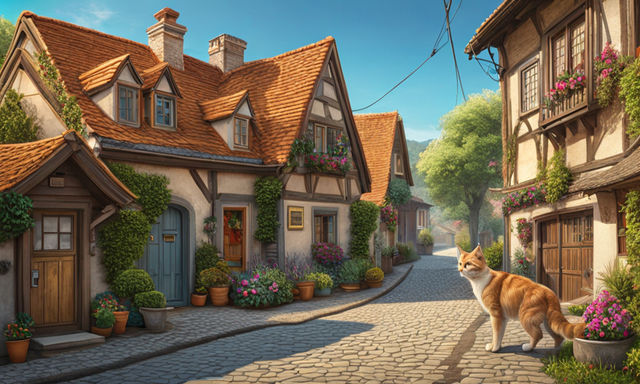 | The image features a cartoon-like 3D animation set in a village beige street. There's a brown and white cat walking past a row of flower pots with colorful flowers and houseplants. The cat is positioned between two sets of potted plants, overlooking the street below.
In the scene, several vases contain flowers, adding to the pleasant atmosphere. There are three vases placed on the left side, one near the center, and three more placed along the right side of the street. On the right side, there is a person standing near a potted plant, and a dog is also present in the foreground, likely accompanying a passerby. | The image depicts a quaint and charming scene of a cobblestone street lined with houses and flowering pots. There are five potted plants on the wooden sidewalk, adding a touch of greenery to the scene. The houses have flowers and vines decorating the exterior, creating a lively atmosphere. A cat is walking down the street, possibly enjoying the pleasant environment.
In the background, there is a fire hose visible, possibly serving as a safety measure during emergencies. One of the houses has a front door wide open, suggesting that someone might be welcoming someone inside. Overall, the image exudes a sense of warmth and coziness, reflecting the essence of a charming village. | The scene depicts a cat walking down a cobblestone pathway between two houses. This idyllic rural city street is lined with colorful flowers and large planters decorating both sides of the roadway. The path leads to a larger house with shingles replacing the small houses in the background.
There are several potted plants and flowers, including roses, situated along the path, with some placed near the street corners as well as close to the large house, enhancing the charming, picturesque setting. | The image depicts a small village with brown brick houses located at the bottom of a curvy street. A brown and white cat is sitting captivated on a sidewalk in front of one of the brick houses. The cat appears to be staring at something, possibly deciding whether to venture down the alley.
The scene also features numerous potted plants placed throughout the village streets. Two potted plants are located at the sidewalk of the house where the cat is sitting, and two more plants are positioned on the other side of the street. There are also two potted plants close to each other in the background, giving a sense of a cozy, beautiful village setting. | The image is a beautifully detailed painting of a picturesque European village street filled with old stone houses and farmers' homes. A group of cats can be seen throughout the scene, with a larger cat predominantly walking across the street and two smaller kitties positioned at different spots within the street. There are also a few birds seen pecking around and exploring the surroundings.
Several potted plants and vases dot the village streetscape, adding to the scenic atmosphere. There are plants on either side of the street, as well as near the front of one of the houses, and on the side of a building.
Altogether, the image conveys a charming European village scene with a focus on the residential neighborhood and the presence of the cats and birds enjoying their time in the quaint streets. | The image is an animated scene depicting a cute orange and white cat strolling down a street past candy houses. The cat is standing next to pathways paved with cobblestones, as it casually interacts with its surroundings.
Scattered along the sidewalk and street, there are several potted plants adding greenery to the scene. Tall hedges can also be seen in the foreground, enhancing the overall charm of the animated landscape. The combination of the cat, stone and the wooden buildings, along with the greenery, create a picturesque and captivating animated scene. | The image is an animated sequence of photographs, depicting some animals and people walking along an old European street. A brown and white cat is the main focus of the scene, taking a walk down the alley accompanied by various other animals such as birds or dogs. Two birds, one occupying the right side of the cat closer to the right side of the street, and the other a bit farther away, on the left side.
A bird can also be seen in the background, towards the right side of the street, walking past along with two people. In addition to the street furniture, there are two chairs visible on the sidewalk. One chair is located near the left edge of the scene, and another chair is positioned closer to the right side of the street. | The image depicts a small street scene featuring village housing and two cats lounging next to each other outside. The buildings lining the road give a quaint, village-like atmosphere. Several potted plants are scattered along the street, providing a touch of nature to the realistic landscape.
In what seems like a part of a fenced-in area, a kitten and a cat can be seen gazing ahead, possibly on the lookout for a potential mate or simply enjoying the day outside. With the presence of foliage on both sides of the street and the numerous small architectural details within the houses, the image has a cozy and welcoming ambiance. | The image depicts a picturesque old European village setting with a beautiful stone street lined with colorfully pictured houses. A cat, possibly a calico, is walking along the street, and the village seems to come to life as it passes by.
Scattered along the street are several potted plants, adding lush greenery to the picturesque scene. Several people can be seen in the image, interacting with one another, making the village vibe feel warm and inviting. In addition to the people, there are a couple of vases, and several chairs are visible throughout the scene, likely placed outdoors for people to relax or use for other purposes. | In the image, a kitten is trotting down a small cobblestone road between houses with small facades, giving it an old-world city ambiance. On the left side of the street, there is a large stately building, and on the right, there is a smaller house.
The scene is decorated with both real potted plants and fake ones. There are nine potted plants situated along the side of the road, with some close to the buildings and some located farther down the path. Additionally, three vases are scattered along the scene, adding to the aesthetic charm of the area. | The image portrays an enchanting scene of a cat walking down a cobblestone street past a row of old buildings. The street is lined with various plants, potted plants, and flowers, creating a charming atmosphere. Near the edge of the street, two potted plants can be seen, with one on the left side of the cat and the other to the right. Some benches are also present in the scene, suggesting that this might be a street with a park nearby.
A house cat is walking down the road, capturing the essence of a peaceful and pleasant setting. This charming village scene is likely to remind one of a classical Joanne Rowling underscore image of a magical village. |
| 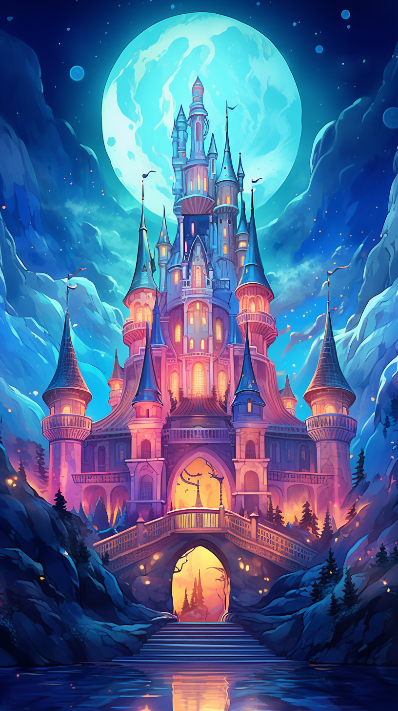 | The image is an artistic depiction of a magical land with an extravagant castle prominently in the foreground, towering over the seventh floor. The scene captures a serene and peaceful atmosphere, which contrasts the castle's grandeur. The castle features a massive clock, lighting tower, and a large castle head, enhancing its overall beauty.
In addition to the castle, several umbrella-like structures can be seen throughout the image, adding a sense of whimsy and creativity to the scene. A beautiful doorway can also be spotted within the castle, inviting visitors to explore the magical palace. The castle appears to be in an enchanting drawing, appearing with violet tones and embraced by the elements of cloudy night air and natural water features. | The image showcases a picturesque cloudy dark sky over a stunning castle with a shouting moon perched on a wall. The castle is an elegant and close-up view depicting its grandeur. The nighttime setting adds a sense of enchantment to the scene, reflecting the majesty of the castle's architecture.
In the background, there are several birds spread throughout the sky, some flying alone and others in small groups, adding depth and life to the scene. The combination of the eye-catching architecture and vibrant birds creates a captivating and visually compelling image. | The image features a beautiful painting of a fairy tale-like fantasy castle, situated near the edge of the water. The moon is shining over the pale blue bridge that connects the sky to the castle. The castle appears magical, with its turrets and intricate design.
The foreground showcases the castle's reflection on the water, adding to the enchanting atmosphere of the scene. In the background, a cluster of birds can be seen, flying gracefully across the night sky as if witnessing the magical moment. The castle's unique design and the presence of the flowing water create a captivating and captivating print that may resemble a book cover or a famous work of art. | The image features a beautifully drawn crystal blue castle with purple edges, resembling a fairy tale or fantasy-oriented structure. This visually stunning illustration prominently displays the view of the castle from the inside, with the inner structure reflecting on the still waters. Colored spotlights, such as shining stars, are emanating from the moon in the sky outside the window, adding a glimmering effect to the scene. The overall composition of the image is both striking and enchanting, painting a picturesque setting for a magical adventure. | The scene features a stunning Castle of the Moon character home, beautifully designed and built with fairy-tale effect. The castle stands majestically on top of a hill and has a bridge in front of it. There are two primary buildings in the scene, with one being a four-story architectural marvel with a castle-like appearance. Both structures have large towers and appear to be etched with intricate, colorful designs.
Two approachable doors can be seen in the scene, allowing access to the Castle of the Moon and the neighboring building. The castle, with its illuminated windows, highlights the enchanting atmosphere of the setting. A large moon serves as the backdrop and adds a sense of magic to the scene. The tea light candles below the moon create an even more whimsical and inviting ambiance in the drawing of fairy tale palace. | The image displays a captivating fairytale world with a breathtaking purple castle, standing tall above the surrounding landscape. The palace soars towards the sky, creating a visual and emotional focal point. At the top of the tower, a castle drawbridge spans across the picture, adding an element of depth and complexity.
The sky above the castle dramatically stages the setting, creating a stunning backdrop. In this dreamy scene, there is a night sky, with a few moonlets resting above the land at various heights. Additionally, several birds grace the sky, adding a touch of liveliness to this serene yet enchanting scene. The birds are flying in several small clusters, dispersed across the frame, ranging from the top left corner to the right side of the image, forming a dynamic and magical atmosphere. | The image portrays a breathtaking scene of a castle with a tall, grand tower sitting in front of a full, blue moon in a clear, star-filled sky. The illuminated castle appears as though it's drawing the light from the moon, creating a captivating ambiance. Several stars are scattered across the sky, adding to the overall beauty of the scene.
The castle spans roughly half way from the left edge of the image to nearly the right edge, providing a sense of grandeur and prominence. Within the scene, there are two birds, one towards the top left and another near the top right. These add to the overall sense of life and natural elements present in the artwork. | The image features a beautifully drawn landscape, capturing the majesty of a castle sitting on the shore of a lake. The castle is enriched with purple and blue colors, complementing the lovely scenery. Surrounding the castle, there are many trees and some steam puffing from the shoreline, adding to the serene and dreamy atmosphere.
The serene painting depicts a view from the castle doorway overlooking the peaceful water, brought to life with a few birds scattered throughout the scene. The night sky adds a magical touch, further enhancing the enchanting view of this captivating illustration. | The image shows an intricately illustrated palace with a lavish and grand entrance. The palace is surrounded by picturesque hanging flowers and has a stylish brick design. This painting features many windows throughout the architecture, likely adding to the multi-floored, carefully designed structure.
A large magenta building in the background provides a striking contrast against the vibrant color palette of the palace. The overall composition of the painting emphasizes the grandeur and beauty of the opulent palace. | The scene depicts a grey and blue image of a fairy tale castles floating in the air, with a circus tent in the zone below. The image features glass figurines and three tables, with the castles being the main focus. In addition to the main members of the main circus group on the right-hand side of the image, there are other statuettes scattered throughout, adding depth to the scene.
Various specific stars are positioned within the sky, surrounding the images of the castle. This whimsical and magical atmosphere suggests a mesmerizing illustration, perfectly fitting the context of a dreamy fairy tale. | The image depicts a fantastical castle with towers and a five-pointed star on its facade, all set in a picturesque countryside. A moon can be seen in the sky above the castle, creating a magical atmosphere. Numerous birds are flying around the castle, their silhouettes tracing graceful paths against the blue moonlit sky. Overall, the scene evokes a sense of wonder and mystery as the viewers gaze upon this captivating landscape. |
 | The image displays a young couple riding horses down a path through a beautiful countryside. The woman and man are dressed in medieval attire and appear to be enjoying their ride together. The scenery consists of pastoral surroundings that include the grassy field the couple is riding on and some sheep scattered along their path. There are three sheep in the background, with one located in a central position, another slightly to the left, and the third one to the right. The image is beautifully rendered, capturing a captivating moment between man and woman. | The image shows a man and a woman riding horses in a beautiful setting consisting of a hillside, a castle, and a lush green valley with trees and flowers. The two main riders are positioned near the center, with white horses beneath them. A few other horses can be seen in the scene, some close to the riders and others placed in the distance.
Scattered across the landscape are various animal figures, including four sheep. Some sheep are close to the main riders, while others can be spotted in different parts of the scene. These animals contribute to the picturesque and relaxed atmosphere. | The image is a beautifully rendered drawing of a couple, a man and a woman, riding their horses along a grassy road. They seem to be enjoying a romantic and picturesque day together, exploring the rolling hills and country scenery.
There are several sheep scattered throughout the scene, making the picture feel more idyllic and peaceful. Some cows can also be seen on the right side of the image, further enhancing the pastoral setting. | The image depicts a man and woman in a romantic, historical setting. They are riding horses across a pastoral landscape featuring grassy hills, lush greenery, and a picturesque village in the distance. Their horses, majestic and strong, are visible alongside them as they traverse the landscape together.
In the background, the couple is approaching a majestic castle, which gives the scene a sense of grandeur and significance. The timing of the image, with the sun shining down on them, further emphasizes the sense of romance and beauty in their journey. There are also several sheep visible in the scene, adding to the idyllic pastoral nature of the environment. | The image is a black and white illustration with an upper-class couple riding golden horses in the background, likely a bride and groom, while sharing a romantic moment on a hill. Each horse and rider is beautifully drawn, with the couple capturing a vintage aesthetic. There are other animals in the scene, such as a donkey, which adds to the charm and harmony between the people, horses, and animals. The lush landscape, the golden horses, and the couple on horseback create an enchanting and nostalgic atmosphere in the illustration. | The image is a beautifully drawn cartoonish painting featuring a beautiful princess and her royalty husband stepping off a white horse. They are both dressed in finery, indicating that they are nobility. They are riding the horse along a street amidst a festive scene that could be Castle Trieste.
The dramatic day features several suitcases and a handbag, possibly having their belongings from their Royal carriage. There is also a dog nearby the couple, adding to the charm and liveliness of the painting. In this enchanting scene, the couple appears to be enjoy a moment of quiet reflection, appreciating their relationship and the stunning surrounding landscapes. | In the image, a man and a woman are riding horses, dressed for their wedding, and enjoying a scenic ride down a path. The man has his arm around the woman, and both appear to be sharing a tender moment as they walk alongside each other. This enchanting scene takes place in an outdoor setting with a palace in the distance, suggesting a grand backdrop for the couple's special day.
There are several cows scattered in the area, adding some liveliness to the scene. A tie can also be spotted in the image, possibly belonging to the groom. Additionally, there is a car visible off to the side, potentially signifying that they are using it for transportation or simply included in the depiction of their destination. | The image is a beautifully rendered, highly detailed illustration of a man and woman riding a black horse through a forest filled with colorful flowers. The horse occupies the central portion of the scene. Similarly, there are two cows in the area, with a baby cow on the left side and an adult cow on the right, seemingly grazing on the scenic landscape.
The vibrant colors and attention to detail create an enchanting atmosphere in the image. It captures the essence of a man and woman enjoying the beauty of nature, riding through a picturesque hillside filled with flowers and cows. | The image is a vibrant painting featuring a woman who is beautifully dressed, walking beside her husband or partner. They are enjoying a romantic walk together, dressed in old-fashioned clothing. Their arms are held close to each other, highlighting their closeness and affection.
In the scene, there are two horses visible one on the left and another closer to the middle of the picture, standing in the backdrop. They add to the idyllic pastoral setting, as if the couple is experiencing a moment of peace amongst nature.
Furthermore, a dog can be seen towards the left of the image, but it is not as prominent as the horse by the woman. There are a few vehicles and people in the background, suggesting that the scene may be taking place in a public area or a park. | The image showcases a gorgeous painting scene of a lady riding on a horse with a guy alongside her. The horse and rider are the center of focus, representing their bond as they traverse the picturesque landscape. The scene appears to be set in a fairy tale castle, which adds a sense of romance and adventure to the narrative.
The surrounding area features an idyllic countryside with rolling hills, where several sheep can be seen grazing on the field. These adorable animals create a tranquil atmosphere as the couple continues their journey on horseback.
A total of seven sheep can be spotted at various locations across the field, contributing to the lush, medieval ambiance of the image. Their presence complements the setting, transporting the viewer to another era full of wonder and beauty. | In the image, there are two people riding horses in a scenic, hillside forest setting, likely resembling a fairy tale or a romantic magical forest scene. They are positioned near the top of a large hill or a mountain. In the background, two sheep are grazing, indicating that it might be a small town landscape.
The scene is adorned with purple flowers, adding color and charm to the outdoor scene. Both riders are dressed elegantly, with one dressed in blue and the other wearing a blue and brown outfit. The presence of horses and the panoramic setting bring life and charm to the picture. |
 | The image features a computer-generated city at night with toy cars racing on a pink-lit street. Four toy cars are visible, two of which are located towards the center of the street, one on the left side, and another on the right.
A couple of larger vehicles, such as a truck, are also present along the street. There are four people near the toy cars, possibly watching the race or providing assistance.
The city showcases a bright, colorful atmosphere with several tall buildings and illuminated structures. The bright colors and shining lights create a lively and vibrant scene that promises an exciting, fun-filled race among the toy cars at night. | The image depicts futuristic electron city at night, with a blend of cyberpunk and neon elements. A blue car moves down an inner-city street, surrounded by a row of skyscrapers on all sides.
The setting comes to life with a colorful array of lit-up signage filling the nightsky at various heights. At least a dozen traffic lights of varying heights and positions are visible, adding to the bustling atmosphere of the city. Some birds can also be seen soaring through the sky, creating a sense of motion and life amidst the built environment.
In addition to the cars and traffic lights on the street, there are two people in the scene, possibly enjoying the vibrant city at night. Two airplanes are also visible in the sky, further adding to the dynamic and visually rich world being presented. | In the image, there is a darkened city scene that is quite lively with plenty of blue and orange neon lighting. Two blue sports cars are driving down the street with other cars present as well. An airplane with red lights flying by completes the busy atmosphere created by the artistic lighting in the city.
There are several people walking around and enjoying the cityscape, with some closer to the foreground of the image, and others further back. In total, there are nine people visible, scattered throughout the scene. These people, combined with the blue sports car and other vehicles, create a bustling urban environment during nighttime. | The scene is a thrilling futuristic metropolis set during nighttime, featuring a blue sports car driving on a busy city street. Besides the sports car, there are several other cars along the street, some positioned behind and others in the front. There seems to be a good amount of traffic on this busy urban freeway.
Additionally, there are two airplanes floating high in the air above the city streets, adding to the futuristic elements of the artistic rendering. Two people can also be seen in the scene, walking near the cars, possibly preparing to cross the street or go about their business within the bustling city. | The image depicts a futuristic city street at night, bustling with activity. Several cars and multiple fighter jets are prominent within the scene, showcasing the busy urban environment. The vehicles, including a bright blue sports car, are traveling on a street with tall buildings on the sides, creating an atmosphere of depth and complexity. Moreover, the cars vary in size and shape, contributing to the dynamic atmosphere of the scene. | The image captures a sophisticated city displayed on buildings at night, with purple lighting filling the scene. The cityscape is illuminated by numerous lit signs and bustling traffic, featuring a winding road filled with cars of various sizes.
A blue sports car with its headlights on is a standout in the middle of the image, traveling through the bustling city streets. This car contrasts nicely with the other cars on the road, showcasing it as a unique addition to the busy urban setting. In the top left and top right corners of the image, there are two airports captured, providing the impression of an aerial view of the city. | The image is an artistic, eye-catching rendering of a purple city street featuring a proud display of tall buildings, lit up with purple neon lights. The cityscape is bustling with several cars and trucks carrying various people. Some vehicles are stopped, while others appear to be in motion, creating a lively atmosphere.
Along the busy street, there is a striking scene where two cars are shown interacting in a futuristic, animated display. One car, a blue one, is speeding past another car, possibly being ejected or slowed down by the surroundings. It's evident that this view of the purple city at night is an impressive blend of art and urban design. | The image depicts a futuristic city scene at night, with a road filled with various vehicles and illuminated buildings in the background. Two shiny cars are on the road, with a blue sports car racing along in front of a red station wagon and an arch-shaped structure nearby. In the distance, a rescue helicopter is flying, diffusing lights from two angles.
There is a group of people on the sidewalk, with two individuals near the foreground and others scattered along the sidewalk. A couple of individuals are standing close to the car racing down the road. The busy nighttime cityscape creates an engaging and energetic setting. | The image is a painted or digital illustration of a futuristic city nightscape showcasing various vehicles and an aircraft. The scene features a mix of both realistic elements such as faux-neon signs and illuminated buildings and imaginative transportation, including a fighter jet flying steadily in the sky. The city seems to host a dynamic transportation system, with flying vehicles and traffic below.
There are multiple cars navigating the busy streets as well as other activity in the city. A motorcycle and a toy-like car with numbers and letters are also present, further adding to the futuristic vibe. The illustration captures the excitement and bustle of urban life in a quirky and imaginative way, emphasizing alternative modes of transport within this highly-illuminated environment. | The image depicts a residential city street during nighttime, bustling with activity. On the street, there are various cars and a motorcycle visible, along with a large truck a little farther down the road. In addition to the vehicles, multiple people can be seen walking or standing along the street, creating a lively and populated atmosphere.
Surprisingly, numerous neon-colored flying cars can be spotted in the sky, filling the night sky and distributing throughout the scene. The vibrant mix of vehicles and flying cars add a touch of fantasy and excitement to the image. | In the image, several futuristic racing cars are driving at a fast speed down a busy street at nighttime. There are at least five cars that are most likely racing or being pursued by law enforcement. The night scene engages vehicles and traffic lights in dynamic action.
Three traffic lights are visible in the scene, one closer to the foreground and two others further back. Scattered around the street, there are 13 people, either observing the traffic or enjoying the bustling atmosphere. Additionally, a couple of airplanes and a fire truck can be seen soaring above the city street, adding more elements to the extravagant visual representation of the scene. |
 | The image depicts a lush underwater scene filled with vibrant colors and life. Numerous fish are swimming in the water, which are of various shapes, sizes, and brightly colored. Some of the fish appear to be orange, and they are swimming past each other in the ocean, mingling and navigating through the underwater landscape.
A terrain of rocks and coral can be seen along the bottom of the ocean, providing some depth and structure to the scene. The reef, covered in lots of plants, adds a sense of abundance to the aquatic environment. Overall, the scene presents an idealized view of underwater life, capturing the beauty and diversity of marine life found in oceans around the world. | The image is a captivating underwater scene consisting of a lush coral reef with an array of colorful fish swimming throughout the water. There are numerous fish in various sizes and shades of blue, red, and green, as they dart about the reef.
The fish are scattered throughout the water, with some resting, some playing, and others beginning to swim, creating a lively aquatic atmosphere. The vivid colors and abundance of fish create a sense of beauty and liflike quality, inviting viewers to explore the vibrant world beneath the ocean's surface. | The image depicts a beautiful underwater scene filled with various sea creatures, such as fish, crabs, and possibly lobsters. They are swimming amongst a bed of colorful coral and algae, creating a vibrant and lively marine ecosystem. There is a total of nineteen visually distinct creatures, each interacting with the water and the coral. The grove of reefs contains orange, pink, and blue colors, which enhance the visual appeal of the underwater environment. The scene provides a captivating representation of marine life nestled in a rich reef system. | The image features a vibrant underwater scene with various aquatic animals in different stages of movement. There is a multitude of orange fish scattered throughout the water. These fish are of different sizes, engaging in various activities.
The image portrays a sense of liveliness and energy, as the fish are more or less distributed evenly throughout the water. The presence of multiple orange fish suggests a lively and bustling aquatic environment, likely emulating an underwater scene of a marine park. | The image depicts a lively underwater scene filled with a variety of vibrant and colorful fish. There are numerous fish swimming in the water, positioned throughout the image. Some fish are seen closer to the foreground, while others are located more towards the background, creating an animated and fascinating underwater atmosphere. The fish have different colors, making the scene even more visually interesting and unique. | The image features a stunning underwater scene with brightly colored marine life. Numerous sea creatures, including fish, kites, and eels, are swimming throughout the scene. Some fish are swimming on the surface of the water, while others are found deeper in the translucent blue waters.
The vibrant coral and kites within the aquarium provide a lively buzzing atmosphere. There is a diverse group of fish of various shapes, sizes, and colors, creating an enthralling visual experience for viewers. With the underwater marine life scattered throughout the scene, the aquatic environment becomes an inviting and fascinating place for those who appreciate the wonders of nature. | The image depicts a vivid underwater scene resembling a painting. Numerous animated, yellow-colored fish, including several red and blue ones, are swimming together in the water throughout the scene. In addition to the fish, numerous plants are scattered throughout the water, adding to the lively atmosphere of the underwater environment. This animation display has a fantastic and captivating ocean theme that delights the viewer. | The painting is of a vibrant underwater scene filled with a school of pretty colorful fish swimming around a lush coral reef. The fish are of various sizes and colors, creating a beautiful and diverse array of species. The scene is set against a backdrop of six tall, majestic water plants on the right side, and nine water plants of different sizes, shapes, and orientation on the left side.
The water is inhabited by several fish, setting an impressionistic theme to the painting. Some fish are closer to the foreground, while others are spread out along the reef, creating the impression of a vibrant, aquatic habitat. | The image depicts a group of fish swimming together in a picturesque, vibrant underwater landscape. The fish are of various sizes, shapes, and colors, creating a lively scene. They can be seen floating near patches of coral or laying among rocks, which adds to the displayed richness of the natural environment.
In addition to the fish, the water is filled with several crabs scattered throughout, interacting with the fish. The proximity of the crabs, fish, and many plants enhances the artistic and vivid representation of a typical aquatic habitat. | The image depicts a vibrant open ocean filled with all manner of marine life. The scene is painted in a striking, brightly colored style that emphasizes the biodiversity of the deep sea.
Numerous fish of various species are swimming both on the surface and throughout the water. These fish range in size from the very large down to the tiny ones. There is a distinct variety of shapes and colors that create a dynamic and lively atmosphere.
In addition to the numerous fish, several larger creatures like sea horses and a crab can also be seen dispersed throughout the scene, contributing to the richness of the image. Among these, a school of red fish stands out, adding a pop of color to the artwork.
The overall effect is a lively and engaging display of marine life that showcases the beauty and diversity of the ocean world. | The image depicts an artistic vision of a vibrant underwater scene featuring colorful fish in shades of red, yellow, and blue, swimming amidst various plants. Green plants can be seen spread throughout the scene, creating a lively atmosphere.
There are multiple fish of varying sizes dispersed throughout the image, from the top corner to the bottom section. Some fish are close to the plants or floating near the float, adding life to the underwater environment. The colorful fish and beautiful aquatic plants together form a captivating and visually pleasing image. |
 | The image depicts a historical scene of a large group of men in medieval armor participating in warfare or a mock battle. Some of the men are dressed in upper pads and chain mail, while others have swords in hand. They appear to be using shields of various sizes as protection from the onslaught.
There is a cluster of men wearing prominent hats, showcasing a diverse array of medieval headgear. They are positioned throughout the drawing, engaging in hand-to-hand combat or preparing to engage in a chivalrous showdown. The battle seems to be an intense and chaotic scene, at the center of which a foreground figure messily cuts someone. | The scene depicts a painting of medieval soldiers on horseback engaging in battle. The painting primarily shows a close-up view of a group of knights fighting it out in the middle of a stormy day. A total of 14 knights are clearly visible, positioned near each other, and each with their own unique weapon.
One man is prominently seen holding a baseball bat, while several other knights are carrying swords, ready for their next move. In addition to the main duel, other knights or soldiers can be spotted further afield, scattered throughout the painting. | The image depicts a group of men wearing helmets and covered with chain mail, engaged in an historical conflict or a battle. They are actively fighting with their swords and shields, creating an impressive war scene. The crowd of men is spread out across the picture, showcasing various positions and angles, demonstrating the intensity and variety of the conflict. Some swords are visible, indicating that they are in the midst of a powerful clash with one another. This artistic illustration effectively captures the complexity and historical context of the event. | The image depicts a painting of a historical battle scene, capturing a group of medieval soldiers engaged in armed combat. The captured scene displays soldiers holding and exchanging shields in close combat. They are standing in a brown environment, demonstrating a war-like atmosphere. Some of the soldiers can be seen with guns, and others are equipped with swords or other ranged weapons.
There is a horse at the left side of the image, adding to the atmosphere of the battlefield. Given the many crosses present in the painting, it is possible that the artist is portraying a Christian crusade. The details of the soldier's gear, the intense exchange of weapons, and the historical context give the image a powerful and dramatic feel. | The image captures a large group of colorful soldiers wielding short, odd-shaped swords, seemingly preparing to engage in a battle. They are spread across a field, some closer to the foreground while others are positioned farther away, creating a dynamic scene. Numerous weapons, such as swords, can be seen clearly depicted in the hands of the soldiers, as they prepare to charge into combat together.
The soldiers display various outfits, giving a diverse appearance to the group, and their grassy uniforms add a touch of greenery to the composition. Overall, the image effectively portrays the excitement and intensity of a historical battle. | The image is a painting featuring a large group of people gathered in close proximity in a stormy environment. They are surrounded by shields and swords, showcasing a warrior gathering or staunch defiance under adverse conditions. The people in the scene seem to be conversing or observing each other as they weather the storm together.
There are a total of 12 visible people in the painting, with their positions varying from the foreground to the background. A couple of swords can be seen as individual items or part of a larger group of swords. The overall atmosphere seems to be a symbiotic relationship of warriors standing together in the face of storms and adversity. | The image is a painting depicting an ornate knight in med knight form on horseback, leading a sizable crew of armed knights or a group of men towards the enemy in battle. There are numerous swords visible in the hands of the knights, suggesting that they are fully prepared to engage in combat. The knights seem to be riding towards the camera, drawing the viewer's attention.
Several people form part of the company, with some of them standing closer to the knights in the center and others spread out throughout the formation. Apart from the main knight on horseback, there are carts present in the picture, placed below the mounted knights and the group of men. Overall, the painting conveys a dramatic and action-packed war scene with a strong emphasis on the knights, their weapons, and their determination. | The image is a scene of a group of soldiers and knights with swords gathered on a hillside. There is a wide variety in their disposition, with some standing close to the top of the hill, others lower down, and some in the middle of the field. The soldiers and knights are wearing various types of armor, indicating a mix of historical eras and warrior classes.
There are numerous swords visible in the scene, further emphasizing the combat-driven atmosphere. The weapons are carried by the different persons within the group, highlighting their preparedness for battle. This painting showcases a vivid representation of medieval warfare and the lively interaction between these soldiers and knights. | The image captures a painting depicting a medieval battle with many knights engaged in fighting. The figures are scattered throughout the scene, wearing various types of armor and holding swords. Some knights are close together, while others are fighting individually.
The battle appears to be well-underway, with a few kings among the hale of men. A group of knights surrounds a small enemy flag, which is likely the focal point of their collective attack. The atmosphere of the painting conveys the intensity and determination of the medieval warriors on the battlefield. | The painting depicts a group of men of different ages engaged in a clash. They are equipped with swords, clearly prepared for battle. The image showcases the varying positions of the men in the scene, with some crouching, some standing, and others in the middle of swinging or holding a sword. They are positioned in a wide array, giving the lively aspect of the confrontation.
The rain adds an atmospheric element to the scene, giving it the appearance of late film noir or a classic saloon brawl. Overall, the hard-fought scene captures the intense emotions and the drama of the combatants facing each other. | The image depicts an artistic and detailed artwork consisting of a painting or drawing featuring numerous soldiers on horseback. The majority of the scene showcases a type of claymore wearers on horseback, with the horses and riders interacting with each other. The costumes of these warriors may include hats and have an ancient appearance.
A notable feature of the image is that the well-equipped ceremonial combatants seem to be engaged in a line of battle. In addition to the soldiers on horseback, there is a person wearing a large sword, possibly indicating that some are participating in an early form of chivalry. The scene turns somewhat chaotic with the horses and their riders in various movement positions while everyone appears to be prepared for an attack or intense conflict. |
| 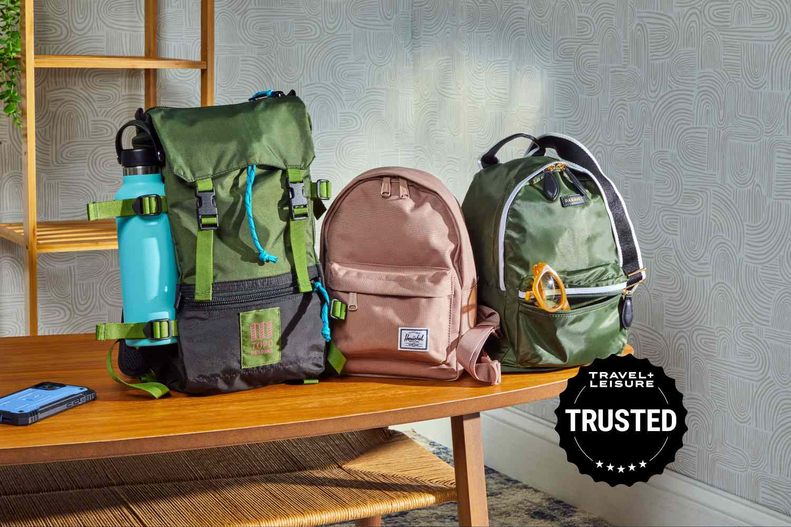 | In the image, there are four bags placed next to each other on a wooden table. Three of the bags are tied backpacks, which are green and sit on either side of the table. The bags are stacked, with the largest one on the left and the smaller ones on the right, occupying the middle space.
There is also a bottle located on the left side of the table under the green bags. The arrangement of the backpacks and the bottle creates an organized and visually appealing presentation. | The image features a wooden dining table with multiple backpacks on it, showcasing a variety of sizes and colors. One large bag is positioned on the left side of the table, two smaller backs are on the right side, and a divided backpack is in the middle. In addition to the backpacks, there is a water bottle situated on the table towards the left side. | The image contains two flagship backpacks situated on a wooden table. Both backpacks have distinct color schemes - one with a green and orange color and the other with a brown and an orange band added. The backpacks seem to be sitting in a position, waiting for their owner to use them.
A potted plant can be observed in the upper left corner of the image, adding a touch of nature to the setting. Additionally, there is a bottle on the table slightly towards the left, which may suggest that someone is hydrated before a trip. | The image features a table with three bags sitting on it. These bags come in different sizes and colors, including two backpacks and a small handbag. One of the backpacks is light blue, while the other backpack is larger and light green. The smaller handbag is located above the larger green backpack.
There are also some books placed on the table, with one book being closer to the top of the table and a few other books spread out across the surface. A cell phone can also be seen on the table close to the edge. | The image features a table with a unique setup of three backpacks placed on top of it. A variety of small, backpack-like items are visible, accompanied by a small handbag on the right side. The difference in sizes, colors, and types of the bags gives the scene a diverse and interesting appearance. Along with the backpack, a bottle, likely containing water, is also sitting on the table. | The image shows a table holding several bags and bottles, arranged in a manner that makes them easily accessible for travelers. There are two backpacks, one placed towards the left side of the table and the other occupying the right. Additionally, there is a handbag located near the middle of the table.
On the side of the table, the scene includes multiple bottles, which may serve as travel essentials or proper oxygen levels while traveling for some adventurous individuals. The water bottles are located near the top left and both left side of the table. | The image depicts a small wooden table with three backpacks stacked on it. These backpacks are likely being prepared for an adventure, possibly at a hotel room, as they are designed for traveling.
There is a blue bottle placed on the table alongside the backpacks. A cell phone is also placed on the table in front of the backpacks. The scene is connected to the concept of travel and outdoor adventures with the various accessories like the cell phone and water bottle, and the well-prepared travel bags. | The image features a scene where a brown backpack is placed atop a wood table or a bench, along with other bags. Three bags of different sizes can be seen in total. A green bottle is also present on the table, partially obstructed by the backpacks. The scene appears to highlight outdoor travel gear and provides the impression of a pleasant summer day. | In the image, there is a dining table covered with an assortment of backpacks, totes, and bottles. Three backpacks are prominently pictured on the table, each placed in slightly overlapping positions. One backpack is closer to the left side of the table, slightly behind another smaller one which takes up the central position. To the right, a large backpack occupies a large portion of the table surface.
There are two distinct water bottles visible as well. A smaller bottle is located to the left side of the table, while a more substantial bottle is situated behind it on the far left. This arrangement showcases a collection of travel gear and supplies. | The image showcases three backpacks positioned on a wooden table, likely displaying some variety and style. Certainly, the backpacks appear to be a mix of shades, suggesting that the owner might have different preferences, or the backpacks may have been picked up from various shops. The arrangement on the table adds an outdoorsy feel to the scene.
There is also a cell phone placed on the table towards the left side, possibly belonging to one of the backpack owners or someone who will be using one of the bags. | The image features a wooden dining table with three travel bags placed on top of it. Two large green backpacks are positioned close to each other, while the third one is a smaller and lighter blue backpack. An empty black chair is also visible in the scene, situated near the table.
In the background, there is a cell phone resting on the table, slightly to the left of the center. Additionally, there is a potted plant located on the left side of the image, closer to the studio wall. |
 | The image showcases a basketball featuring the signature of NBA basketball player Tim Duncan. It is an official NBA game basketball with an impeccable leather surface, ideal for practicing and honing one's basketball skills. The hoop area has Duncan's autograph in this wandering classic, making it a valuable and personalized item for fans and collectors of professional basketball. The basketball is likely to have a significant connection to Tim Duncan's career and achievements in the NBA. | The image showcases a large NBA basketball with a bunch of writing all over it, placed on top of a wooden surface. The writing is likely related to the OGB and the Oklahoma City Thunders, and there might be a signature as well. The basketball appears to be a close-up view, emphasizing the details on its surface. Additionally, you can see that the basketball has a slogan on it, making it an interesting visual. | The image is an up-close photograph of a basketball, showcasing its textured red and brown surface with the letters "Wilson" etched upon the sides. The ball is prominently displayed in the center of the image, captivating the viewers' attention. | The image presents a close-up shot of a basketball, seen at the bottom of a slight angle. The basketball is in perfect condition, with no significant scuffs or blemishes visible. It is sitting atop an official basketball court surface, ready to be played on. The image emphasizes the stitching lines and fine details of the basketball, as well as the Wilson company logo on one half of the ball. The overall impression is that the basketball is in top-quality condition and waiting to be picked up and played with. | The image features a large basketball that is brown and slightly worn, sitting on a white backdrop. Signed on the front of the basketball is "Alan Iverson," suggesting it might be an autographed item from his career. The picture showcases both a close-up of the basketball and a wider look at the back of the object. The close-up view emphasizes the star logo on the basketball, while the wider shot reveals the player's initials on the basketball. | The scene features an elegant basketball held in front of a plain white background. The basketball is set in the lower center of the image, with its striking detail accentuating the composition. On one side of the basketball, the name "WILLSON" is visible, while the opposite side has the NASA emblem, indicating that the ball is associated with that iconic space agency. | The image features a shiny brown ball with black writing on the side. A basketball jersey with the phrase "NBA Common" written on it is sitting in the center of the ball. Inspired by genuine NBA leather, the ball showcases a quality stitch. The overall appearance of the image suggests great detail and craftsmanship, making the product visually impressive and appealing. | The image features a full view of an orange basketball with white lettering, displaying the name "Wilson." The ball has been signed by the NBA commissioner, indicating that it is an official game ball.There are a few more objects in the picture as well, like a handbag near the top center, another one slightly to the left, and a refrigerator near the top left corner. There is also a bottle located at the top left corner of the image, slightly closer to the handbag. | The image features a round basketball with the Wilson brand and the World Gym symbol on it. It appears to be a close-up shot, showcasing the detailed design on the ball. The ball has a brown exterior that gives it an authentic and professional look. Additionally, there is a clock in the background, indicating the time in a gym environment, perhaps during a match or practice session. | The image features a close-up of a basketball with "Wilson" on the side, showcasing its high-quality leather cover. The ball is in an upright position, making the words and logo clearly visible. There is no background; the focus is solely on the basketball itself. | The image showcases an old AC Wilson basketball sitting on a white background. This basketball is likely an official game ball, as it sports Wilson as the brand. The ball appears to be worn and somewhat dirty, indicating usage in previous games. Its small body and brown color make it stand out in the scene against the white backdrop. |
| 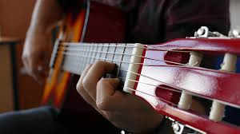 | The image presents an evergreen red and white guitar held by a person, capturing their unique hand position while playing it. Even though the person is the main focus, there's also an orange guitar visible in the background at the top left corner of the image. The composition adds an interesting contrast to the scene, drawing the viewer's attention towards the central focus of the image. | The scene features a young man on a guitar, with his hands on the strings. He appears to be in the process of learning guitar playing, with his perspective being from behind. The man's skillful finger positioning suggests that he is making use of his hands to play the interlocking melody using guitar strings.
In addition to his hands, the man can be seen wearing a ring. The guitar itself is prominently visible in the center of the image, showcasing the primary focus of the scene. Overall, the image portrays a person practicing their guitar skills. | In the image, a person is playing a red and red, silver, and blue electric guitar. They have their left hand supporting the guitar's neck while they are holding the strings with their right hand. There also appears to be a small keyboard near the lower-left corner of the guitar which might be accompanying the person in their musical performance. | The image features a young man holding a guitar string down on the neck of the instrument. He is extending his hand fully to grasp the string, demonstrating focus and determination while playing. Another person is visible in the background, likely watching the musician play or the performance he's about to give. There is also a chair present near the first person in the scene, possibly where they plan to sit and enjoy the music. | The image features a man sitting in a chair and playing a guitar, possibly a stratocaster. He is intently focusing on his playing as he holds the guitar while sitting in a wood chair. The man's fingers can be seen on the strings, gripping the instrument as he plays. The image suggests that this man possibly enjoys playing music or could be a musicians playing for a public gathering. | The image features a person near a red guitar, with one hand playing it. This individual appears to be a blues musician or a guitarist. The guitar is positioned to the bottom right of the person, almost occupying the entire right side of the image. The scene highlights the musician's focus on practicing or performing music. The person may be dedicated to the art form and actively participating in the creation of a musical piece. | The image showcases a person holding a guitar while playing it. The person is seated and displaying their left hand and thumb grip on the instrument. The guitar itself has a red and white color scheme and is positioned prominently in the scene for added visual interest. The individual's hand with the guitar appears to be adorned with bracelets, adding a final touch of elegance to the overall composition. | The scene features a man sitting in a chair with a guitar, appearing to be the focal point of the image. He is concentrating on playing the stringed instrument, with his hands skillfully holding onto the guitar strings, possibly in the process of performing chords.
In the background, an additional person can be seen standing away from the main subject, possibly observing or listening to the music. Furthermore, a bottle is placed on a nearby surface, adding a bit of context to the room's atmosphere. Overall, the image depicts a scene where someone is engaged with their guitar while others might be enjoying the music or participating in a casual gathering. | The image depicts a room with a person, specifically a man, standing in the background and holding a musical instrument, likely a guitar, while sitting down. Another person is visible to the right of the guitarist in the background. The focus of the scene is a close-up shot of the guitarist's hand holding the instrument while playing it. The attention is drawn towards the still-life collection displayed around the room, indicating that the scene might be set in a living room or an artistic setting. | The image shows a person with their hands on a Red (representing Republican) and Blue (representing Democratic) guitar. The musician is playing a shredding guitar solo, surrounded by bright lights. They seem to be fully concentrated on their performance.
The Red guitar is positioned on the left side of the image, while the Blue guitar is on the right side. The musician's fingers are visible on both guitars, with the BBC logo painted on the neck of the guitar. This musician appears to be very skilled and focused on delivering an impressive performance. | The image showcases a person playing the guitar, with their hands positioned along the neck of the instrument. The guitar wall is featuring a similar design to the Les Paul, known for its classic appearance and red trim. The image captures the person's focus as they play the guitar, demonstrating their skill and passion for the instrument. The string arrangement of the guitar is quite vivid, enhancing the overall aesthetic of the picture. |
 | The image features a colorful locker, or chest, sitting open on the floor. Inside, it is filled with various toys and small items, making it appear like a toy box. The locker is decorated with beautiful colors and exhibits dinosaurs, giving it a playful appearance.
Inside the locker, there are numerous toys, including colorful cars. Some of the specific items that can be seen are a truck in the middle part of the locker, a doll near the right side, and several cars spread out across its contents. This vibrant and playful item could be a popular and cheerful addition to a child's room or play area. | The image features a brightly colored toy chest sitting on top of green grass, filled with a wide variety of toys. Among the colorful collection of toys, both small and large, are several stuffed animals, including teddy bears and tigers.
There are multiple toy cars and trucks placed inside the chest, adding to its overall visual appeal. A couple of toy boats, one large and one smaller, add additional variety to the assortment of toys. A spoon is also a part of the collection, indicating that various types of toys have been stored in the chest. | The image showcases a creatively designed toy chest filled to the brim with a diverse range of children's toys, predominantly featuring dinosaurs. There are a total of seven toy dinosaurs, each with their own unique design and size, occupying the chest space. Other toys that can be seen include a couple of trucks and cars, adding more interest to the chest.
The arrangement of the toys in the chest is both orderly and visually appealing, holding a high level of excitement for the young excited children. The toys are contained within a tray, bringing a neat and organized appearance to the overall presentation. | The image features a colorful suitcase or toy chest with several toys, including stuffed animals and dinosaurs, sitting inside. Among the toys in the chest, there are three teddy bears, possibly being the centerpiece of the collection. One teddy bear is placed towards the left side of the chest, while the other two are on the right side, near the top of the chest. The dinosaur figures, or action figures, are spread throughout the box, both on the left and right sides, occupying the majority of the lower half of the toy chest. There is also a sports ball and several more characters in the toy chest, creating an impressive array of toys and playthings for anyone to enjoy. | The image depicts a shelf full of various stuffed animals and toys. The toys are placed in multiple compartments within the shelf's storage bins, creating a fun and organized display. There are two stuffed toys in the top-left compartment, and another stuffed animal is situated in the top-right space. Two more toys, including a teddy bear, can be found together in the top-middle compartment, surrounded by other items.
The design of the shelf and bins offers ample storage for most of the toys, with a few exceptions. The storage containers in the middle part and the right side are almost empty. The impressive amount of toys, though, showcases the quality and assortment of games available for playtime. | The image features a small container or locker with a handle on the top, which reveals rows of colorful inside spaces upraised on a white background. The container contains numerous toys, in particular, an assortment of knick-knacks and a stuffed toy animal.
In the stationary display, we can see several toys of varying sizes, shapes, and colors. There is a teddy bear occupying the upper part of the container, several colorful toys arranged within the container's sections, barbies in different positions, and other figures featured throughout the whole display. These toys give the item a lively and entertaining look, making it an attractive thing for children or a collector. | The image depicts a small, animated play kitchen staged on a table. The play kitchen is designed to resemble a diner or a coffee shop, with bright colors and human-like elements. It features a realistic play folding table with a chalkboard surface that can be used for activities, crafts, or writing.
Numerous toys, including various toy people, animals, and cars, are scattered around the play kitchen. There are stuffed dogs distributed throughout the scene, with several of them placed closer to the play kitchen. A stuffed giraffe is also present, situated near the left side of the scene. Additionally, a few toy trains can be seen both inside and outside the play kitchen.
The arrangement of the toys and the vibrant colors create a lively and imaginative environment in the play kitchen. | The image features a gray plastic toy chest filled with an assortment of various toys. Inside the chest, there is a dinosaur toy standing in a grassy area, surrounded by a few other character toys. On the top of the chest, a teddy bear sits next to several stuffed animals, creating a playful and colorful scene.
In addition to these toys, there is an assortment of small objects with varying shapes and sizes, arranged in random directions throughout the chest. In total, there are six teddy bears, fourteen toy figurines, and twelve other small objects inside the toy chest, making it an attractive and engaging play area. | The image features a cabinet filled with a variety of toys. On the top shelf is an array of teddy bears, positioned in a mix of sizes, creating a diverse group of stuffed animals.
The middle section of the cabinet is occupied by a series of sports balls lined up neatly, covering different sizes. The bottom shelf is packed with stuffed animals, including more teddy bears and a dinosaur toy. There is also a chair located in the upper corner, contributing to the entertaining atmosphere of the toy chest. Overall, the cabinet presents a fun and playful arrangement of toys for children to enjoy. | The image features a colorful tote container filled with assorted plastic toys and a stuffed animal. The container is white in color and has an oblong shape. Various stuffed animals and toys are scattered inside the tote, including Dinosaurs and other animal figurines. In total, there are twelve toys and two stuffed animals within the container. The toes appear to be in a variety of colors and designs. Overall, the container appears to be perfect for children who enjoy playing with similar toys and collecting stuffed animals. | In the image, there is a large plastic toy chest filled with a variety of toys, especially stuffed animals. It appears to be a treasure trove filled with stuffed bears in various colors and sizes, as well as other toys such as cars and a truck. The chest takes up the majority of the scene and showcases the contents and different types of toys inside. |
 | The scene features a wooden table with a large tabletop game placed across it, which seems to be a battle map or a game involving a world in peril. Many game components and cards are scattered around the table, accompanied by multiple chairs positioned near it, giving the arena a festive atmosphere.
In addition to the board game, there are also some playing cards and colorful squares spread out on the table. One chair is prominently placed near the table, while the other chair is slightly farther away from it, creating a cozy setup for enjoying the board game or engaging in friendly competition. | The scene features a wooden dining table covered with a game board and various game pieces, creating an inviting and engaging atmosphere. A wooden chair is placed in the middle of the table, likely for the game's players to sit on as they enjoy the board game. Numerous game cards are placed along the table and scattered around the table's surface.
Additional accessories can be seen on the table, such as a set of scissors placed towards the front side and a cup slightly to the right. The presence of the map and geographical features on the larger board demonstrates the level of detail present in the game, likely providing an interesting and challenging experience for the players. | The image features a wooden dining table with a blue cloth on top of it, where a number of various board games and puzzles are laid out. There is a map positioned in the center of the table, along with several other games spread around the area. A chair is placed in front of the table, inviting someone to join the fun.
In addition to the table elements, a couple of books are present among the games, likely related to a topic or serving as another form of entertainment during the game night. A cup can also be seen placed towards the right side of the table. Overall, it suggests a cozy and engaging atmosphere for a group of board game enthusiasts to gather and play together. | The image showcases a wooden dining table with a global map game set up on it. The classic-looking map features intricate details and colored borders, making it an engaging scene. There are several chairs placed around the table, inviting four players for an enjoyable and interactive experience. Many items accompany the map, such as books, game pieces like dice, counters, and several pieces of cardboard.
allowing the players to gather around the table and enjoy a strategic game together. The table appears to be a focal point for a social gathering or a family event. Overall, the scene presents a cozy atmosphere, where people can spend quality time playing together. | The image features a wooden dining table where a group of people is playing a game, possibly Monopoly. Several cardboard game elements are scattered around the table, including five sets of dice and various other playing pieces. Additionally, multiple chairs are positioned around the table, accommodating the players.
There are three other people present in various spots around the table, each participating in the game or observing from their vantage points. The overall atmosphere indicates a social gaming evening among friends or family. | The image features a wooden dining table surrounded by chairs. On the table, there is a unique tarantula puzzle placed next to several Eurolarge miniature games. Papers are also scattered around the table along with the puzzle and games, creating a diverse assortment of items.
Multiple pieces of cutout scenery are placed on the table, giving the scene a more immersive appearance. There are also several small figures in the scene, perhaps representing participants in the games. Additionally, a book is present nearby, possibly a guide to the various elements displayed on the table. | The image features a wooden dining table covered with various board games, multiple books, and several game pieces. The game board is at the center of the table, surrounded by books and boxes, indicating that the table is set up for a gathering or a group game night.
There are at least six chairs visible around the table with one positioned near the left side, another one towards the middle, and the remaining four grouped together on the right side of the table. There are at least six packs of cards placed on the table, with some appearing scattered along the edges while others are stacked together.
In addition to the card decks, many books can be seen placed around the table in various positions, with some placed on the right side, others in the middle, and further near the left side of the image. This scene exudes a warm and inviting atmosphere, perfect for game nights and board game enthusiasts. | The image features a wooden dining table generously covered in several games and various items. On the board on the table, people are playing a game of Stratego. All the players and pieces are concealed, making it an interesting and mystifying game to observe.
Nearby, there is a variety of cards on the table, possibly indicating that the group is involved in several games or activities. The presence of chairs around the table suggests that it's an area where people can gather for meals or social events. A cup is also visible on the table, along with a couple of remote controls, implying that the participants engage in different forms of entertainment. | The image displays a long wooden dining table filled with various table games and components. There is a large, detailed map covering the table, varying from the surface of the table down to the center region. The games and components are spread across the table, with some items sitting very close to the edge, while others are placed more towards the center.
Scattered across the table are numerous chairs, with some positioned at the top, where players can likely sit down to play or observe the overall collection. Although one can observe a few board games, the presence of the large map and the intricate setup suggest a different game or activity is taking place here. | The image depicts a wooden dining table with a large number of game pieces and cards covering it. The focus appears to be on two board games occupying a significant portion of the surface. Other surrounding games and assorted objects include smaller games with printed cards, placing them around the main board games.
Multiple chairs are placed around the table, with one on the right side and one on the left. The table itself spans the full width of the scene, with its long and varied contents, suggesting that the game night might be in progress or well-prepared. | The scene features an elaborate table set for entertaining guests or potentially practicing a small-scale war game. Various game pieces, tiles, and cards are spread all over the wooden table. At least four chairs are positioned around the table, inviting people to sit and participate in this engaging activity.
In addition to the dining table itself, there are a few objects on the table, including a cup, a fork, and a couple of carrots. Additionally, there is a toothbrush and a bottle present in the scene, possibly taken out of context and unrelated to the table's activities.
There are also multiple marbles sprinkled around the table, increasing the sense of an ongoing game or mishap among the guests. A card placed centrally on the table further suggests a crucial move or action in the ongoing event. |
 | The image showcases a clean and organized dining room with a large wooden dining table the centerpiece of the room. The table is surrounded by numerous chairs, likely arranged for a family dinner or gathering. Wine glasses, forks, and knives are thoughtfully placed on the table, hinting that it's ready for use. The table is also adorned with colorful tablecloths, adding a vibrant touch to the setting.
In addition to the main dining area, there is a larger dining table with rounded wooden edges, which occupies the space alongside the largest dining table. The dining room is adorned with various items, including cups, bowls, lamps, and vases, creating a fully-furnished and inviting atmosphere. A lit fireplace can be seen in the background, providing warmth and ambiance to the space, while a window allows natural light to fill the room, further enhancing the viability and comfort of this dining room. | The image displays a spacious dining room with wooden floors and large windows letting in plenty of natural light. The room is set up to hold a group of people during mealtime, featuring a long table with many chairs arranged around it. There are two chairs on either end of the table and five other chairs placed at various positions around the table, inviting people to sit and enjoy their meal.
The table is adorned with an assortment of dining items and cutlery, including forks, knives, and spoons. There is also a bowl on the table, likely ready for serving food. Two cups are placed near the left side of the table. Alongside the dining setup, there is a potted plant on one side of the room, adding a touch of greenery to the environment. | The image showcases a large, inviting dining table set in a room with lots of windows, providing an abundance of natural light. The table is adorned with three place settings, each featuring a fork, a knife, and a spoon. Blue cloth napkins accompany the silverware, adding pops of color to the otherwise neutral dining table. A vase sits on the tabletop, adding another touch of decoration.
Several chairs surround the dining table, with some placed closer to the camera and others situated further away, providing ample seating options for a big group. A clock can also be seen hanging on the wall, likely helping the hosts keep track of time during meals. The combination of the well-arranged dining area with the cozy atmosphere makes this setting an inviting space for a dinner party or a meal with friends and family. | The image showcases a dining area in a house, featuring a large dining table with a rectangular shape. The table is set with five plates and eight wine glasses, adding a formal touch to the setting. A window in the background offers natural light, adding to the pleasant atmosphere.
Surrounding the dining table, there are eight chairs, some positioned at the sides and some near the table. Additionally, several bowls can be spotted on the table, along with various items like a fork and a spoon. Moreover, a patterned paper design hangs over the dining table, further enhancing the sophisticated design of the room. | The image captures a large dining room featuring an inviting round wooden table. The table, likely used for gatherings, is set with plates, cups, forks, knives, and spoons. Only a few items, such as a fork, are placed on the table at the moment, possibly indicating a recent meal or a gathering.
There are four chairs visible around the table: two on each side can be seen placed close to the edges. Additionally, there are two more chairs placed closer together in the center area of the room. Two dining tables of various sizes can be seen in the scene, one being the main focus, and the other smaller one nearer to the edge of the room. There is a person partially visible in the lower left corner of the picture. | The image displays a cozy and formal dining room setting with a large wooden dining table in the center of the room. The table is set for a formal meal with several plates, cups, forks, and spoons placed on it at different positions. The table is accompanied by eight chairs arranged around it, ready for the guests to be seated. A potted plant serves as an accent piece in the room, adding a touch of greenery.
A window can be seen in the room, providing an inviting atmosphere for the dining experience. There is another dining table in the foreground and a clock hanging above it, adding to the elegance of the space. The presence of multiple cups, forks, wine glasses, and other tableware reflects the attention to detail and the high standard of the intended formal meal. | The image features a warmly lit dining room with a table and multiple chairs placed around the dining table. The dining table is adorned with a natural accent, possibly a tree branch, creating a lively atmosphere. The table also has several lit candles on it, which contribute to the overall ambiance.
Around the room, there are various wine glasses and dining utensils, such as forks and knives. There is also decorative track lighting, adding to the overall appealing setting of the dining area. A stack of white napkins can be seen on the table, likely to be used by the diners. In addition to the dining table, another smaller dining table is noticeable in the room, situated in front of a couch. | The image features a large dining room with a generously sized wooden table as the centerpiece of the room. The dining table is set with multiple cups and wine glasses, showcasing a white and orange tablecloth. Several silverware items, such as forks, knives, and spoons, are also laid out on the table, ready to be used by diners.
In addition to the table setting, there are chairs placed around the table, and another smaller dining table in the room. A clock can be seen hanging on the wall, possibly to help keep track of time for the diner. A bench is also present in the room.
Interestingly, there is a tall metal pole curving around from left to right in the room, which adds an artistic element to the overall dcor. | The image is a dining room featuring a large circular wooden dining table with twelve chairs surrounding it. The table is set with various items including multiple wine glasses, dining utensils such as knives, forks, and spoons, and bowls. The well-prepared table gives the impression of being ready for a dinner gathering or a special occasion.
In addition to the dining setup, the room also contains a wooden table located close to the dining area, as well as a chair placed in the background. There are two wine glasses and three bottles visible at the bottom corners of the image. The entire scene is adorned with a beautiful clock and framed artwork, giving it an elegant touch. | The dining area of a restaurant is the main focus of the image. The long, narrow table is adorned with various wine glasses and knives spread out across the table, ready for use. The table is surrounded by multiple chairs, and surrounding windows allow for natural light to flood the room.
Several cups can also be seen on the table, indicating the availability of multiple beverage choices for the guests. The overall atmosphere of the restaurant appears inviting and well-equipped to host dinner parties or gatherings. | The image features a large dining room with a multicolored wood table at the center. The table is adorned with plates, bowls, wine glasses, and various utensils such as knives and spoons. The cups can be seen at different places on the table, ready for use by the guests.
Around the table, several chairs are positioned, creating a comfortable seating arrangement. One chair is placed at the edge of the table, while the others are spread out around the room. A window in the dining space is open, as if inviting in the fresh air.
In addition to the main dining scene, an interesting art piece as displayed on one of the walls. |
 | The image features a wooden workbench displaying a variety of items made of sticks. There are several pairs of scissors placed on the workbench, with some positioned further up and others lower on the bench. Additionally, there are pair of tweezers resting next to the scissors, taking up a position closer to the middle section of the workbench. These diverse items suggest that this space is used for various crafting or hobbies involving fine materials like stick-based tools and instruments. | The image features a wooden dining table displaying a variety of yard tools in an organized manner. At the forefront of the scene, there are two pairs of pruning shears, and a total of five pairs of scissors are also laid out on the table, demonstrating a knife store set-up.
Substantially, there are two saws on the table, further adding to the diversity of the tools. Overall, the arrangement of the images creates an appearance that resembles the concept of a yard or garden toolset, offering an appealing assortment of cutting and pruning tools for home use. | The scene features a old brown table with a jumble of various contents on top of it. A scary hand-held saw is prominently displayed, resting on a piece of wood. There's a rope and some tools piled along with the saw, attracting attention as the main objects in the scene.
This variety of items, with the old-fashioned saw, combine to create an interesting and somewhat eerie setting on the wooden table. | The image shows a wooden table with various hand tools and a cutting board on it. Among the tools, there are several pairs of scissors in various shapes and sizes. One pair of scissors is placed towards the left side of the table, with another pair positioned closer to the center and right side. There are also two pairs of cutting needles on the table, one near the center and bottom part of the table, and the other near the top and left edge. This assortment of tools and scissors suggests a workshop or crafting area where various tasks could be carried out. | The image depicts a workbench in a woodworking shop with a variety of hand tools neatly organized on it. There is a selection of garden shears positioned at the center of the table, while other tools, such as a pair of scissors and a pair of clippers, are also present on the workspace. Among the miscellaneous tools, there is a spoon and a knife. Additionally, a saw laying across the workbench serves as a more prominent hand tool in the scene. A framed image is also placed on the side of the workbench. This workspace is well-suited for craftsmanship and construction purposes. | The image shows a wooden table with various measuring and utility tools arranged on it. The collection of tools consists of a pair of eyes located towards the top of the table, a pair of open scissors in the middle area, and a wooden barrel positioned below the scissors. In addition to these tools, there are crafting materials, such as crochet hooks and saws, scattered all over the table. Some of the hooks can be found in the lower-middle part, while the saws are distributed throughout the scene. Overall, this variety of items suggests a workspace or craft area for various handcraft or artistic creations. | The image shows a large group of woodworking tools laid out on a workbench. Several wooden tools can be identified in the assortment, including long-sickle shape hand tools, knives, and approximately five hammers of different sizes. There are also two pairs of scissors present in the scene.
There's an exceptionally long proposed tool holding posts, which seem to be at various lengths and ends. Overall, the display of tools indicates a wide range of handy instruments for working with different materials. The arrangement of tools fill the majority of the vertical space in the image, giving the impression of a well-stocked workbench. | The image displays a collection of various carpentry and metalworking tools, that were piled on a wooden workbench. Several different types of hand tools can be seen throughout the scene. In the center area of the bench, there is a hatchet, while a pair of scissors can be found at the upper-left side. Additionally, there is a nail set on the upper-right side, and few pairs of chisels placed at different positions in the pile.
Interestingly, there is also a pair of strips, possibly measuring tools, which are laid out among the other tools. The tools are arranged in a way that showcases the diversity of their uses. | The rusty tools, lying on the table, include a variety of antique hand tools. There is a large hatchet, which seems dead or losing its originality, mixed in with tools such as shears, scissors, and nails. There is also a chair placed on the dining table. The array of tools offers a glimpse into the past, showcasing the older, used versions that were once an essential part of everyday life. | The image features a wooden table displaying various tools and implements made for different purposes. Among these items, there is a pair of scissors positioned on the left side of the table. A knife, possibly a machete, is located toward the upper left corner and another knife is placed further to the right. A board cutter is visible in the center playing with the especially made knife.
There are multiple scissors spread across the table, some closer to the left and others towards the right side. A bottle can be found at the top left corner, while a piece of rope is positioned beside the scissors in the upper and central region of the table. Other tool-like items are situated in various parts of the table, providing a complete collection of wooden hand tools presented for viewing. | The image displays a scene featuring pliers, wire cutters, and various other tools laid out on a wooden plank. There are three queues of pliers, positioned at different angles and sizes, suggesting that they might be intended for different purposes or sizes of metal cables.
In addition to the pliers, there are other hand tools displayed on the wooden table, including a combination of open and closed scissors spread across the surface. The arrangement of the tools creates a visually layered scene, showcasing their variety and offers a glimpse into a workspace where multiple types of tools are kept organized and ready for use. |
 | The image features a spacious and clean living room in front of a wall with a variety of shelves. The room is filled with brown and white furniture, creating a cozy atmosphere. There is a brown leather sofa located in the middle of the room, surrounded on all sides by various pieces of seating such as chairs, including a chair positioned in the corner of the room, and a cozy couch at the left side.
A kitchen can be seen in the background, with a sink visible to the left of the scene. A collection of books can be observed on one of the shelves, indicating an interest in reading and intellectual activities. Two bowls are also present in the room, with one placed in the center and another placed near the right side. Another bowl can be found on the far side of the room, being closer to the wall. There is a vase placed in the top-left part of the room as well. | The image presents a clean and well-decorated living room featuring several furniture pieces and decorations. A plush rug spreads across the hardwood floor, adding texture and warmth to the room. There is a large couch situated across one part of the room, accompanied by a stylish chair placed nearby, creating comfortable seating options. A delicate round coffee table can be spotted in the middle of the seating arrangement, serving as the central focus of the room.
In addition to the seating arrangements, a remote control is visible on a surface towards the right side of the room. Moreover, a bottle can be found near one of the chairs, adding a touch of personal flair to the space. The room itself seems spacious, with a large window allowing natural light to flood the room, further enhancing the cozy atmosphere. | The image showcases a well-organized living room with high-quality furniture and various decor items. In the room, there is a brown modern couch, positioned to the left, with several throw pillows patterened in beige, creating a cozy atmosphere. To the right of the couch, there is a chair with a touch of sophistication for seating or adding a pop of color to the room.
The room features three different types of coffee tables, one near the left side, another in the center, and the last one near the right side of the room, providing ample surface space. Additionally, there are two vases in the room, located in the center area with one vase being larger and the other slightly smaller, adding visual interest and character to the living room. | The image showcases a clean and modern living room with wood stained flooring and glass panels on the windows. The room is furnished with a stylish sofa placed along the left wall, accompanied by two pillows for added comfort.
In the center of the room, a brown coffee table sits under a rectangle-shaped rug, creating a cozy atmosphere. The living room further features a dining table covered with several books and two cups, indicating a space for reading and enjoying company.
Additionally, there are three chairs of various sizes, likely for sitting and dining, with a unique tan and rattan pattern. These chairs are placed strategically around the room, adding to the overall richness and flow of the interior design. | The image shows a beautifully designed living room with a clean and minimalist look. The room is filled with modern-style furniture, surrounded by a soothing tone created by the use of the color white on multiple surfaces.
The sitting area features a large white chair as the primary seating piece, accompanied by another white loveseat, both placed in different parts of the room. A dining table and another lounge chair are situated in the room, contributing to the cozy and inviting atmosphere.
Several decorative items adorn the room, including a vase placed in the middle of the room and another one by the edge of the table. Additionally, a potted plant can be seen in the background, providing a touch of nature to the white-themed space. Lastly, car keys are visible in the scene, indicating that the room is ready for its occupants to settle in and start enjoying their time. | The sunny scene features a spacious living room with a cozy ambiance. A wooden coffee table occupies a central position, with an ottoman positioned beside it and a grouping of chairs surrounding it. The chairs are situated to the left, and another chair is at the right side. A large curio cabinet provides a focal point in the room, while a collection of books adds a sense of comfort and leisure to the setting.
An adorable cat stands atop the coffee table, adding a touch of warmth to the room. The layout is complemented by two potted plants, one on the left and another close to the bottom right corner. A couple of vases can also be seen in the room, enhancing the decor and tastefulness of the space. | The image shows a clean and well-organized living room with an adobe-finished tone. A comfortable couch is placed next to the room's window, providing a cozy spot for relaxation. A chair is also placed in the room, positioned near a table. In the scene, there are two identical vases, which add a touch of decorative style to the space.
Additionally, an array of books can be found resting on shelves in the living room, showcasing a range of interests and suggesting a well-read homeowner. There is also a skinny cat standing in the middle of the room, adding a pop of color and warmth to the overall ambiance. A remote control is visible on a surface in the room, emphasizing the convenience of modern living. | The image features a large and ornate living room with pure white furniture. A wooden sitting bench can be found in the center of the room, sitting near a comfortable armchair. A small dining table is positioned to the left of the sitting bench. Several pillows and a glass bowl are scattered across the furniture, adding to the cozy atmosphere.
Various books are placed in the area, showcasing a side of the living room specifically designed for relaxation or leisure. There is a laptop on one of the surfaces, further hinting at this space as both a place to relax and work. Additionally, vases can be seen decorating the room, providing a touch of nature and elegance. | The image depicts a modern, stylish living room filled with wooden furniture. There is a grey chair positioned next to a wooden table and a second chair sitting nearby. Another sofa can be seen in the center of the room. Two celeb pillows are added to the room's cozy atmosphere, placed on the large lawn chair and smaller armchair.
A wooden television sits prominently in the room, likely acting as a focal point on the left side. A double exposed view of two people creates an interesting perspective, possibly indicating a photo shoot or a creative approach to capturing the scene. This combination of furniture and design elements provides a warm and inviting look for the living room. | I am looking at a well-lit living room filled with furniture. The room is predominantly white, giving it a clean and simple appearance. The living space contains a couch and two chairs positioned near one another, creating a cozy seating area. In total, there are ten chairs, some of which are four-legged stools, placed around the room.
A dining table is also present, situated near the seating arrangement. On the dining table, there are multiple cups and a wine glass. Two vases can be seen on the table as well, adding an aesthetic touch to the scene. The room is furnished with various books, making the space function as a reading area or a spot to unwind during leisure time. A clock is mounted on the wall near the seating area, adding a practical element to the living room. Lastly, a car can be spotted in the far background, providing a glimpse of the room's surroundings. | The image depicts a stylish white woman's living room filled with traditional furniture. In the room, there are two brown loveseats placed against the wall and a wicker chaise lounge. Additionally, there is a couch and a chair in the living area.
Alongside the seating options, there are several decorative items: two bottles are visible, with one placed closer to the couch and the other near the chair, and multiple books are scattered throughout the room, with a small group on the right side and one closer to the top right corner.
The neatly arranged furniture creates a welcoming and comfortable space for relaxation and socializing. |
| The image is of a well-organized kitchen with marble countertops. Above the counters, there are cabinets, providing ample storage. The counter displays a few electronics, including cell phones, several cameras, knives, and bowls. There is also a microwave on the countertop.
In the kitchen, there is a mix of white and paint cabinets creating a cohesive look. A dining table is positioned near the center of the room. There are three knives placed over the counter, two in the middle and one slightly towards the right. Two bowls can be noticed on the countertop, one situated in the middle and the other towards the right side. Furthermore, a can of beer is located toward the bottom of the scene. A refrigerator is present in the kitchen, occupying the left side of the room. | The image shows a kitchen with light brown wooden cabinets and marble countertops. The countertops are full of various items, including a collection of wifi remote controls, a bowl, a mixing bowl, and a bunch of bananas.
In addition to the countertop items, there is a dining table with a plate and a cup on it. A toaster is also situated on the table. There are several appliances in the kitchen, such as an oven, a sink, and a microwave.
Interestingly, watching a dog resting nearby while the kitchen is busy with activity adds a cozy and friendly touch to the scene. The overall ambiance is lively, and the kitchen appears to be prepped for operating, with the supplies and appliances readily available. | The image depicts a clean, bright kitchen with wooden floors and marble countertops, containing a vast array of small electronic appliances. There are many items organized underneath the counter, including various kitchen utensils and tools such as a toaster and a mixer. The kitchen is well-equipped, featuring an oven positioned in the middle of the space and a microwave further back within the cabinetry.
Scattered across the kitchen, numerous bottles, a bowl, a knife, a spoon, and several apples are present, completed with a noticeable collection of bowls in different sizes. Overall, the kitchen offers a plethora of functional items required for daily meal preparation and cooking. | The image depicts an open, well-organized residential cabinet in a kitchen. The cabinet, which is possibly an island countertop, showcases eight circular bottles stored in it. The plastic storage containers are aligned in various sizes, and they complement the shape and style of the kitchen design.
The cabinet is situated above and below a dining table, making efficient use of the available space. In the background, a microwave oven is visible, further enhancing the overall kitchen aesthetic. The area also features a bowl placed atop one of the shelves, adding more practical functionality to this tidy storage solution. A refrigerator can be seen in the background, farther to the left, further emphasizing the layout and available amenities in this contemporary kitchen. | The image showcases a kitchen filled with various cooking appliances, a cushioned drawer, and multiple objects. The kitchen counter has a long marble counter top that displays a variety of knives in a thermometer holder. Alongside the knives, there is a bowl and a couple of bottles on the counter.
Scattered throughout the kitchen area, there are multiple cups and bowls placed on the countertop and kitchen island. Additionally, an oven is visible toward the back of the kitchen, completing the functional layout of the space. | The image depicts a well-equipped kitchen with lots of drawers and counter space. There is a wooden counter-top with various food items and utensils placed on it, including a bowl, several bottles, and a knife. Close to this countertop is an oven positioned towards the back of the kitchen area.
In the kitchen, there are additional appliances such as a sink and a refrigerator, which is situated on the left side of the image. The kitchen appears to be elegantly designed with an impressive display of appliances and storage options for the user's convenience. | The image features a beautiful little kitchen with white cabinet space and a granite countertop. A large drawer is open, revealing a variety of items such as skillets and bottles. There is a pantry filled with pots and pans, which appears to belong to the kitchen countertop scene.
In addition to the drawer and pantry stocked with kitchen essentials, there are many objects scattered around the kitchen. Some of these objects include a bowl, cups, and knives. A couple of vases can also be found on the countertop, enhancing the overall aesthetic of the place. The kitchen appears to be well-equipped, and the arrangement of appliances, such as an oven, adds to its inviting atmosphere. | The image features a spacious kitchen with a butcher block island counter and various appliances. A white microwave is mounted above the counter, and an oven can be found nearby. There is a sink in place and several knives placed on the counter.
On the counter, there are eight cell phones neatly arranged, near one another. Additionally, there's a bowl placed at the edge of the counter, and a bottle can be seen on one of the counters. Three bananas are also visible, indicating that someone may have bought them as a snack. The overall ambiance of the kitchen seems tidy and organized, despite the presence of the additional phones. | The image showcases a spacious kitchen with hardwood flooring and white appliances. It contains an oven, sink, refrigerator, and a microwave. A beige granite countertop is attached to the kitchen cabinets, providing style and functionality. In addition to these major appliances, there is ample countertop space for organizing assorted cooking items and utensils.
One cabinet in the kitchen is organized as a magazine rack, displaying multiple books. The countertop also displays a variety of items scattered about, possibly ingredients or cooking implements. There is also a cup on the counter, likely for drinking during meal preparation. This well-equipped kitchen seems ready for preparing delicious meals for company or just for a family dinner. | The image features a kitchen with a tile floor, marble countertops, and white appliances. The kitchen is well-equipped with a refrigerator, oven, and microwave to assist in cooking various dishes.
On the island in the middle of the kitchen, there is a monitor and an assortment of devices, such as smartphones and laptops. These items are neatly organized, suggesting that they might be used for work or streaming entertainment during meals. The scene could also be interpreted as an attempt to give the home kitchen a modern smart touch by incorporating digital devices. Additionally, there are containers and bowls placed throughout the kitchen as part of ongoing food preparation or storage. | The scene is set in a white home kitchen, featuring a wooden floor and cabinets along the walls. The kitchen includes a center island with an organizer containing an assortment of utensils and electronic devices such as cell phones, controls, and Bluetooth handset.
Various kitchen appliances are visible in the room, including an oven and a microwave placed near the countertop, along with two sinks and a toaster on the countertop beside them. There are also spoons and a knife positioned near the appliances. Additionally, a bottle can be seen placed on the countertop towards the back of the scene. |
 | The image features four musical instruments prominently placed and surrounding a piano, with three guitars and a gamba accompanying it on the wooden surface against which the instruments rest.
A few notable details include a pair of scissors located on the left edge of the scene, along with three books which seem to be of different sizes and shapes. The four instruments are closely grouped together, making them the main attraction of the scene. | The image features a wooden wall next to a brown wooden floor, with the wall prominently displaying three musical instruments. The instruments consist of a guitar hanging against the wall, a cello, and a saxophone supported by a stand. A combination of wood and cloth elements adds to the overall aesthetic of the scene.
Throughout the scene, there are also three chairs placed in different spots; one towards the back-left, another close to the middle, and the last one on the right side. The arrangement of the instruments, chairs, and wall displays an interesting layout that emphasizes their individual importance in the musical setting. | In the image, there are four musical instruments lined up in a row against a wooden wall. These instruments include two guitars, one being a large brown guitar and the other a brown and black one, and two saxophones placed nearby. These instruments seem to be up for sale, as they are displayed together in this line.
Apart from the musical instruments, there are also two books visible in the picture, likely accompanying the display. One is situated to the left of the guitar, and the other is found near the bottom edge of the image, in close proximity to the wooden wall. | The image showcases an arrangement of various musical instruments on or around a stool in a room. There is a group of three guitars, one positioned towards the left side of the room, another in the middle, and a third on the right side. A cello can also be seen positioned between the left and top right corner of the room, adding diversity to the set of instruments. Finally, an accordion is placed closer to the center of the room, completing the collection of musical instruments. | The image features a wooden panel with four musical instruments embedded into it. The instruments include three guitars placed in various positions, one to the left, another in the center, and another one to the right side of the panel. Additionally, there is a violin near the left side of the panel.
There is also a chair placed near these instruments, positioned in the background. The arrangement of the instruments and chair showcases the musical heritage of the room and possibly the fact that it could be a musician's room. | The image features a close-up view of a wooden wall with various musical instruments posed in front of it. The combination of the instruments creates an impression of a music studio or practice space.
On the wall, there are three guitars at different heights and locations. One guitar is located towards the left side, while the other two guitars are positioned further to the right. Apart from the guitars, a cello can be seen placed diagonally at the center of the wall, adding a unique touch to the display.
In addition to the musical instruments, there is a chair visible, likely used for sitting while playing. This positioning of instruments and the presence of a chair suggest that the scene is likely set for a music practice or performance. | The image features a wooden wall with three different musical instruments placed against it. In the center, there is a stand for a violin, which is an old-fashioned guitar crafted for solo performances. To the right of the stand for the violin, there is a stand for a saxophone. Two guitars are on the left side of the wall, with one being louder than the other. In addition, there are two books placed closely to the lower-left corner of the wall, likely related to the instruments or the music being played. | The image features a room with three guitars and a saxophone placed on a black bench. Three different styles of guitars can be seen: one on the left, one in the middle, and one on the right. The saxophone is placed prominently next to them, with the neck extending upwards.
The bench spans the majority of the room from left to right, providing ample space for the musical instruments. It seems to be a place that encourages creativity and practice for musicians. | The image showcases a table with an assortment of different musical instruments. There are three guitars lined up next to each other, with one leaning against the table while the other two are placed above it. A violin is also placed on the table, showing the versatility of the instruments in display. Additionally, there is a saxophone situated on a nearby surface.
In the scene, two people can be seen standing behind the table, possibly admiring the diverse selection of musical instruments. The overall atmosphere suggests a relaxed environment, possibly a intimate event or gathering where music lovers can come together to appreciate and indulge in their shared passion for music. | The image features a wooden top or backdrop with various musical instruments placed on stands. Unfortunately, a violin has drifted off the stands. From left to right, you can see a guitar, an upright bass, a double bass, and a saxophone on the wall. In the background, a chair is also visible behind the instruments. The placement of these instruments on stands suggests they are being showcased against the wooden wall for display or practice purposes. | The image features a wall with four guitars and a saxophone arranged to form an orchestra-like formation. The guitars are placed at the top, middle, and bottom sections of the wall, and the saxophone sits in the middle. The guitars vary in size, and one guitar is attached to the wall, held upright. This composition creates a visually appealing arrangement with the instruments lined up against the wooden background. |
 | The image displays a purple and yellow handbag that is prominently placed in the scene. The purse features a pink heart-shaped mirror as its charm, adding a touch of whimsy. Near the handbag, a cell phone is visible on one side. On the right side of the handbag, a small toy mirror reflects the scene, creating a unique and playful atmosphere. Additionally, two keys are visible within the scene, one located near the bottom and the other slightly above it. A bright red boa can be seen on the far right side, complementing the colorful collection of items. | A colorful handbag sits next to a cell phone on a counter, displaying a pink and yellow color scheme. The vibrant tone of the handbag and cell phone creates a lively atmosphere in the scene.
In addition to the handbag and cell phone, a purse, another cell phone, a compact mirror, two keychains, a lipstick tube, and two sets of earrings can be seen in the image. The collection of accessories further highlights the playful and sophisticated nature of the colorful handbag. | In the image, a variety of bright colors and shapes create a visually appealing scene. There is a yellow and pink shoulder purse, along with a pink heart shaped compact mirror, adding a pop of color and a feminine touch to the display.
In addition to the compact mirror, a cell phone is present in the scene, placed within a purse. The compact mirror is also accompanied by several keys, likely reflecting a careful approach to organizing and displaying personal belongings. A small bottle of lipstick is also visible, highlighting a fashionable and stylish appearance. | The image features a pink and green handbag prominently placed on a counter, with a purple card sitting with its contents inside the clutch. The handbag also has a reflection, showing the phone and other items further inside. Various items are scattered around the handbag, such as three bottles, a pair of scissors, a flip mobile phone, and a smile charm. Two keyrings are visible next to the items, one near the handbag and another closer to the bottles. The scene exudes a fun and personal touch, showcasing the woman's handbag and its contents. | The image features a cute scene of a bright pink and neon lime handbag accompanied by various personal accessories. Inside the purse, there are lipstick and keychains with different colors and designs, adding vibrancy to the scene.
In the vicinity, a cell phone can be seen near the top left corner and a clock occupies the top left of the picture, indicating that this scene takes place in a room with functional items. Additionally, a bottle is visible toward the right side of the frame, along with another one more towards the left.
The objects are meticulously arranged in an organized manner, creating a visually pleasing and inviting display. | The image displays a vibrant scene of various products and items typically found in the purse of a stylish woman. Among these items, there is a pink and green handbag positioned near the top of the scene. Numerous bottles are spread throughout the scene, which could be personal care products or perfume, giving the bag a colorful and fashionable appearance.
A pink toothbrush can be identified towards the bottom right side of the scene, adding a touch of playfulness to the handbag's contents. Additionally, an earring and a cell phone are also visible in the overall assortment of items.
Overall, the image showcases a stylish and colorful purse filled with an array of personal care and hygiene products. | The image captures a scene with construction towers in the background. There is a cell phone with pink case sitting next to the cell phone, and a purple case nearby. A pink purse is placed beside these items.
Additionally, three decorated women can be seen in the lower right corner of the image, perhaps enjoying a gathering, too. The primary focus of the image, however, is the cell phone languishing on some objects, taking the place of a credit card holder. | The image features various items arranged next to each other, giving the impression of an oversized, pink extension cord. The items include a yellow tote bag or purse placed prominently in front, holding a cell phone and a key ring. Also present in the scene is a pair of pink scissors and a mirror.
There are three bottles situated around the arrangement, likely to be part of the oversized pink extension cord. One bottle can be found in front of the tote bag, while two others are situated in the background and on the right side of the image. In addition to these objects, there is also a clock in the background of the scene. | The image features a woman's purse set on the bed next to a phone and some makeup items. The purse is predominantly black and includes teethbrushes and a mirror. Two of the toothbrushes are pink and placed near one another, while another toothbrush is situated farther in the background. An egg-shaped makeup case is also present in the scene, with one bottle placed nearby, and another bottle can be seen in the purse itself. The arrangement of items on the bed creates a sense of personal care, with makeup accessories and toothbrushes indicating daily grooming routines. | In the photo, there is a pink paisley plastic purse with a lime green handle sitting next to a cell phone on a table. The cell phone is charging and positioned towards the left side of the image.
The image also features a variety of smaller items scattered around the table. A comb and a selection of pink objects can be seen at the lower-right portion of the table, while multiple books are placed across the scene, with one near the upper-left corner and another within the middle left area. Another pair of scissors is located near the top-right corner of the table. In a nutshell, the image showcases an assortment of objects on a table, including a cell phone and some provided descriptions. | The image prominently features a pink purse sitting between two display stands and a large pillow. Inside the display stands, there are several accessories including a pink umbrella, a purple comb, and some key phrases, possibly for arranging and managing a demonstration or event.
In addition to the purse and accessories, there are two cell phones, one positioned near the left edge of the image and the other towards the right side. Also visible is a clock placed close to the top left corner, likely displaying the time during the event. |
 | The image depicts a wooden desk cluttered with a mix of papers and objects, creating a messy desk scene. The desk features a desktop computer with a monitor, keyboard, and mouse on it. A cup can be seen placed on the desk to the left side.
Several books are scattered around the desk, and a pair of scissors can be found alongside them. Several notebooks are also present, with one closer to the center of the desk and another slightly to the right. A bottle is located toward the right side of the desk. Two keyboards can be discerned, one next to the monitor and another one further back, possibly indicating separate sections or purposes for each keyboard. | The image features a desk cluttered with many open books, papers, and a cup. There are stacks of three books, one on the left side and two towards the bottom of the desk. Multiple pairs of scissors are scattered around the workspace. A TV is located on the left side of the desk, while a keyboard and a mouse can be found towards the left end of the desk.
On the right side of the scene, there is a green cup and a bottle. The overall arrangement of the objects indicates a busy and disorganized workspace or study area. | The image portrays a busy workspace on a wooden desk with a computer screen, keyboard, and mouse. There is a coherent stack of papers totalling around six stacks, which implies busy work or a disorganized workplace.
In addition to the stacks of papers, a cup of coffee and a bottle of water can be found near the desk, suggesting that the person at this desk may be working long hours and needs to stay refreshed. There are also a couple of books on the desk, indicating that the worksite might be multifunctional. A remote control can also be seen, which might be for the computer setup. | The image features a cluttered wooden desk topped with a laptop, a classified document, and a stack of papers. On the desk, a Franklin Planner and a keyboard can also be seen in the messy arrangement.
Around the desk, there are various other items scattered, such as a keyboard and a mouse. A pencil and a cup are also present on the desk, contributing to the disorganized appearance. The cluttered desk suggests a busy work setup where multiple tasks may be being managed simultaneously. | The image is of a work desk covered with stacks of old papers, books, documents, and various indentures. These items are scattered around and piled up in the middle, with an overall messy appearance. The workspace also consists of essential office items, such as a computer with a keyboard and a mouse situated by the left side of the desk. Another keyboard can be seen lying at the very top-left corner.
Additionally, there are several cups placed at various locations on and around the desk, some of which are close to the mouse. The presence of a laptop on the desk adds to the clutter, with papers covering it as well. A bottle is also visible near the workspace's top edge. | The image shows a wooden desk with a large stack of papers and files, occupying most of the surface. On top of these papers, there is a pen, a cup of coffee, a keyboard, and a computer monitor. The desk also has several books scattered around, with one placed on the left side and another one on the right side.
In addition to the papers and papers, there are more items on the desk, including a cup toward the center, another cup on the left side, a bottle near the top right, and a cell phone positioned slightly to the right of the computer monitor. The messy appearance of the workspace suggests a busy work session. | The image features a desk with a laptop sitting on top of it. The desk generates a sense of a cluttered workspace, as there is a large stack of papers and books in a pile on the desk, creating a disorganized mess. There are two cups on the desk, one near the center and the other slightly to the right from the center.
A keyboard and mouse can also be seen on the desk, implying that this is a working area. A bottle is positioned at the far right side of the table. The image conveys the image of a busy individual working or studying at the desk. | The image displays a messy wooden desk covered with various items. A computer screen takes up a significant portion of the desk, showing e-mails and potential paper mess across the surface. Numerous papers, including envelopes and textbooks, are spread out across the desk, some stacked and others more random.
Apart from computer equipment, numerous stationery items such as pencils and a pair of scissors are placed on the untidy workspace. There is also a cup and a wine glass on the desk, adding to the clutter and mess. There is a chair next to the desk, inviting someone to sit and work there. A cell phone can be seen, possibly left unattended during work. | The image captures an office desk with a clutter of papers, mail, and various computer equipment. Stacks of documents and several books are spread out on the desk, occupying a significant portion of the workspace.
A couple of books are placed in the center and towards the right side of the desk. A computer mouse is located towards the right of the setup, close to one of the stacks of papers. Two cups can be spotted in the scene; one to the far left and the other near the center-top of the desk. Additionally, there is a keyboard positioned close to the right side of the desk.
In the background, a TV is visible, likely for leisure or work purposes. Overall, the image presents a busy, highly used workspace. | The image features a wooden table with numerous papers and office supplies spread across its surface. A computer mouse is situated on the left side of the table, and a computer keyboard can be found below the mouse. There are two pencils lying nearby, one closer to the left side and the other towards the middle. In addition to these items, two cups and a bottle are placed on the table, adding to the desk's cluttered appearance.
Near the top left corner of the table, there is a laptop, and in the background, another computer keyboard is visible, suggesting a workspace with multiple computer equipment. | The image features a wooden desk with a messy assortment of items spread across the surface. On the desk, there is an open laptop, a desktop computer moniter, a keyboard, a mouse, and some books. There are also a few cups and a cup with a green liquid, possibly some food or soda, placed on the desk.
In addition to the two cups, there are three bowls and two bottles scattered throughout the desk area. On the desk's left side, there are three books placed close to each other, while a stack of papers is also visible near the center-right of the desk.
There is also an alarm clock on the desk, towards the top right corner, and a cell phone left towards the left edge of the desktop. A backpack can be seen to the right side of the desk, possibly belonging to the person who uses the space. |
 | The image depicts a doctor placing a stethoscope on the back of a patient, possibly a young man or boy, who is seated. The doctor, wearing a white coat, is standing on the patient's right side, ensuring the vital signs are traced as needed. The young patient is seated on a chair throughout the process, while the stethoscope is firmly placed on their back.
There are a few additional items visible in the scene, such as two books. One book is located at the top left corner, and the other is placed on the ground to the right side of the image, close to the seated boy. Another person can be seen in the background, although only a small portion of the person is visible and their role is uncertain. | In the image, a man and a boy are standing in a room. The man is wearing a white coat, which suggests that he might be a doctor or medical professional. The boy is bending over, presumably being examined. The medical professional is showing the boy a large device, likely explaining a medical examination or diagnostic process.
Additional objects in the room include a bottle located toward the right side, a couch situated against the wall in the background, and a chair nearby. | The image features a man in white clothing, possibly wearing a coat, engaged in taking the pulse of a child. They can be seen standing in a vicinity, which could be a hospital or a doctor's office. The child is sitting, with a hand or an arm pressed against their chest.
There is a medical-related collection of cords and equipment on a table in the background, indicating a professional medical setting. A chair can also be spotted in the vicinity of the medical table, ready for use if needed. A backpack is placed near the chairs, perhaps holding some necessary medical supplies for the doctor or nurse during their duties. | The scene depicts a doctor touching a patient with a heart monitor on, likely checking the patient's vital signs. The physician, dressed in a white lab coat, leans close to the patient, using one hand to hold the stethoscope to the stomach area under the collarbone while the other holds the heart monitor. They seem to be checking the heart rate or other important health measurements.
The patient is seated and clearly engaged in the medical examination process. The setting features two chairs and a sink nearby, which could be part of the examination room or a medical office environment. | In the image, a man is attentively focusing on the heart of another person with a stethoscope, examining its health. The person holding the heart monitor is standing behind the patient as the worried-looking teenager receives attention, probably at an urgent care facility.
There are two other people visible in the background, likely waiting or receiving medical attention as well. From the environment, it appears to be a large room with various furniture items such as a chair visible at the far right of the scene. Additionally, there are a couple of books scattered around the room. Overall, the scene depicts an emergency medical situation with attention being given to the patient's heart. | The image portrays a doctor, likely a pediatrician, performing a heart check on a young patient in a pediatric room or examination area. The patient is either sitting or laying down in the room. Various medical equipment surrounds them, including a stethoscope placed on their chest to take the medical readings.
In the background, there are two more people in the room, likely observing the examination or assisting the doctor. Additionally, there is a clock on the wall, indicating the time for this medical appointment. | In this image, a doctor is using an electronic stethoscope on a patient sitting on a chair. The stethoscope, positioned on the patient's chest, indicates that they are attentively listening to the patient's heart and lungs.
There are several other people in the scene, but their roles are not clear from the image. The setting appears to be a professional environment, and chairs can be seen in the background. The presence of additional people in the scene suggests that this might be a room in a healthcare facility or a waiting area. | The image shows a medical professional, possibly a doctor, nursing a young man who is laying down on a gurney. They both appear to be attentively examining the boy's back or using medical equipment.
The room is equipped with multiple chairs, some located on the right side of the space and others closer to the center. A cup can be seen on a surface towards the right side of the room, likely for the patient to drink from. | The scene depicts a medical center where a young man is being examined by a doctor. The doctor is attentively checking the young man's symptoms, possibly for a medical condition or illness. The young man is sitting on a table as the doctor inspects his upper back.
In addition to the young man and the doctor, there is another person who looks more overweight and unconnected to the main scene. The focus, however, remains on the interaction between the man being examined and the man checking his symptoms. | The image shows a doctor engaged in performing a medical procedure on a patient. The doctor is standing behind the patient, assessing the situation closely. They appear to be very focused on the task at hand. Another man in the background is facing the doctor and patient behind him, offering additional support or companionship.
The room features a bed situated in the center, partially visible on both ends. Two clocks can be seen hanging on the wall, likely helping the doctor and anyone in the room to keep track of time during the medical visit. Professionals doing so-called laying finger to finger by brains operation. | In the image, there is a man who appears to be a doctor closely examining a young male patient's face and neck. They are standing in a clinic setting, possibly a hospital ward. The doctor is using a stethoscope to check the patient's health.
Various medical equipment and tools are scattered around the room, including three clocks on different walls and a laptop positioned nearby. There is also a bowl in the foreground, possibly containing medical instruments or supplies. Another person can be seen on the right side of the room, possibly a staff member or another patient. |
 | The image features a baby in a white crib, seemingly enjoying a beautiful day. A child is lying down on a pillow or cushion underneath the crib. Near the baby, a hanging mobile, possibly a crab decoration, is present, adding a charm to the crib.
In addition to the main crib in the scene, there is a smaller baby crib visible on the right side of the image. Furthermore, there are two stuffed animals, resembling teddy bears, situated around the room, likely adding to the playful ambiance. The image showcases a cozy and well-decorated nursery setting. | The image features an infant playhouse with a baby lying in it, occupying a majority of the space. Above the baby, there are various toys and decorations, including a small carousel filled with a crib toy decoration and some stuffed animals. One stuffed bear is situated towards the left side of the baby, while another is at the top-right section of the scene. These toys and decorations seem designed to entertain and engage the baby in the playroom. | The image depicts a baby sitting in a crib with a musical mobile closely beside them. The mobile features several colorful decorations that are attractive and soothing to the baby. In addition to the crib, there is also a cd player that can be plugged into the crib to create different and engaging sounds for the baby, promoting a comfortable and stimulating environment for the baby to spend some time. | The image features a baby sleeping and playing in a crib, surrounded by a few teddy bears. One of the teddy bears is visible above the baby, while another is seen to the right, and the third bear can be seen further back in the scene.
The crib itself has several items hanging from it, including a music gadget and a pacifier. The baby seems to be enjoying its time in the crib, fully resting and placed securely. The scene likely captures a calm and gentle moment in a baby's life as she rests in the crib, surrounded by her comforting stuffed animals. | In the image, a baby is laying on a bed with several cute stuffed toys, specifically mice, placed underneath him. Above the baby, hanging from the ceiling, there is a stuffed animal, and one of the mice appears to be staring directly at the baby. One of the stuffed mice is a teddy bear under the bassinette, adding to the overall cute and cozy ambiance of the nursery. This scene is visually appealing, showing a sense of warmth and comfort in the baby's environment. | In the image, a baby is laying down in a baby crib, enjoying a mobile hanging from the rail surrounding her. The mobile features a mix of images of musical notes and nice animals, creating an engaging and delightful environment for the baby to explore. Additionally, there are some books placed next to the mobile, providing a variety of content for the baby to engage with as they grow and develop their cognitive abilities. The scene is adorned with several cute stuffed animal toys, including a bear, adding a touch of warmth and playfulness to the space. | The image features a mannequin on a lap with a baby lying in a cradle, representing a family scene in a store. The mannequin has a baby doll lying on it, dressed in a white and orange outfit. The occupants of the scene are positioned next to a window, possibly suggesting a display or arrangement in a store.
There are multiple bottles placed around the scene in different positions. A teddy bear can be seen on one end of the creative setup, adding a playful touch to the composition of the display. Overall, it creates a realistic and heartwarming representation of a baby's cozy environment. | The image features a baby sitting on their back amidst a field of stuffed animals. They are laying in a crib with at least four soft teddy bears placed around them. One teddy bear is on the right side of the crib, another near the top left, and two others positioned closer to the bottom left of the crib.
In addition to the chubby baby, a small stuffed elephant is near the right side of the crib, adding to the friendly atmosphere. The field of stuffed animals reflects the appeal and warmth of the cozy crib, creating a loving environment for the baby. | The image shows a baby lying in a crib with its head up, appearing focused and curious. Near the baby, there is a stuffed lobster hanging from the ceiling, capturing the baby's attention. Multiple stuffed baby animals surround the crib, with some placed closer to the baby, while others are found further away.
Additionally, there are multiple musical toys in the room as well, with an abundance of teddy bears of various colors and sizes scattered across the scene. Some of these teddy bears are placed near the stuffed lobster, enhancing the atmosphere of play and comfort for the baby. | The image features a baby resting on a crib mat, surrounded by a cozy, clean environment. There are various elements in the crib, such as a crayon to encourage creativity, a pacifist projector that plays music, and a stuffed toy. The baby is close to the foot of the crib, with the bed capturing a significant portion of the image.
Additionally, there are three teddy bears placed around the crib, with one near the baby on the right side and two further away, on the left side. These stuffed animals add a sense of warmth and comfort to the space, making it an inviting and nurturing environment for the baby. | The image displays a baby lying on a bed while being propped up against pillows. The baby is surrounded by multiple toys, mainly musical instruments. The wall behind the bed is decorated with these toys, creating a cozy and playful atmosphere for the baby.
In addition to the bed, there are several skirting rails positioned around the bed. A window provides natural light to the room, while a dining table is visible in the background, and a cup placed near the frame completes the room setup. |
 | The image features a bearded chef cooking in a large kitchen, right before an audience. The chef is focused on seasoning food on a griddle pan, as he delicately caters to his onlookers. The kitchen appears to be well-equipped with two sinks, one located towards the left part of the scene and another on the right side near the edge of the image.
There are various fruits and vegetables placed in different areas of the kitchen. A couple of apples are located towards the left side and a pear is found closer to the center-left. The chef can also be seen nearby, standing in a chef's white outfit and presiding over his delicious meal. | The image features a chef in an industrial kitchen, wearing a chef's hat and apron, skillfully preparing food on one of seven kitchen counters. A large steaming pot fills the right side of the counter, drawing the chef's attention, while a spoon is used to gently stir something inside.
Numerous bowls are scattered across the kitchen counters, showcasing the chef's various tasks and ingredients. Additionally, there are multiple bottles placed throughout the scene, suggesting multiple cooking steps in the process. A cell phone can also be spotted on one of the counters, probably being used for communication or reference during the meal preparation. Overall, the image depicts a dedicated chef in action, reflecting a busy and expert atmosphere. | The image depicts a chef in a restaurant kitchen, carefully stirring food in a large pot that is placed over the stove. The chef is skillfully using a spoon to heat the dish, demonstrating his professional culinary abilities. The finished dish appears to be a elegant meal.
In the kitchen, there are several items placed around the chef. On the counter, there are numerous bowls and cups, likely ingredients and cooking tools. Additionally, there are multiple bottles scattered throughout the area, holding various beverages or culinary ingredients. A dining table can be seen in the background, suggesting that the restaurant's diners may take a break soon. | The image depicts a white carved chef in a kitchen, carefully adding flavor to food in a wok. He holds a spoon as he pours sauce or food item into a metal bowl placed near the wok. In the surrounding kitchen, there are multiple bottles in various places, possibly containing sauces, seasonings, or other ingredients required for the dish-making process.
The chef is wearing an apron and hat, conveying his professionalism in handling the cooking task. There is a knife located within the kitchen, likely for cutting ingredients or chopping herbs. The overall scene portrays the work and dedication of the chef in cooking a carefully put-together meal. | The scene features a man, possibly a young chef, wearing a chef's hat and focused on preparing a delicious meal at a cooktop. He is in the process of placing cooking ingredients into a pot on the stove, using a skillet to handle the heat.
The chef has various kitchen ingredients at his disposal, including broccoli and carrots, which are prominently visible in the image. Several spices can also be found scattered around the cooking area. There is a mix of bowls, knives, and bottles, adding to the cooking tools and utensils in the scene.
Overall, the chef appears diligent and attentive to his meal preparation. | The image captures a professional chef, wearing a traditional cooking suit, standing at the stove in a large kitchen. The chef is focused on cooking and carefully stirring the food in a black pot on one of the burners.
Various cooking utensils and ingredients are scattered across the kitchen counter. There are three bowls, two positioned closer to the chef and one further to the right of the kitchen. Three knives, two located near the center-right of the kitchen and one in the upper-left, may be used for chopping vegetables or other cooking tasks. Another knife can be spotted slightly off to the left of the chef. Several bottles are also placed in the scene, mainly towards the bottom and middle of the counter. These bottles may contain cooking oils or other ingredients that the chef is using for their culinary creation. | In the image, a chef is working in a professional kitchen, dressed in a chef's outfit and surrounded by various kitchen utensils and ingredients. The chef seems to be preparing something delicious, perhaps a sauce for pasta, as ingredients can be seen close to the metal pot on the stovetop.
Numerous knives can be seen in the scene; for instance, a knife appears in the middle of the image, along with another knife to the left of the chef and a third knife on the right side. A bowl is placed nearby, and there is an onion in the scene, which might be used as a base for the sauce. The chef's focus on the process of preparing admirable foods makes this image an inviting snapshot of the culinary world. | In the image, there is a professional chef in a kitchen preparing food for a plate. The chef is wearing an apron and is focused on putting the finishing touches on the meal. The chef is placing a seasoning, such as salt or pepper, onto the food with great care. He is working at a counter with various items scattered around, including multiple bowls, bottles, a spoon, and a knife. The scene captures the chef's passion for his craft and the dedication he puts into his work. | The image depicts a chef in a kitchen, fully engaged in the process of cooking food. He is standing over a skillet and appears to be focused on putting seasoning on various ingredients scattered in the pot. The scene showcases the chef's dexterity and skill.
The kitchen features several bottles that are situated across the countertop and the back wall. Additionally, there is a cup and a knife visible in the scene, perhaps being used during the cooking process. | The image features a chef wearing a chef's hat and a jacket, preparing a meal in the kitchen. He is currently adding seasoning to a bowl of broth. The chef appears to be surrounded by additional bowls and bottles, potentially containing other ingredients or seasonings. There is a stove visible in the scene, with a spoon resting on it, possibly used for stirring or serving the steaming broth. Additionally, there are several carrots spread out on the countertop in various locations, adding color and variety to the dish. | In the image, a male chef is diligently cooking food in an iron wok. He is working over a stove in a modern, well-equipped kitchen. Several pieces of broccoli are scattered around the cooking area, indicating that broccoli is being prepared alongside other ingredients.
There are also multiple bottles in the kitchen, possibly containing cooking oils or spices. On the left side of the chef, there seems to be another person visible just behind him, probably an assistant or a friend who is observing the cooking process. The kitchen appears to be well-maintained, providing an excellent environment for the chef to work and prepare delicious meals. |
 | The image features a classroom environment, with several students present and a teacher standing up to give a lecture. The students are sitting around on chairs, paying attention to the teacher who stands in front of a teaching table.
The classroom has a whiteboard, on which several math topics may be displayed. The students have their laptops open, probably as the students use them in the results of the math problems the teacher is giving examples on. A clock can be seen hanging on the wall above the classroom, which helps keep track of time during the lecture.
There's a cellphone on a surface which seems a bit out of place. In addition, a potted plant is placed near the back of the room, bringing a touch of greenery to space. | The image portrays a teacher talking to a group of young students in an elementary classroom. The teacher is standing near a large whiteboard or dry-erase board while teaching the group. Many chairs are placed around the room, which indicates an awesome student body. The children seem attentive and curious, with multiple chairs occupied or arranged in the background. The classroom is equipped with various books scattered throughout, likely containing reading materials or study resources. Additionally, two clocks are visible in the room, one on the wall near the middle and the other closer to the right-hand side. | In this classroom scene, a young man is standing at the whiteboard, drawing a picture with a marker while a group of children watches attentively. Using chalk or a grease pencil, the man is giving a lesson or demonstration to his students, who are sitting on chairs all around the room.
There are a total of nine children in the classroom, with some sitting closer to the board, and others further back. The classroom contains multiple chairs that are arranged in two rows, and there's also a book placed on one of the desks visible from this perspective. The focused attention of the children indicates that they are keen to learn and engage with the material being presented by their teacher. | The scene displays a classroom filled with kids sitting and students attentively listening to the teacher give a lesson. The open and airy room seems to be spacious enough to accommodate multiple students at once. Many students can be seen with their hands organized in the air, possibly to ask questions or engage in group activities during the lesson.
The classroom is well-equipped with multiple chairs in rows, with some students sitting close together. The arrangement features a diverse range of seating options to suit the classroom space. In addition, there are a few books visible in the room, possibly study materials, materials for teamwork or individual activities.
Interestingly, a clock can also be spotted within the room's frame, providing a practical element within the learning environment. Overall, the atmosphere appears to be focused, calm, and conducive to learning. | The image displays a teacher standing in front of a classroom of students. The teacher appears to be actively engaging the students while posing and talking. The students are all seated at desks with various materials like laptops, pencils, and notebooks placed on them.
In total, there are fifteen people in the classroom: the teacher and fifteen students are visible in the photo. Each student is seated on a chair, focused and listening to the lecture. The desks are spread out throughout the room, hinting at an organized school environment. There is another clock on the wall of the classroom, allowing the students to keep track of time during the lesson. | The image showcases a science lesson in action, with a man standing in front of a whiteboard or a dry erase board. He is teaching a group of students who are seated and focused on his lesson. They are all clustered together, paying attention to the teacher as he presents information to them.
In addition to the students and teacher, there are several chairs distributed around the room, likely meant for reading or workstations. A clock can also be seen in the room, tracking the time during the lesson. The scene gives off a warm and cooperative atmosphere, indicative of an educational setting. | The image depicts an adult man, presumably a teacher, standing at a podium in front of his class of students. The students are present in their classroom, where numerous chairs and some books are visible.
There are at least twelve students in the scene, sitting on various chairs placed around tables in a room, focused on the teacher's lecture. Some of the students might be larger, indicating a mixed age group. On the side, there is a TV mounted on the wall, and a clock can be seen in the upper part of the room. Another notable book is located on the right side of the room. | The image shows a man wearing a black shirt and white band standing between two students and giving a lesson to the class. In the class, there are several other students of various ages focused on the lesson. There are kids seated on chairs in total, with some being located closer to the man, while others are situated further away.
In addition to the man teaching, there are a few clocks in the room, possibly to help the students or the teacher stay on schedule throughout the lesson. | In the image, a classroom of children is seated in rapt attention, listening to their teacher. The teacher is standing at the front of the room, fully engaged with the class, likely delivering a lesson or commencing the day's agenda. A clock can be seen hanging on the wall, providing a sense of schedule and time awareness for those in the classroom.
On the walls of the classroom, numerous books are arranged in a somewhat disarrayed fashion. These books may provide various reading materials for the students or be part of the teacher's resources as they teach their lesson. The scene presents a classic, everyday classroom atmosphere where students and their teacher come together to foster learning and knowledge. | The image portrays a teacher giving a presentation or lecture to a class of students. There are six students visible in the scene, some sit on chairs towards the left side of the classroom, while others are placed closer to the right side. The classroom has an abundance of books scattered around, with several books found on the tables and the floor near the students.
A couple of clocks are visible in the room, one near the top-left corner and the other in the top-right corner. It is possible that the teacher is pointing at these clocks during the presentation or drawing the students' attention to the time. | The image showcases a classroom scene, where a teacher is standing at the front of the room educating a group of young students. The students are sitting around, paying attention and listening to the teacher's lecture. There are many chairs in the room, with some placed in rows, while others are scattered around the room.
A good number of books are placed and positioned in various locations throughout the room, suggesting that the students might be engaged in book-related activities or discussions. Additionally, a clock is mounted on the wall behind the students, providing them with the time while attending the lesson. |
 | In the image, a man wearing a white dress shirt is sitting at a cluttered desk with a laptop. He appears to be typing on the laptop, as evidenced by his focused gaze. Various items are scattered around the desk, including two bottles, a cup, a wine glass, and a book.
The room also contains a chair positioned close to the desk, providing extra seating options. There are several other chairs dispersed throughout the room. A person can be seen in the background, likely in the adjacent area of the desk. If the backdrop is an office environment, this man may be working diligently on a project or focusing on delivering work-related tasks. | The image depicts a man seated in front of a laptop computer, likely on his work desk. He is wearing a dress shirt and a black tie, and appears to be working diligently while navigating through his computer. A pen can be seen next to the laptop, and a cup and a book are placed nearby. The man is likely taking notes, filling out an insurance waiver form, or involved in some other task. The scene suggests the man is focused and engaged in his work or task at hand. | The image shows a man in a blue striped shirt sitting at a white desk in an office setting. He appears to be typing on a laptop computer that's placed in front of him. Various other items can be seen around the desk: a cup seems to be positioned at the far right corner of the desk, an ink pen is located to the man's left, and there is a book on the desk towards the right side. The overall scene suggests that the man is engaged in work or another activities while using his laptop. | The image features a professional, neatly dressed man, who is sitting at a desk working on a laptop. He is wearing a pair of glasses and has a black tie, indicating he is in business attire.
The modern laptop is situated prominently in the foreground of the scene, while various objects are scattered around the workspace. There is a mouse and a keyboard near the laptop, along with a cup for a drink. The table possesses a bookmark, two books, and a bottle, suggesting that the man may be multitasking or staying well-hydrated while working. | A man is sitting in his office, working on his laptop. He is wearing a blue shirt and tie, signifying a professional environment. The laptop is placed on a desk which has various papers scattered around, indicating that he is engaged in full-time work or research.
Additionally, there's a cup situated to the right of the desk. In the background, two chairs can be seen behind the desk, one slightly closer to the left and the other one further away. A person is also partially visible in the background, likely looking down or sorting through papers while the man works on his laptop. | The image depicts an office setting with a man wearing a blue shirt and tie sitting at a desk, seemingly working on a computer. In front of him is a whiteboard, and several books are placed both at the edge of his desk and around the workspace. A keyboard and a pair of scissors are seen on or near the edge of the table.
Other people are also present in the room, one person is sitting near the left side of the office, and another person is standing near the top right corner. A pair of cups can be seen on the right side of the scene, and there are chairs placed close to each other in the top most portion of the image.
Essentially, the image shows a business office environment where an individual is working on a computer, with multiple other people and elements surrounding them. | The image depicts a business man in a professional office environment, wearing a blue undershirt and a tie, working on his open laptop computer. He is seated at a table while balancing his coffee on the table as well.
In addition to the sophisticated man and his laptop, there is also another person and a second laptop on the table. The second person is sitting nearby, possibly engaged in their own work or assisting the businessman. | The image portrays a man with a tie, who is dressed in business attire and working on a laptop computer. He appears focused and is typing on the keyboard in front of him. The laptop is placed up against the edge of a dining table, and other objects are found on the table: a book and a cup. Funny positioning makes it seem like a notebook placed onto the computer keyboard. Additionally, there is a mouse present on the table. | The image features a man wearing a striped shirt and tie, sitting at a desk working on his laptop computer. He's holding a pen in his hand and appears to be very focused on his task. Next to him, there is a cup, probably containing coffee or another beverage.
A chair can be seen at the desk as well, for seating comfort. A keyboard is placed nearby, potentially for easy access during the man's work. The scene appears to be focused on productivity and concentration, with the man working intently on his laptop with a cup for refreshments. | The image depicts a young man wearing a blue dress shirt and a necktie. He is sitting at a table in front of a laptop, working with a notebook. A cup is placed to his side, likely for cups of coffee or tea. The table also holds a keyboard and another cup, suggesting a more extensive setup for work or study. A chair is positioned on the left side of the table, where the man sits, and other cups are placed in the background and top right corner of the scene. A book rests on the table, possibly providing reference or further reading material. The overall atmosphere conveys a productive and focused environment. | The image depicts either a family photo or a customer near a laptop on a counter. Two laptops are open in the scene, with one placed closer to the left side and the other on the right side of the counter. The person appears to be typing at the laptop on the right, while wearing a tie.
Various items can be seen around the counter, including a mouse, books, and a cup. The mouse is placed on the counter's right side close to the second laptop, and the books are scattered around the scene. The cup is located near the rightmost edge of the counter, while a chair is positioned close to the left side of the counter. |
 | The scene displays a group of children enjoying a day out at a park, playing around a soccer ball. The kids are dispersed in various positions throughout the field, engaged in different levels of play. Some children can be seen actively kicking the soccer ball while others are watching the game and participating to some extent.
A house and tree are visible in the background, adding to the recreational atmosphere of the park. Overall, the image captures a lively, energetic moment shared among friends as they have fun playing soccer together. | The image features a group of six young children playing soccer in a front yard. The kids are enjoying their time actively chasing a soccer ball across the grass. In total, there are four soccer balls visible in the scene, with one at the center of the children's attention and three others scattered around the yard.
The children appear to be having a fun time together, giving an impression of a sunny day and a lively outdoor setting for outdoor games. Their positions show that they are trying their best to gain possession of the soccer ball as they run, kick, and move around together. | This image depicts a group of joyful children playing soccer on a grass field. There are seven kids in total, scattered across the field, enjoying their time outdoors. A large soccer ball is the main focus of the scene, greeting the children as they run towards it.
The children are dispersed across the field, with some kids closer to the ball and others a bit further away. They all seem to be enjoying their game and sharing a memorable moment together. | The image captures a lively scene with a group of diverse children actively playing soccer on a grass-covered field. There are at least nine children visible in the field, with some closer to the front of the scene and others running out from the background. Among them, a soccer ball is present towards the middle of the field.
The children seem to be enjoying their time together on the grassy field, engaged in an outdoor group activity. They are spread throughout the area, with some closer together and others a bit further apart, adding an exciting dynamic to the scene. | The scene shows a group of children playing soccer in a grassy field. There are a total of eight children in the picture, spread out in different positions on the field. The children are enjoying their time together, actively participating in the game.
A soccer ball is prominently positioned in the field, with several children running towards it or interacting with it. One of the children is seen holding a tennis racquet, which is located near the center of the field, likely due to the playful nature of the group.
The kids are running through the field, chasing the soccer ball or preparing for their next move during the game. | The scene is a lively open field with several young children playing around a lone soccer ball. There are at least eight kids visible in the field, actively engaging in the activity. Some children are chasing the ball while others are seen running near the grass, demonstrating the fun and excitement of the game.
The children appear to be enjoying the outdoor play, each in varying positions with one child nearer to the ball, while the others are spread out around it, engaging in friendly competition. | The scene displays a group of young children running and playing on the grass, enjoying their time outside. There are five children in total. One child is standing closer to the far left side of the image, while two children are positioned more in the center, with one on the right side. A girl and a boy can be seen closer to the right side, contributing to the dynamic playtime. They are chasing and playing with a soccer ball, which is located in the center of the image. Overall, it's a lively and fun atmosphere, with the children immersed in their recreational activities. | The image depicts a group of young children playing a game of soccer in a yard. Five children are actively involved, spread out and running towards the soccer ball which is prominently placed in the center. The kids seem to be having a great time, engaged in friendly competition on a sunny day.
Some of the children are closer to the soccer ball and others are positioned further back, giving the scene a dynamic and lively atmosphere. In addition to the primary soccer ball in the center, another sports ball is visible in the background, likely waiting to be brought into action or collecting dust as a spare. The scene is a lovely representation of a game shared among friends. | The image captures a group of children joyfully running and playing on a field near a tree. They appear to be playing a soccer game, as there is a sports ball located on the grass. A few girls are positioned in one area, with one girl slightly leaning back and another backpack near her. Nearby, there is a ball lying on the ground, contributing to the soccer theme of the game.
Two children can be seen running towards some buildings, adding to the lively atmosphere of the scene. Meanwhile, a handbag is resting on the ground near one of the children, creating an unintentional focal point. The happy expressions on the kids' faces show that they are enjoying the outdoor activity. | The image portrays a lively group of children playing together on a grassy field while playing with a soccer ball. Five kids can be seen enthusiastically participating in the game, with one child wearing a soccer ball as headgear.
The children are positioned at different spots on the field, while some kids are closer to the foreground and others towards the background, indicating they are actively involved in the activity. Some children are also wearing skirts, adding variety to their clothing styles during playtime. | The image features a group of nine people, consisting of various ages and sizes, playing soccer on a grassy area in a field. They are kicking around a white-and-blue soccer ball, enjoying themselves and engaging in friendly competition. Some of the individuals are closer to the foreground at the front of the field, while others are scattered across the background, indicating a lively and exciting game. |
 | The image shows a beautiful young woman sitting on a patch of grass in what appears to be a forest setting. She is surrounded by tall grass and wearing a white shirt. In her hand, she holds a book closely to her face, suggesting she is actively engrossed in reading. The scene appears to be quite serene, highlighting the quiet ambiance of the setting. | The image features a beautiful woman sitting in a grassy field, likely on a forest floor, engrossed in reading a book. As she reads, her hair flowing gently over her shoulders adds an elegant touch to the scene. The book has a placemat on top of it, making it more comfortable for her to read while enjoying the serene setting. The woman is partly visible as she reads, her full face not captured fully in the picture. | The scene features a woman sitting in a grassy clearing with her legs crossed, enjoying the peaceful, green woods around her. She is reading a book while sitting under a tree, which provides shade and a relaxing atmosphere. Her glasses are placed nearby her, and a handbag can be seen placed beside her.
The area is rich in grass, making it an ideal spot to sit and read for the woman. The overall setting is picturesque and reminiscent of moments of relaxation and leisure in nature. | The image features a woman sitting in a park amidst grass and leaves, reading a book. She is surrounded by a peaceful and natural environment. She does not appear to be fully engrossed in her reading, as she is posing slightly for the picture.
A second person can also be seen in the scene, standing a bit further away from the woman reading the book. It appears that they might be observing or enjoying the park's atmosphere. | In the image, a girl is standing in a grassy area surrounded by green grass and trees. She seems to be enjoying her time in the spacious setting. The girl is holding a book in her hand, possibly lost in reading a story.
There is also an apple on the ground near her, which adds an element of playfulness to the scene. Around her, a few books can be seen on the grass, indicating that the area might be a popular spot for reading or socializing. | The image features a young woman sitting on the grass in a park, next to a tree. She is carefully reading a book, possibly browsing through it. The woman is wearing a white top and appears to be relaxed and at ease as she engages in her reading.
A pair of boots can be spotted next to her on the ground, suggesting that she may have recently walked from a distance. The atmosphere of the park is ambient and inviting, with the tree providing a dappled canopy of sunlight. Overall, the photo captures a pleasant reading moment outdoors. | In this image, a woman wearing jeans and a white top is seated on the ground, surrounded by lush green grass and many trees. She is fully immersed in reading a book, perhaps enjoying some peaceful outdoor reading time. Her engagement with the book can be observed through her focus and posture. She has a rug on which she is sitting, and there is another book placed nearby. The entire scene captures a cozy setup for a relaxing reading experience in a lush, wooded area. | The image features a woman sitting on the ground in a natural wooded area, surrounded by green grass and trees. She is reading a book while she enjoys the peaceful environment. The book is positioned closer to her, allowing her to focus on her reading without any distractions. The scene conveys a calm and serene atmosphere, as the woman immerses herself in her literature. | A girl is sitting on a grassy field surrounded by a forest, enjoying a peaceful moment while reading a book. The scene is described in yellow, implying that it is a sunny day, perfect for outdoor activities. She is dressed in a white top and is holding the book in her lap. The ground has patches of grass and dirt, adding to the natural surroundings. | A woman is standing in a forest, reading a book while surrounded by nature. She is positioned towards the center of the scene, and her attention is focused on the book. Tall trees can be seen in the background, with one to the left of her and another on the right side. The setting appears to be a peaceful and cozy outdoor location, ideal for spending time alone and immersing oneself in a good reads. | The image features a woman sitting on the ground outside in the sun, reading a book while beneath a tree. She is focused and seems to be relaxing as she enjoys her book. The scene illustrates a peaceful and leisurely moment outdoors. |
 | In the image, a diverse group of people are gathered together outdoors, under a tree, enjoying a banana picnic on a sunny day. There are at least seven people visible, with one of them sitting down and laughing, possibly telling a joke.
Three main objects can be seen in the scene, a picnic basket containing bunches of bananas, a potted plant located in the background, and a truck parked near the gathering. The unique manner in which they're holding the bananas creates a laid-back atmosphere for friends or family to spend time together while appreciating nature. | The image portrays a group of people, including children, sitting together in a grass field and enjoying a picnic. They are sitting on a large blanket spread out on the grass, which occupies almost the entire lower half of the image. Multiple adults and children can be seen smiling and eating, while some people are engaged in different activities.
The picnic includes two bottles placed in various areas on the blanket, as well as a fork located near the middle. People are comfortable and relaxed, perhaps enjoying food and drinks during a sunny day. The field set the scene for a casual and joyful day outdoors. | The image captures a lively group of friends gathered together outside, socializing and eating fruit. They are enjoying themselves with laughter and friendly banter, with a mix of adults and children present. One young woman appears to be laughing out loud near the center of the scene, while others sit or stand around her. The friends are sharing food, with several bananas visible in the foreground, and a dining table set up for the gathering. Some fruits are placed on the table, and a couple of handbags can be seen nearby. The atmosphere suggests a warm, welcoming environment for the friends to enjoy their time together. | The scene shows a group of people, accompanied by a lady, sitting in a field and enjoying fruit snacks together. Among the snacks, two bananas can be seen on the ground, close to the main group.
There are five people in total, with two women sitting prominently in the center, which might seem like a family reunion. Along with the bananas, there is also a backpack, which is placed slightly to the left of the scene. The group appears to be having a good time, smiling and engaged with one another. | The image shows a group of people sitting outside and enjoying a meal together. There are five people in total, all gathered around a dining table, and two additional people present, one on the left and one on the right side of the frame. The group consists of a family or friends, and they seem to be sharing food and having a good time.
Several bananas can be seen placed on the table and around the scene. A handbag is also visible on the ground nearby. Two spoons are situated on the table, likely for enjoying the food alongside the people. The setting seems to be relaxed and enjoyable as the group indulges in their meal and each other's company. | The image displays a group of four smiling people sitting together on the ground eating food. They are enjoying a picnic and share a common meal, with a banana visible in the foreground. Another person can be seen located in the background.
Various items are also present in the scene, such as a spoon, a baseball glove, and two cups. One cup is closer to the left and the other cup is located on the right side of the picnic area. Additionally, there is an empty chair placed in the middle of the group. The people are surrounded by dining tables, indicating a pleasant and casual setting for their gathering. | The image depicts a group of four people gathered around each other while sitting on a grassy area. Two of the individuals in the group are nearby and the other two are between them. A young woman appears to be happily smiling, while the rest of them are enjoying each other's company.
There are two bananas on the ground to the left side of the group, possibly for some of them to enjoy as they interact and bond. Near the foreground, there is a basket partially visible, adding to the casual and friendly atmosphere of the scene. | The image features a group of multi-ethnic friends gathered outdoors, enjoying each other's company while sitting and eating. There are several bananas visible in the scene, which implies they are sharing food along with conversation. Additionally, there is a spoon present on the ground near the people, indicating that they may also be eating other dishes.
One person in the group is wearing glasses, and there is a total of four people visible in varying ages, indicating the diverse personality of this friendly gathering. | The image features a lush green field with several people enjoying a picnic. There are a total of five people sitting down, posing for the camera and grazing on food items in front of them. One person is at the left side, two people are in the center, another person is at the lower right side, and the fifth person is seated further right.
The situation resembles a family enjoying outdoor time together. They have a big basket of bananas on the ground, which is placed between them. A few bananas are scattered around, with one near the left side, another in the middle, and the third nearing the bottom-right corner of the scene. A wine glass is also visible in the scene, positioned near the person on the right side. | The image portrays a lively outdoor scene with a group of people gathered around a patio table, enjoying food and drinks. Four individuals are seated at the table, grinning and savoring flavorful items. There are also a few friends standing nearby, making the atmosphere more social.
A basket of food items is placed on the dining table, along with four bottles and two cups. The patio has comfortable chairs, some of which are currently being used by the people in the scene. The overall appearance is cheerful, representing a day of bonding, relaxation, and enjoying each other's company. | The image features a large group of black people gathered around a table, enjoying some fruit and possibly a dessert. They are adults, with many sitting, and a few standing and interacting with each other. They appear to be having a fun and relaxed time, perhaps together celebrating an occasion or simply enjoying each other's company.
Numerous bananas are scattered throughout the scene, indicating that they might be the primary food item being consumed at this gathering. Various utensils, such as spoons and forks, are also present on and around the table, suggesting that the guests may be eating different types of food alongside the bananas. This lively scene captures a moment of socialization and shared enjoyment among the group. |
 | In the image, a man wearing a firefighter uniform is sitting on the edge of a ladder or a rungs ladder, seemingly preparing for some form of rescue action. He is holding a small orange cat comfortably. Some surrounding objects include a bowl located at the bottom right corner, and a suitcase nearby that takes up more space in the background. | The image shows a man wearing a firefighter's uniform holding a brown and white cat in his arms. Both the man and the cat are positioned underneath a tree. The cat appears to be relatively larger and is being affectionately embraced by the firefighter. The scene conveys the bond between the firefighter and the cat, and their companionship is evident in the moment captured in the photo. | The image depicts a person dressed in fireman attire, wearing a helmet and carrying a hose, while also holding an orange, striped cat. The fireman seems to be the main focus of the scene, embracing the ginger tabby as they walk together. Another smaller cat can be seen further down the sidewalk. A handbag is located towards the right side of the scene. The presence of the fireman and his interaction with the cat suggests a friendly environment as they share a walk together. | The image features a man in uniform, possibly a policeman, wearing a hard hat and holding a brown and white striped cat in the air. They seem to be inspecting an area on a street, possibly for some cat-related tasks or preparing the cat for an event. The cat seems comfortable in the man's arms, showing trust and affection between them. The scene captures the unique moment where a public service expert transforms into a pet caretaker, all while maintaining focus on their duties. | The image depicts a firefighter holding a large orange cat while standing on top of a tall ladder. The pair seems to be comfortable with each other, creating a heartwarming scene. In addition to the firefighter and the cat, there is another person located further back, likely observing the situation or waiting for their turn to climb the ladder. The environment seems to be a fire station, as there is a truck visible in the background. | The image features a city firefighter in front of a tree, holding a tiny kitten in a fireman's uniform. The firefighter appears to be smiling, showcasing a caring demeanor while cuddling the furry feline.
In the scene, there are two people apart from the main firefighter and the cat. One person is located on the left side, while the second individual is near the right side. Although their exact roles are unclear, their presence likely has something to do with the firefighting scenario depicted. | I cannot find a specific book instantly, but there is a person holding a cute cat while riding an elevated platform, such as a ladder or a lifting platform. They are surrounded by trees or a forest, possibly suggesting an outdoor activity. Though additional details are missing, it is quite plausible that the person is an animal rescue operator carrying a kitty, and this could be the necessary equipment or tool for assistance in such situations. | The image features a colorful cat being held by a good-looking guy who is standing on a ladder against a tree. The man seems to be wearing firefighter gear, and he is carrying the cat with care in his hands. The tree in the background adds to the lively atmosphere of the scene. In the surrounding area, there are other people visible in various positions in the scene. | The image features a man wearing a firefighter uniform and holding a cat in his arms. The firefighter appears to be tenderly caring for the animal. He is in the process of placing the cat on a high shelf in a bar, adding a unique touch to the scene. The cat appears to be safely taken care of and possibly waiting to be settled in its new location. The warmth of the firefighter's variety uniform emphasizes the bond he shares with the cat. | The image features a person with sunglasses dressed as if in uniform, likely a fireman, standing on a ladder in a park. The fireman is holding a yellow fire cat in his arms. Notably, there are two fire cat figurines with the larger one looking quite angry, while the smaller one appears more at ease. The park setting contrasts with the traditional scene usually associated with firefighters, showcasing a light-hearted and amusing aspect of the flamboyant uniform. | The image displays a person wearing a fireman's uniform and bright safety gear, who is holding up a cute orange tabby cat. The cat's head is in close proximion to the person's face as it gazes upwards behind a safety barrier.
The man is skillfully letting the cat onto a higher platform, possibly using the ladder of a fire escape. The scene captures the unique bond between the fireman and the cat as they collaborate to create an accessible space for the feline to explore. |
 | In this image, an elderly man and woman are walking down a narrow path on their own, holding hands with each other. The two are a close couple, enjoying a leisurely walk together along the pathway, surrounded by a peaceful forest. Several more people can be seen in the background, scattered along the path, possibly enjoying the same activity or simply passing by.
There are also some additional objects in the scene. A tie can be seen lying on the ground, possibly misplaced or discarded by one of the individuals. Nearby, a bench is situated close to the path, inviting people to sit, relax, or socialize. Lastly, three potted plants are placed around the path, adding to the serene, natural surrounding. | The image shows an older couple walking arm-in-arm on a path, likely in a park or nature area. They seem to be enjoying their time together, with each person reaching out their hand slightly as they stroll alongside each other.
There are some other people visible in the background, likely going about their activities. The couple and other individuals are surrounded by a pleasant and peaceful natural environment. | The image features a scene of an elderly couple walking down a sidewalk, holding hands. The husband walks on the left, and the wife is on the right, lending support and companionship to each other.
In the background, there are several people observed either walking or sitting in the background. The walkway has a paved surface, providing a comfortable environment for the couple as they enjoy their stroll. | The image features a man and a woman walking hand in hand down a paved path. They are engaged in their own conversation, enjoying their time together.
There are several other people and potted plants along the path. One person can be seen in the background on the left, and two more people are visible in the middle and right sections of the image. In addition to them, there are two potted plants in the foreground and three more in the background, adding to the scenery. | The image depicts an elderly man and woman walking side by side down a path near a park. The man is wearing a blue shirt and blue jeans, while the woman is dressed in tan pants and a floral green jacket. The two are enjoying a leisurely walk, holding hands together as they make their way down the path.
In the background, there are several other people walking or standing at varying distances, and a few trees line the side of the path. The scene portrays a relaxed and pleasant atmosphere, with people of all ages taking the time to enjoy outdoor activities. | The image shows a man and a woman walking down a path or trail, side by side and maintaining close physical contact. They are enjoying each other's company and are engaged in friendly conversation as they explore their surroundings.
There are several other individuals visible in the area, some of whom are running, while others appear to be walking or engaging in other activities. The presence of these individuals suggests that the trail or path is a popular spot for outdoor activities and socializing. | The image depicts a couple walking closely together with hands entwined on a street. They are both wearing beige pants and are surrounded by trees and other park-like elements, creating a serene environment. The man is on his left side, while the woman is next to him on the right.
In addition to the main couple, a few other people can be seen on the street, but they are at some distance and not interacting with the central pair. Their connection suggests a loving relationship, as they enjoy a stroll in the park. | The image captures a charming scene of an older married couple, an elderly man and woman, walking hand-in-hand along a footpath outdoors. They are both wearing their meek, natural smiles as they enjoy their time together. The pathway extends into the distance, providing them with the opportunity to walk across it.
In the surrounding area, there are other individuals who can be spotted walking around. Some are closer to the couple, while others are further away, engaging in various activities as they explore the outdoors. | The image depicts an elderly man and woman walking down the middle of a street hand in hand, creating a warm and pleasant atmosphere. In the background, there are several cars parked along the street, as well as multiple potted plants and trees next to the sidewalk.
In the street scene, there's a bench and a chair, suggesting that people may come to enjoy the trees and flowers in the area. The outdoor setting and the companions of the elderly couple set a calm and relaxing mood. There is also a clock present in the scene, allowing passersby to check the time as they go about the day. | The image features an elderly couple walking arm in arm down a quiet walkway or sidewalk. The elderly man leads the woman, possibly indicating a romantic connection. They are strolling along together in harmony, enjoying each other's company. In the background, there is a bench that provides a place for them to sit and take a break from their walk. | The image captures an elderly man with a woman walking down a path in the park, possibly enjoying a romantic stroll. They appear to be walking closely together, either accompanying each other or holding hands. The man and woman are surrounded by trees, with some potted plants and bushes nearby on either side of the path.
Several people are scattered throughout the background of the image, likely walking around or enjoying the beautiful day. Additionally, there is a clock located in the upper-right part of the scene, seemingly serving as a reminder for passersby about the time. The overall scene is lively and inviting, with a sense of peaceful relaxation in the park. |
 | The image features a purple and pink party flyer advertising an upcoming, must-see event at the Beach Club. The advertisement highlights the "a night of glow in the dark" theme, promising a thrilling and memorable experience for all attendees.
The design of the flyer features a crowd of people enjoying the night together, engaged in activities of relaxation and fun. There are a few specific details, such as a person in the upper left, two more people in the middle right, and another one close to the bottom right corner of the image.
The event is expected to start around 8 PM, giving energetic and lively followers plenty of time to make their way to the party. The Beach Club promises a night to remember, attracting music enthusiasts with its promises and visual appeal. | This image features a vibrant announcement for a "Glow in the Dark" night party at the Beach Club. The poster announces the party with a woman transformed into the colors purple, pink, and blue, indicating the event's theme. This festive gathering is expected to take place at the club on Saturday September 14th, between 9 pm and 10 pm.
The advertisement is for a bottle party where visitors can expect exotic drinks along with a custom lighting system that perfectly accentuates the vivid colors of the event. The atmosphere is guaranteed to be electrifying and unique. | The image features an eye-catching poster announcing a glowing-themed night party being held at the Beach Club under the sea. The event is advertised with a fun design that includes a colorfully lit background, along with the party promotional copy. The main focus of the image is a pulsing light that illuminates the text in the center of the poster, suggesting a lively and inviting atmosphere. | The image is colorful and showcases a vibrant beach party advertisement. The focus is on an energetic woman celebrating the excitement of the night with her fist up in the air. She is depicted wearing headphones, likely enjoying music throughout the party at Beach Club.
The beach party takes place on May 9th and features the promotion of "Pisow Hain," making the event more appealing to potential attendees. Various cocktails, such as suns and beach breezes, are available to enjoy during the festive gathering. The advertisement displays a brilliant atmosphere that can be expected at the beach party, not only for the attendees but also the online ticket purchaser. | The image is a vibrant advertisement for an upcoming beach party happening on a Saturday. In the center, there is an enthralling woman with headphones and a smile, representing a DJ, holding up an energetic fist.
Below the main image, there is an invitation written in bold accompanied by the date and time details of the party. The background features a pink faded filter, completing the lively beach party scene. The advert effectively captures the excitement and atmosphere of the event. | The image depicts a vibrant, party-themed advertisement for a night party with a bright, neon purple color. A woman is smiling and wearing headphones while blowing a bubble, positioned to the left of the poster. She is standing near an event entrance, signifying a fun and exciting atmosphere for party-goers.
In addition to the main woman, there are several other people visible in the poster, engaged in different activities related to enjoying the night party. There are also two bottles placed prominently on the scene, likely to add to the festive ambiance.
Special announcements and flashy lights can also be seen at the bottom of the poster, further drawing attention to the upcoming night party. | The image features a promotional advertisement for a "Got Light in the Dark" serenade and dance by a club DJ. The ad is eye-catching, with a purple tie-dye patterned background, and images of a glow against the dark as the main focus, symbolizing light in a dark environment. It is an advertisement for the Glow in the Dark Party, taking place at Beach Club.
There is also a notable bullhorn featured on the bottom left corner of the advertisement, likely to draw more attention to the event. The ad is labeled as an "Event Sponsored by Jules Larabek and Barry Platt." | The image showcases a black and pink poster advertising an upcoming box party night at a popular beach club. The event is set to take place on a Saturday, and the music is prominently featured, with both DJ Francis and DJ Sebastian performing at the night party.
There are several instances of a club fan being held by people in various cages around the poster. Additionally, four cups are displayed on top of the main part of the poster, likely suggesting that the guests will be able to enjoy some drinks during the event. The poster provides ample information on the timing, location, and lineup of the beach club glow in the dark night party. | The image features a woman wearing headphones and dancing joyfully with her hands in the air. Her full-body pose, southeast Asian appearance, and upbeat expression create an infectious atmosphere, inviting viewers to join in on the fun.
The scene takes place in a beach club, indicated by a beach-themed party sign visible on the background. The woman's dancing and the presence of posh people suggest that this is a lively event. The overall picture captures a moment of happiness and enjoyment at the beach club. | The image features a large advertisement for a Night Party where a DJ and a female host are being celebrated for giving witty remarks. The DJ is in the top left corner of the poster with skeletons playing instruments, giving it a unique and eye-catching design.
In the advertisement, a banner displays the concept of the night party with the host being pictured in the middle. The female host is laughing and looking towards the sky, prominently drawing attention to her portion of the advertisement.
There are also two smaller images of audience members located below the host, likely showcasing their enjoyment of the event. The overall advertisement has an energetic vibe, inviting people to join this exciting happening at the Beach Club. | The image showcases a colorful advertisement for a night party, likely taking place at a beach club, with both male and female models promoting the event. The ad features a young woman smiling in the center of the poster, suggesting it may be her at the party. The event seems to have high energy, with indications of a fun atmosphere.
Various objects can be seen surrounding the main subjects throughout the advertisement. There is a chair and two bottles placed in different spots, possibly representing beverages or party decorations. The night party and the beach club setting create an exciting scene, inviting people to come and enjoy the event. |
 | The image displays a brightly colored, learn-focused advertisement for digital marketing. The poster features two male professionals, one to the left and another to the right, occupying the majority of the image. The top of the advertisement reads "New York Conference Center."
There is an additional player located at the very bottom right corner of the poster. The central figure on the poster is set against a multi-shaped background, adding a touch of color and interest to the design. A red arrow pointing towards the two professionals grabs viewers' attention and draws them towards the advertisement. Overall, the poster appears lively and inviting for potential attendees at the marketing event. | The image showcases a large purple and orange advertisement sign for an upcoming digital marketing event, taking place on May 18th, 2026 at 1:00 pm. Both men, likely speakers or presenters, can be seen at the upper center and lower sections of the poster, respectively. They appear to be engaging in the marketing industry, which suggests they might be involved in delivering innovative ideas to expand the marketing field.
Other details in the image include four chairs distributed around the sign, most likely indicating a seating arrangement, and two books, one placed in the lower center and the other in the upper right section of the poster. Apart from the purple and orange color scheme, there are two pedestrian signs, one in the upper left corner and another in the upper right corner, suggestive of a busy urban environment. | The purple flyer promotes a "Digital Marketing 2026" event, no matter when that might be. It is displayed with two men on the cover, possibly as presenters or officials associated with the event. The event is set to take place at the Newport Convention Center.
The flyer's text includes performance information and appears to be discussing two different time periods. It highlights that interested attendees can get flights for possible deal events, discounts on seats, or get sponsors before the event. The flyer also has registration details in a few spots on the page, suggesting the structure of the event and its importance to digital marketing enthusiasts. | The image features a purple brochure or pamphlet promoting an event titled 'Digital Marketing 2022'. The theme of the event seems to revolve around marketing innovations and technological advancements in the field. The brochure includes multiple photographs of altogether four individuals, possibly presenters or sponsors, and lists some key times and dates for the event.
The brochure is designed to be visually engaging, with different shapes and sizes of bold images on it. There are purple, yellow, and white colors used in the design, making the event stand out. The brochure offers a seating plan, ample seating for the entire event, and invites people to register by submitting a request. | The image is of an advertisement for an upcoming event on a pink background featuring photos of the speakers, drawing attention to the various speakers that will be present at the event. Two speakers are prominently displayed, with one towards the left and the other towards the right side of the image; both are white males.
Another person, a woman, is also present in the advertisement, located towards the left. There are a few more photos, cluttering the upper part of the background. The event is taking place at the New York Convention Center, which can be inferred from the context. In addition to the sponsors, the ad features multiple colors contributing to its visually appealing aspect. | The image showcases a promotional poster advertising an event at a New York convention center, featuring the topic of digital marketing. It highlights the event taking place on May 18 between 9:00 am and 5:00 pm.
Two men are the central figures on the poster, appearing as speakers. Wearing business attire, they stand together and seem to be the main attractions of the event. The poster invites attendees to join them and partake in this informative and engaging seminar. | The image promotes a diet materials company called URLife, featuring two presenters with brief bios. The first presenter is Warren Buffet, who is described as a global director at URLife, investor, and philanthropist. The second presenter is a man named Wayne, who is given the title, "Speakeram" ("speak-a-mer"). The image is designed to resemble a Playboy Bunny cover and showcases the company's logo as part of eye-catching design. The presence of the presenters and their dynamic poses makes the image eye-catching, likely effectively promoting the URLife brand. | The image showcases an invite designed for a digital marketing conference being held at the New York Convention Center. The invite features two main speakers, Warren Buffet and Bill Gates, who appear to be surrounded by cream-colored moat shapes, signaling the theme of the event.
The invite is loaded with information about the event, including important details like date, time, and venue. The event starts at 8 A.M, and admission costs $49, as indicated by the pricing information on the card.
An event date card within the invite is marked with an arrow pointing to the Wednesday event. The design suggests an eye-catching and engaging experience for visitors to the conference. | The image features an ad for a workout program titled "Digital Marketing 4.0," which claims to bring in innovative ideas to expand your company's stock in the digital marketing industry. The event is taking place at the New York Convention Center and is hosted by Warren Buffet, along with Wanyne Bantley. Looks like it's shaping up to be a valuable conference for attendees to learn and grow within the digital marketing industry. | This advertisement is for a conference held at the New York Center for March 2026. The event is described as "Digital Marketing Innovation Summit." Two main speakers are featured on the poster, with their names and titles prominently displayed. One of the men has a title beginning with "Warren" and the other reads "Wayne," though the exact title for each is not clear just by looking at the names.
The bottom of the advertisement displays tickets available for purchase. There is a total of three seats priced at $499 each, with a fourth seat offered at a reduced price of $399. A registration link for the event is also displayed in the lower right corner. | The image depicts an eye-catching advertisement for a conference in New York. The event is called Digital Marketing 2026 and showcases a list of speakers, event organizers, as well as attendees possibly passing by or waiting for an additional meeting or workshop.
A few notable people can be identified among the speakers, such as "Buffett," "Bennett," and "Global Director." They are standing on a purple background which draws attention to the event. The page is designed with different elements such as shapes, text, and images articulately placed to make the advertisement visually appealing and inviting. In the top left corner, there is a book that is inviting the reader to digital marketing. |
 | The image is promotional artwork for the movie Avengers: Endgame. It features a fantastic poster for the movie with the main Avengers characters, including Iron Man, Captain America, Thanos, Black Widow, Thor, and Hulk, displayed in various positions.
There is a purple background color that makes the poster visually lively, and some other elements such as guns appear to be integrated into the design. The poster's placement covers almost the entirety of the image, making it a dominant focal point. | The image features a movie poster for the Marvel superhero movie "Avengers: Endgame". The poster showcases a group of Avengers ready for action, each character positioned across the poster from the front row to the back row. The characters are diverse, highlighting the wide roster of superheroes in the movie.
One of the Marvel superheroes is depicted in the foreground, while the others are positioned further back in the scene, covering the entire extent of the artwork from the front row to the back row. Some of the characters include Iron Man, Captain America, Thor, Hulk, Black Widow, and others, all displayed with their signature styles and features. | The poster is for the movie Avengers: Age of Ultron, featuring the Avengers team in various scenes. There are multiple characters depicted such as Iron Man, the Hulk, Thor, Captain America, and other Avengers members. The scene showcases them ready for battle, unity, and strength. Several Captain America and Iron Man quotes are also present in the movie's title and texture, giving it a unique touch. The poster also announces the official opening day of the movie in 2015. | The movie poster features the superhero characters from the Avengers franchise, showcasing Mr. and Mrs. Captain America, Thor, Iron Man, Black Widow, Hawkeye, Black Panther, and Hulk. The central characters are Thor, Black Widow, and Iron Man, with Tony Stark standing confidently in the center holding a shield. Other characters are positioned in various arrangements, surrounded by action scenes that hint at the intensity of the battle taking place in the fictional world. This movie poster is an artistic representation of the Avengers' latest adventures, appealing to fans of the franchise as well as newcomers interested in discovering the exciting universe. | The movie poster displays a large cast of the Avengers in an action-packed scene from the film, Avengers Endgame. The group comprises Thor, Black Widow, Hawkeye, Captain America, Ant-Man, and the Hulk, among others. There are several smaller figures in the scene as well, possibly representing other characters from the movie. The Avengers are dispersed throughout the poster, encompassing the entire image with each character well-posed to indicate their involvement in the movie. The striking visual composition and striking colors make the poster an attractive representation of the film. | The image is a large movie poster featuring the Avengers from the Marvel Cinematic Universe (MCU). The poster showcases the various big-screen superheroes, including Captain America, Hawkeye, Thor, Hulk, and Black Panther. These heroes appear in numerous positions of varying heights on the poster, gathered together as a team ready to protect the universe. The vibrant colors used in the design capture the essence of the film and make it stand out as an eye-catching visual element. | The image features a colorful Avengers: Endgame poster with an enthralling depiction of the Avengers movie cast. The main focus is the six Avengers heroes, including Iron Man, Black Widow, Hulk, Thor, Captain America, and Hawkeye. These iconic characters are portrayed with each other, indicating camaraderie and collaboration among the team.
In various positions around the poster, there are additional people wearing costumes or other cosplay, creating a colorful collage and a sense of depth to the poster. The scene is active and engaging, exactly capturing the excitement and adventure typically linked with superhero stories. | The image is a movie poster for "Avengers: Endgame," featuring a powerful mix of visuals, fonts, and images. The poster includes several popular superheroes from the Marvel Universe, such as Captain America, Iron Man, Thor, Black Widow, Loki, Hawkeye, and Hulk.
In the poster design, the various characters are arranged either standing or flying across the scene, evoking a sense of unity among the team members. The prominent blue and purple colors hue color palette suggests excitement and energy, paralleling the theme of this blockbuster movie. Additionally, the text-based design captures the essence of the movie title, provoking anticipation for viewers. | The scene displays a movie poster of the Avengers: Endgame film featuring an ensemble of popular superheroes. Notably, the image captures the members of the Avengers team as they take on a journey together. There are also alternative movie posters visible at the bottom, each showcasing a single superhero.
In the poster, there are a total of eight superheroes visible, positioned in various poses and sizes. Some superheroes are grouped together, while others appear as individual characters throughout the poster. Overall, the poster provides a strong representation of the Avengers team members and the upcoming movie. | The image showcases a large advertisement poster for the movie Avengers Endgame displayed prominently in a light blue color. The poster features the main characters from the movie, including Iron Man, Hulk, Captain America, Thor, and Black Widow, among others. The movie poster appears to be an outdoor advertisement, targeting a diverse audience with its eye-catching artwork. The poster captures the essence and excitement of the Marvel Cinematic Universe Avengers tickets, inviting moviegoers to watch this highly anticipated film on the big screen. | The image displays a movie poster for "Avengers: Endgame," featuring some of the famous Marvel superheroes. The main characters in the poster are Iron Man, Thor, Captain America, Hulk, and Hawkeye. The superheroes are standing together in a team while many more are visible in various positions around the poster. They are all prominently displayed, totaling 16 superheroes in all. They are either engaged in action or have their attention directed towards the camera. The combination of these Marvel characters creates an impressive display that reflects the popular movie franchise's capture of imagination and admiration among fans. |
 | The image features a classical painting in black and white depicting a man and a woman, who are both flying, as they are the main subjects of the art. The man and woman are enjoying a sunny day, symbolized by each of them having a parasol or umbrella.
The painting is set in a lush garden near a large building, which provides a backdrop to the scene in the picture. There are four benches placed in the scene, likely for people to relax and appreciate the beauty of a warm summer day. | The image features a single red and white woman, possibly portraying Sunny from "Chicago" singing about "Sunny Valley," as the advertising line suggests. She is depicted flying through the air and appearing to skateboard, yet her reference to "Chicago" and "Northern Western Line" hints at her singing about the country music genre, possibly from the context of the movie "Chicago."
In the background, there are numerous other figures with variously colored clothing, creating a lively backdrop. However, the focal point remains the woman skating down the advertisement line, possibly performing from the Chicago stage. | The image features a vintage advertisement showcasing a woman wearing a number 1 dress, seemingly doing a skiing trick or standing on her skis. She is the focal point of the ad and appears to be jumping off a ramp or celebrating high jumps in the line of beach houses.
There are several people in the background of the scene, although they appear miniature compared to the main character. Among the people, there is a cup placed on a surface, possibly on a dining table.
It is a lively scene, capturing the excitement of a sponsored summer sports event, likely related to skiing. | The image is a vintage ad, possibly from a popular magazine, featuring a woman dressed in white short shorts and playing badminton on the beach. She is in mid-flight, possibly leaning back and arms raised, giving an impression that she is flying in the air. The shirtless sun has painted a large picture of the woman and the sky.
Sun Valley and Chicago Nort Western Railway are also visible in the picture, adding context to the location. Underneath the picture, there are a couple of benches, potentially indicating a resting area or seating area near the beach. A bird is also visible in the lower left corner, perhaps enjoying the beach setting. | The image is a vintage advertisement for Sun Valley Chicago, possibly for a sun valley winter. An illustration captures the essence of a woman in mid-air, with her arms wide open, as if she is jumping to celebrate the warmth and joy of the island.
The advertisement features multiple people in the background who seem to be attending the same event, along with a train at the bottom part of the illustration. There are brown and blue chairs scattered around the scene, suggesting a place for people to relax and enjoy the weather.
A flower-covered box can also be seen on the left side of the image, adding a vibrant touch to the overall advertisement design. The western line is part of the title, indicating that the offerings may also extend to the western part of the United States. | The image is a colorful advertisement featuring a woman on ice skates, skating in front of a hotel. She is wearing a floppy hat and elaborately costumed, posing in a spirited manner. The scene has a postcard-like charm that probably represents Sun Valley, Idaho's The Gleewood Terrace amusement park pool.
In the background, several other people can be seen around the scene, likely enjoying the outdoor winter activities or socializing at the resort. There is also an umbrella in the image, providing protection from the sun or rain. At the top of the picture, a cell phone is visible, suggesting people may be engaged in communication, capturing memories, or researching destinations. | A woman dressed in a white blouse and black shorts is actively engaged in the image. She appears energetic and is either standing or skating on a roller rink, moving swiftly to catch the skateboard's attention. Multiple skateboards of different sizes are scattered across the patio or outdoor patio, with three in the upper left, two in the upper right, and two in the bottom corner. A chair and bench are also present in the scene, adding to the outdoor patio's atmosphere. | The image shows a colorful ski lodge advertisement displayed on a wall, featuring a woman gracefully skiing down a slope. She appears to be the main focus and is surrounded by other skiers, making the scene quite lively.
In addition to the main skier, there are three people visible in the advertisement. The first person is located on the left side of the scene, wearing a visible eye-catching blue top. The second person is situated more towards the center of the advertisement, behind the female skier. Finally, the third person can be found on the right side of the advertisement, adding depth to the entire scene. Overall, the image captures a spirited ski theme with various components contributing to its liveliness. | This poster is for a summer festival in a western region of Chicago, showcasing the participants and the venue. A woman is the main subject, flying through the air in the sky, overlooking the city. There are also fourteen more people visible within the image, likely part of the festival's activities and entertainment.
An upside-down pair of skis is prominently displayed, most likely a nod to the winter sports being part of the activities. As the adventure unfolds, visitors and participants can expect a joyful and exciting event.
The location information of the venue is described as being at the western part of Chicago, while also hinting at the presence of a ski resort or winter landscape. | The image showcases an advertisement for a Sun Valley wine region. The advertisement features a person in white dress costume flying through the air, which might be interpreted as a woman falling, suggesting a possible text emphasizing the thrill or excitement of the location.
There are several small dots visible in the background, likely grape clusters or decorative elements. A potted plant is also present in the scene, located in the lower right corner of the image, adding a touch of greenery to the advertisement. The overall design contributes to the advertisement's attention-catching visual appeal. | The image captures a sunny day in the life of a woman dressed in black and white, who is depicted soaring through the air and proudly displaying her skis. She seems to be posing with her skis in a challenging, airborne posture.
The advertisement is likely created to encourage skiing or lure visitors to the Sun Valley and Chicago, Nort Western Line location. In the background, there are several umbrellas arranged in a somewhat nice formation.
The people in the scene can be interpreted as passersby in the outdoor area, likely enjoying the sunny day and the beautiful atmosphere captived in the advertisement. |
 | The image prominently features a young man in uniform on a beach. He is the focal point of a large group of soldiers, all waiting and looking back at the past. The soldiers stand at various positions and distances behind the man, indicating an organized and coordinated movement. There is a man with a backpack slightly in the background, and a ladder can be seen extended, possibly for an event or a ceremony taking place on the beach. The overall dynamic conveys a strong sense of unity among the military personnel. | The image is an advertisement for the movie "The Front Line," featuring a young man in the foreground. The man, along with other members of the army, is standing in formation, embracing the concept of The Front Line and duty. The background shows the horizon with many military personnel organized in front of it.
The ad also highlights the message of dedication and sacrifice in time of war, showcasing the various service men and women in the military. The overall atmosphere of the ad conveys a strong sense of unity and commitment. | The image shows a group of people wearing helmets and uniforms, likely soldiers or soldiers-in-training. They are standing side by side in the foreground, as if posing for a photo or discussing a mission. The group of people is diverse, and some members are located closer to the left side while others can be seen more towards the right side of the image.
In the background, two boats are floating on the water, indicating that the scene likely takes place near a shoreline or a body of water. | The image is a poster for the documentary "Front Line" featuring a soldier ready for deployment. The posters color scheme consists of orange and red hues, giving it a striking appearance. The soldier is portrayed on the front side of the poster, emphasizing the theme of the documentary, which deals with young men facing their fears and preparing for combat.
There are also a few people in the background of the poster, possibly other comrades, though the soldier is the primary focus. The soldier's immense resolve is evident as he grips his rifle and seems ready for action. | The image features a man dressed in civilian clothes in front of a line of military soldiers as the focal point of view. The scene appears to be set on a beach, with military personnel surrounding him. There are a total of 11 soldiers visible in the photo, not including the civilian man.
Among the soldiers, some are close to the foreground, while others are positioned towards the background, creating a sense of depth in the image. Although some of the soldiers are equipped with backpacks, it appears that the primary interaction they have with the civilian man is eye-to-eye, as if he addressing them. | The movie poster for "The Front Line" features a silhouette of a man on the front line, possibly representing a soldier or marine. The image's main figure is shown walking across the screen, with the sun low in the sky, creating an atmosphere of intensity and determination. The poster also displays words from the film's tagline, which emphasize the importance of one man's stand against the front line. | The image is a poster featuring a young man, possibly a soldier, with a determined look on his face. The man is standing in front of other soldiers in formation at the front line. The poster showcases the determination and valor associated with those who serve their country. The image captures a moment of camaraderie and discipline among these men, showcasing their dedication to their cause. | The image is a poster that promotes the film "The Front Line." The artist makes an emphasis on the leading man in the scene, who has the same name as the title of the movie. The main actor can be seen on the poster, surrounded by five additional men of varying heights, all of whom are staring in the same direction. The combination of the main character and the group of men in the poster creates an impactful and engaging visual representation of the movie. | The image shows a movie poster for a film called "The Front Line." The poster primarily features a single man in uniform, partially obstructed by a row of other men in uniform, posed in a professional and disciplined manner.
The image is set in a world of war and military service. The uniforms worn by the individuals in the poster emphasize this theme. The enlarged picture of the young man proudly stands out as the main focus. The presence of multiple people, combined with the unique visual elements, suggests that this movie features a great story and possibly some intense moments. | The image is the first scene from Thomas Brothers' movie, "The Front Line." The image features a young man showing the courage and determination of soldiers during war, as he marches with his fellow soldiers. Several other soldiers are visible throughout the scene, each portraying different roles and expressions. Some are in small groups, while others are walking individually. The dynamic nature of the movie character is depicted with the adrenaline-filled atmosphere of military life. The picture showcases teamwork and the ever-present bravery demonstrated by these brave individuals. | The image features a movie poster for "War," or "The Frontier Line," starring the two male leads, Thomas Brodie-Sangster and Elliot Samuels. The front man, Thomas Brodie-Sangster, or Nathan, is depicted on the left side of the poster, while Elliot Samuels, who portrays another lead character, looks on towards the right side. Both lead actors are featured on the front cover to emphasize their roles in the film.
In addition to the main characters, there are several other people on the poster, likely representing the secondary characters and supporting cast members. Their presence suggests that this gripping story captures not only the warrior spirit but also commands attention by building suspense and portraying not only the leading characters but also their allies and opponents. |
| The image features a flyer advertising a Digital Marketing Meetup event, directed towards IT professionals and marketing vertical attendees. The event takes place at the Chelsea Swy Fletcher Suite in New York City on May 17th, 2023. The flyer also displays a calendar image alongside a man's hand holding a laptop, capturing the essence of digital marketing.
Below this calendar advert, there is a dedication to outstanding partnership with Hype Sumo & Electric Wave. The event promises an immersive experience with experts in digital marketing and a full attendance guarantee. Interested attendees can access more information online and sign up for tickets. | The image promotes an upcoming digital marketing meetup at The Chelsea Suite, located at 211 West 26th Street in New York City. The advertisement is attractive and inviting, with a blimp-like box in the middle emphasizing the event information.
Various elements are scattered around the meetup advert, promoting the event even further. These include a prominent dining table, two bowls and a cup placed on it, and a donut with chips. Some bananas and oranges are also visible around, adding a touch of color and variety to the scene. Additionally, there is a person in the image, potentially a participant or guest, who adds a human element to the atmosphere. | The image is a promotional advertisement for a Digital Marketing Meetup event, taking place at the Chelsea Swy NY Location. The event is scheduled for May 17, 2020, at a time of the attendees' choice. The venue is a beautiful lounge venue, and the phrase "Digital Marketing Meetup" is displayed prominently.
The advertisement features two hands with a thumb and finger highlighted, an image that seems to be centrally focused and prominently used. The event is advertised to be a partnership with the Chelsea Swy and HypSumo & Electric Wave, as indicated by the presence of their branding on the venue. | The image features an advertisement for the Toledo 1157 Chelsea Swy Hotel in New York City. The hotel announces a Digital Marketing Meet Up with a small, intimate gathering. The advertisement is catchy and targets local people, possibly offering tickets for free thanks to a partnership with the Hamilton Beach Brand.
It seems that the hotel is focused on digital marketing, which could be an essential topic for the attendees at the meet up. | The image features a blue and yellow banner advertisement promoting Digital Marketing Meet Up at the Chelsea Swy Fellows Lounge. The meetup is planned for the 17th of May 2022 in New York City. The advertisement highlights the event and entices potential guests to attend, possibly showcasing an artistic hand holding a phone with an arrow pointing upward. | The image features a 3D flyer advertisement showcasing an upcoming marketing event called "Digital Marketing Meet Up." It is scheduled to take place on May 17, 2022, at The Cherry Swawy Lounge in Chelsea, New York. The design of the flyer and the event's name implies a modern and trendy vibe.
There are multiple locations depicted within the flyer, providing all the necessary information for attendees. In the foreground, a hand can be seen holding one corner of the flyer, emphasizing the promotional aspect of the event. | The image appears to be an advertisement promoting a Digital Marketing Meet Up event. The advertisement features a person sitting in front of techy stuff, such as digital devices and books, illustrating the digital theme of the event.
The event details are provided on may poster, showing date, location, and the name of the event. There is also information about a code for the digital sumo, as well as a word on where to buy tickets online. Furthermore, the location of the event is shown to be in a New York city apartment, providing the attendees with an intimate setting.
The advertisement features a postcard design to draw attention and encourage people to attend the event. Overall, the advertisement emphasizes the importance of digital marketing and provides the necessary information to register and participate in the meet up. | The image features a flyer advertising a Digital Marketing Meetup event coming up on January 17, 2022. The event is being sponsored by Hyper Sapien and Electric Ink. The flyer card showcases a bright blue and yellow design with white text, capturing the attention of the viewer.
In the image, there are several sections of the flyer, each highlighting different aspects of the event. One of the sections contains a hand, pointing towards the Digital Marketing Meetup advertised in the event description. An arrow on the landscape of the flyer is also pointing towards the massively popular event, emphasizing the date and location. | The image features a large blue and white sign that highlights the presence of a "Digital Marketing Meetup" event in a city. The sign is above a seemingly busy event labelled #digitalweek with lots of sponsors, indicating a popular and engaging event among city dwellers.
A total of 15 additional people are scattered throughout the image in various locations, possibly attendees or participants, adding to the overall atmosphere of the event. Another handbag can be spotted, possibly belonging to one of them, which further highlights the social nature of the event. | The image portrays a blue background with the words "digital marketing meetup" written in yellow letters on top of it. The event is being promoted as a collaboration between two companies, "Hype Squash" and "The Electric Wave". The digital marketing meetup is scheduled for May 17, 2022, at a location in New York City.
Further details about the event include a password required to attend, several prizes, and a reference to two chairs that will be available for comfort during the presentation. This event appears to be an opportunity for attendees to network, learn, and gain insights into digital marketing. | The image features a digital marketing meet-up event. The event logo can be seen displayed in front of a person who is attending the meet-up. The person is likely showing their interest and enthusiasm for the event.
The background of the advertisement consists of a spacious and clean room with another person standing there, further reinforcing that the events are meant to be attended by people individually interested in digital marketing.
In addition to people, a snack and a handbag are included in the scene, showing that attendees might bring their personal items and snacks while attending the event. |
 | The image is an eye-catching red, yellow, and blue poster advertising a business strategy conference. Featuring several prominent people, including President, CEO, and authority figures like Hannah Jenkins and Jennifer Bake, the poster wants to catch the attention of potential attendees for the conference.
The top of the poster states "Diia Ambassador," possibly highlighting the types of people who should attend this conference. There is a call to action towards the bottom asking people to book their seats, which includes a direct phone number.
The bottom of the poster emphasizes that the conference takes place on September 2, 2022, with a time and location for the event. Overall, the poster displays a visually appealing design with clear and concise information for potential attendees. | The image advertises a one-day event called the "Business Strategy Conference 2022," taking place on September 3rd. The promotional poster features three main light-colored female speakers and 25 co-speakers talking about business strategies. The event aims to bring together attendees and business professionals to learn, network, and discuss their ideas and interests in the business world.
There are several waves or uniquely shaped steps on the poster, which represent the days leading up to the conference. The lead-up event results in the main conference on September 3rd, occupying a significant portion of the image near only attendees. The people featured in the poster and accompanying tags also contribute to the overall presentation. | The image presents a red, white, and blue advertisement for a business strategy conference. The design features a woman at the top of the page, as well as several speakers and an audience at the bottom. These images are grouped around a large red X prominently placed in the center of the poster.
There are three time slots provided in yellow boxes in the bottom part of the poster. This includes the times on Monday, Tuesday, and Wednesday. Additionally, several date areas are present, suggesting multiple days of events. There is also a website address () in the lower right corner of the poster, along with a booking link.
Overall, the poster provides a clear visual presentation of the business strategy conference with various additions such as speakers, dates, times, and links for further information. | The image showcases a poster for an upcoming business conference, featuring an attractive design with a red, blue, and yellow color scheme. The poster is highlighting well-known speakers for the event, such as Jennifer Baker and Charles Henderson. The main focus of the poster is a triangular ad featuring a woman, a book, and the day's conference schedule organized by Ann James, the conference director.
In addition to the triangular ad, there are two separate ads for speakers Hannah James and Patrick Cox, each placed on their respective panels. There is also a "Book now" message in the bottom right corner of the ad. The layout creates an eye-catching visual advertisement that is designed to promote the business conference. | The image features a well-designed advertisement or poster for a conference titled "Business Strategy Conference." The conference is scheduled for September 2022. The advertisement showcases three distinguished speakers: Jennifer Baker, Charles Henderson, and Hannah James.
The design element of the poster is neat and aesthetically pleasing, featuring a mix of colors to attract attention. The main focus is on the featured speakers' faces, which are towards the bottom of the poster's image. Near the top right corner of the poster, there is a cell phone number, booking details, and another structured date.
Overall, the poster successfully represents the conference and invites people to join the event. | The image is a poster advertisement for the Stratified Business Strategy Conference, taking place in London on September 2, 2022. The conference aims to provide valuable networking opportunities with outstanding speakers, company representatives, and influencers.
The advertisement features three female speakers, each with a bio below them, and invites attendees to join them at the conference. In addition to these speakers, there are three other participants listed, each making up a lineup of powerful keynotes. The conference promises to provide a beneficial experience for attendees, with various presentations and networking sessions likely to be involved. | The image is a postcard advertisement for a Conference Series event, showcasing their 1st Business Strategy Conference. In the top left corner, there is a quote that reads "Leading Sponsoring Speaker." The speakers' names stand out, and one of them is holding a cell phone, possibly pulled from a blog.
In addition to the event details, the image features three images of people, emphasizing the significance of the conference with diverse speakers. Overall, the postcard captures attention and entices those interested in the event. | The image features a business card book flier promoting an event focused on business strategy, featuring strong copy writing and graphics. The vibrant colors used in the design of the image are orange, red, and blue. There are three speakers highlighted within the banner, with two of them appearing in the center while the third one is situated on the right side. There are also four other smaller speakers listed below the main banner.
The flier is advertising a business strategy conference and has buttons to reserve your seat, as well as advertising the event dates and time. The poster appears to encourage professional interaction and collaboration among the conference attendees. | The image features a poster promoting a Business Challenge Conference, taking place on the 2nd of September, attending by prominent speakers. Eight major speakers, including Hannah James (CEO of StipB, Founder of Happy African Family), are pictured on this poster, each representing a different part of the conference.
Various times are displayed across the poster, forming a visual guide to grasp the conference schedule from 09:00 to 09:15, 09:35 to 09:45, 09:00 to 09:45, and so on. The placement of these times indicates the importance of attending the conference in order to catch the lectures by the esteemed presenters.
Throughout the poster, the image is unified by the use of an orange and blue color scheme, which adds an attractive, modern touch to the conference promotion. | The image features a large poster advertising a business strategy conference. The main message of the poster is of a speaker addressing an audience at the conference. This conference is prominently displayed on the poster, with the image of the speaker positioned prominently on top.
There is a row of icons featured on the poster below the event description, and they are all placed in a black, red, and yellow striped box. The stark contrast between the speaker's image, the conference name, and the bold colors used in the poster make it an eye-catching and visually appealing advertisement. | The image features a captivating flyer promoting a one-day Business Strategy Conference set to take place on September 3, 2022. The flyer features a striking red, white, and black design, with a prominent centerfold containing an image of a speaker. The text is displayed in bold lettering, making it easily accessible for the attendees. Additionally, there are three smaller images on the left side of the flyer, each featuring Canadian-expat business professionals. The overall layout of the flyer successfully communicates the theme and details of the conference among its intended audience. |
 | The image showcases a beautiful outdoor garden or farm area overgrown with foliage and surrounded by trees. A stately building can be seen in the distance, adding to the charm of the scene. The garden is filled with an abundance of trees of varying sizes, giving it an unique and picturesque appearance.
There are numerous planters with plants located throughout the garden, and a greenhouse seems to be present, hinting at a focused care for the flora of the area. The landscape is both functional and visually appealing, making it an ideal sanctuary for those who love nature and the tranquility it provides. | The image depicts a small farm stand located beside a house or a store, surrounded by a neatly planted garden, trees, and shrubs. The stands' final show display is accompanied by bright yellow flowers, which serve as an eye-catching addition to the scene.
In the backyard, there are lovely apple trees with starting fruits, adding to the garden's charm. In the background, the reflection of the upper stories of the house can be seen. There are four people scattered around the area, likely enjoying the ambiance or attending to the farm stand. A car is parked nearby, giving an urban touch to the peaceful and lush garden. In another part of the image, three handbags are placed near one another, possibly belonging to visitors or customers at the farm stand. | The image is a serene and peaceful scene where a garden estate with houses can be seen in the background, hidden behind a large fence. A tree with fallen leaves is close to the enclosure, adding to the calm atmosphere of the scene.
There are multiple potted plants placed across the fenced area, consisting of small bushes and trees. The plants exhibit various sizes, some significantly smaller than the others. The fence serves as a boundary between the area with the potted plants and the houses outside of it. | This image depicts a well-kept garden scene in the center of town. The garden surrounds an old house, giving it a charming ambiance. The spectacles include a wide variety of growing vegetables planted in the garden.
An overhead view of the garden shows greenery intermingled, with lush plants spread throughout the scene. There's also an abundance of trees, including one that stands prominently beside the house.
In the trees surrounding the garden, a few birds can be spotted, adding some springtime charm to the atmosphere. Additionally, a car is depicted in the foreground, likely parked along the street outside of the garden. | The image showcases a large garden lush with vibrant greens and numerous trees. There are some farm buildings with windows and slanted roofs situated in the garden, adding to the charm of the rural atmosphere.
The garden features several potted plants and vegetable gardens on the property, with containers surrounding various plants. There is also a bench located in the garden, providing a place to sit and enjoy the picturesque surroundings. Beyond the trees, there are cars parked on the side, enhancing the overall sense of tranquility that the beautiful and lush garden exudes. | The image features a large fenced-in garden situated within a forest or wooded area. Under a thick tree partially covered in leaves, there is a red brick building in the background, giving the scene a dynamic and picturesque atmosphere. Inside the garden, there are multiple carrots arranged in various spots, showcasing the garden's vegetation. The setting invites peaceful and contemplative moments for those who visit the garden, with the coexistence of the manicured garden, fence, and house, or cottage, complemented by the natural elements of the tree and forest. | The image depicts a large garden area featuring a beautiful greenhouse and a building in the background. The garden is filled with numerous potted plants and vegetable gardens, accompanied by trees providing shade and enhancing the aesthetic of the scene.
In the foreground, there are several cars and vehicles that can be observed driving by the beautiful garden. Furthermore, a couple of objects, such as benches and an umbrella, can be found within the garden, offering visitors a relaxing place to sit and enjoy the surroundings. | The image features a large yard with several houseplants in sections separated by black metal fences. In the shaded area of the back garden, various flowers and other plants are displayed beautifully. Trees are scattered throughout the yard, providing a soothing atmosphere and shade to the garden.
Additionally, several birds can be spotted in the garden, enhancing the overall ambience. There is also a car parked in the yard, adding to the impression of a well-maintained and welcoming outdoor space. | The image depicts a beautiful garden fenced off behind a house with a pathway leading through it. On the spectrum of light sources, the area surrounding the garden is quite well-lit, with a significant portion of the image captured near shade, and the majority of the image being bathed in sunlight. An atmospheric, cloudy sky can be seen in the background, framing the setting of the garden.
The park bench in the garden seems inviting, making it an ideal spot to sit, relax, and enjoy the garden. The surrounding area is filled with lush green trees, giving the entire environment a serene and picturesque atmosphere. | The image depicts a green garden or nursery surrounded by lush, well-maintained shrubs and bushes. The garden has numerous shrubs of various sizes and shapes, including small bushes and plants scattered throughout the scene. There are also many larger trees that dominate the skyline and provide a sense of depth to the garden.
Two people can be seen in the picture, though they are not the main focus of the scene. They appear to be walking near the garden, possibly admiring the beauty it holds. Additionally, there are two cars parked in the foreground of the image, adding context to its location as a nursery. | The image depicts a small, enclosed garden with a variety of green plants lining the sides and tops, typical of a flower bed. In the background, you can see an outdoor eating space with tables and chairs set up, possibly for an outdoor restaurant. Adequate lighting is provided by a strong, bright summer sun setting behind the garden, creating a warm and inviting atmosphere.
There is a focus on the plants and dining area being the primary subjects, with no trees visible on the ground in the scene. However, in the background, you can see two slightly obscured trees, possibly providing some natural shade to the outdoor eating space. |
 | In the image, a group of travelers is riding camels along a sandy road through a large, empty desert landscape. There are a total of nine people sitting atop camels, navigating the arid environment on horse-like animals. Some of the riders can be spotted closer to the front, while others are spread out further back. The camels are arranged on either side of a path, giving a sense of unity as the journey continues. Overall, it's a striking scene of adventure and exploration in the desert. | In the image, a long line of camels are walking across a desert landscape. Multiple people are riding the camels, and they are guided by a man leading the animals, ensuring they navigate through the region safely. The group seems to be moving in sync, traversing the dunes and stony sandy expanses under clear weather conditions, as they all wear flowing dusters for protection against the wind. The scene captures the essence of a camel caravan in an arid, open environment, likely on a safari or adventure tour. Dogs can also be seen among the riders, possibly providing added security and companionship during the journey. | The image shows a large group of people riding horses in a big desert area. They are riding in single file, following one another closely, and seemingly heading in the same direction. The group consists of a total of nine people and eight horses. The riders' positions are varied, with some taking the lead and others following closely behind. The formation ensures that the group remains organized and can effectively navigate the vast sandy terrain. | The image depicts a large group of people riding camels through a dry, sandy landscape. There are at least 13 people sitting atop camels, with varied positions and group compositions. Some of the people are located in the center of the image, while others can be seen further towards the edges. The majority of the participants look like they are enjoying their time during this camel ride experience. | The image depicts a large group of people on multiple cameras, akin to dromedary camels, crossing an open desert terrain. The camels are arranged across the foreground of the scene, with some camels being farther away. In total, there are 13 people visible in the image.
The main focus of the scene is the people sitting on the camels, traveling across the vast desert area. Some camels can be seen closer to the front of the image, while others occupy different areas of the foreground. The group of people on camels constitutes almost the entire image and captures the sense of adventure and exploration amid the arid landscape. | The image features a large group of people riding on camels, making their way across a wide-open desert-like terrain. There are at least 14 people on the camels, mostly spread out across the scene with some riders closer together and others further apart.
There are numerous camels in various sizes and positions as well. There are at least 11 camels visible, with some close to the people and others grouped together or roaring in the far distance. The blending of dust and light brown sand in the background presents a captivating view of the desert environment. | The image features a group of people riding camelback alongside camels. There are several camels and riders in the scene, with at least 11 people scattered across the image. The scene shows various family members and friends participating in this exciting adventure together in the desert, exploring the dunes.
The camel riders are using whiplike items for guidance, directing their camels to follow a specific path or maintain the desired course. The camels appear to be eager participants in this journey, providing an unforgettable experience for the riders in the vast desert. | The image portrays a group of men and the camels they are riding across a dry plain. There are eleven men in the scene, and seven white and tan camels are dispersed throughout the desert landscape. The camels are carrying luggage for their riders, suggesting that this might be a mode of transportation through the desert.
The composition of the scene demonstrates the cooperation between the humans and the camels as they traverse the challenging terrain together. The men and animals appear to be enjoying their shared journey amidst the barren environment. | The image features a group of people riding camels across a desert area, forming a long camel caravan. There are multiple camels visible, each carrying a person riding side saddle. These people are distributed across the caravan, and two of them have ties in their hair, indicating it could be a professional or culturally significant event. The caravan travels across the sandy terrain, creating a sense of motion and adventure. Among the people riding, one camel is slightly farther back compared to the others, but the rest seem in complete synchrony. Overall, the scene showcases an organized and coordinated cross-desert journey for these participants. | The image depicts a woman on a camel, likely leading a caravan of camels and their handlers as they ride through the desert. There are a total of seven people visible in the scene, some of them riding on their own camels and others presumably walking alongside or following in the procession of camels. The camels vary in size and position, with some closer to the foreground and others further back.
A skateboard is also present near the front of the formation, possibly due to a participant's lack of a proper riding item while on the camel. This outdoor activity suggests cooperation among individuals and an adventurous journey through the desert landscape. | The image features several camel riders in a desert environment, making their way across sand dunes. The mounted group of people has grown from a few individuals to over a dozen people dispersed across the scene, giving the sense a large camel cavalry is on the move. The camels can be seen carrying people throughout the view, with a total of eleven camels and their riders in various positions along the horizon. The scene presents a unique and engaging snapshot of people and animals sharing the vast desert landscape. |
 | The image features a spacious, elegant living room that has a cozy fireplace in the center of the room. Several pieces of furniture are strategically placed to create a cohesive, inviting atmosphere. There are three couches, one positioned close to the fireplace and two others located towards the front and side of the room. A chair and a bench are also present, adding to the room's seating.
Visitors will find various books scattered throughout the room, providing entertainment or parlor reading materials. One of the walls is decorated with artwork, adding an aesthetic touch to the space. A vase rests near a window, contributing to the room's rustic and warm ambiance. The comfy fireplace not only serves as a focal point but also provides a warm and comfortable environment for the occupants to gather and relax. | This image depicts a cozy, open-concept living room and kitchen area featuring a warm fireplace as the focal point. The room features three couches, one on the right side, another closer to the fireplace, and the third one on the far left. There is also a chair situated near the left side of the room.
A book can be seen placed near one of the seating areas, and a vase adds a decorative touch to the space. The room is illuminated throughout, creating a comfortable atmosphere. The combination of living room and kitchen elements showcases an inviting and contemporary design. | The image showcases a large, clean living area with a warm and inviting atmosphere. The living room area features a fireplace surrounded by chairs and couches, providing a comfortable setting for socializing or relaxing. A dining table is placed toward the center of the room, with a variety of objects on the surface.
Throughout the room, there are various decorative elements, including multiple vases, a potted plant, books, and an array of small figures. The furniture consists of chairs, a couch, and a dining table, all arranged in an aesthetically pleasing way. A few knives can also be seen placed on the table, likely for cooking or other preparation purposes. The well-organized and visually appealing layout, combined with the warmth of the fireplace, creates an inviting and enjoyable space for leisure and social events. | The image displays a living room with an old-fashioned appearance, featuring a fireplace, a stone wall, and large windows. The room has an inviting atmosphere, featuring white furnishings and lit firewood.
In the room, there is a variety of seating, including three chairs and a couch. One chair is on the left side of the room, another one near the middle, and the third one is closer to the fireplace. The couch is located on the right side of the room. A potted plant can be seen in the room, and a book is placed on one of the chairs, adding a cozy touch to the space. | This image depicts a well-decorated living room with wooden floors and a cozy atmosphere. The room has a long couch along the left wall and a chair next to it, offering comfortable seating options. A coffee table is placed near the couch where various items can be found. Multiple potted plants can also be seen in different parts of the room, adding a touch of greenery.
Around the room, there are a few books, a cell phone, and a bowl. A fireplace and an outdoor fire pit are present in the center of the living area, creating a warm and inviting scene. The wooden staircase leading to the upper level of the home is visible as well, adding to the aesthetic of the room. | The image presents an elegantly furnished dining room, featuring a fireplace with wood stove emitting a glistening glow. Around the room, multiple seating options are available, including couches and chairs strategically placed for optimal conversation. Various decorative elements adorn the space, such as a potted plant close to one of the couches, vases on display, books and magazines near the seating arrangements, and a clock on the wall.
In the foreground of the room, an attractive dining table catches one's attention. A large TV is mounted on the wall, providing entertainment options for the family or guests gathered in this cozy living room area. | The image presents a cozy, elegant living room featuring a large fireplace, giving the space an inviting ambiance. A beautifully decorated Christmas tree can be seen near the fireplace, adding to the festive atmosphere. Around the room, there are multiple couches and chairs, arranged in comfortable positions for relaxation.
On the living room floor, a coffee table accentuates the space. There are four vases around the room, placed on different areas for decoration. A potted plant and a book can be spotted as well, contributing to the overall sophisticated design. To complete the scene, a few dining tables can be seen in the background.
With all these elements, the living room showcases a tastefully decorated, inviting space for entertaining guests or simply enjoying the warmth and beauty of the Christmas season. | As a contemporary living room featuring a fireplace theme, the room is adorned with wooden elements and artificial lighting to create a warm atmosphere. A couch is situated in the room, taking up a significant portion of the space, while chairs surround it, providing further seating options. The lovely hardwood floor adds to the aesthetic.
The fireplace is a focal point in the living room, enhancing the overall environment. There are lights positioned around the room, with lamps on the floor near the couch and wall-mounted fixtures that illuminate the space. Potted plants add foliage and life to the room, one situated near the couch and another close to the fireplace.
A bottle and a bowl on a surface in the room bring a touch of personal belongings to the space. Additionally, there are vases placed around the room to serve as decorative elements as well. Overall, this living area exudes a sense of comfort and leisure. | The image showcases a fancy living room with wood flooring attached to a wall. The room features a large window that allows natural light to enter, creating a warm and inviting atmosphere. In the space, there is a wooden dining table with chairs surrounding it, as well as a couch which seems comfortable for relaxation.
There are various pieces of furniture in the room, including a potted plant situated near the wall, and a clock hanging above the table. The living room also includes other decorative items, such as a vase positioned on the wooden surface, as well as two books lying nearby. A bowl can be seen resting on the dining table, perhaps holding fruits, snacks, or other treats for the people who might join the gathering. Lastly, a truck is visible outside the window or on the side of the scene, adding character and possibly suggesting a connection to the room or its setting. | The scene portrays a brightly lit living area with hardwood flooring. There's a fire blazing in the fireplace, creating a cozy atmosphere. The room is nicely decorated and furnished with various couches and chairs spread out, providing ample seating options for relaxation.
A lit fire feeder is positioned in the middle of the living room, further enhancing the warm ambiance. Additionally, there's a big screen TV mounted at the far end of the room, making it an ideal spot for watching movies or streaming content. A large book occupies a prominent place on a coffee table nearby, suggesting a modern yet welcoming space for leisure and relaxation. | The image displays a luxury living room with a rustic touch, featuring an array of comfortable furniture and a cozy fireplace with a fire burning in it. A couch and a chair are located in the room, and there is a footstool in front of the chair. An elegant coffee table can be seen next to these seats.
Various books are scattered throughout the room on different surfaces, indicating a love of reading. There are three cups placed in the room, possibly for beverages in front of the cozy fire. Outside, a car is partially visible, giving an openness to the living space. Overall, the scene creates a warm and inviting feeling. |
 | The image shows a person standing on a hilltop, possibly a rocky cliff or mountaintop in the mountains. The individual is closely examining the beautiful expanse of a valley below them, likely admiring the breathtaking view. They are wearing a backpack, indicating they might be on a hike or exploring the region.
The picture has a blue tint, emphasizing the vastness and striking beauty of the natural landscape. The overall scene captures the awe-inspiring experience often encountered in mountainous regions. | The scene features a very tall hill, with a man wearing a backpack standing at the peak. He is gazing towards the valley below, giving the impression of feeling small in the vastness of the landscape. The valley is filled with trees, while a river flows through the area, with some hills and water spots. The picturesque scenery emphasizes the beauty of the location. There are a few additional elements within the frame, such as a bird perched in the upper left part of the hill, but the man in the orange jacket stands out as the main focal point. | In the image, there is a young man standing at the top of a grass-covered mountain, with a backpack on. He appears to be admiring the breathtaking view of the valley below. The valley in the background is verdant and serene, providing a contrast of nature's beauty. The clouds hover over the mountain, creating a majestic atmosphere. | The image depicts a man standing on a rocky mountain with a backpack. He is looking out towards the vast landscape below, possibly admiring the stunning view. In the distance, there are mountains visible, adding to the beauty of the scene. The backpack on his back suggests he may be on an extended adventure or hike. | In the image, we see a person standing alone atop a mountain at an elevated viewpoint. The person appears to be well-prepared for the task, holding a backpack with them. There are picturesque mountains in the distance visible behind them.
The main person is standing in the center of the scene with another individual at a slightly different angle to the left. The two people are closer to the foreground, while the mountain scenery spans the entire background range. | The image shows a person standing at the edge of a mountain, holding a backpack while gazing over a stunning view of a valley. Mountains and a river can be seen in the background, further emphasizing the rugged and natural beauty of the landscape.
The dominating feature of the image is the person in the foreground, who stands out atop a hill near the mountain. This panoramic view of the landscape is enough to evoke a sense of awe and wonder, exemplifying the adrenaline junkie spirit often associated with adventure seekers looking to conquer challenging terrains. | The image depicts a person standing on top of a cliff overlooking a lush green valley. The individual is wearing an orange outfit and has a backpack on their back. The vast landscape below the eyes include mountains separated by rivers. It creates a breathtaking panoramic perspective for the backpacker, showcasing the beauty of nature. | The image showcases a person wearing a backpack, standing on top of a grassy hill or flat-topped mountain. The person is facing the mountain range with a beautiful view of valleys and green mountains in the backdrop.
The view and landscape seem to be taken with a wide-angle lens, capturing the entire scene. The person has a focus on their outdoor adventure and stands tall amidst the stunning surroundings. | The image features a person sitting at the edge of a cliff, overlooking a valley and a mountain next to them. The person is near the center of the picture, with an orange pack attached to their back, indicating they might be carrying supplies for a hike or a long journey.
A bench can be seen situated towards the front part of the scene, providing an alternative seating option for anyone who might wish to enjoy the view.
The overall ambiance of the image suggests peaceful contemplation and connection with nature, as the person takes in the beauty of the valley and mountain view. | In the image, a person is standing atop a rocky hill, overlooking a valley filled with trees. The person appears to be observing the scenic view, perhaps admiring the beauty of the surroundings. They are also carrying a backpack, which extends from their back and hip to their waist, possibly holding essential items or belongings during their journey to the hilltop. | The image captures a man standing at the entrance of a dark, dingy cave. He appears to be observing his surroundings inside the cave, likely evaluating the conditions before proceeding. The man is well-equipped, wearing a backpack and a helmet, which suggests he is well-prepared for an adventure.
Aside from the cave, the scene includes several other objects and people. There is a bird flying in the sky near the top of the frame. Additionally, there are three people situated off to the right side of the image, potentially observers or fellow cave explorers. Two smaller backpacks can also be seen, likely belonging to the people in the right side of the picture. |
 | The scene is a rain-soaked city street in China, bustling with people and cars. There's a crowd of people visible in the area, with many individuals using umbrellas to protect themselves from the rain. The street is dotted with people waiting at a crosswalk.
On the street, there are multiple cars passing by the bustling pedestrians, including a number of taxi cabs. Additionally, there are two motorcycles amongst the vehicles. The atmosphere is lively, and the weather is cold, as evidenced by the people holding umbrellas and everyone being likely outside in the autumn. | The image shows a busy downtown city street in Shanghai during the evening with several people walking with umbrellas, likely due to rain or drizzle. There are numerous cars and a truck on the street, including a particular scene with multiple cars stopped at a red light, contributing to the busy atmosphere of the area.
The presence of people with open umbrellas helps to fill the scene with life and movement. Additionally, some pedestrians in the foreground appear to be using small lights, which could be related to safety, personal ambiance, or even maintenance related tasks.
In the background, a building can be seen next to the street, adding depth and perspective to the cityscape. Overall, the combination of rain, cars, people, and buildings create a bustling nighttime scene, portraying the daily life of individuals navigating the streets of a metropolitan city. | The scene is a lively city street bustling during the day, filled with people carrying umbrellas and representing different oriental writing. The street is located in a Chinatown district. There are cars and people sitting outside various buildings, while others are walking around. Some of the umbrellas can be seen further down the street, creating a visually engaging atmosphere.
Several umbrellas are blue in color, and the people of different ages are tending to keep themselves dry in preparation for the rain. The play of light and shadows on the wet street reflects the urban landscape, highlighting the captivating ambiance of the scene. | The image portrays a busy city street at night with a concentration of umbrellas. A crowd of pedestrians can be seen walking along the wet street, with many individuals holding umbrellas due to the rain. There are at least twelve umbrellas in various sizes and colors amongst the crowd, providing shelter from the downpour.
The street is bustling with activity and includes several cars, a bus, and two motorcycles moving along or parked on the side of the road. The crowd is diverse, made up of at least fifteen individuals of different ages and genders, all navigating the wet conditions. The cityscape features tall buildings and illuminated signs, adding to the overall atmosphere of the scene. | The image captures a bustling city street awash with rain, surrounded by tall buildings. Numerous people can be seen walking on the street, holding umbrellas to stay dry from the rain. There are at least 12 umbrellas in various shapes and sizes, providing some protection from the precipitation. Some umbrellas are painted white and held high, while others are opened but lower to the ground.
Several cars can be seen driving down the busy street, including 5 cars with their lights on, and a truck positioned on the street. Many pedestrians are scattered throughout the scene, with some of them standing close to the roadside, while others walk by the sidewalk. Additionally, there is a traffic light visible at the right side of the city street, ensuring traffic flows smoothly under the wet weather conditions. | The image depicts a busy city street on a rainy evening. People are walking down the street, some carrying umbrellas to shield themselves from the rain. Overall, there is a group of people under umbrellas scattered throughout the scene. Cars are parked on the side of the road, and traffic is relatively light as the people navigate the wet surroundings.
The street is lined with businesses and buildings. There are a few traffic lights and streetlights on the corner and sidewalks, which add to the urban atmosphere. People can be seen wearing jackets and shoes to protect themselves from the rain. The scene captures the essence of a typical city life, despite the rainy weather. | The image captures a bustling city street filled with multiple people and vehicles. The street is crowded with a high concentration of pedestrians carrying umbrellas to shield themselves from the elements. At least nine people can be seen through the different parts of the scene, scattered across the street. They are standing near buildings and on the sidewalks, forming a lively atmosphere.
There are several cars and a bus share the road along with pedestrians, navigating the city's busy streets. Vehicles appear scattered and in motion, implying the dynamic nature of the city.
Additionally, a couple of benches are visible in the scene, providing a place for people to sit and rest amidst the hustle and bustle of the city. | The image depicts a brightly lit kitchen sink area at night in an old downtown district. The street is busy with numerous people walking along the sidewalk, most of them carrying open umbrellas to protect themselves from the rain.
Cars and a bus are traveling down the street, adding to the bustling atmosphere. There are a total of nine umbrellas distributed among the people walking, showcasing their presence throughout the area. Many individuals can be seen, some walking closely together and others spaced apart.
In this thriving area, the yellow signs add a vibrant touch to the nighttime scene as people enjoy their walk amidst the city lights. | The image depicts a busy city street in an Asian area during the night, surrounded by tall buildings and neon lights, giving an Asian-flavored ambiance to the environment. Several people are holding umbrellas as they walk and navigate the rainy streets, using caution to avoid slipping on the wet pavement.
There is a diverse mix of cars and a train present on the street, with vehicles scattered around the scene. Some pedestrians carry backpacks as they go about their business in the rain. Numerous people are gathered and walking in various directions on the sidewalks and crosswalks, making their way through the bustling city filled with both traffic and pedestrians. | The image is a gorgeous artistic depiction of a bustling city intersection at nighttime. Cars are racing through the wet road, highlighting the rainy weather. A crowd of people is walking in the rain, holding umbrellas to shield themselves from the downpour.
Several cars with a striking black and red color are visible throughout the scene, along with other vehicles that come in different shapes and sizes. The street is filled with people in various positions, turning the area into an exciting urban scene full of vibrant activity. This captivating illustration showcases the dynamic interplay of people, vehicles, and city life even in the midst of a rainy night. | The image is a moody, black and white urban street scene during a rainy night. A group of people are bundled up and walking down the sidewalk, with a few of them huddling under umbrellas. The setting appears to be a large metropolitan area, characterized by numerous tall buildings and lit street signs.
Various cars are occupying the middle and lower areas of the street, along with several parked umbrellas. There are also multiple traffic lights visible, adding to the busy atmosphere of the city. The overall mood of the image reflects the wet, cold weather and the bustling energy typically found in a downtown city at night. |
 | The image depicts a tranquil beach setting at sunset, featuring a white sand beach adjacent to a vibrant blue lagoon and gentle waves. The sun's warm hues permeate the scene, casting long shadows over the beach and creating a picturesque backdrop.
A few palm trees are scattered across the image, with two prominently visible near the beach shore. The presence of tropical foliage and the warm colors of the scene lend a peaceful atmosphere to the image, making it a lovely representation of a relaxing beach setting during sunset. | The image features a picturesque beach scene with a sunset in the background, the tropical atmosphere is evident. There are green palm trees scattered along the beach, adding a sense of relaxation and tranquility to the setting. The sandy shore extends all the way into the background of the beach, with the water visible farther out. The colors of the sun setting create a warm and serene ambiance, making it a perfect spot for relaxation or a romantic getaway. | The image features a beautiful scene of a tropical beach under a blue sky with sunset hues. The beach has a sandy shore stretching outwards and is crowded with palm trees. A number of outdoor chairs can be seen positioned around the middle of the beach, inviting beachgoers to relax and enjoy the serene surroundings.
There are also a couple of umbrellas set up in the shade. A set of houses can be seen in the background, providing a more residential atmosphere to the scene. The sun setting creates a romantic ambiance and adds warmth to the overall mood of the colorful beach landscape. | The image features a beautiful, sunlit beach filled with snowy white sand. The sky over the beach is vibrant in shades of pink, red, and orange, creating a captivating backdrop for the scene. A few trees can be seen in the distance, adding to the serene and picturesque setting.
In the foreground of the scene, there are two buildings which provide a unique perspective of the sandy beach next to them. A palm tree stands tall in the middle of the scene, exhibiting the tropical feel of this idyllic beach setting. | The image depicts a serene beach scene with a glassy blue lagoon and the ocean shoreline. The shore features an array of tropical plants in various stages of growth. The area is sunlit and bright, with the sun located towards the left, center, and right of the beach. The presence of palm trees adds to the tropical atmosphere. The combination of the shoreline and palm trees creates a picturesque and peaceful environment along the waterfront. | The image captures a serene tropical setting by a tranquil beach with palm trees, sunlight, and a cloudy sunset. Around the beach, the water meets the sand, creating a picturesque scene that emanates tranquility.
There are several palm trees visible throughout the scene, with a more prominent group situated at the top left side, and a few others near the center and right side of the image. The backdrop features a sunset slightly obscured by clouds, adding a sense of peaceful atmosphere to the scene. | The image features a beautiful beach near the ocean, with a serene tropical setting. The sun is set in the background, casting a warm glow over the scene. There is an ocean breeze creation, lending a touch of dynamism to the landscape. The landscape is adorned with tall palm trees that run along most of the beachfront.
It is an ideal scene for people seeking relaxation and enjoying the picturesque environment, and it presents a sense of serenity with the calm sea and palm-lined beach. | The scene is a tropical island with a beautiful beach filled with lush plants and trees. Along the skyline, there are palm trees and colorful mountains, setting up a picturesque setting. A group of tourists can be seen enjoying the sunlit beach, possibly playing or relaxing.
In the water, several boats of varying sizes are scattered throughout the area, adding to the vibrant atmosphere. A sunset over the beach enhances the beauty of the scene, as the warm, orange and pink hues create a serene and inviting environment. | The image depicts a beautiful beach scene with sand and waves stretching out towards the horizon. There is a sunset in the background, casting a warm glow over the area. The clear and calm water of the ocean provides a perfect setting for a relaxing day at the beach. | The image features a beautiful tropical beach, with sand and crystal blue water all around. In the distance, a rocky mountain range can be seen, creating a stunning backdrop for the lush palm trees. The sunset seems to have just taken place, casting a warm light on the scenery and the beach.
There are two dining tables on the beach, offering a relaxing area for guests to unwind while enjoying the lovely view. Additionally, multiple birds can be observed in the area, adding to the serene atmosphere of the scene. The combination of palm trees, sandy shores, and the picturesque sunset make for a memorable beach experience. | The image depicts a shallow body of water with a beautiful sunset in the background, giving off a tranquil atmosphere. There are trees in the foreground, and beyond, a few palm trees can be seen along the shore. The beach is casually dotted with a few boats, likely fishing vessels or simply floating in the water. The colors of the scene are rich, with vibrant hues of orange, yellow, and blue dominating the sky and water. The area around the water's edge appears to be grassy and relaxing, making it an inviting location for beach-goers. |
 | The image features a large open park with a grassy field surrounded by a canopy of trees. The trail in the center of the park seems to be less traveled, as the woods are still intact. The scene has Autumn colors due to the dry grass, fading leaves, and decorative hills, giving the park a warm and inviting atmosphere.
Several trees can be observed in both the foreground and the background. The prominent trees are covered in green leaves while the edges of the forest buzz with trees throughout the scene, casting a shadow on the ground, creating a visually striking contrast with the surrounding grass and flat land. | This image depicts a forest clearing where a leafy green tree is surrounded by a diverse group of trees. There are at least 6 trees in the clearing, with trees positioned to the left, right, and upper corners, as well as both foreground and background. The light interacts with the leaves, giving the scene a warm and pleasant atmosphere.
In addition to the trees, there are two benches visible in the picture, providing a place to sit, relax, and enjoy the view of the forest. | The image showcases a lush, sun-dappled forest with trees and evergreen underbrush. The forest appears to be located in a wooded glen near a creek. The dense foliage provides shade from the sunlight, which emphasizes the golden colors of dying vegetation. The sun is visible breaking through the branches and casting light on the scene, creating a serene and beautiful atmosphere. | The scene is an open, dried-out woodland filled with trees. There are a substantial number of leaf-covered trees, some with large stems visible, surrounding the area. The trees' colors add to the woody ambiance.
The wooded area has a sunlit environment, possibly during the afternoon sun. With the trees being the primary focus, it suggests a park or forested environment that may also change with the seasons. The forest is remote and natural, far away from any signs of human activity. | The image features a picturesque scene of a forest with several trees of various sizes. Some of the trees are tall, and their green foliage covers a large part of the image. The sunlight highlights the beauty of the forest, illuminating the area and casting a warm glow over the landscape.
In the center of the forest, there is a line of green vehicles parked, valuable trees are also present in the background, adding to the serenity and natural beauty of the scene. This image captures the essences of a tranquil environment with a hint of the man-made atmosphere created by the vehicles parked in the picturesque forested area. | The image captures a serene moment in an Italian city, backed by a large forest filled with trees. The forest consists of various aged trees of different shapes and sizes, creating a picturesque scene. The forest is open and vast, with sunshine beaming down on this lush space. Such a forest setting provides a peaceful atmosphere for a wide variety of animals, including butterflies, as seen in the image. | The image showcases a picturesque park scene with trees, lush green leaves, and fallen leaves scattered throughout the ground. The park appears to be colorful, as the leaves in the foreground show a mix of green, gold, and brown hues. A bicycle is parked on the grass beside one of the trees, accompanying a person who might be enjoying a short break or a leisurely ride. | The image captures a beautiful scene in a forest with a dirt path that leads through the lush green trees. The sunlight is shining down on the path, creating a mesmerizing appearance. Surrounding the path, there are trees of varying ages, some appearing young and others more mature.
Additionally, there are four people scattered throughout the scene, appreciating the scenery and immersing in the serene ambiance of the woods. They enjoy their time, making the scene feel more inviting and exploratory. The overall atmosphere is picturesque and depicts a sense of harmony with nature. | The image captures a lush green forest during the fall season, with many trees in varying shapes and sizes. Some of the visible trees are situated at the center of the forest and groupings. The sunlight is illuminating the scene, casting a warm glow over the landscape.
On the forest floor, there is a small dark green garbage can placed next to a bench. The area around the bench seems tidy and well-maintained, and the park boasts many trees, making it an ideal place for people to enjoy the beauty of nature. | The image features a large, lush green park with several trees scattered throughout it. Among the trees, there are a couple of benches providing a place for people to sit and take a break. One of the benches is located closer to the foreground of the image, while the other is near the center of the park. The park is also home to some wildlife, as a bird can be seen flying through the trees. Many of the trees have fallen leaves that contribute to the rich, green atmosphere of the scene. | The image features a lush green forest with a variety of trees, ranging from smaller to larger ones. Three larger trees are distinctly visible, towering over the rest of the forest. The majority of the grass appears to be dry, giving the scene a fall atmosphere.
There are several smaller trees scattered throughout the forest, representing various stages of tree growth. Additionally, there is an empty park area nearby, adding to the tranquil nature of the scene. The setting appears to be inviting and picturesque. |
 | The image depicts a scenic street in a village with cobblestone buildings on both sides. The street flanks a beautifully curved lake, and the charm of the village atmosphere is evident. Along the street, there are several chairs placed in various positions, and potted plants can be seen in the area as well.
There are at least four benches along the beautiful river, as well as one further down the river closer to the edge of a pier. Additional details like a dog and a handbag can be noticed, giving the image a lively and welcoming ambiance. | The image captures a picturesque village scene in aking, with old stone buildings lining the street that run alongside a small canal. The cobblestone-paved street stretches through the village, giving it a rustic charm. There are benches on the sidewalks, inviting visitors to sit and admire the quaint surroundings.
In addition to several benches, there are potted plants scattered along the streets and sidewalks, adding vibrant touches to the quaint historical environment. Additionally, a few chairs can be spotted at various points within the village, enhancing the caf and cafe ambiance. Overall, the scene is rich in detail and evokes a peaceful atmosphere. | The image depicts a picturesque scene of a waterway lined with houses situated along its banks. Numerous buildings, which appear to be store fronts, are lined up along the body of water with roofed quarters alongside each other. These shophouse buildings are next to each other, creating a village or town atmosphere.
There is a boat visible near one of the buildings in the water, adding to the vibrant scene's charm. The sunlight casts a warm glow on the scene, enhancing its overall atmosphere. A bench is also present in the image, providing a seating area for people to relax and enjoy the view or rest after a day of shopping. | The image displays a beautiful street scene with a small European town setting. It appears to be daytime, as the houses and the village are well-lit. There is a lake along one side of the street, adding to the charming atmosphere.
Several houses and buildings can be seen throughout the scene, creating an old European village ambiance. A variety of vases are placed along the sidewalk, adding decorative touches to the scene. Some benches are also visible, presenting a relaxing spot for visitors to enjoy the view.
In addition to the benches, there are multiple chairs scattered across the scene. Two rows of chairs are sitting next to each other, and another row of chairs is near the back end of the street. These chairs and benches make the entire image feel cozy and welcoming. | The image depicts a picturesque scene of houses sitting along the banks of a river in a mountainous region. The sun sets in the background, casting warm light onto the nearby village. There is a small bridge spanning the river, further adding depth and charm to the scene.
Numerous potted plants can be seen throughout the area, adding touches of greenery to the scenery. There are benches placed around the village, suggesting it might be a popular spot for relaxation and enjoying the beautiful view. The village appears to be quaint and inviting, characterized by its mountainous surroundings and the serene presence of the river. | The scene features a beautiful, narrow canal lined with various quaint buildings that have a small-town charm. In the background, there are hillsides teaming with greenery, enhancing the picturesque setting. Additionally, a distant mountain provides a majestic backdrop to this lovely town.
Several chairs are scattered throughout the area, suggesting that there may be a place to sit and relax or possibly a patio area for the quaint townhomes. A bench can also be found nearby, providing a spot for visitors to sit and take in the views. There are a few birds spotted, adding to the tranquil atmosphere of this quaint little town. | The scene is an artistic recreation of an old town by a river. It appears as if the entire town has turned off the lights, except for a few spots lit by lanterns and street lamps. The artistic representation gives a distinct and unique atmosphere to the charming, old-fashioned town.
The town is surrounded by a variety of houses along the riverbank, some of which are located close together. Trees and mountains are also present, enhancing the overall scenery. In the scene, there are also various benches placed for people to sit and enjoy the surroundings. Additionally, there are five potted plants dispersed throughout the scene, adding a touch of nature to the town.
A chair is also visible in the image, placed near one of the benches. | The image is a colorful artist's rendering of a quaint village with a large river flowing through its center. The village is inhabited by various buildings, including houses, barns, and a church. A minimalist approach with little sign of human life is foreground primarily focus on the waterway serving as the main corridor between the buildings.
Candlelit street lamps are present all around the village, with at least 12 light sources visible, giving the area a cozy ambience. These street lamps are mainly concentrated along the walkways near the waterside, where they provide adequate illumination.
There are additional features of the village, such as rock formations, a chair, a potted plant, and vases as part of the village art and eco-friendly efforts. Overall, the scene captures a warm and inviting atmosphere in a charming town near a waterway. | The image depicts a large village with several closely positioned, charming brown houses. The houses, some of which have intricate fireplace chimneys, are arranged in a courtyard-like arrangement, giving off an old-world charisma. There is a river or small waterway at the heart of the village, and many windows can be seen in each house.
In addition to the buildings, there are several potted plants placed around the village, with some located near the waterway. The combination of the picturesque village setting and the plants create an idyllic, peaceful atmosphere. | In the image, there is a beautiful riverside town with numerous houses that are lit up at night. Among these homes, some of them have adorable chairs placed neatly on their front street, inviting passers-by to sit and enjoy the view. The town's picturesque setting includes a stream that runs through it, surrounded by greenery.
Furthermore, the scene is dotted with various plants placed in front of the houses, adding a touch of nature to the quaint streetscape. Overall, the atmosphere is charming and inviting, capturing the essence of an idyllic riverside town with well-maintained homes. | The image depicts a picturesque and quaint village scene, where houses are built along a twisting path, which winds through the landscape and onto a bridge. The buildings exhibit old-fashioned designs with steep sides and various potted plants dispersed throughout the village. Many lamps can be seen on the buildings, illuminating the darkening path, adding to the charm of the scene.
There is a chair on the sidewalk near the bridge along with several benches scattered throughout the village, likely used for relaxation by the villagers. A few boats are also present on the waterway, further enhancing the idyllic village setting. A mountain can be seen in the distance, providing a serene backdrop to the picturesque village on the bank. |
 | The image features a beautiful, large, and modern kitchen with expensive-looking steel appliances. The kitchen contains a refrigerator, a microwave, an oven, and a sink situated around a center island. A wooden table has a bowl of fruit placed on it, inviting someone to dig into the healthy snack selection.
A few wooden chairs are positioned by the island, creating a comfortable dining area. Several kitchen utensils can be found on the countertops, such as knives, spoons, and a bottle. The overall setup makes the kitchen appear to be in a luxurious restaurant, showcasing the stylized copper plating and cherry wood panels. | The image features a modern, well-lit kitchen with wooden floors and stainless steel appliances. There is a dining table in the middle, surrounded by chairs. A vase is placed on the dining table, adding a touch of decoration to the scene.
Numerous utensils, such as forks and knives, are laid out on the dining table, suggesting it is set for a meal. In addition, several bowls can be found on the table, adding to the tableware.
Large appliances, such as a refrigerator and a stove, can be seen along the back wall, contrasting with the brighter items in the front of the kitchen. A potted plant is also visible, lending a touch of natural greenery to the room. | The image showcases a modern, shiny stainless steel kitchen with white elements, such as stools, a sink, and a cluttered bar area. There are four chairs near the counter, two on each side, allowing for comfortable seating while cooking or preparing food. A variety of appliances and items are present in the kitchen.
The kitchen includes a refrigerator on the right side, a microwave above the counter, an oven towards the back left, and another oven towards the middle right. Additionally, there are two bowls found on the counter - one to the center-left, and the other one on the center-right. A bunch of vegetables is present on the counter too, contributing to a busy yet organized atmosphere. A potted plant sits on the counter, adding a touch of natural greenery to the environment. | The image showcases a stylish kitchen equipped with stainless appliances, which include a hero stainless steel refrigerator, a microwave, an oven, and a sink. The countertop occupies a central location in the kitchen, surrounded by various wooden chairs and a dining table.
Various food items, such as a bowl, a few oranges, apples, bananas, and broccoli, are arranged on the countertop, indicating that the kitchen is well-stocked and ready for cooking and home-cooked meals. Also, a vase is placed on the counter, adding a decorative touch to the room. | The image features a large, modern home kitchen with all kinds of new appliances. The kitchen is fully equipped, featuring various workstations, including a sink, a microwave, and an oven. The stove-top oven has silver handles, adding to the contemporary design of the space.
In this modern kitchen, there is a white dining table with chairs surrounding it. A vase can be seen on the table, likely serving as a decorative element. There is a bright kitchen island in the room as well, which makes the space even more inviting.
Additionally, a refrigerator can be found at the end of the kitchen counter, providing more storage space for various ingredients. The color scheme of the kitchen comprises wooden elements, such as cupboards and stools, which blend well with the black appliances. Overall, this kitchen is an exceptional example of an updated and functional living space. | The image displays a large, clean kitchen with modern appliances and a spacious island in the center. The kitchen features a white marble countertop and wooden chairs are placed around the island for those who enjoy working or eating with a buzzing atmosphere. Along with kitchen stools, wooden chairs surround the island, providing additional seating space.
There is a metal refrigerator located near the countertop on the right side of the kitchen, some potted plants to add a touch of nature, and a vase placed on the island to enhance the room's aesthetics. Additionally, the image contains a bowl placed near the middle of the countertop and a sandwich, possibly inviting visitors to dine with others in this versatile and contemporary space. | The image displays a tapas-style kitchen, featuring a refrigerator on one wall, a sink on another, and an oven situated between them. On a countertop, there is a fruit bowl with a variety of fruits arranged in it. Nearby, another bowl with more fruits is placed, and a dining table with chairs is visible.
A banana can be spotted, likely near the fruit bowls. The table is surrounded by, as well as across from, at least four chairs, providing ample seating options for the kitchen's occupants. The space appears well-equipped for dining and socializing. In addition to the countertop and refrigerator area, there are multiple spoons and utensils are also seen resting nearby. | The image showcases a spacious kitchen with various appliances and decorative elements. There is a large refrigerator positioned along one wall, with an oven placed on the same side. The kitchen also features a dining table surrounded by chairs, creating an inviting space for meals.
The dining table is adorned with several dishes, including a cake and a pizza. There's an assortment of fresh fruits like bananas, oranges, and apples placed nearby, as well as bowls containing vegetables. Other appliances, such as a sink, microwave, and mixer can also be found throughout the space.
In addition to the main elements, several potted plants and potted herbs add a touch of greenery to the atmosphere, creating a warm and cozy feel to the kitchen. Furthermore, a remote control can be seen placed on the dining table, likely for entertainment purposes. | The image depicts a clean and pristine kitchen, featuring wooden cabinetry, silver appliances, and a large central island. The kitchen is well-equipped with black and silver appliances, including a refrigerator, microwave, and oven. Stainless steel stools are placed next to the island, providing a comfortable seating area. The countertop bears a bowl of oranges, giving the space a vibrant touch.
In addition to the appliances and seating, there is a potted plant exploring the scene, enhancing the overall decor. The room appears to be a part of an architect's model, showcasing a well-planned and organized kitchen and dining area. | The image displays a kitchen with a wooden island, surrounded by various counters. A stainless steel refrigerator freezer and an oven are located near the center, making for a modern and efficient kitchen setup. There are three chairs situated around the kitchen island, inviting occupants to sit and enjoy a meal or engage in conversation.
The kitchen reveals cabinets and drawers beneath the counters and on the walls, providing ample storage space for kitchen utensils and items. A sink is situated nearby, further enhancing the kitchen's functionality. In the room, a TV is mounted on the wall, allowing for entertaining or leisure while cooking.
Preparation for dinner is under way with multiple bowls and oranges placed around the counter areas, in addition to a cup and a couple of bottles nearby. Two vases adorn the room, adding decorative elements to the space. Near the refrigerator, two potted plants bring a touch of greenery to the scene. A pizza is visible on one of the counters, indicating it might be a meal to be enjoyed later. | The image features a heart-shaped kitchen layout that is large and open. The kitchen is predominantly wooden, with various items on the counters and shelves. A sink is visible on the far left side of the room, and there are several bowls placed on the wooden counters or tables.
Several chairs are arranged around the room, with one close to the dining table, while others are scattered throughout the space. A cup is located near one of the sitting areas. The empty dining table is positioned towards the right side of the room. In the background, there is an open mini refrigerator and a microwave on a counter.
Offset from the main dining table, a chair can be seen that is connected to a kitchen island, providing additional seating space. Additionally, there are two spoons placed on a surface close to the center of the image, and two vases are situated on the countertops or shelves. A bowl can also be spotted near the center of the room. Overall, the scene creates a cozy and inviting atmosphere for dining and conversation. |
 | The image features a purple-lit room with a simple and cluttered computer setup. A desk has a double-monitor screen and a keyboard placed accurately at one of the corners. A mouse can be found next to the keyboard, indicating that it is functioning properly in the setup. There is also a third laptop screen placed in the middle of the desk, possibly for additional screen space or working on multiple projects at the same time.
In the background, a framed picture on the wall adds a personal and artistic touch to the environment. The overall atmosphere suggests that the space is a home office, where someone may be working on various tasks or projects using the available technology. | A large computer setup can be seen in this room, situated in front of a desk. The room appears to be a cozy living space with a chair set in front of the larger computer screen on the desk. The desk itself spans across the room, and there are two computer monitors on it, with a keyboard placed in front of them. A mouse is also lying on a surface nearby.
In addition to the computer set up, it seems the room serves as a combination of an art studio and a high-tech computer lab. There is a painting on one wall and a book on another, suggesting a creative atmosphere. Furthermore, a vase is placed near the desk, adding an aesthetic touch to the room. | The image shows a well-equipped home computer setup. A desk with a keyboard and a computer monitor is prominently visible in the center of the scene. There are two computer monitors, forming a dual monitor setup, with one placed above the other. Next to the computer setup is a laptop resting on the desk as well.
A chair is positioned near the desk to provide comfortable seating while using the computer. A TV is present in the next room, with a remote placed on the desk. There is a delicious-looking cake on the edge of the desk, adding a touch of homeyness to the space. Lastly, pen and paper are resting on the desk, further indicating a workspace. | The image features a workstation with a computer desk and a pair of huge flat-screen computer monitors placed in front of it. There are two keyboards on the desk, with one additional keyboard and a mouse located nearby. A printer can be found on the desk as well.
A spoon and a book placed on the desk give the setting a personal touch. A person is present in the background, possibly working at this efficient home office setup. Lastly, a backpack rests against the wall, possibly holding some essentials for the individual working in the room. | The image showcases a neatly arranged home office setup. The main focus of the space is a desk with a desktop computer that features a monitor, keyboard, and a mouse. A comfortable chair can be seen next to the desk, enhancing the comfortable work environment.
In addition to the computer setup, the room is adorned with various items. There are three pictures hanging on the white wall, adding a touch of personality to the space. On the desk, there's a notebook, two remotes, and a cell phone placed nearby. Additionally, a plastic bottle and a cup are situated close to the desk as well. The overall ambiance is well-organized and functional. | The image showcases a sparsely furnished computer desk in a dimly lit setting. On top of the table, there is a computer monitor placed prominently. To the side of the monitor, two speakers can be seen, providing sound enhancement for the computer during use.
In addition to the monitor and speakers, the desk holds a keyboard positioned near the front edge and a mouse situated to the right of the keyboard. There are two books located at the top of the desk, one closer to the left side and the other near the center. The atmosphere of the scene -- with low lighting and minimal decorations -- accentuates the simplicity and cleanliness of the workspace. | The image shows a modern computer desk set in a room with two computer monitors, providing an efficient and functional workspace. The monitors are placed side by side, taking up a significant portion of the desk's surface. There is a keyboard and a mouse situated in front of the monitors, further enhancing the workspace setup.
A combination of urban settings and art is displayed on the walls, reflecting the computer user's taste and adding a creative touch to the room. A backpack can be found at the left side of the desk, and a laptop is placed nearby, ready for use.
Lastly, a dining table is visible, extending from right to left in the room, inviting the user to enjoy a meal while focused on work. | The image displays a spacious room with a computer desk at the center, featuring an L-shaped desk and a dual-monitor computer setup. Two large computer monitors are positioned side by side, displaying full-color graphics. Various computer peripherals, such as a keyboard and a mouse, are situated neatly in front of the monitors.
Two additional peripherals are placed on the deska TV and a laptop. There are two persons, one located closer to the left side of the desk, and the other near the right side, possibly working or enjoying the setup. A backpack is also visible on the left side of the room.
Multiple books can be seen in the room as well, showing the person's interest in reading and learning. A couple of books are placed on tables, one near the left side and another near the computer setup. Overall, this room appears to be environment for work, relaxation, and study. | The image features a home office setup with a large desk displaying multiple computer monitors. The monitors are arranged in a row, aligned across the desk, allowing for increased productivity and a better multitasking experience.
In addition to the monitors, the desk also has a keyboard and a mouse placed at suitable position for seamless computer operation. Other elements present in the room include a dining table in the background, a TV mounted on the wall, valuable items like a book and a handbag, and two clocks to keep track of time. Moreover, there is a dog in the foreground, representing a cozy and friendly home environment. | The image depicts a computer set up in a corner of a computer lab. A large computer monitor is in focus, spanning across most of the top of the scene. In addition to the main monitor, there are three other monitors visible in the vicinity. Two of the monitors are on the sides, while the third one is on the top right side.
A toy teddy bear is also present at the top left corner of the image, placing in a decorative or personal touch to the space where the computer set up is placed. | The image showcases a workspace with dual computer monitors sitting on top of a desk. To the front of the room, there is a large purple wall, which adds a colorful backdrop to the space. Various drawings are hung up on the wall, enhancing the aesthetic appeal of the room. An artfully-hung bassoon can also be spotted in the room.
Various situational items are present in the room, including a handbag, a keyboard, two mice (one towards the right side and the other towards the left), a book placed near the middle of the desk, and a clock on the left wall. The entire scene captures a well-organized, artistic, and functional workspace. |
 | In the image, a young smiling man is sitting at a table or counter at a coffee shop with a laptop in front of him. Various books are spread out around the table and on surrounding surfaces, indicating that the man could be working, studying, or enjoying his leisure time.
On the table, there is also a cup, and a bowl with two donuts, suggesting that the man is having breakfast or snacks while looking at and working on his laptop. In the background, there is a potted plant and a background. | The image features a smiling man sitting at a dining table while using a laptop computer. The table around him is filled with other items, such as an assortment of books in various orientations, a coffee cup, a cell phone, a knife, and a bowl of pastries.
Other dining tables can be seen occupying the room, further emphasizing the fact that it is a space designed for human interaction or work. The man is seated in the middle of the room, surrounded by a comfortable and welcoming atmosphere. | In the image, a man wearing a blue shirt is sitting in a chair at a large dining table, smiling while using a laptop. The table is set with various meal items including a cup and a bowl of food. Near the man, there are additional cups and a plate with half eaten pastries next to the plated food.
Books are scattered across the scene. Some of the books are on or near the dining table, while others are in a smaller pile nearby. There's also a couple of remotes close to the books, possibly for a nearby television or electronic device. Another cup is positioned at the edge of the dining table. | The image features a young man sitting at a dining table in a cozy corner of a room, smiling proudly as he looks at something on his laptop. He holds a tablet with one hand while working on the laptop. There is a cup nearby on the table, possibly with a refreshing drink or breakfast items.
There are numerous books scattered across the space, indicating a busy work environment or a studious home. Additionally, there is a cell phone resting on the table, possibly connected to the workspace. The table occupies a significant portion of the image, with people in the background also visible, adding a sense of space and brightness to the scene. | The image depicts a smiling young man seated at a dining table, working on a laptop positioned in front of him. The laptop is positioned on the table, along with a yellow cup, possibly containing coffee, and a croissant. There are other objects on the table, such as a spoon, a book, and a cell phone.
Additionally, there are two chairs visible in the scene. One of them is placed behind the man, closer to the front, while the other is situated farther back on the left side of the scene. The man is likely in a cafe, restaurant, or home, enjoying his breakfast and using his laptop. | The image shows a cat sitting behind a computer screen presenting a laptop at a desk. The man is possibly smiling, engaged in working or browsing the internet. The table is covered with a variety of books and items. Towards the right side of the table, there's a cup and a bowl.
A banana can be seen close to the right edge of the image, indicating that the man might have snacked while working. There are also some books on the left side, a potted plant in front, and another plant located above it. Along with the setup, a remote control and keyboard can be spotted at the far left side of the table, serving as a computer peripheral. | A man with a great smile sitting inside a house, is enjoying tea and pastry in a cozy living room area. On the table next to him, there's a laptop and papers. Behind him, there is a bookshelf filled with various books of different sizes, creating a calm and inviting atmosphere. Additionally, there are another three cups placed nearby, possibly for other people, making it seem like a pleasant gathering or workload. | In the image, a man with dreadlocks is sitting at a dining table with a laptop placed in front of him. The dining table extends from one end of the room to the other. There are multiple chairs arranged around the table, with some located on one side, and others on the other side.
In addition, the room features several cups both on the dining table and on a side counter, along with a bottle on the counter. There are multiple books scattered on the scene, with some placed on the dining table and others scattered around the room. | In the image, a man is sitting at a table with an open laptop computer. He is smiling and appears to be enjoying his time using the laptop. There are cups and couches visible in the room, indicating a relaxed atmosphere.
The man is smiling and leaving the laptop on the table
Besides the main table, there are several other wooden tables in the room, one above the other. A variety of books can be found on most of these tables, indicating that the man might be engaged in a study or research session.
In addition to the laptop and books, there is a cell phone placed on the top table. A large cup, possibly containing coffee, is visible on one of the tables as well. | The image features a happy African-American man in a suit smiling as he sits at a desk with an open laptop computer in front of him. He appears to be enjoying his coffee as well, as there is a coffee mug placed near the laptop caf.
The table he's standing behind has a spoon on it, further suggesting that the man is likely having a beverage with his coffee. Surrounding the man, there are multiple books piled on and off the table, indicating a potential love for reading. Additionally, another cup can be identified near the right side edge of the scene. | In this image, a young man with dreadlocks is sitting in a cozy setting, possibly in a cafe or a home. He is the main subject of the scene, smiling as he sits on a chair in front of a laptop. The table where he is seated has various items on it, such as a book placed on the left side of the table and some food nearby.
Several cups can be observed scattered around the table, with one beside the man's chair and another closer to the edge of the table. A cell phone is sitting near the edge of the table as well. In the background, there are additional chairs and a potted plant, adding some background texture and color to the scene. |
 | In the image, there is a large, high-tech flat screen TV in the middle of a modern living room. The TV is displaying various artistic graphics and designs, likely entertainment or comprehensive information related to the environment the room is in. The room features a dining table with a couple of chairs placed around it. A couch can also be seen in the space.
A potted plant is located near the dining table, adding to the room's overall ambiance. Several bottles and cups are situated on the dining table, possibly containing beverages or additional accessories. Overall, the space exhibits a contemporary and stylish feel. | The image portrays a clean and modern home filled with high-end furniture and floor-to-ceiling windows. There is a large TV mounted on the wall, surrounded by a laptop and a variety of other gadgets.
The living room features a dining table with multiple chairs placed around it, a couch, and a potted plant. Another couch with a closely placed large TV can be found in the same room as well.
An additional remote is also visible in the scene, placed on a surface just below the TV. The overall layout of the living space is functional, and the home ensures accessibility for all the electronic devices. | The image is a well-lit, modern, and spacious living room with large glass windows providing a view of trees. The room features a flat-screen TV mounted to the outside wall, showcasing a virtual design evolution sitting beneath the windows.
In the interior, there is a comfy couch placed next to a dining table. A potted plant is positioned in the room, along with a few vases placed on surfaces around the living space. A few books can be seen in the room, with one placed on a surface near the TV and two more on another part of the room.
There are two chairs in the room - one on the left side and another on the right side, beside the dining table. | The image is of an abstract-style, modern living space that incorporates various natural elements. In the room, there is a TV screen mounted on the wall, accompanied by a couch located on the left side. Two side tables are present, one beside the couch and another near the right side of the room.
A dining table can be seen in the space, surrounded by several chairs, and there are multiple potted plants throughout the room, imparting a touch of greenery. A small TV monitor can be seen mounted on a wall within the living area. Near the couch, there's also a cup, adding a functional yet minimalistic touch to the room. | The image features a sleek, modern living room with contemporary appliances and a clean design. In the apartment, there is a large window barred by a see-through curtain that lets light into the living area. A giant television screen, which appears to be computer-generated, dominates one of the walls. Near the window posing as a bowling screen, there is a sculpture placed in the room.
A coffee table with a potted plant is situated close to the window, adding to the inviting atmosphere of the space. Several chairs are arranged throughout the living room, including a couple of pedestal chairs and a couch. There is also a dining table nearby where two bottles can be seen placed on it. Various kitchen appliances enhance the modern look of the room. | The image depicts a modern living room featuring various high-tech elements. There is a television mounted on the wall, displaying multiple "I", "Home Theater", and "Voice Recorder" screens. Dynamic lighting illuminates the room, providing an up-to-date feel for the interior design.
A neatly organized dining table is located in the middle of the room, along with barstools surrounding it. Potted trees can be seen, with one near the window and a smaller one close to the wall. Multiple chairs are placed throughout the room, with one near the dining table and two others placed further away from the center.
Surrounding the room are several decorative items, including a bowl on a surface near the right edge of the room and a vase placed on the left side. | As an AI visual assistant, I am provided with only one image to describe. Can you give me a unique image or provide more context to attract my attention? | The image features a modern, futuristic living room with a large flat-screen TV serving as the centerpiece of the interior. Besides the TV, there are a few other objects in the room. There is a chair placed near the right side of the screen, while a dining table and another chair can be seen in the background near the left side of the room.
On the table, there are two potted plants which add to the room's ambiance. Additionally, there is a remote control and three bowls positioned around the room. The room is also equipped with a cell phone, which displays time. | The image depicts a modern, spacious, and beautifully designed home. The room is dimly lit, giving it an ambient, futuristic atmosphere. A large flat screen television, possibly a wall-mounted monitor, serves as a focal point in the room. It displays a collection of artful blue circles on it, showcasing its artistic and sleek nature.
The room features various seating arrangements, including two couches and two chairs, spread across the space. The colors of the room include shades of brown and some green elements, likely in decorations like the potted plants, visible both in the living space and close to the couches. Several other items like a book, a wine glass, a knife, and a bowl can be found within the room. Furthermore, a TV remote controls can be spotted, enhancing the room's functionality and stylish design. | The image depicts a well-lit, modern construction living room with white walls. The room features a massive flat screen, taking up the majority of the wall space. The room is furnished with several chairs placed around the area and a dining table located towards the back.
Adding a touch of greenery, there is a plant placed close to the flat screen, and potted plants are also present around the room, contributing to the ambience. An oven can be found in the middle of the room, and a colorful rug is placed to ground the area, creating a cozy and inviting atmosphere.
There are also two TV remote controls within the room, possibly placed near the seating area for enjoyment and convenience. | The image showcases a modern twist on a traditional open plan kitchen and living room setting. The room features large decorative windows allowing an abundance of natural light to enter the space. There is a futuristic television proudly placed on the kitchen counter, providing entertainment for those in the room.
A table with chairs can be found in the living room, positioned against the wall opposite the kitchen. A refrigerator is also visible, standing prominently in the area. The tables are adorned with various decorative objects, enhancing the aesthetic appeal of the space. The combination of furniture, decorative items, and the presence of plants characteristic of urban living creates an attractive and functional environment. |
| The image features white and gray Apple watch screens lit up with various fitness and activity statistics, including the number of miles, pace, and calories burned. The watch provides different readouts, such as miles, pace, calories, and time elapsed, to give the user an overview of their workout progress. The activity recorded on the watch could be for running, cycling, or another form of exercise.
The watch is positioned at the center of the image, displaying the information clearly for the viewer. Altogether, the image highlights the benefits of using a smartwatch for fitness and exercise tracking. | The image displays a smartwatch placed on a blue background. On the smartwatch's face is a screen which shows the time, the distance left to go, incline percentage, and heart rate. The watch appears to be tracking data on a person's exercise session or run. The blue color of the background creates a visually appealing contrast against the white and black smartwatch. | The image features a person's smart watch displaying a map and some metrics related to a walk. The image is a close-up of the watch face, which visibly shows the time, miles walked, and any additional tasks or updates. The colors of the watch face blend in with its surroundings, making it stand out in the overlapping multicolored circles on the blue background. | The image features an Apple watch with the time and clock face vigorously promoting its wearer's physical fitness. The watch is showing 43 degrees of a long race, alternating between yards and meters on the clock face. The device is uncannily highlighting the instruction to "Run 1121!", emphasizing the importance of staying active and engaged in the wearer's workout. The watch's Perspective mode showcases a virtual race's beginning up 1% and its progress, reminding and motivating the user to increase their fitness levels. | The image showcases a close-up of a white Apple watch on a blue background. The watch screen displays a collection of various data points such as the current time, daily exercise progress, caloric burn tracked during the day, the distance covered, and a Map My Walk graph at the bottom of the watch face. The line that represents the walker is present on the map and runs alongside these data screens.
Further, the watch face features a timer display in the middle that is indicating that a walk has just begun. The minute and hour hands are positioned on the outer edges of the watch, giving the impression that the screen captures a moment in the recording process. This watch image serves as a visual representation of a fitness-centered smartwatch with a clear display of data. | The image features a smartwatch on someone's wrist, displaying a personal health and fitness data, including an active count, cycle count, and an average speed. The smartwatch indicates that the wearer has been active for 47 minutes, covering a distance of 1.17 miles and has a heart rate of 52 bpm. The watch display also features a running timer and graphs of fuel efficiency, overall energy expenses, and an oxygen consumption graph.
The clock buttons can be seen along the edge of the watch, which has a luminous screen on the left side. Overall, the image showcases a person's commitment to health and fitness through the use of such technology. | The image displays a close-up view of a white Apple Watch on a blue background. The watch is showing a breakdown of the user's workout, with a timeline and distance traveled clearly visible. The screen of the watch displays the watch model (iWear-2) and the time (16:37) on the left side.
The reflection on the watch face indicate the screen isn't turned off, but rather displaying ongoing information. The watch and the cellphone seem to be used simultaneously or the user has multiple devices. In the image, the Apple Watch is experiencing 46:37 minutes and is still on the move. | The image consists of a closeup view of a smart watch displaying time and distance information, as well as the progress of a workout. On the watch face, there are various metrics, such as time, speed, and distance covered. The scene is set against a blue background, highlighting the contrast between the white and grey details of the watch. The well-organized watch face reflects a user who is concerned with staying informed about their exercise activities and maintaining their overall fitness. | The image showcases a smartphone displaying a detailed fitness screen with multiple data points. This includes information on the person's current speed, distance traveled, heart rate, personal lap time, and the elapsed time. The Fitbit on the individual's wrist also provides valuable details about their workout.
In addition to these data points, the smartphone appears to be laying on top of a blue circle, enhancing the visual layout of the image. The blue circle itself seems to be an overlapping portion of a blue surface, adding a touch of vibrancy and color to the scene. | The image features a store shelf with a wristwatch facing upwards. The watch is a smart device with black and white coloring. On the display, the watch appears to be prominently showcased, catching the viewer's attention. Despite lacking a specific statement or running graphic, the wristwatch does not go unnoticed on the shelf. | The image displays a group of watches nearly filling the entire image, but the focus is on one white wristwatch with a black digital face and a red display of the time and distance traveled. It's showing that the wearer has completed 23.73 miles and is at 40:42 during this specific path. The white wristwatch is different from the other three watches in the image that are white as well but may have varying designs or additional features. |
 | A group of people, at least twelve individuals, are gathered around a large conference table in an office setting, possibly a boardroom. On the table in front of them, there is a laptop and two large computer monitors, which display several windows at once. These individuals appear to be focused on the content displayed on the monitors.
In the room, there are three cups placed nearby, suggesting that the people might be using drinks such as coffee or water during their meeting. Some individuals are seated on chairs situated around the meeting room, while others might be standing. The room is set up for productive work and collaboration. | The image shows a meeting place with a large screen covering the wall. Several people are present in the room, some are seated around a long table while others are standing. In total, there are 10 people visible in the scene. Most of them have their attention directed toward the central monitor, which is likely displaying pertinent information for the meeting.
There are multiple devices in use in the meeting room, including four laptops and two cell phones. The table is set with various items such as sandwiches, cups, and a bottle, suggesting that this is a lunch or dinner meeting. A tie can also be spotted on one of the individuals in the room.
One person is wearing a tie, indicating that this may be a more formal gathering or that the meeting is perhaps taking place in a professional setting. The overall atmosphere depicts a collaborative and focused environment where people come together to discuss important topics and share information. | The image features a group of people gathered in a conference room at a company, focused on watching a presentation or a large screen. The group appears to be employees and looks engaged in the content being presented. There are at least twelve individuals visible, seated at a large wooden table soaking up the information being displayed on the four different screens arranged around the room.
The table is topped with a couple of laptops, a mouse, a bottle, and a cup, as well as a cell phone placed on it. It seems like a work environment with equipment and tools for everyday tasks, taken into use by these people in their meeting. Aesthetically, the room appears well-organized and conducive for effective discussions and collaborations. | The image features a large group of people gathered in a conference room for a meeting or work session. They are all standing in front of a wooden table, which aids them in their collaboration. There are multiple TVs mounted on the walls, showcasing the content they are discussing.
Several around the room are positioned in close proximity, indicating the intensity of the discussion. On the table, there are various office materials such as three laptops, a cell phone, and a couple of computer mice. There are also three cups placed around the table, indicating that the attendees might have been drinking something during the meeting.
In the room, a person wearing a tie can be seen, which suggests a professional setting or a formal aspect to the meeting. The group appears to be focused, talking and working together towards a common goal or task. | The image showcases a conference room setting with a large group of people gathered around a long table. A woman stands at the front of the room, giving a presentation on a giant computer monitor, which appears to be occupying a significant portion of the wall above the group.
There are several people sitting and standing, taking notes and paying attention to the presentation. On the table, a laptop, a keyboard, and multiple cups can be seen, suggesting that the team members are accessing a shared presentation or information. Among the individuals present, there are people sitting at various distances from the front of the room, both close and far from the main speaker. | The image depicts a group of people gathered in a large room, with two people standing in front of a table and numerous others seated around it. The gathering appears to be a presentation or a meeting, as there are several computers placed on the table. Two TVs can also be seen on the wall, one on the left side of the room and another towards the right.
The attendees appear to be engaged in the event, using their cell phones and possibly taking notes. There are several cell phones scattered around the seated individuals, including a few placed directly next to computer laptops. In the background, there are a few more chairs, possibly suggested for additional attendees. an air of concentration infiltrates the space, as everyone seems focused on the occasion. | The image depicts a group of people gathered in a large room. All of them are looking towards a enormous television screen placed in the center of the wall. There are possibly several laptop computers on display, with some placed next to a wooden table.
In this setting, various elements such as a cup and a bottle can be seen around the room, suggesting that refreshments have been provided. Additional equipment, like computer keyboards, and remotes are also present in the scene. The group appears to be engaged and focused on the content displayed on the TV screen. | The image depicts a meeting of the minds where a woman stands in the middle, teaching a large group of people how to use their computers. The woman appears to be pointing to a laptop placed on a table in the center of the group.
There are several people surrounding the central woman, engaged in learning. The table is filled with laptops and other personal items including a teddy bear and two cups. Some people in the group seem more interested in the instructions while others are attentive. A chair is also visible in the scene, adding to the meeting room atmosphere. | The image depicts a gathering of several business people around a very long wooden table in a room. They are focused on taking notes, likely attending a meeting or presentation where more than one television is present.
The television screens are large and display information relevant to the meeting. Beside the TV screens, there are laptop computers on the table. Three laptops are placed at different locations, often used as a reference or for recording important data. Cups are also placed on the table, perhaps used by the attendees for hydration during the meeting. A few individuals can be seen actively engaged with their notes, while others are waiting for their turn to speak or listen to the presentations. The attendees sitting at the table create a professional atmosphere as they work together in the boardroom. | The image displays a diverse group of people gathered in a conference room, watching two large flat-screen televisions. Both screens are synchronized to display the same content. Numerous people can be seen sitting and standing around the tables, with some focused on the screens and others engaged in discussion with one another.
Two cups and two laptops are placed on the tables, adding to the casual atmosphere. Additionally, there are two cell phones visible in the scene, perhaps being used by the attendees. Chairs are also positioned around the room, accommodating the various participants. | The image features a conference room with a diverse group of people sitting around a large table. A woman in a large office is using a projector, illuminating an overhead display that is positioned in front of everyone. This setup appears to be an important meeting taking place with several people attentively listening to her presentation or discussion.
There are a total of eight individuals visible in the scene, both sitting and standing around the table. Two cell phones, a laptop, and multiple cups are also placed on the table, indicating that the meeting might be focused on a significant activity or decision. The overall atmosphere conveys engagement and effort as people are involved in the discussion. |
| The image features a miniature Waldorf figure known as a puppet backdrop, with a young girl on a tablet computer with a stylus appearing ready for action. The puppet is an engaging miniature design that may be available at an eBay auction. There are three important aspects of the image: the young girl on the tablet, the puppet, and the miniature girl figure displayed together. The setting evokes a quaint and charming atmosphere. | The image is a close-up of a digital display featuring a woman painted on a tablet screen. The drawing appears to be denoting a slender woman, possibly a damsel in distress, surrounded by turbulent waters, with a drop of water or a reflection. A pencil can be seen on the tablets edge or touch panel, possibly used for drawing or adding fine details to the image. The display showcases the person's talent in creating digital paintings. | A colorful, abstract picture is displayed on a tablet, possibly created with a Montblanc stylus. There is a woman drawn on the device, showcasing unique features and details. The picture appears creative and artistic. The tablet is open and vertical, adding an independent and standalone aspect to the scene. | The image features a painting of a woman displayed on the screen of a laptop computer. The laptop occupies a significant portion of the image, with the focus on the painting taking up a potentially significant part of the laptop's screen, creating a distinct focus for viewers. A pen with its nozzle extended is positioned close to the painting and the laptop, possibly used for drawing or adding details to the artwork. The image highlights the blending of traditional artistic practices with modern technology. | The image features a colorful and anime-style manga art displayed on a tablet computer shell. The tablet is placed on a table next to the walk of the artist, creating an artistic environment.
A pen is prominently positioned, seemingly hovering above the surface of the tablet. Adding more finishing touches or ideas to the manga art itself, it seems as if the process of creating or adding to the design is still ongoing. Another cell phone is also present in the scene, likely used for reference, communication, or style inspiration. | The image features a stylus that is drawing first on its screen, capturing the essence of a beautiful woman. There are two visible brushes in the stylus, with one positioned towards the top of the stylus and the other further down. The scene seems to be focused on a canvas or drawing page.
In addition to the drawing tool, there is a small schooner boat surrounded by people, giving a charming element to the image. The scene also includes brushes to enhance the drawing experience and has a working area at the center of the drawing scene. | The image features a girl with water for hair, engaged in a painting or creating computer art. On her tablet, she is using a stylus to interact with the screen and create a painting or other artwork. The stylus is clearly visible and positioned vertically right in the middle of the screen. The tablet is situated on a flat surface, with various types of art displayed or being created. | The image displays a digital drawing of a woman, likely depicting a character from a video game or other forms of art. A stylus is being used to precisely work on completing the drawing on the screen. The woman appears to be wearing blue clothing and is shown in a wet environment, possibly with water droplets and a hairstyle. Nearby, a cup can also be seen, which might have been used for drawing or drinking while working on the digital artwork. | The image features an advertisement of a woman knight soaring into battle. Above the image is a stylus pen next to the drawing, emphasizing the creative aspect of the picture. The centerpiece of the scene is a depiction of a woman and a dolphin soaring into battle, with a water drop as part of the artwork as well.
The ad is placed above a computer monitor sitting on top of a desk, showcasing numerous dials and antennas around it. The setup is labeled '1 Gear,' suggesting that this is an advertisement for a technology or gaming product. | The image features a beautiful young woman or girl as the focal point of the scene. She is posing artistically while sitting in front of a round, glass dome-shaped display with a beautiful blue and green background.
A pen is placed near the top edge of the image, indicating that the woman might have posed for the scene or that someone is about to start drawing or writing. The presence of the pen could also imply that the scene is intended for creative purposes or communications, such as artwork or communication with others. | The image displays a drawing of a pretty girl with long hair, based on the girl's verbal description. She's described herself to be wearing many different colors, which are artistically depicted in the drawing. A pocket watch with a purple color is located in the drawing, reflecting her memory of the blue purple floral piece in the design. The girl appears to be wearing these colors on the drawing, as seen in the water color. A brush is also present in the drawing, possibly used for creating the design and colors. |
 | The image displays a well-organized home office setup on a nice desk, featuring a flat-screen computer tower monitor and a keyboard. There's a big monitor at the top left corner of the desk, with a computer remote control and a smartphone placed near it. A TV is also situated below the monitor on the desk.
Scattered across the desk are several other items, such as a laptop, a book, two more cell phones, a clock, and multiple computer mice. Additionally, there are three potted plants adding a touch of greenery to the room. The white chairs and desk itself contribute to a clean and tidy appearance. Furthermore, an additional clock can be seen positioned to the left of the desk. | The image features a spacious, clean computer desk situated in a living room area. The desk is equipped with a large, open computer monitor and multiple computer peripherals, including a keyboard and multiple mice. There are two TVs on display, one in the middle of the desk and another one located closer to the back.
In the living room, various furniture elements can be seen, including a potted plant and three chairs one on the left side of the desk, another at the end, and another one closer to the center. The desk setup gives a sense of modern and organized workspace. | The image features a spacious white office cubicle with a massive flat-screen monitor on a wooden desk. The computer setup includes a keyboard and a computer mouse positioned near the right side of the monitor. To the left of the monitor, there is a keyboard accompanied by a mouse, creating an efficient workspace.
A comfortable chair can be seen in the back right corner of the scene, ready for use after a long day of work. Additionally, a potted plant and a book can be spotted on the desk, adding a touch of accessibility and personal touch to the office space. A clock is also visible on the desk, possibly to ensure time management during work. | The image depicts a large wooden desk situated within a precisely arranged office cubicle. On the desk, there is a computer monitor which spans across the entire width of the surface, providing an immersive display. In front of the monitor, there is a black keyboard and a mouse, ready for hands-free work.
There are three remote controls on the desk, along with an additional remote control in a different location within the cubicle. Beside the desk, a cell phone can be seen, along with two clocks, one large and one smaller.
A potted plant and two books are also positioned strategically within the workspace, adding a touch of greenery and personal touch to the professional setting. Furthermore, a TV can be detected, prominently placed in the room, enhancing the overall functionality of the workspace. Finally, a chair is situated against the wall, providing comfortable seating for any added devices or systems. | The image demonstrates a modern design kitchen desk area, built with high quality and vision. The desk is equipped with two computer monitors which look really nice, reflecting the style and artistry of the kitchen. Two computer keyboards can be found on the desk, indicating multiple use cases for this particular area.
In addition to the keyboards, there are two computer mice within the desk setup, reinforcing the notion of dedicated computer workspace. The layout of the desk is designed to maximize convenience and appearance.
To the side of the desk, there is a laptop placed to serve as an additional workstation. Behind the desk area, partially cutting off the picture, there appears to be a keyboard tray setup, further enhancing the workspace's functionality. Two chairs are positioned in front of the desk, inviting for comfort and ease of use.
A vase, possibly as a paperweight, can be seen situated on the top shelf of the desk. A few books are located both as part of an organized arrangement and on the floor near the laptop. Finally, a clock is a striking feature, serving not only a time reference but also adding to the overall aesthetics of the kitchen desk area. | The image features a well-organized office area with a combination of black and white colors. A person sits on a high-backed chair at their desk, which has a large computer monitor on top of it. Two sound speakers accompany the monitor, providing additional audio support.
Various desk items can be seen spread around the office, including three keyboards, one of which is placed the desk. There is a single mouse, and three clocks are visible on the desk, alongside a book and a cup.
Close to the desk, a potted plant is placed on a surface, adding a touch of greenery to the workspace. Additionally, a vase can be found placed near the top left of the scene, adding an aesthetic appeal to the office environment. The scene gives off a professional and organized ambiance. | The image displays a clean, modern office desk setup featuring a large computer monitor and keyboard placed on top of a wooden desk. The computer setup includes a keyboard, mouse, and numerous cell phones scattered around the work area. A TV can also be seen, slightly placed to the left of the main device.
Adjacent to the desk, a comfortable chair is positioned, ready to provide support for the person working at this desk. Additionally, there is a clock on the desk, allowing the user to keep track of time during their work. Interestingly, a vase stands in the background, adding a decorative touch to the workspace. | The image depicts an organized computer workstation that looks like a room corner, possibly in an office or living space. A centerpiece of the workspace is a large flat-screen monitor with a keyboard directly in front of it, allowing for easy viewing and access.
Multiple peripherals such as a mouse can be seen next to the keyboard, and there are two additional keyboards, one close to the monitor and another further away. A mouse is placed near the keyboard closer to the monitor.
The workstation has a balanced setup with a chair positioned in the workplace for seating. The overall arrangement conveys a professional yet comfortably functional environment. | The image showcases a large-sized black computer desk in a spacious room, containing various electronic devices and accessories. There is a keyboard placed on the desk, with a mouse near the upper left area. A flat-screen TV is mounted on the wall, leaving enough space to provide a comfortable workspace.
Surrounding the desk, there are several potted plants and light fixtures, giving the room a cozy and inviting atmosphere. One potted plant can be found near the left side of the desk, and another near the top right corner, with a third in between them. Two more potted plants are situated on each side of the room, providing a distinct ambiance.
Additionally, a sports ball is placed slightly closer to the top left corner of the room, adding a touch of fun and recreation to the workspace. | The image features an L-shaped black desk with a large computer monitor placed in the center. A piano keyboard is located to the right of the monitor, and a computer mouse is positioned close to the keyboard. Around the desk, there are several items adding to the organized and functional ambiance.
A cup can be seen on the far left of the desk, while other objects include a book, a cell phone, a pair of scissors, a book at the far right, and a potted plant placed near the back edge of the desk. There is also a clock positioned at the upper left corner of the desk, providing a constant reference of time.
Additional viewable equipment includes two TVs a flat-screen TV to the right of the computer monitor, and another screen possibly another TV at the farther right edge. | The image depicts an almost entirely frosted-over glass office desk with a beautiful view of the mountains, as the backdrop of a large monitor. The desk creates a wall right at the level of the viewer, allowing for an immersive viewing experience.
The desk is well-equipped with several items, including a keyboard and three computer mice. Two other mice can be seen on the desk as well, even though they do not remotely operate this computer setup. In addition, a book is present on the left side of the desk, probably serving as a reference or reading material. There are also two smaller clocks, perhaps for timekeeping while working on assignments in addition to the larger clock prominently displayed on the desk. |
 | The image features a phone that has two different colored pieces of it, one side being pink and one side being white. Both colorful sections of the phone are designed to serve as ashtrays, making them a unique and functional feature.
The back of the phone has a delicate flower display resting on the captivating pink colored portion. These embellishments on the cell phone make for an attractive and timeless design. Furthermore, the cell phone is displayed on a dark table, showcasing its beauty and neatness. | The image features a smartphone with a pink front covering, placed on a black background. The phone display is turned on, displaying a pink and black interface against the black backdrop. The view of the smartphone is captured from the side, showcasing both the pink casing and the functionality of the cell phone.
Within the display, you can see an incoming call, as indicated by the phone icon at the bottom left corner. The clear glass case of the phone is visible around the edges, giving the viewer a glimpse into the device's design and construction. The phone appears to be easily accessible and functional in this vulnerable state, showcasing its practical uses while still maintaining an elegant appearance. | The image features a cell phone with a Pixel 2 mobile device cover pulled off to reveal its internal components. The front of the phone has no cover, and the portion of the back that is covered shows the camera section. The cell phone has clearly been custom-built for the user's needs and preferences.
The app on the phone displays what appears to be the weather and usage status. There are two brochures visible, likely to educate the user about features, case designs, or the customization process. The device is ready for the user to customize how it appears outwardly. | The image features two Google Pixel cellphones, one on top of the other, placed on a black background. They are displaying the time and face different directions. These photos of the phones are superimposed with circles around them, likely to emphasize their presence or to add visual interest to the image. The layout makes the cellphones appear as though they are live and in use on the black background. | A cell phone is displayed in a marketing advertisement with its screen open to the camera. The image is set on a pink background, emphasizing the color of the phone and drawing attention to the product. The phone appears to be of a variety and has features like a front camera and a time indicator on the screen. A black desk and a liquid merlot color can also be seen surrounding the cell phone, providing an appealing and eye-catching presentation for the advertisement. | The image features a carousel of miniaturized icons, which could represent a breakdown of software or be used as a user interface. Each icon is smaller than the one next to it, creating a circular arrangement. The icons are displayed on a pink surface, giving the scene a visually appealing and eye-catching appearance. | The image depicts a cell phone placed on a flat surface, such as a tabletop or a desk. The cell phone is showing a blue and pink home screen, as well as a range of time screens. Various icons and apps are displayed on the screen, making it appear as if the phone is engaged with multiple functions at once. The overall impression is of a device being actively used or showing essential information for the user. | In the image, a pink smartphone sits on a counter next to a yellow toy honey figurine. The phone has a Google Pixel 3a displayed on its screen, and the clock app appears to be visible. The arrangement of the phone and the toy creates an interesting contrast between the digital and analog worlds. | This image features a lit-up pink cell phone open to the home screen, likely a Nokia device. On the screen, there is an image of an apple. The cell phone appears to be resting on a surface, possibly a table, where the image is captured. The image has a right-angular shape, making it look clean and appealing. The Nokia phone on display seems to be a sleek and small model, showcasing its slim design. | The image features a beautifully decorated smartphone sitting on a leather surface or table. The iPhone has a home screen displaying some information. The image is displayed at a close-up angle, capturing the phone screen and the leather surface it is placed on.
There is an unseen person partially visible at the right side of the image, giving the scene a sense of depth. The image gives the viewer the impression of being immersed in the smartphone's environment. | The image portrays a smartphone placed upside-down against an almost black background. On the screen, there are several icons, including a yellow button and a clock icon pointing to 12:27. The smartphone is only half visible, with both the upper side and lower side not showing their screens. The phone, being upside-down, indicates that it may be in the process of being flipped, revealing the other half of the image. This unusual angle adds an interesting visual element to the photograph. |
| The image features a group of children gathered around a wooden table, all of them engaged in using their tablets. There are eight children in the scene, with some sitting and others standing. Two tablets are visible on the table, one towards the left side and another closer to the middle.
The wooden dining table takes up most of the area, with children standing directly around it or near the edges. The children are focused on their tasks, although it's not clear exactly what they are doing with their tablets. It seems to be a fun and interactive learning experience for the young ones. | The image depicts a group of children playing with multiple Apple iPads. There are nine children in total, sitting around a wooden dining table arranged in a semicircle on the floor. Each child is actively engrossed in a device, possibly learning, collaborating, or competing with one another.
The children have varying positions around the table, some sitting closer to the front, while others are near the back. Some chairs can be seen placed around the table, but the children prefer sitting on the floor.
The iPads are placed on the table in front of the children, ensuring that no one has to move their device aside to collaborate with their peers. | The image features a group of children standing around a table in a room, engaged in various activities. They are surrounded by a total of four laptop computers, with two placed on the table and two additional ones spread around the room. These young individuals seem to be communicating and collaborating with each other, perhaps participating in a group project or learning activity. | In the image, a group of seven people is sitting on a dining table, concentrating on their cellphones. They are all focused on their devices, possibly engaging in educational or recreational activities.
The table is covered with multiple cellphones, and a couple of individuals can be seen near the top edge of the table, while others are spread out across the table. A girl can be seen standing beside the table, glowing in the background. The presence of these multiple devices and the engaged individuals create the image of a diverse technology-oriented gathering. | The image shows a group of children sitting around a table, using multiple tablet computers. There are at least nine children visible in the scene, engaged in various activities on the tablets.
Next to the children, an elbow rests on the table, possibly belonging to one of the adults in the room. Two cups can be seen in the image, likely as beverages for the children during their tablet session. The room appears to be a typical classroom or study area, with the table being a central piece for learning and gaining digital skills. | In this image, a group of children is gathered around a table, engaging with a variety of electronic devices, such as tablets and gadgets. The setting appears to be an outdoor orarts and crafts space, as there is a sewing machine present in the background.
There are several children visible in the scene, some sitting and some standing. They are all focused on the devices, giving the impression that they could be playing games or working on educational activities together.
There are at least four tablets on the table, some of which might be being used by the children. Additionally, a laptop is visible on the table, suggesting that these kids might be collaborating on a digital project or participating in a joint activity. | The image showcases a group of children sitting at a table with various electronic devices, presumably tablets, in front of them. They are all intently focused on their devices, possibly engaged in a group project or learning activity. The children span across the table, with some sitting closer to the front and others occupying the back the majority of the table.
The table is covered in several tablets, which are evenly spaced their users. The children are likely collaborating or studying together, surrounded by their electronic belongings and students' belongings such as cell phones and personal items. | The image depicts a group of children walking toward a teacher, each of them holding electronic devices, including iPads and other tablets. They are standing in a line and some of them are reaching out to the teacher. The group seems invested in a collaborative activity, which could be learning or discussing something.
In addition to the students and the teacher, there are a few elements present around the scene. A handbag is visible near the children, and another handbag and a cell phone are placed in the background among the students.
There is a microwave located in the top left corner of the room, suggesting that they might be in a classroom or common area within the building. The presence of the chairs adds to the idea that the setting is an educational space or facility. | The image depicts a large group of children, both boys and girls, gathered around a dining table to study together. They are using different types of tablets and laptops, with many of them sitting on chairs around the table.
There are several tablets placed on the table, with some closer to the center and others near the edges. Numerous chairs are positioned around the table, accommodating the group of children. Some children can be seen sitting more towards the front left side of the table, while others are distributed throughout the room, engaging in the study session together. | In this image, a woman and a group of children sit together around a table, engaged in some kind of tablet activity. They appear to be looking at some electronic devices, like cell phones or tablets, while they work together. There are eight children in the scene with various positions in the room.
Several cell phones can be seen placed around them on the table or the floor. One child is situated at the leftmost side of the table, another in the middle, and the remaining five children are spread out around the table. Some tablets are also present on the table, suggesting that they are actively working with digital devices. | The image displays a group of children gathered around a large dining table, each sitting on a chair and working together on their personal digital devices. There are five children in total, with some of them positioned closer to the left side of the table and others on the right side.
Among these devices, three laptops and two cell phones can be seen laid out in front of the children on the table. This suggests that the group is engaged in activities that require coordination, teamwork, or sharing of information and resources from their devices. |
 | The image depicts a picturesque scene of a hot air balloon flying high in the air near a lush green hillside overlooking a sprawling valley. The hot air balloon is taking a person on a ride above the countryside, enjoying the stunning views of the landscape. Landmarks visible in the valley include countless green hills scattered throughout the area, providing a breathtaking backdrop for the hot air balloonist enjoying his adventure. | The scene showcases a beautiful landscape with a large airplane flying high in the sky over a lush, green field and hills. In the distance, a hot air balloon rises, adding an exhilarating atmosphere to the scene. The area consists of numerous trees that provide a serene and picturesque backdrop to the adventurous activities taking place.
More than one person is visible in the scene, likely enjoying the sight of the hot air balloon and the airplane from a unique vantage point. The beautiful contrast between the stunning sky, the vibrant green field, the majestic hills, and the soaring airplane make this photo a captivating representation of nature and human ingenuity. | The image features a large hot air balloon floating high in the sky with young passengers aboard. The balloon is ascending and popped up over the impressive picturesque landscape. The scene is set in a pastoral environment with mountains visible in the background, and a majestic plain of lush green vegetation below.
In the open airspace, not only the hot air balloon is visible but also several birds flying in the foreground, scattered throughout the sky, adding to the scale and beauty of the scene. | The image showcases a vibrant, multi-colored hot air balloon floating in the sky next to a lush green hillside filled with trees. The scene features bright colors throughout, creating a picturesque and lively atmosphere.
The hot air balloon captures the attention, as it is adorned with a kangaroo on each side, drawing your eye up towards the sky. The image entices you to imagine the excitement of flying over the delightful land below, perhaps exploring the beautiful countryside or enjoying a leisurely journey. | The image captures a picturesque sight of a hot air balloon flying high in the sky, with a generous portion of sunshine in the background. The airship filled with passengers travels through a blue, cloudy sky, adding a touch of adventure to the landscape.
Below the hot air balloon, a green countryside filled with trees and hills exists, providing a peaceful and serene backdrop to the flying contraption. With its soft, white and red colors, the airship stands out against the natural beauty of the surroundings, creating a stunning visual contrast between the sky and the ground below. | The image captures a beautiful scene of a man-made hot air balloon in the sky over a rolling landscape. The hot air balloon is fully inflated with its colorful design and features a multi-color pattern, resembling a kite.
The landscape is abundant with lush green vegetation, providing a vibrant backdrop to the hot air balloon. The scene is situated over a valley, with mountain ranges visible in the distance. The hot air balloon appears to be flying over a field of grapevines, adding an extra touch of serenity and wonder to the setting. | An image of a colorful hot air balloon soaring across a lush green field, with a majestic mountain range in the background, provides a picturesque backdrop. The hot air balloon is capturing the viewer's attention amidst the stunning scenery.
In addition to the hot air balloon, there are a few birds scattered around the scene. Two of the birds are positioned near the center, while another is located closer to the mountain range on the right side. This captivating image showcases a serene moment, with the hot air balloon experiencing an adventure on the vast, wild eifel green plain. | The image showcases a hot air balloon floating above a scenic landscape full of trees and greenery. The balloon is quite large and is prominently positioned across the sky. The scene is captured against a backdrop of blue skies, enhancing the beauty of the scene and the soaring experience of the hot air balloon ride. | The image showcases two hot air balloons flying high above a lush green valley with flat land below and hills in the background. The balloons are positioned relatively close to each other, floating gracefully across the sky.
In the foreground, there is a train car situated on the left side of the image. The overall scene is a tranquil and picturesque landscape, with an air of adventure from the hot air balloons soaring through the air. | The image features a lush green field with a hot air balloon flying at a slightly higher altitude. The large red-orange-yellow and blue balloon catches the eye as it embarks on this adventurous journey. In addition, there are several people scattered throughout the field, likely enjoying the picturesque landscape and watching the hot air balloon float away. The scene evokes a sense of adventure and wonder as these individuals witness the magical airship drifting above them. | The image captures a breathtaking scene featuring a hot air balloon soaring over a lush green landscape. The balloon is positioned slightly above and to the right of the slightly cloudy blue sky. The landscape below is filled with vibrant yellow fields and mountains, making the background truly stunning. It appears like a picturesque day for a hot air balloon ride, enjoying the expansive views over the vast landscape. |
 | The image captures a unique scene of a blue and yellow submarine parked underwater with its entrance open. Next to the submarine, there is a smaller sub vehicle on a metal raft that appears to be part of the underwater diving equipment.
For safety and navigation purposes, there are several people inside the underwater fusion pod, probably divers or scientists conducting underwater research. Some additional persons are also visible in the scene, possibly observing the underwater equipment or assisting with the test procedure. A few knives can be spotted in the vicinity, suggesting that some tasks might require cutting tools, such as creating pathways underwater for instance. | The image shows a large, aquatic submarine floating in the ocean. The submarine is connected to a deep sea station, with a group of three people wearing dive gear on the side of the submarine. Other crew members can be seen on different parts of the submarine or the deck, likely participating in the ocean exploration.
Various objects are on the ocean floor, such as a dive speedometer and an underwater ladder. The scene depicts an exploration or research project involving the deep sea submarine and its crew. | The image features a diving scene under intense blue water with diving suits on. A large, bright yellow submarine or underwater boat is floating close to an aluminum platform on the water surface. There are a few divers visible wearing their suits, likely preparing for an underwater exploration. The presence of the underwater boat and the divers' equipment suggests an exciting and adventurous encounter under the depths of the ocean. | The scene showcases an underwater environment, where a space shuttle sits submerged in a blue body of water. The shuttle appears to be dotted with white car bumper styling and has a yellow twin tip. Multiple people can be seen around this vehicle, likely studying or inspecting it. Three of the people are visible closer to the foreground of the image, while the others are somewhat farther away.
Two more objects can be noticed underwater, with one focused near the center of the image and the other a bit further to the right. Additionally, there is another person situated further behind the main subjects, closer to the far right side of the scene. Overall, the image presents an intriguing snapshot of a deep sea excursion into a previously unexplored world. | The image shows a yellow submarine-like object sitting at the bottom of the ocean. The large submarine is positioned in the middle of the scene. Several individuals can be seen in the image, among them one close to the top left edge of the photo and two others situated nearer to the bottom-left.
There is also a swimming person visible at the far right edge of the scene. Additionally, there is a backpack placed near the middle of the scene, likely containing some supplies for the team of divers embarking on their mission. | The image depicts an underwater scene with a bright yellow submarine resting on its surface, surrounded by water. The large submarine appears to be attached to a structure, which might possibly be a steel gird or a metal grid. A person can be seen standing near the edge of the underwater structure, exiting the submarine while wearing a full body scuba suit.
In addition to the person in the scuba suit, three other individuals are visible in the scene, also wearing diving suits. They appear to be observers or other personnel in the water, assisting with the underwater submarine operations. | The image features a submerged aquatic vehicle with a distinct green color, likely a submarine or a small watercraft. It occupies a large portion of the image, extending from the left side to nearly the entire width.
Inside the submarine, there are several individuals visible through the steel dome located above the bottom part of the vehicle. There are at least 7 people visible, some of them sitting and observing the water, and others standing or engaging in different tasks.
Additionally, there are various tools and equipment onboard, including multiple chairs on which some individuals are sitting, a bicycle, a couple of handbags, and a few bottles for refreshment. The handbags and the bicycle are located near the edge of the vehicle, while the chairs are spread across the submarine to accommodate the passengers. | The image features a yellow sub expedition submarine, likely a scuba and sub pilot training vehicle, sitting at the bottom of the ocean. There are a few people on the scene, one close to the vehicle and a couple of others visible at different positions around the sub.
Additionally, there are three bicycles of varying sizes in the scene, with one larger bicycle prominently situated on the bed of the submarine and the other two located towards the bottom right corner of the image. This unusual combination of submarine and bicycles gives the scene a unique, quirky appearance. | The scene takes place underwater, where a large submarine-like vehicle with a yellow dome on top is floating. Inside the water dome, nestled among the life support, is a man inside a recreational vehicle. This unique submarine-like scuba motorcycle seems to be constructed from a combo of old and new, creating a futuristic appearance.
Scuba divers come in various sizes and presentations, while the one in the middle appears a little out of place within the scene. Another scuba diver can be identified near the bottom right corner of the image. Additionally, a fifth scuba diver is slightly visible near the top left corner. | The image portrays an exciting scene of a crew of divers and a ship in a dark, underwater cave. The divers are in contact with the large, yellow submariner, which is positioned below the divers. Several gloved divers and their air compressors are located near the submariner, indicating that they might be preparing to enter the water with the submarine. There are additional air compressors and flippers visible, which suggest that the divers are equipped and ready for an underwater adventure. | The image is an aerial photograph of an underwater vehicle, possibly an aquatic vehicle or submarine, sitting on the dark blue ocean. The vehicle is located near the center of the image, with a yellow ring around it, potentially indicating a buoy or obstacle.
Surrounding the vehicle, there are three people dispersed across the scene: one person is located on the left side, one is slightly to the right, and one is further to the right. They might be observing, inspecting, or assisting the vehicle situated on the ocean floor. The graphic and bottom part of the image show an upside-down shot of the ocean floor and a closer view of the yellow ring, providing context to the vehicle's position and the presence of people. |
 | The image showcases a sturdy, metal-frame bicycle parked on a grassy field overlooking a body of water. The bike seems to be an old-school design, possibly a parked and locked-up vintage model. The field offers a scenic backdrop as it reflects the calm waters of the lake. The setting provides a serene atmosphere, and the parked bicycle serves as a reminder of a leisurely activity enjoyed by those who visit the spot. | The image showcases a single bicycle parked on a grassy field near a body of water. The bicycle is labeled an "English bicycle," and it rests prominently on the scene. Surrounding the bicycle, there are two benches placed near each other, one closer to the water's edge and the other further back. Additionally, a couple of backpacks can be found resting on one of the benches.
In the background, there is a person visible, suggesting that someone may have been using the bike or exploring the area. A boat and a ship are also present in the middle to right side of the image, providing details about the landscape and possible water activities nearby. | The image features a black bicycle parked on a beautiful grass-covered hillside. The bicycle appears to be a comfort bike, surrounded by a grass field that extends from the foreground to the background, making it an ideal setting for a leisurely ride or a relaxing moment.
In the background, brilliantly illuminated, the city skyline can be observed, providing a contrast between the serene setting of the bicycle and the urban landscape in the distance. There is a flag placed on the hilltop, adding an element of interest to the scene. | The image features a bicycle parked on a grassy hill overlooking a scenic view, possibly towards the water or a park. The bicycle is positioned upright near a tree, and a bench can be seen nearby. The bicycle is a classic black and chrome two-wheeler, and its front wheel has a black and silver basket on top.
There are two people in the scene, possibly preparing to ride the bicycle, or just enjoying the beautiful view and the overall outdoor atmosphere. | The image features an old fashioned bicycle parked on top of a grassy hill. The bicycle has a large wheel near the center and smaller spokes around it. It is standing beside a tree, adding to the scenery of the natural setting.
Adding to the serenity of the scene is a lake in the distance, providing a picturesque backdrop to the parked bicycle. | The image features an old black bicycle parked next to a tree. The bicycle seems to be a vintage one, likely indicating it's from a previous era. It is surrounded by high grass, giving a sense of wildness to the scene.
In the background, there is a large body of water, possibly a lake, with a few boats scattered around in the distance. Additionally, there are some birds flying in the sky, adding to the lively atmosphere of the scene. | The scene depicts a black bicycle with tall handlebars parked outside of a home on a grass-covered hill. There are three bicycle locks visible, ensuring the bike's security. The bicycle stands prominently in the foreground with a nice view of the tree in the background, also adding a sense of tranquility to the picture. | The image showcases a small black bicycle parked on a grass field by the side of a road, near some trees. The bicycle is propped up against a tree, which adds a sense of balance and stability. The view of the area appears serene, with the parked bicycle standing prominently in front of a striking backdrop of water, mountains, and possibly boats in the distance. Tall trees surround the bicycle, creating a natural and inviting atmosphere. | The image shows an old black bike parked alone near the edge of a grassy meadow, overlooking a picturesque valley with a river. The bicycle is leaning against a scarred tree trunk that appears decorative, adding charm to the scene. The sky plays a significant role in setting the mood of the image, as it is presumably cloudy, giving the scene a tranquil and serene ambiance. | The image depicts a grassy hillside with a bicycle parked on the grassland. The bicycle is a mountain bike, sitting upright and taking up a significant portion of the frame from the left to the right side. It is parked in a slightly tilting position on the ground.
Scattered around the bicycle, there are several people in the background, possibly enjoying the outdoors or engaging in recreational activities. This lively scene highlights the inviting atmosphere created by this grassy hillside. | The image showcases a black mountain bike parked near some bushes and a tree, creating a peaceful location for the bicycle. The bicycle sits on the grass, close to a body of water, which is most likely the lake visible in the distance. This natural setting and the presence of vegetation around the bicycle provide a calming atmosphere for the parked bike. |
 | The image captures a majestic airplane soaring high in the cloudy blue sky. The airplane is positioned almost in the center of the image, covering half of the sky from left to right with its impressive size. Several traffic lights can be seen on the ground, placed at various positions across the image, possibly indicating that the airport is located in a built-up area with busy traffic control. The presence of traffic lights suggests that the airplane is either preparing for takeoff or has just landed at the airport. | The image features an airplane in flight, flying over a runway with its landing gear down. The plane occupies the majority of the scene, reflecting its size and position in the sky. The runway appears to be near a beach or a body of water, providing a contrasting backdrop for the flying airplane. | The image captures an airplane, which appears to be a big commercial jumbo jet, flying low over an airport runway. The angle suggests that the airplane is either approaching the landing zone or taking off, as it is quite close to the ground. The runway appears to be long and well-maintained, with a track for air traffic and possibly with markings or lines visible alongside the runway. | The image captures a large white and blue passenger jet parked in its parking lot. From behind, the airplane appears as a water flight landing, as if it's gliding across a body of water. The sky in the background is slightly cloudy, adding a moody touch to the scene.
Additionally, there are two trucks parked near the airplane. They possibly serve to assist the aircraft during its time on the runway. The entire scene sits in a collection of airplanes on a blue sky background. | The image depicts a large commercial jetliner flying in the sky above a runway. The airplane has its landing gear down, indicating that it will soon land at an airport. In addition to the airplane itself, there are four birds flying across the sky in various directions, creating a dynamic and realistic atmosphere.
The distinct blue sky provides a clear backdrop for the flying aircraft and the runway below, allowing viewers to appreciate the vastness of the sky. The scene captures the action and excitement associated with a plane's descent towards its landing strip. | The image features a large passenger jet coming in for a landing at an airport. The airplane is in the process of touching down on the runway, with its wheels already in contact with the pavement. The background includes a colorful sky, capturing a sunset-like view.
Another airplane is visible in the background, farther behind the main plane, possibly in the same flight line or preparing for takeoff at a different runway. | A large passenger jet airplane is captured in mid-air, flying higher and higher on a sunny day. The image showcases the airplane's wingspan as it prepares to land or takeoff at an airport. The plane's trajectory seems to coves a wide-angle span, taking up a major portion of the entire image, offering a clear view of the airplane below. The sunny weather and clear skies create a bright atmosphere, bringing out the pristine colors of the airplane and emphasizing the ordinary beauty of a typical day at an airport. | The image depicts an airplane with two propellers and landing wheels, taking off from the runway and ascending into the sky. The aircraft appears to be in motion, flying high in the clear, blue sky. The scene is marked by a visible sunset, adding a warm and beautiful atmosphere to the image. A car is also visible near the runway, probably belonging to an airport employee or a passerby observing the flying airplane. | The image features a large airplane flying over a runway at an airport. The plane is in the middle of its take-off, as it flies across the cloud-filled sky. The runway beneath the plane showcases several sets of wheels, likely indicating that the plane is touching down. The scene captures the excitement and action of a jet airliner taking off and ascending into the sky. | The image shows a large airplane flying in the sky with its landing gear down, possibly getting ready to touch down on the runway. The plane spans almost the entire frame of the image, stretching from the center to the right side, giving us a clear look at its massive size. A person can be seen on the lower part of the image, likely observing the airplane's descent or preparing to work on the ground. | The image features a group of white birds flying side by side in the sky. These birds seem to be flying in formation as they soar gracefully through the air. Besides the birds, an airplane can be seen taking off from an airstrip located in a large field, leaving a trail of smoke behind. The combination of birds and the airplane gives off an impression of freedom and the great outdoors, capturing the essence of nature in contrast with human ingenuity and transportation. |
 | The image showcases four motorcycles parked outside, possibly at a scenic rest area near the water. The motorcycles are arranged next to each other, with two of them being black bikes parked closer together, and the third one being parked a little further away. The fourth motorcycle is positioned at an angle, closer to the top of the image.
A sign can be seen above the black motorcycles, providing information about the surrounding area or a nearby spot. It seems as though the motorcyclists are enjoying a day outdoors, taking breaks to explore their surroundings, and appreciating the picturesque landscapes by the water. | The image features a dirt road next to a lake, with a sign present indicating the direction of Walhalla. Three motorcycles are parked on the side of the road, adding to the ambiance of an adventurous trip.
On the scene, one of the motorcycles has a sidecar attached to it, adding variety to the vehicles present. The motorcycles appear to be parked together, with one closer to the sign, another further to the right, and the third one towards the bottom left. The setting seems to be a natural environment near the lake and possibly close to a camping spot or a recreational area. | The scene displays an outdoor area featuring two motorcycles parked on a dirt road, both in a state of disarray. They are positioned near a signpost that appears to be pointing the way, possibly towards a notable point of interest.
Apart from the motorcycles, various other non-motorized vehicles are visible in the image. There are two bicycles, one positioned close to the left motorcycle and the other further ahead. Additionally, a tennis racket can be seen on the ground nearby, along with two backpacks resting in the dirt. This area suggests that the spot is a popular spot for leisure and outdoor activities. | The scene displays a row of motorcycles parked next to a wooden post sign with a map attached to it. There is a mix of motorcycles and motorbikes, creating an assortment. In total, there are five motorcycles parked two on the left, three on the right, and one further back on the left.
Beside the row of motorcycles, there are two benches providing seating for the riders when they take a break. The placement of these benches and the presence of a motorcycle sign in the scene suggest that this area is meant for motorcycle enthusiasts to gather, relax, and navigate the border lands. | The image features several vehicles parked near a dam in a wooded area overlooking a lake. There are three motorcycles in the scene; one white, one red, and one black. Two bicycles are also visible among the motorcycles, located towards the left side. All of these vehicles appear to be camping-style, ready for an adventure or an escape.
Additionally, there is a fuel pump and a sign for the Harbor Island, possibly indicating the name of the lake or providing some information about the location. Overall, the image portrays a picturesque outdoor setting where the vehicles are parked and relaxing. | The scene showcases a group of four motorcycles parked on a dirt surface near the ocean shoreline. Two black motorcycles face the water, while another two parked separately, one to the left and one to the right of the shoreline serve as a strong visual contrast to the black motorcycles. They are lined up in close proximity, suggesting that these people may have arrived together and stopped to enjoy the picturesque moment. | The scene features two motorcycles parked next to each other, positioned outside a scenic overlook. Both motorcycles are parked in front of a wooden cabin with a sign or map above it, possibly indicating directions or showing the way to a maritime park. In the background, there are trees and a railing, providing protection from the coast side.
In addition to the motorcycles, a backpack is placed on the ground near one of the motorcycles, likely belonging to one of the rides. The parked motorcycles add an adventurous and outdoor vibe to the image. | The scene features two parked motorcycles near a wooden structure beside the beach. Both motorcycles are positioned close together to each other. One is a black motorcycle, while the other is a three-colored sports motorbike.
The motorcycles are surrounded by trees, which adds a natural touch to the setting. Additionally, there is a backpack sitting on the ground close to one of the motorcycles, likely belonging to the riders. The combination of the beach environment, sand, and nearby buildings create a picturesque atmosphere. | The image features two men riding motorcycles parked next to each other at an outdoor location, which could possibly be a rest area near a freeway. Both motorcycles seem to be a very dark color - likely black. They are parked underneath a sign, making it easier for travelers to find them when they pass by. The scene appears deserted, with a picturesque view of the open lands and water around them.
In the surrounding area, there are several other objects adding more details to the location. There are three benches providing seating options to the people visiting this rest area, and the chairs make the space more comfortable. The motorcycles are the main focus of the scene, with the two men still onboard, enjoying their ride. | The image features a scenic picnic area by the water, with an assortment of motorcycles parked in front of a sign. There is a group of four motorcycles of various colors and sizes, including a jet black one, easily visible, and some dirt bikes located just to the right of the black motorcycle. In addition to these motorcycles, a few bicycles are present in the area.
A large wooden sign can be seen, indicating the name of the picnic site. The setting seems like a popular spot for riders and tourists to gather, with several people visible in various parts of the scene, some closer and others in the background. With a beach and a beautiful view near the picnic area, it's a picturesque spot for both the motorcycling enthusiasts and nature lovers. | The image features a scenic stop on someone's motorcycle trip, as three motorcycles are parked, facing away from each other. One of the motorcycles is stationed close to a forest, while the other two are also parked in between a sign and a scenic overlook.
There is a muddy ground that lies nearby, creating a unique environment. The three motorcycles are positioned at various angles, adding depth and interest to the picture. Additionally, there's a person standing in the background, possibly the rider or another person who has stopped to admire the view. |
 | In the image, a group of people, including some adults and children, is standing near a large passenger ship that seems to be moored or docked at a pier. The family appears to be enjoying a day out near the water, with some children watching as the ship passes by.
There are several individuals scattered among the family members, and a few of them are close to the large ship. One person is also holding an umbrella, prepared for any unpredictable changes in weather. The scene is typical of a pleasant family outing by the water, exploring and enjoying the surroundings. | The image shows a large cruise ship docked near a pier on a day with clear, sunny skies. There are many tourists gathered at the pier to admire the size and beauty of the impressive ship. A total of five people are visible in the scene, standing close to the edge of the water, with some sitting on fences nearby.
There are several interesting features of this cruise ship, including multiple cranes located along the ship's edge, enhancing both its presence and safety. The tourists' curiosity is evident in their proximity to observe the vessel on the waterfront. | The image features a large cruise ship docked at a pier, surrounded by families enjoying their time by the water's edge. The ship has a prominent structure in the foreground, attracting attention from various visitors.
There are numerous people dispersed across the scene, with some standing near the dock while others are closer to the ship, perhaps waiting to board or to admire the stately vessel. A car can also be seen positioned nearby, and a bench is situated for people to sit and relax. | The scene takes place near a large cruise ship that is docked at a pier. A group of people is enjoying the view and grabbing the opportunity to take pictures. There are at least nine people visible on the dock, with some standing closer to the ship and others positioned further away.
Additionally, two boats can be seen in the image - one closer to the dock and the other further back, on the water. A bench is present near the water, providing a great spot for tourists to relax and enjoy the beautiful scene. | The image showcases a group of people standing by a metal fence, watching a train pass by while it crosses a body of water. The group consists of numerous individuals situated near the edge of the dock, with one adult standing close to the children. The family appears to be enjoying their time together and watching the ship travel by.
The children seem to be joining the adults as they observe the large ship in the background, creating a captivating scene that brings the family together. | The image showcases a large cruise ship, named "Castaway Cay," docked on the water, with a pier and railing visible in the scene. Many passengers are standing and enjoying the view of the majestic ship alongside the pier. There are at least six visible people, some of them near a railing, taking a break and admiring the huge ship.
The lively atmosphere and the massive cruise ship make this a perfect picture for a family vacation location, full of relaxation and a sense of adventure. | The image features a group of people and children gathered on a fence near a large blue ship. A large cruise liner is docked right next to the fence, providing an impressive view for the onlookers. The people seem to be staring at the ships, possibly taking in their huge size or preparing to embark on a journey.
There are several people dispersed across the fence, some standing closer to the middle and others a bit further back. In addition to the people, two backpacks can be seen, one near the central part of the fence and the other located towards the right side. A handbag is visible on the left side, held by one of the onlookers. The scene gives off a relaxed and family-oriented vibe, as the group of people enjoys their exciting encounter with the cruise liner. | The image features a group of people standing near a large cruise ship docked next to a pier. The group is composed of three main individuals, with two children standing close to a stairway that leads from the sun deck to the main deck, eagerly watching as passengers disembark. In total, there are six people, including the two children, sharing a special moment as they witness the docking of the large cruise ship. | In the image, people are gathered around a large boat docked at the pier. There are several individuals walking around the boat, some of whom are quite close to it, while others stay at a relatively safe distance. A man appears to be inspecting the boat, admiring its features and enjoying the scene.
There are a few children among the crowd, as well as a larger crowd of people. Some of the children can be seen close to the boat, while others are scattered throughout the scene. A noticeable boat is visible above the people, making it the primary focus of the image. | In the image, a large cruise ship is docked beside a fenced pier with several people gathered on it. Among the people, there are two boys standing on a bench close to the water's edge, enjoying the view of the cruise ship. The public is allowed to climb on and explore the fence as well.
A few more people can be seen around the pier, with one of them possibly holding a handbag. There is also a chair positioned on the pier, providing a comfortable spot for onlookers to observe the cruise ship or simply enjoy the surroundings. The scene captures a moment of interest and leisure, with people gathered on the pier to take in the view of the large ship in the water. | The image features a large cruise ship docked in harbor at a ferry terminal. The ship is the central focus, taking up a significant portion of the image. In addition to the cruise ship, there are several people standing near the water watching the ship's operations. They seem to be a mix of passengers and onlookers. Two more people, possibly families or groups of friends, are visible resting under the ship on a boat.
There is a lovely blonde lady in the scene, posing for a photo and enjoying the view of the massive vessel. The overall atmosphere suggests a sense of wonder and fascination as people gather to witness the ship's arrival or departure from the harbor. |
 | The image captures a sleek silver sports car driving swiftly down a large highway or mountain road, surrounded by a beautiful scenic backdrop. The sports car, designed with unique technical looks, takes up a significant portion of the frame. The impressive speed of the car is evident as it moves across the road with excitement.
A person can be seen standing slightly to the side of the car, possibly watching the action or enjoying the scenery. Although not the main focus, the presence of the individual adds to the versatility of the image. | The image features a sleek and shiny blue sports car, which is appearing to fly on the road, as it passes down a long roadway through a valley. The car seems to be cruising quickly down the highway, enhancing its dynamic effect.
There are several hills and mountains visible in the background, creating a picturesque scenery for the sports car's movement. Additionally, a person can be seen in the distance, possibly enjoying the sight of the speeding automobile. | The image features a blue sports car speeding down a winding road that overlooks a beautiful mountain scene. As the car makes a perfect blue turn at the mountain pass, a stunning mountain range is visible in the background. The day appears to be sunny and ideal for taking such a drive.
On top of the mountain, there are mountains that appear to be snow-covered, contrasting the blue car driving by alongside the serene landscape. The image captures the breathtaking beauty of nature set against the sound of an exhilarating car ride down an incredible road. | The image features a blue and black sports car driving down an empty road near a picturesque mountain range with mountains in the background. The sports car travels smoothly along the asphalt road, leaving no trace of its presence. There are several windows visible in the car, allowing the driver and passengers an unobstructed view of their surroundings. | The image captures a blue sports car skillfully driving down a curvy road or a highway while climbing a hill. The car is located near the center of the scene, and it appears to be gliding smoothly along the country road. A scenic backdrop creates a picturesque scene with lush, green mountains surrounding the road, setting a perfect atmosphere. | The image features a silver sports car driving on a winding mountain road, with a striking view of mountains surrounding the landscape. The car is taking the car enthusiast moving along the scenic two lane road. The road ahead appears empty but has multiple directions, allowing the car to enjoy the unique setting. | In the image, a sleek silver sports car is driving down a road, surrounded by a gorgeous outdoor environment. The vehicle has a blue-green headlights, making it stand out further as it moves swiftly downwards. It is situated under a blue sky, and the view is slightly curved, giving more depth to the picture. Behind the sports car, there are captivating green hills, creating a picturesque and serene landscape. | The image captures a modern blue sports car speeding down a winding road, surrounded by a lush green forest. The position of the car suggests it is coming up a hill or going on an incline, possibly making an exciting turn. The scene evokes an adventurous outdoor atmosphere as the driver takes advantage of the scenic mountain landscape. | The image depicts a sleek, blue sports car carving its way down a mountainous road. There are picturesque mountains visible in the background, providing a stunning landscape for the vehicle to traverse. The sports car appears to be making a turn as it makes its way down the road, possibly enjoying the thrill of the journey in the picturesque surroundings. | The scene features a sleek and shiny black and blue sports car driving down an old highway, as it continues to speed around turns with a mountain range in the distance. The bright day makes it a perfect day for a drive on the curvy road. As the sports car zooms past, it appears to be the main focal point of the image. | The image showcases a modern silver multi-story sports complex set in a mountainous backdrop. Two vehicles, possibly sports cars, can be seen driving on the roads that connect the complex with the scenery. One sports car skilfully navigates the twisting road while another car is visible on a nearby roadway.
Along the roads, there are several bushes and trees in the foreground and background, creating a picturesque scene that showcases the juxtaposition of nature and modern urban development. |
 | The image depicts a busy city street bustling with traffic and pedestrians. There are multiple cars and buses navigating this active urban environment, surrounded by tall buildings. A man can be seen crossing the street, while another man walks across the street near a bus. Many people are visible throughout the scene, with some engaged in various activities such as walking, crossing the street, or waiting for public transportation. The multitude of vehicles, including cars and buses, together create a lively and dynamic city street atmosphere. | The scene depicts a lively street corner with several vehicles and pedestrians. In the image, there is a red steel-framed bus parked next to a red steel-framed building. A few cars can be seen on the street, with one in the foreground and another behind the bus.
Numerous pedestrians are walking around the area, engaging in their daily activities. A man is crossing the street at the corner while another person appears to be carrying luggage. There is a clock on the wall, possibly indicating the time for the commuters.
In total, there are nine people in the scene, six of whom can be seen near the buildings and parked cars. The presence of the shuttle bus and the people in various positions on the street make for a bustling urban environment. | The scene depicts a bustling city intersection with busy traffic consisting of two buses, a silver car, and several smaller vehicles. Among the cars is a red car on the road and multiple other cars spread across the intersection. The red car is visible between two of the buses, and one of the buses is larger than the other.
In addition to the vehicles, several people are navigating the intersection. There is a pedestrian walking down the street at the forefront of the image, another pedestrian closer to the center, and one more further back to the right. One person is located near the left edge of the image, and another small figure can be seen walking near the right side. The presence of these pedestrians, coupled with the variety of vehicles in the vicinity, warrants a description of a bustling urban environment. | The image depicts a busy urban street with two buses driving next to each other, surrounded by various cars. The buses have large windows and are filled with passengers, adding to the bustling city atmosphere. In addition to the buses and cars, several other vehicles can be seen parked or in motion, leaving the street crowded.
There are also several people on the sidewalks, either waiting or walking around, contributing to the vibrant and active vibe of the scene. The street has a blend of vehicles, including regular cars, trucks, and transit buses, all involved in the traffic flow. | The image features a busy street scene with several buses and cars sharing the road. Two large red buses can be seen in the middle of the scene, with one closer to the center and the second towards the right side of the image. In addition, multiple cars fill the image, including five closer to the left side of the scene and five more on the right.
Multiple pedestrians are walking in different directions along the road. There are at least ten people dispersed around the street, with some closer to the center and others near the edge of the frame.
One person among the pedestrians is carrying a backpack, as seen in the middle of the scene. The image also shows a traffic light slightly off the right edge of the scene, indicating regulatory traffic control for the street. | The scene depicts a busy street lined with numerous cars, showcasing a bustling urban environment. Pedestrian traffic is moving along the sidewalk next to the lineup of vehicles. There are two sets of traffic roundabouts, one in the middle of the street and another slightly to the right side.
A few individuals can be observed ultimately close to the edge of the scene. Among these, a person walks on the sidewalk carrying a backpack, easily noticeable in the foreground. There are also four flights of stairs close to the left edge of the image, which may indicate a building in the background.
Additionally, there is a bus parked on the left side of the street, indicating public transportation options available in the city. | The scene depicts a busy street with both pedestrians and vehicles navigating the area. On the street, there are multiple types of vehicles, including a few buses, two cars, and a truck. The traffic seems to be mastered with cautious maneuvers, creating an orderly flow.
There are quite a number of pedestrians walking and standing around the area, going about their daily activities. A man is crossing the street at a crosswalk, possibly escorting his friends. Near the street, there are two cell phones being held by people, possibly demonstrating that they are communicating or capturing a moment about the lively street.
Overall, the image conveys a bustling and vibrant urban environment with people and vehicles interacting harmoniously. | The scene is a busy city street with various vehicles moving through an intersection. A red convertible sports car is navigating around a bus, with a man crossing the street in front of them. There are multiple people walking on the footpath, with a few of them carrying handbags.
In addition to the red sports car, there are several other cars moving on the wide city street, and a truck is visible near the middle of the scene. There are two buses in the picture: one near the center of the street, and another near the right edge. Moreover, a motorcycle can be seen to the left of the street, and a traffic light is situated above the center of the scene.
Overall, it's a bustling urban environment with diverse modes of transportation. | The image features a busy downtown city street where various vehicles are present, including buses, cars, a truck, and a motorcycle. Multiple people are seen walking along the sidewalk, going about their day. A person can be seen crossing the street with the motorcycle in front of them.
On this bustling street, traffic lights are visible which helps manage the flow of traffic. The scene captures a diverse group of individuals and various modes of transportation traveling along the city street, reflecting the typical urban atmosphere. | The image captures a busy street with cars, a bus, and several pedestrians. There are red cars driving in different directions, with one parked near the middle of the street and another one further away. A person is seen walking in front of a silver van, crossing the road amidst the traffic.
There are multiple people visible in the scene, with one person close to the center of the scene and another person on the right side close to a bus. Three buses can be seen in the image - one situated on the left side of the street and two others towards the right side. The bustling traffic and busy scene gives a sense of a busy urban environment. | The image depicts a busy city street filled with cars and pedestrians. There are multiple cars driving down the street, and four buses are visible, with one on the left side of the street and the other three towards the center and right side. One car appears to be passing by a bus and another car sits near the center of the scene.
A large green building serves as a backdrop to the traffic. Numerous pedestrians can be seen walking along the sidewalks, with five people scattered across the scene, with some moving away and others simply standing or walking. A traffic light is visible at the far left side of the scene. In the overall atmosphere, the city seems to be bustling with activity and various modes of transportation. |
 | In this image, two helicopters can be seen flying over a bustling city skyline. One of the helicopters is flying relatively high above the city, while the other helicopter is flying lower and nearer to two city skyscrapers.
Multiple cars are visible on the city street, as they travel and navigate through the busy urban environment below the flying helicopters. Traffic lights are also present at various spots along the city street, indicating an organized traffic system. The image offers a remarkable view of the city from above, creating a sense of motion and dynamism. | The image captures a unique perspective of two helicopters flying over a large city. One of the helicopters is significantly smaller, contrasting with the large sets of buildings and streets below. The two helicopters are flying in the sky, possibly flying above a highway, as several cars and one truck are visible on the ground, navigating through the urban environment. The presence of the large helicopter and the smaller one in the sky creates an interesting visual effect over the cityscape, showcasing the busy streets and skyborne air traffic. | In the image, there are two helicopters flying over a busy street in the middle of a large city. One of the helicopters is slightly more visible, flying in front of the other. A ground view is also captured beneath the choppers, depicting the city streets and infrastructure below.
Numerous cars are traveling along the road, and a truck is also present amidst the heavy traffic. Buildings, possibly skyscrapers, can be seen in the distance, forming the backdrop of the city skyline. The scene conveys the bustling urban environment with the helicopters soaring above, adding a touch of excitement to the otherwise hectic scene. | In the image, there are two helicopters flying above a large city with skyscrapers against the backdrop of the sky. They are both flying close to each other, showcasing the impressive size and height of the city above.
Below the cityscape, a highway stretches across nearly the entire width of the image, which suggests that the city is not only big but also fast-paced, possibly with a highly developed infrastructure acting as a hub for transportation and communication. | The image showcases a large, bustling city from a bird's eye view. Two helicopters are flying above the city, with one helicopter positioned a bit higher than the other. Various vehicles, such as cars and trucks, can be seen on the street below the airborne choppers, illustrating the active urban environment below the helicopters' path.
There are numerous pedestrians walking and traveling around the city, displaying a lively and busy atmosphere. The variety of vehicles and people on the ground, along with the presence of airplanes and helicopters, creates a vibrant and dynamic urban landscape, blending both air and ground transportation. | The image showcases a helicopter flying in the air above a modern city, capturing the dynamic city scape below it. The helicopter can be seen flying in front of some residential buildings, adding a sense of depth and complexity to the scene.
Below the helicopter, there are two main areas of focus: the helipad and the busy city streets. The helipad is located near the center of the image, surrounded by various buildings, some of which have multiple floors. The streets in the background are lined with tall and sleek buildings, creating a dense yet lively urban environment. The perspective provides a unique look at this urban landscape from the air while the helicopter gracefully soars above it. | The image features a well-organized aerial view of a city with several buildings and a couple of large chopper helicopters flying overhead. The helicopters can be seen at different altitudes and are positioned in various locations throughout the scene.
In addition to the choppers, numerous cars are scattered throughout the city, some moving and others parked at various locations. A few pedestrians are also present within the scene, moving about the city streets below.
The overall atmosphere appears to showcase the interconnectedness of city life, with helicopters and cars providing unique perspectives to the urban landscape. | The image presents an aerial view of a bustling city with a large helicopter flying high overhead among buildings and streetscapes. Another helicopter can be seen flying in the distance, adding to the urban atmosphere. There is also a small jet flying near the ground, positioned more toward the right portion of the image.
The cityscape is filled with traffic, featuring a mix of smaller helicopters and various vehicles including cars and a couple of trucks scattered across the streets below. This dynamic scene captures the busy, urban environment with the helicopters being a distinctive feature above the ground. | The scene captures a bird's-eye view of a city paved with roads and buildings. In the middle of the sky, there is a large helicopter, likely the main subject of the image. Another, smaller helicopter can be seen flying near the larger one, zooming by it.
Various cars and a bus are also visible on the roads, while some of them are parked along the sides, adding to the busy urban atmosphere. The single train in the background shows that public transportation is available for the city's residents.
The cityscape is bustling with activity as both office buildings and residential areas are intertwined. The overall composition of the image highlights the hustle and bustle of the urban environment, complete with the two helicopters buzzing overhead. | The image features a busy city scene with emphasis on pedestrian traffic and a mix of medium-sized buildings. The focal points of the photo include two helicopters flying at different heights with one positioned higher up in the sky. There are numerous cars and trucks visible on the road, including a truck passing by a low-flying helicopter.
The helicopters and vehicles are dispersed throughout the scene, with some vehicles moving closer to the right side of the image. Numerous pedestrians can be seen walking throughout the city, carrying handbags. A couple of people in the scene are riding bicycles, located closer to the center.
In addition, a few more bicycles are positioned farther back, possibly waiting at a pedestrian crosswalk or parked. Overall, the scene captures the essence of a bustling urban environment with diverse modes of transportation and people going about their daily activities. | The image captures a scene of two people flying in a gyrocopter aircraft through a large city at a low altitude. The gyrocopter is using its powerful propeller for this unique sightseeing experience.
A view of buildings, likely tall buildings, can be seen below the aircraft. Specifically, two buildings are distinctively noticeable. One rectangular building with a row of smaller windows can be seen standing out, while another building can be spotted further back in the scene.
There are also several cars on the street below. Some of these vehicles are larger while others appear smaller, further illustrating the bustling city atmosphere. The presence of the helicopter and the cars create a sense of motion and activity in the urban environment. |
 | The image features a large square sailboat with two other boats nearby on the water at dusk, enveloped by the beautiful mountain landscape. The primary sailboat is big and prominently takes center stage in the view, with the sky creating a dramatic backdrop for the scene.
The other two smaller boats can be seen in the water, one positioned slightly to the left and the other one towards the right. They appear to be relatively smaller compared to the first boat but are still visible amid the arc of the large ship near the shore. | The image showcases a large sailing ship cruising along the water with a prominent rock formation in the background. As it sails through the beautiful setting, the large, three-masted sailing ship creates an impressive presence due to its size and sail design.
The ship's several passengers are clearly enjoying the picturesque scene, including people on the upper deck and others near the middle and bottom part of the boat. About a dozen passengers are visible in various areas of the ship, giving the impression of a larger number of passengers who might be on board exploring the great outdoors.
The combination of the serene water, rocky formation, and the beautiful sailing ship creates a beautiful and breathtaking moment in time. | The scene showcases a picturesque beauty with a large sailboat dominating the image. The sailboat is cruising past an extensive, rugged rock formation, creating a dramatic backdrop. The mountain range, along with rainbow colored hills and a forest, enrich the vibrant colors throughout the scene.
Two smaller boats can be seen, one closer to the foreground of the image and another further back in the scene. Various trees, shrubs, and bushes surround the large mountain, adding more interest to this captivating landscape. | The image features a reflection of a sailboat sailing on the water near large hills. The boats have masts and sails that are visible against the water, creating a picturesque scene. As the sun goes down, the reflection of the sailboat on the water and the natural light from the sun create a beautiful atmosphere.
There are a few people on the boats, some standing closer to the front while others are on deck. They seem to be enjoying the peaceful moment as they sail along the water near the rocky and wooded hills. The scene does not have any other boats visible, giving it a serene and personal feel. | The image features a large old wooden sailboat majestically floating in gray waters. The boat appears to be sailing through a calm sea, potentially with mountains in the background. There are several smaller boats surrounding the main sailboat, both close to the viewer as well as in the distance.
In terms of people, there are eleven individuals on the sailboat, scattered across the deck. Some people appear to be standing, while the others likely involve activities related to sailing, such as managing the rigging or enjoying the view. Overall, the scene evokes the atmosphere of a peaceful journey on a classic sailboat. | The image displays a large sailing ship at sea with steep rocky cliffs in the background. The ship is sailing in a wilderness setting, possibly along the coast of a tropical island. There are at least nine people visible on the boat, attending to various tasks or enjoying the sail.
In addition to the history of a clipper, there are some buildings visible on the land, adding to the overall picturesque scene. A small island or land formation can also be observed in the background, with the large rocky cliff towering above it. Overall, the scene offers a breathtaking view of the traditional sailing vessel carrying passengers or cargo amidst the stunning natural scenery. | The image captures a picturesque scene of a sailboat at sea with a large sailboat in predominant focus. As the sun sets, the sailboat catches a significant amount of light, adding depth and a stunning visual effect to the image. This old sailing ship appears majestic as it sails through the ocean at dusk.
In the background, there is another smaller boat located towards the left side, seemingly enjoying the beautiful view. The immensity of the scene and the presence of the large sailboat emphasize the beauty of the moment. | In the image, a large sailboat is sailing on calm waters, while apples and oranges appear to float in the background, creating an unusual and visually striking scene. The ship appears to have a tall mast with white sails, giving it a classic and elegant look.
Surrounding the sailboat, there are lush green trees, creating a serene and picturesque atmosphere. Along the waterfront, a number of people can be spotted, some close to the boat and others walking in the distance. With sunlight illuminating the scene, and the bustling individuals present in the foreground, the image captures a perfect sailing moment on a beautiful day. | The image features a traditional sailing ship, the Susan Laurie, gliding along the water on a cloudy night. The large ship is capturing the adventurous spirit of the seas as it sails through the ocean. Two smaller boats are visible on the water, docked against a calm backdrop.
With the Asian landmass in the background, the scene depicts a beautiful sunrise amid a serene docked boat atmosphere. The natural elements, coupled with the majestic sailing ship, evoke a sense of freedom and adventure. | The scene features a large boat sailing on a body of water with cliffs and a mountain in the background. The boat is quite large, spreading out across the water and dominating the foreground of the image.
There are several people on and around the boat, occupying various positions on the deck. Some of them seem to be moving around, while others seem to be standing still, enjoying the sailing experience. The overall atmosphere in the image appears to be lively and pleasant as the boat glides across the water underneath the grandeur of the surrounding landscape. | The image features a sailboat with three sails, gliding across a calm body of water, presumably a river. The boat is illuminated by hanging lights, creating a beautiful glow that enhances its appearance on the water. Aside from the main boat, there are two smaller boats in the scene, with the larger sailboat seemingly dominating the frame. The overall atmosphere is peaceful and serene, with the sailboat's lights gently illuminating the water. The setting displays an appealing blend of nautical, medium, and natural elements. |